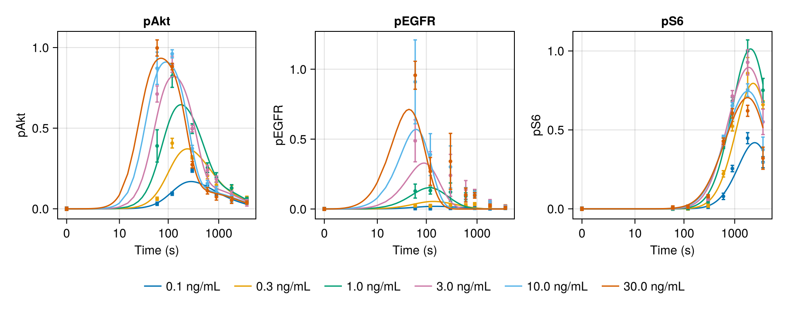

EGF signaling across stimulation doses


Fujita et al. (2010) stimulated PC12 cells with step doses of epidermal growth factor (EGF) and measured phosphorylated EGFR, Akt, and S6 over one hour (Sci. Signal. 3, ra56). This example fits their mass-action model to the six step doses. All doses share the rate constants, the total EGFR amount, and one unknown gain per measured quantity.
The measurements, noise levels, and published parameter values come from the Fujita_SciSignal2010 problem of the PEtab benchmark collection (BSD 3-Clause License). The measurements are rounded to four significant digits.
How to fit a realistic signaling model with experiment-specific Constant inputs, shared observation gains, and log-scale parameters, and how to check which parameters the data can actually identify.
using Corleone: SciMLBase
using CorleoneInverse, ComponentArrays, CairoMakie, ForwardDiff, LinearAlgebra
using Optimization, OptimizationLBFGSB, OrdinaryDiffEqRosenbrock
using SymbolicIndexingInterface: SymbolCache
using TransformVariables: asℝ₊, TVScaleReaction network
EGF binds EGFR (k₁, k₂), and the complex phosphorylates the receptor (k₁₂). Phosphorylated EGFR binds Akt (k₃, k₄) and phosphorylates it (k₅). Phosphorylated Akt binds S6 (k₇, k₈) and phosphorylates it (k₉). Dephosphorylation and degradation are first order (k₆, k₁₀, k₁₁). EGFR is produced and degraded at the turnover rate. The last parameter is the EGF dose, held constant during a step.
function egf_signaling!(du, u, p, t)
EGFR, pEGFR, pEGFR_Akt, Akt, pAkt, S6, pAkt_S6, pS6, EGF_EGFR = u
k₁, k₂, k₃, k₄, k₅, k₆, k₇, k₈, k₉, k₁₀, k₁₁, k₁₂, turnover, EGF = p
binding = k₁ * EGF * EGFR - k₂ * EGF_EGFR
akt_binding = k₃ * pEGFR * Akt - k₄ * pEGFR_Akt
s6_binding = k₇ * pAkt * S6 - k₈ * pAkt_S6
du[1] = -binding + turnover * (68190 - EGFR)
du[2] = -akt_binding + k₅ * pEGFR_Akt - k₆ * pEGFR + k₁₂ * EGF_EGFR
du[3] = akt_binding - k₅ * pEGFR_Akt
du[4] = -akt_binding + k₁₀ * pAkt
du[5] = k₅ * pEGFR_Akt - s6_binding + k₉ * pAkt_S6 - k₁₀ * pAkt
du[6] = -s6_binding + k₁₁ * pS6
du[7] = s6_binding - k₉ * pAkt_S6
du[8] = k₉ * pAkt_S6 - k₁₁ * pS6
du[9] = binding - k₁₂ * EGF_EGFR
return nothing
end
states = [:EGFR, :pEGFR, :pEGFR_Akt, :Akt, :pAkt, :S6, :pAkt_S6, :pS6, :EGF_EGFR]
parameters = [:k₁, :k₂, :k₃, :k₄, :k₅, :k₆, :k₇, :k₈, :k₉, :k₁₀, :k₁₁, :k₁₂, :turnover, :EGF]
published_rates = [
3.691e-3, 2.301e-3, 9.365e-4, 6.097e4, 0.4332, 3.016e-2, 3.273e-6,
3.985e-4, 5.463e-6, 1.18e-2, 9.448e-4, 2.851e-2, 1.48e-3,
]
published_totals = (EGFR = 3.754e7, Akt = 2.693e-2, S6 = 188.1)
published_gains = (pAkt = 41.38, pEGFR = 5.648e-8, pS6 = 7.852e4)
u0 = zeros(9)
u0[[1, 4, 6]] .= values(published_totals)
problem = ODEProblem(
ODEFunction(egf_signaling!; sys = SymbolCache(states, parameters, :t)),
u0, (0.0, 3600.0), [published_rates; 0.0]; abstol = 1.0e-9, reltol = 1.0e-9
)ODEProblem with uType Vector{Float64} and tType Float64. In-place: true
Non-trivial mass matrix: false
timespan: (0.0, 3600.0)
u0: 9-element Vector{Float64}:
3.754e7
0.0
0.0
0.02693
0.0
188.1
0.0
0.0
0.0Measurements
Rows are the sampling times in seconds and columns the EGF doses in ng/mL. Each quantity has its own noise level per sample.
times = [0.0, 60.0, 120.0, 300.0, 600.0, 900.0, 1800.0, 3600.0]
doses = [0.1, 0.3, 1.0, 3.0, 10.0, 30.0]
y_pAkt = [
0.0 0.0 0.0 0.0 0.0 0.0
0.03123 0.06221 0.3899 0.7119 0.8715 0.9973
0.09344 0.4071 0.8231 0.8963 0.9612 0.8819
0.2369 0.319 0.4971 0.4972 0.3735 0.2737
0.1497 0.2059 0.2549 0.2397 0.1555 0.1118
0.0931 0.1471 0.1938 0.1833 0.1192 0.07373
0.06576 0.1254 0.1294 0.08957 0.06231 0.05344
0.04577 0.06783 0.06124 0.03705 0.03678 0.03828
]
σ_pAkt = [
0.01 0.01 0.01 0.01 0.01 0.01
0.01 0.01 0.1 0.05 0.1 0.05
0.01 0.03 0.07 0.05 0.025 0.02
0.01 0.01 0.03 0.02 0.02 0.02
0.01 0.02 0.03 0.03 0.02 0.02
0.01 0.02 0.03 0.02 0.02 0.02
0.01 0.02 0.02 0.02 0.02 0.02
0.01 0.01 0.01 0.02 0.01 0.01
]
y_pEGFR = [
0.0 0.0 0.0 0.0 0.0 0.0
0.004955 0.0249 0.1282 0.4878 0.9095 0.9567
0.004034 0.02299 0.1318 0.2897 0.3891 0.2689
0.006367 0.0289 0.1212 0.2407 0.3012 0.3409
0.01086 0.02794 0.09165 0.1385 0.1032 0.1002
0.007135 0.03546 0.1165 0.1103 0.1062 0.0978
0.00371 0.02123 0.05 0.04764 0.0395 0.02537
0.006769 0.02063 0.01793 0.01783 0.0114 0.008196
]
σ_pEGFR = [
0.01 0.01 0.01 0.01 0.01 0.01
0.01 0.01 0.05 0.15 0.3 0.1
0.01 0.01 0.025 0.12 0.15 0.1
0.01 0.01 0.065 0.15 0.15 0.2
0.01 0.01 0.025 0.065 0.05 0.05
0.01 0.01 0.02 0.03 0.02 0.02
0.01 0.01 0.01 0.02 0.02 0.01
0.01 0.01 0.01 0.01 0.01 0.01
]
y_pS6 = [
0.0 0.0 0.0 0.0 0.0 0.0
0.001856 0.001965 0.002084 0.005719 0.007329 0.008614
0.003342 0.002197 0.004796 0.01313 0.01442 0.01306
0.01263 0.02012 0.04749 0.06241 0.07973 0.07993
0.07891 0.2216 0.392 0.4115 0.4562 0.4287
0.2552 0.5233 0.6814 0.7143 0.6529 0.6051
0.4474 0.8585 1.0 0.9278 0.7519 0.6209
0.2955 0.6598 0.7511 0.5506 0.3745 0.3208
]
σ_pS6 = [
0.01 0.01 0.01 0.01 0.01 0.01
0.01 0.01 0.01 0.01 0.01 0.01
0.01 0.01 0.01 0.01 0.01 0.01
0.01 0.01 0.01 0.01 0.01 0.01
0.02 0.02 0.01 0.01 0.01 0.02
0.02 0.03 0.025 0.035 0.02 0.03
0.035 0.1 0.07 0.08 0.04 0.035
0.035 0.025 0.075 0.08 0.08 0.07
]8×6 Matrix{Float64}:
0.01 0.01 0.01 0.01 0.01 0.01
0.01 0.01 0.01 0.01 0.01 0.01
0.01 0.01 0.01 0.01 0.01 0.01
0.01 0.01 0.01 0.01 0.01 0.01
0.02 0.02 0.01 0.01 0.01 0.02
0.02 0.03 0.025 0.035 0.02 0.03
0.035 0.1 0.07 0.08 0.04 0.035
0.035 0.025 0.075 0.08 0.08 0.07Identifiable parameters
The measurements constrain several parameters only in combination. The total Akt and S6 amounts trade off against the pAkt and pS6 gains, reaction 2 is in rapid equilibrium so only k₃ / k₄ matters, and pS6 stays far below the S6 pool, so k₉ only enters through its product with the pS6 gain. Keep the totals of Akt and S6 and the rates k₄ and k₉ at their published values. Fit the other eleven rates and the EGFR total on a log₁₀ scale.
log10_scale = asℝ₊ ∘ TVScale(log(10.0))
fitted = setdiff(1:13, [4, 9])
rates = Tunable(fitted; default = published_rates[fitted], transform = log10_scale) => nothing
fixed_rates = Constant([4, 9]) => nothing
egfr_total = Tunable(
[1]; kind = Val(:variable), default = [published_totals.EGFR], transform = log10_scale
) => [0.0]DynamicVariable{true}([1], nothing, Val{:variable}(), [3.754e7], nothing, asℝ₊ ∘ TVScale(2.302585092994046), nothing) => [0.0]Keeping parameters Constant is the simplest way to remove directions the data cannot resolve. Switching them back to Tunable is a one-word change.
Each dose is an experiment with its own EGF level, a Constant annotation of the last parameter. The three observation expressions read the current states and a gain shared by all doses.
function dose_experiment(j)
observations = (
:(gain_pAkt * (pAkt + pAkt_S6)) => (times, y_pAkt[:, j], σ_pAkt[:, j]),
:(gain_pEGFR * (pEGFR + pEGFR_Akt)) => (times, y_pEGFR[:, j], σ_pEGFR[:, j]),
:(gain_pS6 * pS6) => (times, y_pS6[:, j], σ_pS6[:, j]),
)
return (; annotations = (Constant(14; default = doses[j]) => nothing,), observations)
end
names = (:egf_0_1, :egf_0_3, :egf_1, :egf_3, :egf_10, :egf_30)
experiments = Experiments(
problem, rates, fixed_rates, egfr_total; controls = [14],
experiments = NamedTuple{names}(map(dose_experiment, eachindex(doses)))
)Experiments{}((initialcondition = InitialConditions{}(nothing, SciMLStructures.ArrayRepack{Vector{Float64}}([3.754e7, 0.0, 0.0, 0.02693, 0.0, 188.1, 0.0, 0.0, 0.0]), (EGFR = InitialCondition{}(:EGFR, LookUp{}(Dict(0.0 => 1), nothing), ParameterCollection{}(Corleone.var"#140#141"{TransformVariables.CompositeScalarTransform{Tuple{TransformVariables.TVExp, TransformVariables.TVScale{Float64}}}, Float64}(asℝ₊ ∘ TVScale(2.302585092994046), 3.754e7, Core.Box([0.0])), 1, asℝ₊ ∘ TVScale(2.302585092994046), nothing)), pEGFR = PassThrough{}(:pEGFR), pEGFR_Akt = PassThrough{}(:pEGFR_Akt), Akt = PassThrough{}(:Akt), pAkt = PassThrough{}(:pAkt), S6 = PassThrough{}(:S6), pAkt_S6 = PassThrough{}(:pAkt_S6), pS6 = PassThrough{}(:pS6), EGF_EGFR = PassThrough{}(:EGF_EGFR)), ([1], [2], [3], [4], [5], [6], [7], [8], [9])), parameter = Parameter{}(nothing, SciMLStructures.ArrayRepack{Vector{Float64}}([0.003691, 0.002301, 0.0009365, 60970.0, 0.4332, 0.03016, 3.273e-6, 0.0003985, 5.463e-6, 0.0118, 0.0009448, 0.02851, 0.00148, 0.0]), (k₁ = PiecewiseConstant{}(:k₁, LookUp{}(nothing, nothing), (k₁ = ParameterCollection{}(Corleone.var"#195#196"{Vector{Float64}}([0.0], Core.Box(asℝ₊ ∘ TVScale(2.302585092994046)), Core.Box(0.003691)), 1, asℝ₊ ∘ TVScale(2.302585092994046), nothing), k₂ = ParameterCollection{}(Corleone.var"#195#196"{Vector{Float64}}([0.0], Core.Box(asℝ₊ ∘ TVScale(2.302585092994046)), Core.Box(0.002301)), 1, asℝ₊ ∘ TVScale(2.302585092994046), nothing), k₃ = ParameterCollection{}(Corleone.var"#195#196"{Vector{Float64}}([0.0], Core.Box(asℝ₊ ∘ TVScale(2.302585092994046)), Core.Box(0.0009365)), 1, asℝ₊ ∘ TVScale(2.302585092994046), nothing), k₄ = FixedLayer{}(ParameterCollection{}(Corleone.var"#195#196"{Vector{Float64}}([0.0], Core.Box(BoundedTransform{}(-Inf, Inf)), Core.Box(60970.0)), 1, BoundedTransform{}(-Inf, Inf), nothing)), k₅ = ParameterCollection{}(Corleone.var"#195#196"{Vector{Float64}}([0.0], Core.Box(asℝ₊ ∘ TVScale(2.302585092994046)), Core.Box(0.4332)), 1, asℝ₊ ∘ TVScale(2.302585092994046), nothing), k₆ = ParameterCollection{}(Corleone.var"#195#196"{Vector{Float64}}([0.0], Core.Box(asℝ₊ ∘ TVScale(2.302585092994046)), Core.Box(0.03016)), 1, asℝ₊ ∘ TVScale(2.302585092994046), nothing), k₇ = ParameterCollection{}(Corleone.var"#195#196"{Vector{Float64}}([0.0], Core.Box(asℝ₊ ∘ TVScale(2.302585092994046)), Core.Box(3.273e-6)), 1, asℝ₊ ∘ TVScale(2.302585092994046), nothing), k₈ = ParameterCollection{}(Corleone.var"#195#196"{Vector{Float64}}([0.0], Core.Box(asℝ₊ ∘ TVScale(2.302585092994046)), Core.Box(0.0003985)), 1, asℝ₊ ∘ TVScale(2.302585092994046), nothing), k₉ = FixedLayer{}(ParameterCollection{}(Corleone.var"#195#196"{Vector{Float64}}([0.0], Core.Box(BoundedTransform{}(-Inf, Inf)), Core.Box(5.463e-6)), 1, BoundedTransform{}(-Inf, Inf), nothing)), k₁₀ = ParameterCollection{}(Corleone.var"#195#196"{Vector{Float64}}([0.0], Core.Box(asℝ₊ ∘ TVScale(2.302585092994046)), Core.Box(0.0118)), 1, asℝ₊ ∘ TVScale(2.302585092994046), nothing), k₁₁ = ParameterCollection{}(Corleone.var"#195#196"{Vector{Float64}}([0.0], Core.Box(asℝ₊ ∘ TVScale(2.302585092994046)), Core.Box(0.0009448)), 1, asℝ₊ ∘ TVScale(2.302585092994046), nothing), k₁₂ = ParameterCollection{}(Corleone.var"#195#196"{Vector{Float64}}([0.0], Core.Box(asℝ₊ ∘ TVScale(2.302585092994046)), Core.Box(0.02851)), 1, asℝ₊ ∘ TVScale(2.302585092994046), nothing), turnover = ParameterCollection{}(Corleone.var"#195#196"{Vector{Float64}}([0.0], Core.Box(asℝ₊ ∘ TVScale(2.302585092994046)), Core.Box(0.00148)), 1, asℝ₊ ∘ TVScale(2.302585092994046), nothing))),), ([1, 2, 3, 4, 5, 6, 7, 8, 9, 10, 11, 12, 13],))), (egf_0_1 = ExperimentLayer{}(InitialConditions{}(nothing, SciMLStructures.ArrayRepack{Vector{Float64}}([3.754e7, 0.0, 0.0, 0.02693, 0.0, 188.1, 0.0, 0.0, 0.0]), NamedTuple(), ()), Parameter{}(nothing, SciMLStructures.ArrayRepack{Vector{Float64}}([0.003691, 0.002301, 0.0009365, 60970.0, 0.4332, 0.03016, 3.273e-6, 0.0003985, 5.463e-6, 0.0118, 0.0009448, 0.02851, 0.00148, 0.0]), (EGF = FixedLayer{}(PiecewiseConstant{}(:EGF, LookUp{}(nothing, nothing), ParameterCollection{}(Corleone.var"#local_experiment_entries##10#local_experiment_entries##11"{Float64, Vector{Float64}, BoundedTransform{}}(0.1, [0.0], BoundedTransform{}(-Inf, Inf)), 1, BoundedTransform{}(-Inf, Inf), nothing))),), ([14],)), Experiment{}((Observation{}(:(gain_pAkt * (pAkt + pAkt_S6)), [0.0, 60.0, 120.0, 300.0, 600.0, 900.0, 1800.0, 3600.0], [0.0, 0.03123, 0.09344, 0.2369, 0.1497, 0.0931, 0.06576, 0.04577], [0.01, 0.01, 0.01, 0.01, 0.01, 0.01, 0.01, 0.01]), Observation{}(:(gain_pEGFR * (pEGFR + pEGFR_Akt)), [0.0, 60.0, 120.0, 300.0, 600.0, 900.0, 1800.0, 3600.0], [0.0, 0.004955, 0.004034, 0.006367, 0.01086, 0.007135, 0.00371, 0.006769], [0.01, 0.01, 0.01, 0.01, 0.01, 0.01, 0.01, 0.01]), Observation{}(:(gain_pS6 * pS6), [0.0, 60.0, 120.0, 300.0, 600.0, 900.0, 1800.0, 3600.0], [0.0, 0.001856, 0.003342, 0.01263, 0.07891, 0.2552, 0.4474, 0.2955], [0.01, 0.01, 0.01, 0.01, 0.02, 0.02, 0.035, 0.035])), nothing, [0.0, 60.0, 120.0, 300.0, 600.0, 900.0, 1800.0, 3600.0])), egf_0_3 = ExperimentLayer{}(InitialConditions{}(nothing, SciMLStructures.ArrayRepack{Vector{Float64}}([3.754e7, 0.0, 0.0, 0.02693, 0.0, 188.1, 0.0, 0.0, 0.0]), NamedTuple(), ()), Parameter{}(nothing, SciMLStructures.ArrayRepack{Vector{Float64}}([0.003691, 0.002301, 0.0009365, 60970.0, 0.4332, 0.03016, 3.273e-6, 0.0003985, 5.463e-6, 0.0118, 0.0009448, 0.02851, 0.00148, 0.0]), (EGF = FixedLayer{}(PiecewiseConstant{}(:EGF, LookUp{}(nothing, nothing), ParameterCollection{}(Corleone.var"#local_experiment_entries##10#local_experiment_entries##11"{Float64, Vector{Float64}, BoundedTransform{}}(0.3, [0.0], BoundedTransform{}(-Inf, Inf)), 1, BoundedTransform{}(-Inf, Inf), nothing))),), ([14],)), Experiment{}((Observation{}(:(gain_pAkt * (pAkt + pAkt_S6)), [0.0, 60.0, 120.0, 300.0, 600.0, 900.0, 1800.0, 3600.0], [0.0, 0.06221, 0.4071, 0.319, 0.2059, 0.1471, 0.1254, 0.06783], [0.01, 0.01, 0.03, 0.01, 0.02, 0.02, 0.02, 0.01]), Observation{}(:(gain_pEGFR * (pEGFR + pEGFR_Akt)), [0.0, 60.0, 120.0, 300.0, 600.0, 900.0, 1800.0, 3600.0], [0.0, 0.0249, 0.02299, 0.0289, 0.02794, 0.03546, 0.02123, 0.02063], [0.01, 0.01, 0.01, 0.01, 0.01, 0.01, 0.01, 0.01]), Observation{}(:(gain_pS6 * pS6), [0.0, 60.0, 120.0, 300.0, 600.0, 900.0, 1800.0, 3600.0], [0.0, 0.001965, 0.002197, 0.02012, 0.2216, 0.5233, 0.8585, 0.6598], [0.01, 0.01, 0.01, 0.01, 0.02, 0.03, 0.1, 0.025])), nothing, [0.0, 60.0, 120.0, 300.0, 600.0, 900.0, 1800.0, 3600.0])), egf_1 = ExperimentLayer{}(InitialConditions{}(nothing, SciMLStructures.ArrayRepack{Vector{Float64}}([3.754e7, 0.0, 0.0, 0.02693, 0.0, 188.1, 0.0, 0.0, 0.0]), NamedTuple(), ()), Parameter{}(nothing, SciMLStructures.ArrayRepack{Vector{Float64}}([0.003691, 0.002301, 0.0009365, 60970.0, 0.4332, 0.03016, 3.273e-6, 0.0003985, 5.463e-6, 0.0118, 0.0009448, 0.02851, 0.00148, 0.0]), (EGF = FixedLayer{}(PiecewiseConstant{}(:EGF, LookUp{}(nothing, nothing), ParameterCollection{}(Corleone.var"#local_experiment_entries##10#local_experiment_entries##11"{Float64, Vector{Float64}, BoundedTransform{}}(1.0, [0.0], BoundedTransform{}(-Inf, Inf)), 1, BoundedTransform{}(-Inf, Inf), nothing))),), ([14],)), Experiment{}((Observation{}(:(gain_pAkt * (pAkt + pAkt_S6)), [0.0, 60.0, 120.0, 300.0, 600.0, 900.0, 1800.0, 3600.0], [0.0, 0.3899, 0.8231, 0.4971, 0.2549, 0.1938, 0.1294, 0.06124], [0.01, 0.1, 0.07, 0.03, 0.03, 0.03, 0.02, 0.01]), Observation{}(:(gain_pEGFR * (pEGFR + pEGFR_Akt)), [0.0, 60.0, 120.0, 300.0, 600.0, 900.0, 1800.0, 3600.0], [0.0, 0.1282, 0.1318, 0.1212, 0.09165, 0.1165, 0.05, 0.01793], [0.01, 0.05, 0.025, 0.065, 0.025, 0.02, 0.01, 0.01]), Observation{}(:(gain_pS6 * pS6), [0.0, 60.0, 120.0, 300.0, 600.0, 900.0, 1800.0, 3600.0], [0.0, 0.002084, 0.004796, 0.04749, 0.392, 0.6814, 1.0, 0.7511], [0.01, 0.01, 0.01, 0.01, 0.01, 0.025, 0.07, 0.075])), nothing, [0.0, 60.0, 120.0, 300.0, 600.0, 900.0, 1800.0, 3600.0])), egf_3 = ExperimentLayer{}(InitialConditions{}(nothing, SciMLStructures.ArrayRepack{Vector{Float64}}([3.754e7, 0.0, 0.0, 0.02693, 0.0, 188.1, 0.0, 0.0, 0.0]), NamedTuple(), ()), Parameter{}(nothing, SciMLStructures.ArrayRepack{Vector{Float64}}([0.003691, 0.002301, 0.0009365, 60970.0, 0.4332, 0.03016, 3.273e-6, 0.0003985, 5.463e-6, 0.0118, 0.0009448, 0.02851, 0.00148, 0.0]), (EGF = FixedLayer{}(PiecewiseConstant{}(:EGF, LookUp{}(nothing, nothing), ParameterCollection{}(Corleone.var"#local_experiment_entries##10#local_experiment_entries##11"{Float64, Vector{Float64}, BoundedTransform{}}(3.0, [0.0], BoundedTransform{}(-Inf, Inf)), 1, BoundedTransform{}(-Inf, Inf), nothing))),), ([14],)), Experiment{}((Observation{}(:(gain_pAkt * (pAkt + pAkt_S6)), [0.0, 60.0, 120.0, 300.0, 600.0, 900.0, 1800.0, 3600.0], [0.0, 0.7119, 0.8963, 0.4972, 0.2397, 0.1833, 0.08957, 0.03705], [0.01, 0.05, 0.05, 0.02, 0.03, 0.02, 0.02, 0.02]), Observation{}(:(gain_pEGFR * (pEGFR + pEGFR_Akt)), [0.0, 60.0, 120.0, 300.0, 600.0, 900.0, 1800.0, 3600.0], [0.0, 0.4878, 0.2897, 0.2407, 0.1385, 0.1103, 0.04764, 0.01783], [0.01, 0.15, 0.12, 0.15, 0.065, 0.03, 0.02, 0.01]), Observation{}(:(gain_pS6 * pS6), [0.0, 60.0, 120.0, 300.0, 600.0, 900.0, 1800.0, 3600.0], [0.0, 0.005719, 0.01313, 0.06241, 0.4115, 0.7143, 0.9278, 0.5506], [0.01, 0.01, 0.01, 0.01, 0.01, 0.035, 0.08, 0.08])), nothing, [0.0, 60.0, 120.0, 300.0, 600.0, 900.0, 1800.0, 3600.0])), egf_10 = ExperimentLayer{}(InitialConditions{}(nothing, SciMLStructures.ArrayRepack{Vector{Float64}}([3.754e7, 0.0, 0.0, 0.02693, 0.0, 188.1, 0.0, 0.0, 0.0]), NamedTuple(), ()), Parameter{}(nothing, SciMLStructures.ArrayRepack{Vector{Float64}}([0.003691, 0.002301, 0.0009365, 60970.0, 0.4332, 0.03016, 3.273e-6, 0.0003985, 5.463e-6, 0.0118, 0.0009448, 0.02851, 0.00148, 0.0]), (EGF = FixedLayer{}(PiecewiseConstant{}(:EGF, LookUp{}(nothing, nothing), ParameterCollection{}(Corleone.var"#local_experiment_entries##10#local_experiment_entries##11"{Float64, Vector{Float64}, BoundedTransform{}}(10.0, [0.0], BoundedTransform{}(-Inf, Inf)), 1, BoundedTransform{}(-Inf, Inf), nothing))),), ([14],)), Experiment{}((Observation{}(:(gain_pAkt * (pAkt + pAkt_S6)), [0.0, 60.0, 120.0, 300.0, 600.0, 900.0, 1800.0, 3600.0], [0.0, 0.8715, 0.9612, 0.3735, 0.1555, 0.1192, 0.06231, 0.03678], [0.01, 0.1, 0.025, 0.02, 0.02, 0.02, 0.02, 0.01]), Observation{}(:(gain_pEGFR * (pEGFR + pEGFR_Akt)), [0.0, 60.0, 120.0, 300.0, 600.0, 900.0, 1800.0, 3600.0], [0.0, 0.9095, 0.3891, 0.3012, 0.1032, 0.1062, 0.0395, 0.0114], [0.01, 0.3, 0.15, 0.15, 0.05, 0.02, 0.02, 0.01]), Observation{}(:(gain_pS6 * pS6), [0.0, 60.0, 120.0, 300.0, 600.0, 900.0, 1800.0, 3600.0], [0.0, 0.007329, 0.01442, 0.07973, 0.4562, 0.6529, 0.7519, 0.3745], [0.01, 0.01, 0.01, 0.01, 0.01, 0.02, 0.04, 0.08])), nothing, [0.0, 60.0, 120.0, 300.0, 600.0, 900.0, 1800.0, 3600.0])), egf_30 = ExperimentLayer{}(InitialConditions{}(nothing, SciMLStructures.ArrayRepack{Vector{Float64}}([3.754e7, 0.0, 0.0, 0.02693, 0.0, 188.1, 0.0, 0.0, 0.0]), NamedTuple(), ()), Parameter{}(nothing, SciMLStructures.ArrayRepack{Vector{Float64}}([0.003691, 0.002301, 0.0009365, 60970.0, 0.4332, 0.03016, 3.273e-6, 0.0003985, 5.463e-6, 0.0118, 0.0009448, 0.02851, 0.00148, 0.0]), (EGF = FixedLayer{}(PiecewiseConstant{}(:EGF, LookUp{}(nothing, nothing), ParameterCollection{}(Corleone.var"#local_experiment_entries##10#local_experiment_entries##11"{Float64, Vector{Float64}, BoundedTransform{}}(30.0, [0.0], BoundedTransform{}(-Inf, Inf)), 1, BoundedTransform{}(-Inf, Inf), nothing))),), ([14],)), Experiment{}((Observation{}(:(gain_pAkt * (pAkt + pAkt_S6)), [0.0, 60.0, 120.0, 300.0, 600.0, 900.0, 1800.0, 3600.0], [0.0, 0.9973, 0.8819, 0.2737, 0.1118, 0.07373, 0.05344, 0.03828], [0.01, 0.05, 0.02, 0.02, 0.02, 0.02, 0.02, 0.01]), Observation{}(:(gain_pEGFR * (pEGFR + pEGFR_Akt)), [0.0, 60.0, 120.0, 300.0, 600.0, 900.0, 1800.0, 3600.0], [0.0, 0.9567, 0.2689, 0.3409, 0.1002, 0.0978, 0.02537, 0.008196], [0.01, 0.1, 0.1, 0.2, 0.05, 0.02, 0.01, 0.01]), Observation{}(:(gain_pS6 * pS6), [0.0, 60.0, 120.0, 300.0, 600.0, 900.0, 1800.0, 3600.0], [0.0, 0.008614, 0.01306, 0.07993, 0.4287, 0.6051, 0.6209, 0.3208], [0.01, 0.01, 0.01, 0.01, 0.02, 0.03, 0.035, 0.07])), nothing, [0.0, 60.0, 120.0, 300.0, 600.0, 900.0, 1800.0, 3600.0]))), (egf_0_1 = (initialcondition = InitialConditions{}(nothing, SciMLStructures.ArrayRepack{Vector{Float64}}([3.754e7, 0.0, 0.0, 0.02693, 0.0, 188.1, 0.0, 0.0, 0.0]), (EGFR = InitialCondition{}(:EGFR, LookUp{}(Dict(0.0 => 1), nothing), ParameterCollection{}(Corleone.var"#140#141"{TransformVariables.CompositeScalarTransform{Tuple{TransformVariables.TVExp, TransformVariables.TVScale{Float64}}}, Float64}(asℝ₊ ∘ TVScale(2.302585092994046), 3.754e7, Core.Box([0.0])), 1, asℝ₊ ∘ TVScale(2.302585092994046), nothing)), pEGFR = PassThrough{}(:pEGFR), pEGFR_Akt = PassThrough{}(:pEGFR_Akt), Akt = PassThrough{}(:Akt), pAkt = PassThrough{}(:pAkt), S6 = PassThrough{}(:S6), pAkt_S6 = PassThrough{}(:pAkt_S6), pS6 = PassThrough{}(:pS6), EGF_EGFR = PassThrough{}(:EGF_EGFR)), ([1], [2], [3], [4], [5], [6], [7], [8], [9])), parameter = Parameter{}(nothing, SciMLStructures.ArrayRepack{Vector{Float64}}([0.003691, 0.002301, 0.0009365, 60970.0, 0.4332, 0.03016, 3.273e-6, 0.0003985, 5.463e-6, 0.0118, 0.0009448, 0.02851, 0.00148, 0.0]), (k₁ = PiecewiseConstant{}(:k₁, LookUp{}(nothing, nothing), (k₁ = ParameterCollection{}(Corleone.var"#195#196"{Vector{Float64}}([0.0], Core.Box(asℝ₊ ∘ TVScale(2.302585092994046)), Core.Box(0.003691)), 1, asℝ₊ ∘ TVScale(2.302585092994046), nothing), k₂ = ParameterCollection{}(Corleone.var"#195#196"{Vector{Float64}}([0.0], Core.Box(asℝ₊ ∘ TVScale(2.302585092994046)), Core.Box(0.002301)), 1, asℝ₊ ∘ TVScale(2.302585092994046), nothing), k₃ = ParameterCollection{}(Corleone.var"#195#196"{Vector{Float64}}([0.0], Core.Box(asℝ₊ ∘ TVScale(2.302585092994046)), Core.Box(0.0009365)), 1, asℝ₊ ∘ TVScale(2.302585092994046), nothing), k₄ = FixedLayer{}(ParameterCollection{}(Corleone.var"#195#196"{Vector{Float64}}([0.0], Core.Box(BoundedTransform{}(-Inf, Inf)), Core.Box(60970.0)), 1, BoundedTransform{}(-Inf, Inf), nothing)), k₅ = ParameterCollection{}(Corleone.var"#195#196"{Vector{Float64}}([0.0], Core.Box(asℝ₊ ∘ TVScale(2.302585092994046)), Core.Box(0.4332)), 1, asℝ₊ ∘ TVScale(2.302585092994046), nothing), k₆ = ParameterCollection{}(Corleone.var"#195#196"{Vector{Float64}}([0.0], Core.Box(asℝ₊ ∘ TVScale(2.302585092994046)), Core.Box(0.03016)), 1, asℝ₊ ∘ TVScale(2.302585092994046), nothing), k₇ = ParameterCollection{}(Corleone.var"#195#196"{Vector{Float64}}([0.0], Core.Box(asℝ₊ ∘ TVScale(2.302585092994046)), Core.Box(3.273e-6)), 1, asℝ₊ ∘ TVScale(2.302585092994046), nothing), k₈ = ParameterCollection{}(Corleone.var"#195#196"{Vector{Float64}}([0.0], Core.Box(asℝ₊ ∘ TVScale(2.302585092994046)), Core.Box(0.0003985)), 1, asℝ₊ ∘ TVScale(2.302585092994046), nothing), k₉ = FixedLayer{}(ParameterCollection{}(Corleone.var"#195#196"{Vector{Float64}}([0.0], Core.Box(BoundedTransform{}(-Inf, Inf)), Core.Box(5.463e-6)), 1, BoundedTransform{}(-Inf, Inf), nothing)), k₁₀ = ParameterCollection{}(Corleone.var"#195#196"{Vector{Float64}}([0.0], Core.Box(asℝ₊ ∘ TVScale(2.302585092994046)), Core.Box(0.0118)), 1, asℝ₊ ∘ TVScale(2.302585092994046), nothing), k₁₁ = ParameterCollection{}(Corleone.var"#195#196"{Vector{Float64}}([0.0], Core.Box(asℝ₊ ∘ TVScale(2.302585092994046)), Core.Box(0.0009448)), 1, asℝ₊ ∘ TVScale(2.302585092994046), nothing), k₁₂ = ParameterCollection{}(Corleone.var"#195#196"{Vector{Float64}}([0.0], Core.Box(asℝ₊ ∘ TVScale(2.302585092994046)), Core.Box(0.02851)), 1, asℝ₊ ∘ TVScale(2.302585092994046), nothing), turnover = ParameterCollection{}(Corleone.var"#195#196"{Vector{Float64}}([0.0], Core.Box(asℝ₊ ∘ TVScale(2.302585092994046)), Core.Box(0.00148)), 1, asℝ₊ ∘ TVScale(2.302585092994046), nothing))), EGF = FixedLayer{}(PiecewiseConstant{}(:EGF, LookUp{}(nothing, nothing), ParameterCollection{}(Corleone.var"#local_experiment_entries##10#local_experiment_entries##11"{Float64, Vector{Float64}, BoundedTransform{}}(0.1, [0.0], BoundedTransform{}(-Inf, Inf)), 1, BoundedTransform{}(-Inf, Inf), nothing)))), ([1, 2, 3, 4, 5, 6, 7, 8, 9, 10, 11, 12, 13], [14])), problem = SciMLBase.ODEProblem{Vector{Float64}, Tuple{Float64, Float64}, true, Vector{Float64}, SciMLBase.ODEFunction{true, SciMLBase.AutoSpecialize, typeof(Main.var"##2671".egf_signaling!), LinearAlgebra.UniformScaling{Bool}, Nothing, Nothing, Nothing, Nothing, Nothing, Nothing, Nothing, Nothing, Nothing, Nothing, Nothing, Nothing, typeof(SciMLBase.DEFAULT_OBSERVED), Nothing, SymbolicIndexingInterface.SymbolCache{Dict{Symbol, Int64}, Dict{Symbol, Int64}, Nothing, Symbol, Dict{Any, Any}}, Nothing, Nothing}, Base.Pairs{Symbol, Float64, Nothing, @NamedTuple{abstol::Float64, reltol::Float64}}, SciMLBase.StandardODEProblem}(SciMLBase.ODEFunction{true, SciMLBase.AutoSpecialize, typeof(Main.var"##2671".egf_signaling!), LinearAlgebra.UniformScaling{Bool}, Nothing, Nothing, Nothing, Nothing, Nothing, Nothing, Nothing, Nothing, Nothing, Nothing, Nothing, Nothing, typeof(SciMLBase.DEFAULT_OBSERVED), Nothing, SymbolicIndexingInterface.SymbolCache{Dict{Symbol, Int64}, Dict{Symbol, Int64}, Nothing, Symbol, Dict{Any, Any}}, Nothing, Nothing}(Main.var"##2671".egf_signaling!, LinearAlgebra.UniformScaling{Bool}(true), nothing, nothing, nothing, nothing, nothing, nothing, nothing, nothing, nothing, nothing, nothing, nothing, SciMLBase.DEFAULT_OBSERVED, nothing, SymbolicIndexingInterface.SymbolCache{Dict{Symbol, Int64}, Dict{Symbol, Int64}, Nothing, Symbol, Dict{Any, Any}}(Dict(:pEGFR => 2, :S6 => 6, :pS6 => 8, :EGF_EGFR => 9, :pAkt_S6 => 7, :pEGFR_Akt => 3, :EGFR => 1, :pAkt => 5, :Akt => 4), Dict(:EGF => 14, :turnover => 13, :k₁₀ => 10, :k₄ => 4, :k₉ => 9, :k₁₂ => 12, :k₈ => 8, :k₆ => 6, :k₂ => 2, :k₁₁ => 11, :k₅ => 5, :k₁ => 1, :k₃ => 3, :k₇ => 7), nothing, :t, Dict{Any, Any}()), nothing, nothing), [3.754e7, 0.0, 0.0, 0.02693, 0.0, 188.1, 0.0, 0.0, 0.0], (0.0, 3600.0), [0.003691, 0.002301, 0.0009365, 60970.0, 0.4332, 0.03016, 3.273e-6, 0.0003985, 5.463e-6, 0.0118, 0.0009448, 0.02851, 0.00148, 0.0], Base.Pairs(:abstol => 1.0e-9, :reltol => 1.0e-9), SciMLBase.StandardODEProblem()), sys = ControlSymbolCache{}(SymbolicIndexingInterface.SymbolCache{Dict{Symbol, Int64}, Dict{Symbol, Int64}, Nothing, Symbol, Dict{Any, Any}}(Dict(:pEGFR => 2, :S6 => 6, :pS6 => 8, :EGF_EGFR => 9, :pAkt_S6 => 7, :pEGFR_Akt => 3, :EGFR => 1, :pAkt => 5, :Akt => 4), Dict(:EGF => 14, :turnover => 13, :k₁₀ => 10, :k₄ => 4, :k₉ => 9, :k₁₂ => 12, :k₈ => 8, :k₆ => 6, :k₂ => 2, :k₁₁ => 11, :k₅ => 5, :k₁ => 1, :k₃ => 3, :k₇ => 7), nothing, :t, Dict{Any, Any}()), [:EGF], Symbol[], Dict{Any, Any}(:k₁₀ => (-Inf, Inf), :k₈ => (-Inf, Inf), :k₆ => (-Inf, Inf), :k₁₁ => (-Inf, Inf), :k₁ => (-Inf, Inf), :k₃ => (-Inf, Inf), :k₇ => (-Inf, Inf), :EGF => (-Inf, Inf), :turnover => (-Inf, Inf), :k₁₂ => (-Inf, Inf), :k₄ => (-Inf, Inf), :k₉ => (-Inf, Inf), :EGFR => (-Inf, Inf), :k₂ => (-Inf, Inf), :k₅ => (-Inf, Inf)), Any[]), initial_permutation = [1, 2, 3, 4, 5, 6, 7, 8, 9], parameter_permutation = [1, 2, 3, 4, 5, 6, 7, 8, 9, 10, 11, 12, 13, 14]), egf_0_3 = (initialcondition = InitialConditions{}(nothing, SciMLStructures.ArrayRepack{Vector{Float64}}([3.754e7, 0.0, 0.0, 0.02693, 0.0, 188.1, 0.0, 0.0, 0.0]), (EGFR = InitialCondition{}(:EGFR, LookUp{}(Dict(0.0 => 1), nothing), ParameterCollection{}(Corleone.var"#140#141"{TransformVariables.CompositeScalarTransform{Tuple{TransformVariables.TVExp, TransformVariables.TVScale{Float64}}}, Float64}(asℝ₊ ∘ TVScale(2.302585092994046), 3.754e7, Core.Box([0.0])), 1, asℝ₊ ∘ TVScale(2.302585092994046), nothing)), pEGFR = PassThrough{}(:pEGFR), pEGFR_Akt = PassThrough{}(:pEGFR_Akt), Akt = PassThrough{}(:Akt), pAkt = PassThrough{}(:pAkt), S6 = PassThrough{}(:S6), pAkt_S6 = PassThrough{}(:pAkt_S6), pS6 = PassThrough{}(:pS6), EGF_EGFR = PassThrough{}(:EGF_EGFR)), ([1], [2], [3], [4], [5], [6], [7], [8], [9])), parameter = Parameter{}(nothing, SciMLStructures.ArrayRepack{Vector{Float64}}([0.003691, 0.002301, 0.0009365, 60970.0, 0.4332, 0.03016, 3.273e-6, 0.0003985, 5.463e-6, 0.0118, 0.0009448, 0.02851, 0.00148, 0.0]), (k₁ = PiecewiseConstant{}(:k₁, LookUp{}(nothing, nothing), (k₁ = ParameterCollection{}(Corleone.var"#195#196"{Vector{Float64}}([0.0], Core.Box(asℝ₊ ∘ TVScale(2.302585092994046)), Core.Box(0.003691)), 1, asℝ₊ ∘ TVScale(2.302585092994046), nothing), k₂ = ParameterCollection{}(Corleone.var"#195#196"{Vector{Float64}}([0.0], Core.Box(asℝ₊ ∘ TVScale(2.302585092994046)), Core.Box(0.002301)), 1, asℝ₊ ∘ TVScale(2.302585092994046), nothing), k₃ = ParameterCollection{}(Corleone.var"#195#196"{Vector{Float64}}([0.0], Core.Box(asℝ₊ ∘ TVScale(2.302585092994046)), Core.Box(0.0009365)), 1, asℝ₊ ∘ TVScale(2.302585092994046), nothing), k₄ = FixedLayer{}(ParameterCollection{}(Corleone.var"#195#196"{Vector{Float64}}([0.0], Core.Box(BoundedTransform{}(-Inf, Inf)), Core.Box(60970.0)), 1, BoundedTransform{}(-Inf, Inf), nothing)), k₅ = ParameterCollection{}(Corleone.var"#195#196"{Vector{Float64}}([0.0], Core.Box(asℝ₊ ∘ TVScale(2.302585092994046)), Core.Box(0.4332)), 1, asℝ₊ ∘ TVScale(2.302585092994046), nothing), k₆ = ParameterCollection{}(Corleone.var"#195#196"{Vector{Float64}}([0.0], Core.Box(asℝ₊ ∘ TVScale(2.302585092994046)), Core.Box(0.03016)), 1, asℝ₊ ∘ TVScale(2.302585092994046), nothing), k₇ = ParameterCollection{}(Corleone.var"#195#196"{Vector{Float64}}([0.0], Core.Box(asℝ₊ ∘ TVScale(2.302585092994046)), Core.Box(3.273e-6)), 1, asℝ₊ ∘ TVScale(2.302585092994046), nothing), k₈ = ParameterCollection{}(Corleone.var"#195#196"{Vector{Float64}}([0.0], Core.Box(asℝ₊ ∘ TVScale(2.302585092994046)), Core.Box(0.0003985)), 1, asℝ₊ ∘ TVScale(2.302585092994046), nothing), k₉ = FixedLayer{}(ParameterCollection{}(Corleone.var"#195#196"{Vector{Float64}}([0.0], Core.Box(BoundedTransform{}(-Inf, Inf)), Core.Box(5.463e-6)), 1, BoundedTransform{}(-Inf, Inf), nothing)), k₁₀ = ParameterCollection{}(Corleone.var"#195#196"{Vector{Float64}}([0.0], Core.Box(asℝ₊ ∘ TVScale(2.302585092994046)), Core.Box(0.0118)), 1, asℝ₊ ∘ TVScale(2.302585092994046), nothing), k₁₁ = ParameterCollection{}(Corleone.var"#195#196"{Vector{Float64}}([0.0], Core.Box(asℝ₊ ∘ TVScale(2.302585092994046)), Core.Box(0.0009448)), 1, asℝ₊ ∘ TVScale(2.302585092994046), nothing), k₁₂ = ParameterCollection{}(Corleone.var"#195#196"{Vector{Float64}}([0.0], Core.Box(asℝ₊ ∘ TVScale(2.302585092994046)), Core.Box(0.02851)), 1, asℝ₊ ∘ TVScale(2.302585092994046), nothing), turnover = ParameterCollection{}(Corleone.var"#195#196"{Vector{Float64}}([0.0], Core.Box(asℝ₊ ∘ TVScale(2.302585092994046)), Core.Box(0.00148)), 1, asℝ₊ ∘ TVScale(2.302585092994046), nothing))), EGF = FixedLayer{}(PiecewiseConstant{}(:EGF, LookUp{}(nothing, nothing), ParameterCollection{}(Corleone.var"#local_experiment_entries##10#local_experiment_entries##11"{Float64, Vector{Float64}, BoundedTransform{}}(0.3, [0.0], BoundedTransform{}(-Inf, Inf)), 1, BoundedTransform{}(-Inf, Inf), nothing)))), ([1, 2, 3, 4, 5, 6, 7, 8, 9, 10, 11, 12, 13], [14])), problem = SciMLBase.ODEProblem{Vector{Float64}, Tuple{Float64, Float64}, true, Vector{Float64}, SciMLBase.ODEFunction{true, SciMLBase.AutoSpecialize, typeof(Main.var"##2671".egf_signaling!), LinearAlgebra.UniformScaling{Bool}, Nothing, Nothing, Nothing, Nothing, Nothing, Nothing, Nothing, Nothing, Nothing, Nothing, Nothing, Nothing, typeof(SciMLBase.DEFAULT_OBSERVED), Nothing, SymbolicIndexingInterface.SymbolCache{Dict{Symbol, Int64}, Dict{Symbol, Int64}, Nothing, Symbol, Dict{Any, Any}}, Nothing, Nothing}, Base.Pairs{Symbol, Float64, Nothing, @NamedTuple{abstol::Float64, reltol::Float64}}, SciMLBase.StandardODEProblem}(SciMLBase.ODEFunction{true, SciMLBase.AutoSpecialize, typeof(Main.var"##2671".egf_signaling!), LinearAlgebra.UniformScaling{Bool}, Nothing, Nothing, Nothing, Nothing, Nothing, Nothing, Nothing, Nothing, Nothing, Nothing, Nothing, Nothing, typeof(SciMLBase.DEFAULT_OBSERVED), Nothing, SymbolicIndexingInterface.SymbolCache{Dict{Symbol, Int64}, Dict{Symbol, Int64}, Nothing, Symbol, Dict{Any, Any}}, Nothing, Nothing}(Main.var"##2671".egf_signaling!, LinearAlgebra.UniformScaling{Bool}(true), nothing, nothing, nothing, nothing, nothing, nothing, nothing, nothing, nothing, nothing, nothing, nothing, SciMLBase.DEFAULT_OBSERVED, nothing, SymbolicIndexingInterface.SymbolCache{Dict{Symbol, Int64}, Dict{Symbol, Int64}, Nothing, Symbol, Dict{Any, Any}}(Dict(:pEGFR => 2, :S6 => 6, :pS6 => 8, :EGF_EGFR => 9, :pAkt_S6 => 7, :pEGFR_Akt => 3, :EGFR => 1, :pAkt => 5, :Akt => 4), Dict(:EGF => 14, :turnover => 13, :k₁₀ => 10, :k₄ => 4, :k₉ => 9, :k₁₂ => 12, :k₈ => 8, :k₆ => 6, :k₂ => 2, :k₁₁ => 11, :k₅ => 5, :k₁ => 1, :k₃ => 3, :k₇ => 7), nothing, :t, Dict{Any, Any}()), nothing, nothing), [3.754e7, 0.0, 0.0, 0.02693, 0.0, 188.1, 0.0, 0.0, 0.0], (0.0, 3600.0), [0.003691, 0.002301, 0.0009365, 60970.0, 0.4332, 0.03016, 3.273e-6, 0.0003985, 5.463e-6, 0.0118, 0.0009448, 0.02851, 0.00148, 0.0], Base.Pairs(:abstol => 1.0e-9, :reltol => 1.0e-9), SciMLBase.StandardODEProblem()), sys = ControlSymbolCache{}(SymbolicIndexingInterface.SymbolCache{Dict{Symbol, Int64}, Dict{Symbol, Int64}, Nothing, Symbol, Dict{Any, Any}}(Dict(:pEGFR => 2, :S6 => 6, :pS6 => 8, :EGF_EGFR => 9, :pAkt_S6 => 7, :pEGFR_Akt => 3, :EGFR => 1, :pAkt => 5, :Akt => 4), Dict(:EGF => 14, :turnover => 13, :k₁₀ => 10, :k₄ => 4, :k₉ => 9, :k₁₂ => 12, :k₈ => 8, :k₆ => 6, :k₂ => 2, :k₁₁ => 11, :k₅ => 5, :k₁ => 1, :k₃ => 3, :k₇ => 7), nothing, :t, Dict{Any, Any}()), [:EGF], Symbol[], Dict{Any, Any}(:k₁₀ => (-Inf, Inf), :k₈ => (-Inf, Inf), :k₆ => (-Inf, Inf), :k₁₁ => (-Inf, Inf), :k₁ => (-Inf, Inf), :k₃ => (-Inf, Inf), :k₇ => (-Inf, Inf), :EGF => (-Inf, Inf), :turnover => (-Inf, Inf), :k₁₂ => (-Inf, Inf), :k₄ => (-Inf, Inf), :k₉ => (-Inf, Inf), :EGFR => (-Inf, Inf), :k₂ => (-Inf, Inf), :k₅ => (-Inf, Inf)), Any[]), initial_permutation = [1, 2, 3, 4, 5, 6, 7, 8, 9], parameter_permutation = [1, 2, 3, 4, 5, 6, 7, 8, 9, 10, 11, 12, 13, 14]), egf_1 = (initialcondition = InitialConditions{}(nothing, SciMLStructures.ArrayRepack{Vector{Float64}}([3.754e7, 0.0, 0.0, 0.02693, 0.0, 188.1, 0.0, 0.0, 0.0]), (EGFR = InitialCondition{}(:EGFR, LookUp{}(Dict(0.0 => 1), nothing), ParameterCollection{}(Corleone.var"#140#141"{TransformVariables.CompositeScalarTransform{Tuple{TransformVariables.TVExp, TransformVariables.TVScale{Float64}}}, Float64}(asℝ₊ ∘ TVScale(2.302585092994046), 3.754e7, Core.Box([0.0])), 1, asℝ₊ ∘ TVScale(2.302585092994046), nothing)), pEGFR = PassThrough{}(:pEGFR), pEGFR_Akt = PassThrough{}(:pEGFR_Akt), Akt = PassThrough{}(:Akt), pAkt = PassThrough{}(:pAkt), S6 = PassThrough{}(:S6), pAkt_S6 = PassThrough{}(:pAkt_S6), pS6 = PassThrough{}(:pS6), EGF_EGFR = PassThrough{}(:EGF_EGFR)), ([1], [2], [3], [4], [5], [6], [7], [8], [9])), parameter = Parameter{}(nothing, SciMLStructures.ArrayRepack{Vector{Float64}}([0.003691, 0.002301, 0.0009365, 60970.0, 0.4332, 0.03016, 3.273e-6, 0.0003985, 5.463e-6, 0.0118, 0.0009448, 0.02851, 0.00148, 0.0]), (k₁ = PiecewiseConstant{}(:k₁, LookUp{}(nothing, nothing), (k₁ = ParameterCollection{}(Corleone.var"#195#196"{Vector{Float64}}([0.0], Core.Box(asℝ₊ ∘ TVScale(2.302585092994046)), Core.Box(0.003691)), 1, asℝ₊ ∘ TVScale(2.302585092994046), nothing), k₂ = ParameterCollection{}(Corleone.var"#195#196"{Vector{Float64}}([0.0], Core.Box(asℝ₊ ∘ TVScale(2.302585092994046)), Core.Box(0.002301)), 1, asℝ₊ ∘ TVScale(2.302585092994046), nothing), k₃ = ParameterCollection{}(Corleone.var"#195#196"{Vector{Float64}}([0.0], Core.Box(asℝ₊ ∘ TVScale(2.302585092994046)), Core.Box(0.0009365)), 1, asℝ₊ ∘ TVScale(2.302585092994046), nothing), k₄ = FixedLayer{}(ParameterCollection{}(Corleone.var"#195#196"{Vector{Float64}}([0.0], Core.Box(BoundedTransform{}(-Inf, Inf)), Core.Box(60970.0)), 1, BoundedTransform{}(-Inf, Inf), nothing)), k₅ = ParameterCollection{}(Corleone.var"#195#196"{Vector{Float64}}([0.0], Core.Box(asℝ₊ ∘ TVScale(2.302585092994046)), Core.Box(0.4332)), 1, asℝ₊ ∘ TVScale(2.302585092994046), nothing), k₆ = ParameterCollection{}(Corleone.var"#195#196"{Vector{Float64}}([0.0], Core.Box(asℝ₊ ∘ TVScale(2.302585092994046)), Core.Box(0.03016)), 1, asℝ₊ ∘ TVScale(2.302585092994046), nothing), k₇ = ParameterCollection{}(Corleone.var"#195#196"{Vector{Float64}}([0.0], Core.Box(asℝ₊ ∘ TVScale(2.302585092994046)), Core.Box(3.273e-6)), 1, asℝ₊ ∘ TVScale(2.302585092994046), nothing), k₈ = ParameterCollection{}(Corleone.var"#195#196"{Vector{Float64}}([0.0], Core.Box(asℝ₊ ∘ TVScale(2.302585092994046)), Core.Box(0.0003985)), 1, asℝ₊ ∘ TVScale(2.302585092994046), nothing), k₉ = FixedLayer{}(ParameterCollection{}(Corleone.var"#195#196"{Vector{Float64}}([0.0], Core.Box(BoundedTransform{}(-Inf, Inf)), Core.Box(5.463e-6)), 1, BoundedTransform{}(-Inf, Inf), nothing)), k₁₀ = ParameterCollection{}(Corleone.var"#195#196"{Vector{Float64}}([0.0], Core.Box(asℝ₊ ∘ TVScale(2.302585092994046)), Core.Box(0.0118)), 1, asℝ₊ ∘ TVScale(2.302585092994046), nothing), k₁₁ = ParameterCollection{}(Corleone.var"#195#196"{Vector{Float64}}([0.0], Core.Box(asℝ₊ ∘ TVScale(2.302585092994046)), Core.Box(0.0009448)), 1, asℝ₊ ∘ TVScale(2.302585092994046), nothing), k₁₂ = ParameterCollection{}(Corleone.var"#195#196"{Vector{Float64}}([0.0], Core.Box(asℝ₊ ∘ TVScale(2.302585092994046)), Core.Box(0.02851)), 1, asℝ₊ ∘ TVScale(2.302585092994046), nothing), turnover = ParameterCollection{}(Corleone.var"#195#196"{Vector{Float64}}([0.0], Core.Box(asℝ₊ ∘ TVScale(2.302585092994046)), Core.Box(0.00148)), 1, asℝ₊ ∘ TVScale(2.302585092994046), nothing))), EGF = FixedLayer{}(PiecewiseConstant{}(:EGF, LookUp{}(nothing, nothing), ParameterCollection{}(Corleone.var"#local_experiment_entries##10#local_experiment_entries##11"{Float64, Vector{Float64}, BoundedTransform{}}(1.0, [0.0], BoundedTransform{}(-Inf, Inf)), 1, BoundedTransform{}(-Inf, Inf), nothing)))), ([1, 2, 3, 4, 5, 6, 7, 8, 9, 10, 11, 12, 13], [14])), problem = SciMLBase.ODEProblem{Vector{Float64}, Tuple{Float64, Float64}, true, Vector{Float64}, SciMLBase.ODEFunction{true, SciMLBase.AutoSpecialize, typeof(Main.var"##2671".egf_signaling!), LinearAlgebra.UniformScaling{Bool}, Nothing, Nothing, Nothing, Nothing, Nothing, Nothing, Nothing, Nothing, Nothing, Nothing, Nothing, Nothing, typeof(SciMLBase.DEFAULT_OBSERVED), Nothing, SymbolicIndexingInterface.SymbolCache{Dict{Symbol, Int64}, Dict{Symbol, Int64}, Nothing, Symbol, Dict{Any, Any}}, Nothing, Nothing}, Base.Pairs{Symbol, Float64, Nothing, @NamedTuple{abstol::Float64, reltol::Float64}}, SciMLBase.StandardODEProblem}(SciMLBase.ODEFunction{true, SciMLBase.AutoSpecialize, typeof(Main.var"##2671".egf_signaling!), LinearAlgebra.UniformScaling{Bool}, Nothing, Nothing, Nothing, Nothing, Nothing, Nothing, Nothing, Nothing, Nothing, Nothing, Nothing, Nothing, typeof(SciMLBase.DEFAULT_OBSERVED), Nothing, SymbolicIndexingInterface.SymbolCache{Dict{Symbol, Int64}, Dict{Symbol, Int64}, Nothing, Symbol, Dict{Any, Any}}, Nothing, Nothing}(Main.var"##2671".egf_signaling!, LinearAlgebra.UniformScaling{Bool}(true), nothing, nothing, nothing, nothing, nothing, nothing, nothing, nothing, nothing, nothing, nothing, nothing, SciMLBase.DEFAULT_OBSERVED, nothing, SymbolicIndexingInterface.SymbolCache{Dict{Symbol, Int64}, Dict{Symbol, Int64}, Nothing, Symbol, Dict{Any, Any}}(Dict(:pEGFR => 2, :S6 => 6, :pS6 => 8, :EGF_EGFR => 9, :pAkt_S6 => 7, :pEGFR_Akt => 3, :EGFR => 1, :pAkt => 5, :Akt => 4), Dict(:EGF => 14, :turnover => 13, :k₁₀ => 10, :k₄ => 4, :k₉ => 9, :k₁₂ => 12, :k₈ => 8, :k₆ => 6, :k₂ => 2, :k₁₁ => 11, :k₅ => 5, :k₁ => 1, :k₃ => 3, :k₇ => 7), nothing, :t, Dict{Any, Any}()), nothing, nothing), [3.754e7, 0.0, 0.0, 0.02693, 0.0, 188.1, 0.0, 0.0, 0.0], (0.0, 3600.0), [0.003691, 0.002301, 0.0009365, 60970.0, 0.4332, 0.03016, 3.273e-6, 0.0003985, 5.463e-6, 0.0118, 0.0009448, 0.02851, 0.00148, 0.0], Base.Pairs(:abstol => 1.0e-9, :reltol => 1.0e-9), SciMLBase.StandardODEProblem()), sys = ControlSymbolCache{}(SymbolicIndexingInterface.SymbolCache{Dict{Symbol, Int64}, Dict{Symbol, Int64}, Nothing, Symbol, Dict{Any, Any}}(Dict(:pEGFR => 2, :S6 => 6, :pS6 => 8, :EGF_EGFR => 9, :pAkt_S6 => 7, :pEGFR_Akt => 3, :EGFR => 1, :pAkt => 5, :Akt => 4), Dict(:EGF => 14, :turnover => 13, :k₁₀ => 10, :k₄ => 4, :k₉ => 9, :k₁₂ => 12, :k₈ => 8, :k₆ => 6, :k₂ => 2, :k₁₁ => 11, :k₅ => 5, :k₁ => 1, :k₃ => 3, :k₇ => 7), nothing, :t, Dict{Any, Any}()), [:EGF], Symbol[], Dict{Any, Any}(:k₁₀ => (-Inf, Inf), :k₈ => (-Inf, Inf), :k₆ => (-Inf, Inf), :k₁₁ => (-Inf, Inf), :k₁ => (-Inf, Inf), :k₃ => (-Inf, Inf), :k₇ => (-Inf, Inf), :EGF => (-Inf, Inf), :turnover => (-Inf, Inf), :k₁₂ => (-Inf, Inf), :k₄ => (-Inf, Inf), :k₉ => (-Inf, Inf), :EGFR => (-Inf, Inf), :k₂ => (-Inf, Inf), :k₅ => (-Inf, Inf)), Any[]), initial_permutation = [1, 2, 3, 4, 5, 6, 7, 8, 9], parameter_permutation = [1, 2, 3, 4, 5, 6, 7, 8, 9, 10, 11, 12, 13, 14]), egf_3 = (initialcondition = InitialConditions{}(nothing, SciMLStructures.ArrayRepack{Vector{Float64}}([3.754e7, 0.0, 0.0, 0.02693, 0.0, 188.1, 0.0, 0.0, 0.0]), (EGFR = InitialCondition{}(:EGFR, LookUp{}(Dict(0.0 => 1), nothing), ParameterCollection{}(Corleone.var"#140#141"{TransformVariables.CompositeScalarTransform{Tuple{TransformVariables.TVExp, TransformVariables.TVScale{Float64}}}, Float64}(asℝ₊ ∘ TVScale(2.302585092994046), 3.754e7, Core.Box([0.0])), 1, asℝ₊ ∘ TVScale(2.302585092994046), nothing)), pEGFR = PassThrough{}(:pEGFR), pEGFR_Akt = PassThrough{}(:pEGFR_Akt), Akt = PassThrough{}(:Akt), pAkt = PassThrough{}(:pAkt), S6 = PassThrough{}(:S6), pAkt_S6 = PassThrough{}(:pAkt_S6), pS6 = PassThrough{}(:pS6), EGF_EGFR = PassThrough{}(:EGF_EGFR)), ([1], [2], [3], [4], [5], [6], [7], [8], [9])), parameter = Parameter{}(nothing, SciMLStructures.ArrayRepack{Vector{Float64}}([0.003691, 0.002301, 0.0009365, 60970.0, 0.4332, 0.03016, 3.273e-6, 0.0003985, 5.463e-6, 0.0118, 0.0009448, 0.02851, 0.00148, 0.0]), (k₁ = PiecewiseConstant{}(:k₁, LookUp{}(nothing, nothing), (k₁ = ParameterCollection{}(Corleone.var"#195#196"{Vector{Float64}}([0.0], Core.Box(asℝ₊ ∘ TVScale(2.302585092994046)), Core.Box(0.003691)), 1, asℝ₊ ∘ TVScale(2.302585092994046), nothing), k₂ = ParameterCollection{}(Corleone.var"#195#196"{Vector{Float64}}([0.0], Core.Box(asℝ₊ ∘ TVScale(2.302585092994046)), Core.Box(0.002301)), 1, asℝ₊ ∘ TVScale(2.302585092994046), nothing), k₃ = ParameterCollection{}(Corleone.var"#195#196"{Vector{Float64}}([0.0], Core.Box(asℝ₊ ∘ TVScale(2.302585092994046)), Core.Box(0.0009365)), 1, asℝ₊ ∘ TVScale(2.302585092994046), nothing), k₄ = FixedLayer{}(ParameterCollection{}(Corleone.var"#195#196"{Vector{Float64}}([0.0], Core.Box(BoundedTransform{}(-Inf, Inf)), Core.Box(60970.0)), 1, BoundedTransform{}(-Inf, Inf), nothing)), k₅ = ParameterCollection{}(Corleone.var"#195#196"{Vector{Float64}}([0.0], Core.Box(asℝ₊ ∘ TVScale(2.302585092994046)), Core.Box(0.4332)), 1, asℝ₊ ∘ TVScale(2.302585092994046), nothing), k₆ = ParameterCollection{}(Corleone.var"#195#196"{Vector{Float64}}([0.0], Core.Box(asℝ₊ ∘ TVScale(2.302585092994046)), Core.Box(0.03016)), 1, asℝ₊ ∘ TVScale(2.302585092994046), nothing), k₇ = ParameterCollection{}(Corleone.var"#195#196"{Vector{Float64}}([0.0], Core.Box(asℝ₊ ∘ TVScale(2.302585092994046)), Core.Box(3.273e-6)), 1, asℝ₊ ∘ TVScale(2.302585092994046), nothing), k₈ = ParameterCollection{}(Corleone.var"#195#196"{Vector{Float64}}([0.0], Core.Box(asℝ₊ ∘ TVScale(2.302585092994046)), Core.Box(0.0003985)), 1, asℝ₊ ∘ TVScale(2.302585092994046), nothing), k₉ = FixedLayer{}(ParameterCollection{}(Corleone.var"#195#196"{Vector{Float64}}([0.0], Core.Box(BoundedTransform{}(-Inf, Inf)), Core.Box(5.463e-6)), 1, BoundedTransform{}(-Inf, Inf), nothing)), k₁₀ = ParameterCollection{}(Corleone.var"#195#196"{Vector{Float64}}([0.0], Core.Box(asℝ₊ ∘ TVScale(2.302585092994046)), Core.Box(0.0118)), 1, asℝ₊ ∘ TVScale(2.302585092994046), nothing), k₁₁ = ParameterCollection{}(Corleone.var"#195#196"{Vector{Float64}}([0.0], Core.Box(asℝ₊ ∘ TVScale(2.302585092994046)), Core.Box(0.0009448)), 1, asℝ₊ ∘ TVScale(2.302585092994046), nothing), k₁₂ = ParameterCollection{}(Corleone.var"#195#196"{Vector{Float64}}([0.0], Core.Box(asℝ₊ ∘ TVScale(2.302585092994046)), Core.Box(0.02851)), 1, asℝ₊ ∘ TVScale(2.302585092994046), nothing), turnover = ParameterCollection{}(Corleone.var"#195#196"{Vector{Float64}}([0.0], Core.Box(asℝ₊ ∘ TVScale(2.302585092994046)), Core.Box(0.00148)), 1, asℝ₊ ∘ TVScale(2.302585092994046), nothing))), EGF = FixedLayer{}(PiecewiseConstant{}(:EGF, LookUp{}(nothing, nothing), ParameterCollection{}(Corleone.var"#local_experiment_entries##10#local_experiment_entries##11"{Float64, Vector{Float64}, BoundedTransform{}}(3.0, [0.0], BoundedTransform{}(-Inf, Inf)), 1, BoundedTransform{}(-Inf, Inf), nothing)))), ([1, 2, 3, 4, 5, 6, 7, 8, 9, 10, 11, 12, 13], [14])), problem = SciMLBase.ODEProblem{Vector{Float64}, Tuple{Float64, Float64}, true, Vector{Float64}, SciMLBase.ODEFunction{true, SciMLBase.AutoSpecialize, typeof(Main.var"##2671".egf_signaling!), LinearAlgebra.UniformScaling{Bool}, Nothing, Nothing, Nothing, Nothing, Nothing, Nothing, Nothing, Nothing, Nothing, Nothing, Nothing, Nothing, typeof(SciMLBase.DEFAULT_OBSERVED), Nothing, SymbolicIndexingInterface.SymbolCache{Dict{Symbol, Int64}, Dict{Symbol, Int64}, Nothing, Symbol, Dict{Any, Any}}, Nothing, Nothing}, Base.Pairs{Symbol, Float64, Nothing, @NamedTuple{abstol::Float64, reltol::Float64}}, SciMLBase.StandardODEProblem}(SciMLBase.ODEFunction{true, SciMLBase.AutoSpecialize, typeof(Main.var"##2671".egf_signaling!), LinearAlgebra.UniformScaling{Bool}, Nothing, Nothing, Nothing, Nothing, Nothing, Nothing, Nothing, Nothing, Nothing, Nothing, Nothing, Nothing, typeof(SciMLBase.DEFAULT_OBSERVED), Nothing, SymbolicIndexingInterface.SymbolCache{Dict{Symbol, Int64}, Dict{Symbol, Int64}, Nothing, Symbol, Dict{Any, Any}}, Nothing, Nothing}(Main.var"##2671".egf_signaling!, LinearAlgebra.UniformScaling{Bool}(true), nothing, nothing, nothing, nothing, nothing, nothing, nothing, nothing, nothing, nothing, nothing, nothing, SciMLBase.DEFAULT_OBSERVED, nothing, SymbolicIndexingInterface.SymbolCache{Dict{Symbol, Int64}, Dict{Symbol, Int64}, Nothing, Symbol, Dict{Any, Any}}(Dict(:pEGFR => 2, :S6 => 6, :pS6 => 8, :EGF_EGFR => 9, :pAkt_S6 => 7, :pEGFR_Akt => 3, :EGFR => 1, :pAkt => 5, :Akt => 4), Dict(:EGF => 14, :turnover => 13, :k₁₀ => 10, :k₄ => 4, :k₉ => 9, :k₁₂ => 12, :k₈ => 8, :k₆ => 6, :k₂ => 2, :k₁₁ => 11, :k₅ => 5, :k₁ => 1, :k₃ => 3, :k₇ => 7), nothing, :t, Dict{Any, Any}()), nothing, nothing), [3.754e7, 0.0, 0.0, 0.02693, 0.0, 188.1, 0.0, 0.0, 0.0], (0.0, 3600.0), [0.003691, 0.002301, 0.0009365, 60970.0, 0.4332, 0.03016, 3.273e-6, 0.0003985, 5.463e-6, 0.0118, 0.0009448, 0.02851, 0.00148, 0.0], Base.Pairs(:abstol => 1.0e-9, :reltol => 1.0e-9), SciMLBase.StandardODEProblem()), sys = ControlSymbolCache{}(SymbolicIndexingInterface.SymbolCache{Dict{Symbol, Int64}, Dict{Symbol, Int64}, Nothing, Symbol, Dict{Any, Any}}(Dict(:pEGFR => 2, :S6 => 6, :pS6 => 8, :EGF_EGFR => 9, :pAkt_S6 => 7, :pEGFR_Akt => 3, :EGFR => 1, :pAkt => 5, :Akt => 4), Dict(:EGF => 14, :turnover => 13, :k₁₀ => 10, :k₄ => 4, :k₉ => 9, :k₁₂ => 12, :k₈ => 8, :k₆ => 6, :k₂ => 2, :k₁₁ => 11, :k₅ => 5, :k₁ => 1, :k₃ => 3, :k₇ => 7), nothing, :t, Dict{Any, Any}()), [:EGF], Symbol[], Dict{Any, Any}(:k₁₀ => (-Inf, Inf), :k₈ => (-Inf, Inf), :k₆ => (-Inf, Inf), :k₁₁ => (-Inf, Inf), :k₁ => (-Inf, Inf), :k₃ => (-Inf, Inf), :k₇ => (-Inf, Inf), :EGF => (-Inf, Inf), :turnover => (-Inf, Inf), :k₁₂ => (-Inf, Inf), :k₄ => (-Inf, Inf), :k₉ => (-Inf, Inf), :EGFR => (-Inf, Inf), :k₂ => (-Inf, Inf), :k₅ => (-Inf, Inf)), Any[]), initial_permutation = [1, 2, 3, 4, 5, 6, 7, 8, 9], parameter_permutation = [1, 2, 3, 4, 5, 6, 7, 8, 9, 10, 11, 12, 13, 14]), egf_10 = (initialcondition = InitialConditions{}(nothing, SciMLStructures.ArrayRepack{Vector{Float64}}([3.754e7, 0.0, 0.0, 0.02693, 0.0, 188.1, 0.0, 0.0, 0.0]), (EGFR = InitialCondition{}(:EGFR, LookUp{}(Dict(0.0 => 1), nothing), ParameterCollection{}(Corleone.var"#140#141"{TransformVariables.CompositeScalarTransform{Tuple{TransformVariables.TVExp, TransformVariables.TVScale{Float64}}}, Float64}(asℝ₊ ∘ TVScale(2.302585092994046), 3.754e7, Core.Box([0.0])), 1, asℝ₊ ∘ TVScale(2.302585092994046), nothing)), pEGFR = PassThrough{}(:pEGFR), pEGFR_Akt = PassThrough{}(:pEGFR_Akt), Akt = PassThrough{}(:Akt), pAkt = PassThrough{}(:pAkt), S6 = PassThrough{}(:S6), pAkt_S6 = PassThrough{}(:pAkt_S6), pS6 = PassThrough{}(:pS6), EGF_EGFR = PassThrough{}(:EGF_EGFR)), ([1], [2], [3], [4], [5], [6], [7], [8], [9])), parameter = Parameter{}(nothing, SciMLStructures.ArrayRepack{Vector{Float64}}([0.003691, 0.002301, 0.0009365, 60970.0, 0.4332, 0.03016, 3.273e-6, 0.0003985, 5.463e-6, 0.0118, 0.0009448, 0.02851, 0.00148, 0.0]), (k₁ = PiecewiseConstant{}(:k₁, LookUp{}(nothing, nothing), (k₁ = ParameterCollection{}(Corleone.var"#195#196"{Vector{Float64}}([0.0], Core.Box(asℝ₊ ∘ TVScale(2.302585092994046)), Core.Box(0.003691)), 1, asℝ₊ ∘ TVScale(2.302585092994046), nothing), k₂ = ParameterCollection{}(Corleone.var"#195#196"{Vector{Float64}}([0.0], Core.Box(asℝ₊ ∘ TVScale(2.302585092994046)), Core.Box(0.002301)), 1, asℝ₊ ∘ TVScale(2.302585092994046), nothing), k₃ = ParameterCollection{}(Corleone.var"#195#196"{Vector{Float64}}([0.0], Core.Box(asℝ₊ ∘ TVScale(2.302585092994046)), Core.Box(0.0009365)), 1, asℝ₊ ∘ TVScale(2.302585092994046), nothing), k₄ = FixedLayer{}(ParameterCollection{}(Corleone.var"#195#196"{Vector{Float64}}([0.0], Core.Box(BoundedTransform{}(-Inf, Inf)), Core.Box(60970.0)), 1, BoundedTransform{}(-Inf, Inf), nothing)), k₅ = ParameterCollection{}(Corleone.var"#195#196"{Vector{Float64}}([0.0], Core.Box(asℝ₊ ∘ TVScale(2.302585092994046)), Core.Box(0.4332)), 1, asℝ₊ ∘ TVScale(2.302585092994046), nothing), k₆ = ParameterCollection{}(Corleone.var"#195#196"{Vector{Float64}}([0.0], Core.Box(asℝ₊ ∘ TVScale(2.302585092994046)), Core.Box(0.03016)), 1, asℝ₊ ∘ TVScale(2.302585092994046), nothing), k₇ = ParameterCollection{}(Corleone.var"#195#196"{Vector{Float64}}([0.0], Core.Box(asℝ₊ ∘ TVScale(2.302585092994046)), Core.Box(3.273e-6)), 1, asℝ₊ ∘ TVScale(2.302585092994046), nothing), k₈ = ParameterCollection{}(Corleone.var"#195#196"{Vector{Float64}}([0.0], Core.Box(asℝ₊ ∘ TVScale(2.302585092994046)), Core.Box(0.0003985)), 1, asℝ₊ ∘ TVScale(2.302585092994046), nothing), k₉ = FixedLayer{}(ParameterCollection{}(Corleone.var"#195#196"{Vector{Float64}}([0.0], Core.Box(BoundedTransform{}(-Inf, Inf)), Core.Box(5.463e-6)), 1, BoundedTransform{}(-Inf, Inf), nothing)), k₁₀ = ParameterCollection{}(Corleone.var"#195#196"{Vector{Float64}}([0.0], Core.Box(asℝ₊ ∘ TVScale(2.302585092994046)), Core.Box(0.0118)), 1, asℝ₊ ∘ TVScale(2.302585092994046), nothing), k₁₁ = ParameterCollection{}(Corleone.var"#195#196"{Vector{Float64}}([0.0], Core.Box(asℝ₊ ∘ TVScale(2.302585092994046)), Core.Box(0.0009448)), 1, asℝ₊ ∘ TVScale(2.302585092994046), nothing), k₁₂ = ParameterCollection{}(Corleone.var"#195#196"{Vector{Float64}}([0.0], Core.Box(asℝ₊ ∘ TVScale(2.302585092994046)), Core.Box(0.02851)), 1, asℝ₊ ∘ TVScale(2.302585092994046), nothing), turnover = ParameterCollection{}(Corleone.var"#195#196"{Vector{Float64}}([0.0], Core.Box(asℝ₊ ∘ TVScale(2.302585092994046)), Core.Box(0.00148)), 1, asℝ₊ ∘ TVScale(2.302585092994046), nothing))), EGF = FixedLayer{}(PiecewiseConstant{}(:EGF, LookUp{}(nothing, nothing), ParameterCollection{}(Corleone.var"#local_experiment_entries##10#local_experiment_entries##11"{Float64, Vector{Float64}, BoundedTransform{}}(10.0, [0.0], BoundedTransform{}(-Inf, Inf)), 1, BoundedTransform{}(-Inf, Inf), nothing)))), ([1, 2, 3, 4, 5, 6, 7, 8, 9, 10, 11, 12, 13], [14])), problem = SciMLBase.ODEProblem{Vector{Float64}, Tuple{Float64, Float64}, true, Vector{Float64}, SciMLBase.ODEFunction{true, SciMLBase.AutoSpecialize, typeof(Main.var"##2671".egf_signaling!), LinearAlgebra.UniformScaling{Bool}, Nothing, Nothing, Nothing, Nothing, Nothing, Nothing, Nothing, Nothing, Nothing, Nothing, Nothing, Nothing, typeof(SciMLBase.DEFAULT_OBSERVED), Nothing, SymbolicIndexingInterface.SymbolCache{Dict{Symbol, Int64}, Dict{Symbol, Int64}, Nothing, Symbol, Dict{Any, Any}}, Nothing, Nothing}, Base.Pairs{Symbol, Float64, Nothing, @NamedTuple{abstol::Float64, reltol::Float64}}, SciMLBase.StandardODEProblem}(SciMLBase.ODEFunction{true, SciMLBase.AutoSpecialize, typeof(Main.var"##2671".egf_signaling!), LinearAlgebra.UniformScaling{Bool}, Nothing, Nothing, Nothing, Nothing, Nothing, Nothing, Nothing, Nothing, Nothing, Nothing, Nothing, Nothing, typeof(SciMLBase.DEFAULT_OBSERVED), Nothing, SymbolicIndexingInterface.SymbolCache{Dict{Symbol, Int64}, Dict{Symbol, Int64}, Nothing, Symbol, Dict{Any, Any}}, Nothing, Nothing}(Main.var"##2671".egf_signaling!, LinearAlgebra.UniformScaling{Bool}(true), nothing, nothing, nothing, nothing, nothing, nothing, nothing, nothing, nothing, nothing, nothing, nothing, SciMLBase.DEFAULT_OBSERVED, nothing, SymbolicIndexingInterface.SymbolCache{Dict{Symbol, Int64}, Dict{Symbol, Int64}, Nothing, Symbol, Dict{Any, Any}}(Dict(:pEGFR => 2, :S6 => 6, :pS6 => 8, :EGF_EGFR => 9, :pAkt_S6 => 7, :pEGFR_Akt => 3, :EGFR => 1, :pAkt => 5, :Akt => 4), Dict(:EGF => 14, :turnover => 13, :k₁₀ => 10, :k₄ => 4, :k₉ => 9, :k₁₂ => 12, :k₈ => 8, :k₆ => 6, :k₂ => 2, :k₁₁ => 11, :k₅ => 5, :k₁ => 1, :k₃ => 3, :k₇ => 7), nothing, :t, Dict{Any, Any}()), nothing, nothing), [3.754e7, 0.0, 0.0, 0.02693, 0.0, 188.1, 0.0, 0.0, 0.0], (0.0, 3600.0), [0.003691, 0.002301, 0.0009365, 60970.0, 0.4332, 0.03016, 3.273e-6, 0.0003985, 5.463e-6, 0.0118, 0.0009448, 0.02851, 0.00148, 0.0], Base.Pairs(:abstol => 1.0e-9, :reltol => 1.0e-9), SciMLBase.StandardODEProblem()), sys = ControlSymbolCache{}(SymbolicIndexingInterface.SymbolCache{Dict{Symbol, Int64}, Dict{Symbol, Int64}, Nothing, Symbol, Dict{Any, Any}}(Dict(:pEGFR => 2, :S6 => 6, :pS6 => 8, :EGF_EGFR => 9, :pAkt_S6 => 7, :pEGFR_Akt => 3, :EGFR => 1, :pAkt => 5, :Akt => 4), Dict(:EGF => 14, :turnover => 13, :k₁₀ => 10, :k₄ => 4, :k₉ => 9, :k₁₂ => 12, :k₈ => 8, :k₆ => 6, :k₂ => 2, :k₁₁ => 11, :k₅ => 5, :k₁ => 1, :k₃ => 3, :k₇ => 7), nothing, :t, Dict{Any, Any}()), [:EGF], Symbol[], Dict{Any, Any}(:k₁₀ => (-Inf, Inf), :k₈ => (-Inf, Inf), :k₆ => (-Inf, Inf), :k₁₁ => (-Inf, Inf), :k₁ => (-Inf, Inf), :k₃ => (-Inf, Inf), :k₇ => (-Inf, Inf), :EGF => (-Inf, Inf), :turnover => (-Inf, Inf), :k₁₂ => (-Inf, Inf), :k₄ => (-Inf, Inf), :k₉ => (-Inf, Inf), :EGFR => (-Inf, Inf), :k₂ => (-Inf, Inf), :k₅ => (-Inf, Inf)), Any[]), initial_permutation = [1, 2, 3, 4, 5, 6, 7, 8, 9], parameter_permutation = [1, 2, 3, 4, 5, 6, 7, 8, 9, 10, 11, 12, 13, 14]), egf_30 = (initialcondition = InitialConditions{}(nothing, SciMLStructures.ArrayRepack{Vector{Float64}}([3.754e7, 0.0, 0.0, 0.02693, 0.0, 188.1, 0.0, 0.0, 0.0]), (EGFR = InitialCondition{}(:EGFR, LookUp{}(Dict(0.0 => 1), nothing), ParameterCollection{}(Corleone.var"#140#141"{TransformVariables.CompositeScalarTransform{Tuple{TransformVariables.TVExp, TransformVariables.TVScale{Float64}}}, Float64}(asℝ₊ ∘ TVScale(2.302585092994046), 3.754e7, Core.Box([0.0])), 1, asℝ₊ ∘ TVScale(2.302585092994046), nothing)), pEGFR = PassThrough{}(:pEGFR), pEGFR_Akt = PassThrough{}(:pEGFR_Akt), Akt = PassThrough{}(:Akt), pAkt = PassThrough{}(:pAkt), S6 = PassThrough{}(:S6), pAkt_S6 = PassThrough{}(:pAkt_S6), pS6 = PassThrough{}(:pS6), EGF_EGFR = PassThrough{}(:EGF_EGFR)), ([1], [2], [3], [4], [5], [6], [7], [8], [9])), parameter = Parameter{}(nothing, SciMLStructures.ArrayRepack{Vector{Float64}}([0.003691, 0.002301, 0.0009365, 60970.0, 0.4332, 0.03016, 3.273e-6, 0.0003985, 5.463e-6, 0.0118, 0.0009448, 0.02851, 0.00148, 0.0]), (k₁ = PiecewiseConstant{}(:k₁, LookUp{}(nothing, nothing), (k₁ = ParameterCollection{}(Corleone.var"#195#196"{Vector{Float64}}([0.0], Core.Box(asℝ₊ ∘ TVScale(2.302585092994046)), Core.Box(0.003691)), 1, asℝ₊ ∘ TVScale(2.302585092994046), nothing), k₂ = ParameterCollection{}(Corleone.var"#195#196"{Vector{Float64}}([0.0], Core.Box(asℝ₊ ∘ TVScale(2.302585092994046)), Core.Box(0.002301)), 1, asℝ₊ ∘ TVScale(2.302585092994046), nothing), k₃ = ParameterCollection{}(Corleone.var"#195#196"{Vector{Float64}}([0.0], Core.Box(asℝ₊ ∘ TVScale(2.302585092994046)), Core.Box(0.0009365)), 1, asℝ₊ ∘ TVScale(2.302585092994046), nothing), k₄ = FixedLayer{}(ParameterCollection{}(Corleone.var"#195#196"{Vector{Float64}}([0.0], Core.Box(BoundedTransform{}(-Inf, Inf)), Core.Box(60970.0)), 1, BoundedTransform{}(-Inf, Inf), nothing)), k₅ = ParameterCollection{}(Corleone.var"#195#196"{Vector{Float64}}([0.0], Core.Box(asℝ₊ ∘ TVScale(2.302585092994046)), Core.Box(0.4332)), 1, asℝ₊ ∘ TVScale(2.302585092994046), nothing), k₆ = ParameterCollection{}(Corleone.var"#195#196"{Vector{Float64}}([0.0], Core.Box(asℝ₊ ∘ TVScale(2.302585092994046)), Core.Box(0.03016)), 1, asℝ₊ ∘ TVScale(2.302585092994046), nothing), k₇ = ParameterCollection{}(Corleone.var"#195#196"{Vector{Float64}}([0.0], Core.Box(asℝ₊ ∘ TVScale(2.302585092994046)), Core.Box(3.273e-6)), 1, asℝ₊ ∘ TVScale(2.302585092994046), nothing), k₈ = ParameterCollection{}(Corleone.var"#195#196"{Vector{Float64}}([0.0], Core.Box(asℝ₊ ∘ TVScale(2.302585092994046)), Core.Box(0.0003985)), 1, asℝ₊ ∘ TVScale(2.302585092994046), nothing), k₉ = FixedLayer{}(ParameterCollection{}(Corleone.var"#195#196"{Vector{Float64}}([0.0], Core.Box(BoundedTransform{}(-Inf, Inf)), Core.Box(5.463e-6)), 1, BoundedTransform{}(-Inf, Inf), nothing)), k₁₀ = ParameterCollection{}(Corleone.var"#195#196"{Vector{Float64}}([0.0], Core.Box(asℝ₊ ∘ TVScale(2.302585092994046)), Core.Box(0.0118)), 1, asℝ₊ ∘ TVScale(2.302585092994046), nothing), k₁₁ = ParameterCollection{}(Corleone.var"#195#196"{Vector{Float64}}([0.0], Core.Box(asℝ₊ ∘ TVScale(2.302585092994046)), Core.Box(0.0009448)), 1, asℝ₊ ∘ TVScale(2.302585092994046), nothing), k₁₂ = ParameterCollection{}(Corleone.var"#195#196"{Vector{Float64}}([0.0], Core.Box(asℝ₊ ∘ TVScale(2.302585092994046)), Core.Box(0.02851)), 1, asℝ₊ ∘ TVScale(2.302585092994046), nothing), turnover = ParameterCollection{}(Corleone.var"#195#196"{Vector{Float64}}([0.0], Core.Box(asℝ₊ ∘ TVScale(2.302585092994046)), Core.Box(0.00148)), 1, asℝ₊ ∘ TVScale(2.302585092994046), nothing))), EGF = FixedLayer{}(PiecewiseConstant{}(:EGF, LookUp{}(nothing, nothing), ParameterCollection{}(Corleone.var"#local_experiment_entries##10#local_experiment_entries##11"{Float64, Vector{Float64}, BoundedTransform{}}(30.0, [0.0], BoundedTransform{}(-Inf, Inf)), 1, BoundedTransform{}(-Inf, Inf), nothing)))), ([1, 2, 3, 4, 5, 6, 7, 8, 9, 10, 11, 12, 13], [14])), problem = SciMLBase.ODEProblem{Vector{Float64}, Tuple{Float64, Float64}, true, Vector{Float64}, SciMLBase.ODEFunction{true, SciMLBase.AutoSpecialize, typeof(Main.var"##2671".egf_signaling!), LinearAlgebra.UniformScaling{Bool}, Nothing, Nothing, Nothing, Nothing, Nothing, Nothing, Nothing, Nothing, Nothing, Nothing, Nothing, Nothing, typeof(SciMLBase.DEFAULT_OBSERVED), Nothing, SymbolicIndexingInterface.SymbolCache{Dict{Symbol, Int64}, Dict{Symbol, Int64}, Nothing, Symbol, Dict{Any, Any}}, Nothing, Nothing}, Base.Pairs{Symbol, Float64, Nothing, @NamedTuple{abstol::Float64, reltol::Float64}}, SciMLBase.StandardODEProblem}(SciMLBase.ODEFunction{true, SciMLBase.AutoSpecialize, typeof(Main.var"##2671".egf_signaling!), LinearAlgebra.UniformScaling{Bool}, Nothing, Nothing, Nothing, Nothing, Nothing, Nothing, Nothing, Nothing, Nothing, Nothing, Nothing, Nothing, typeof(SciMLBase.DEFAULT_OBSERVED), Nothing, SymbolicIndexingInterface.SymbolCache{Dict{Symbol, Int64}, Dict{Symbol, Int64}, Nothing, Symbol, Dict{Any, Any}}, Nothing, Nothing}(Main.var"##2671".egf_signaling!, LinearAlgebra.UniformScaling{Bool}(true), nothing, nothing, nothing, nothing, nothing, nothing, nothing, nothing, nothing, nothing, nothing, nothing, SciMLBase.DEFAULT_OBSERVED, nothing, SymbolicIndexingInterface.SymbolCache{Dict{Symbol, Int64}, Dict{Symbol, Int64}, Nothing, Symbol, Dict{Any, Any}}(Dict(:pEGFR => 2, :S6 => 6, :pS6 => 8, :EGF_EGFR => 9, :pAkt_S6 => 7, :pEGFR_Akt => 3, :EGFR => 1, :pAkt => 5, :Akt => 4), Dict(:EGF => 14, :turnover => 13, :k₁₀ => 10, :k₄ => 4, :k₉ => 9, :k₁₂ => 12, :k₈ => 8, :k₆ => 6, :k₂ => 2, :k₁₁ => 11, :k₅ => 5, :k₁ => 1, :k₃ => 3, :k₇ => 7), nothing, :t, Dict{Any, Any}()), nothing, nothing), [3.754e7, 0.0, 0.0, 0.02693, 0.0, 188.1, 0.0, 0.0, 0.0], (0.0, 3600.0), [0.003691, 0.002301, 0.0009365, 60970.0, 0.4332, 0.03016, 3.273e-6, 0.0003985, 5.463e-6, 0.0118, 0.0009448, 0.02851, 0.00148, 0.0], Base.Pairs(:abstol => 1.0e-9, :reltol => 1.0e-9), SciMLBase.StandardODEProblem()), sys = ControlSymbolCache{}(SymbolicIndexingInterface.SymbolCache{Dict{Symbol, Int64}, Dict{Symbol, Int64}, Nothing, Symbol, Dict{Any, Any}}(Dict(:pEGFR => 2, :S6 => 6, :pS6 => 8, :EGF_EGFR => 9, :pAkt_S6 => 7, :pEGFR_Akt => 3, :EGFR => 1, :pAkt => 5, :Akt => 4), Dict(:EGF => 14, :turnover => 13, :k₁₀ => 10, :k₄ => 4, :k₉ => 9, :k₁₂ => 12, :k₈ => 8, :k₆ => 6, :k₂ => 2, :k₁₁ => 11, :k₅ => 5, :k₁ => 1, :k₃ => 3, :k₇ => 7), nothing, :t, Dict{Any, Any}()), [:EGF], Symbol[], Dict{Any, Any}(:k₁₀ => (-Inf, Inf), :k₈ => (-Inf, Inf), :k₆ => (-Inf, Inf), :k₁₁ => (-Inf, Inf), :k₁ => (-Inf, Inf), :k₃ => (-Inf, Inf), :k₇ => (-Inf, Inf), :EGF => (-Inf, Inf), :turnover => (-Inf, Inf), :k₁₂ => (-Inf, Inf), :k₄ => (-Inf, Inf), :k₉ => (-Inf, Inf), :EGFR => (-Inf, Inf), :k₂ => (-Inf, Inf), :k₅ => (-Inf, Inf)), Any[]), initial_permutation = [1, 2, 3, 4, 5, 6, 7, 8, 9], parameter_permutation = [1, 2, 3, 4, 5, 6, 7, 8, 9, 10, 11, 12, 13, 14])), SciMLBase.ODEProblem{Vector{Float64}, Tuple{Float64, Float64}, true, Vector{Float64}, SciMLBase.ODEFunction{true, SciMLBase.AutoSpecialize, typeof(Main.var"##2671".egf_signaling!), LinearAlgebra.UniformScaling{Bool}, Nothing, Nothing, Nothing, Nothing, Nothing, Nothing, Nothing, Nothing, Nothing, Nothing, Nothing, Nothing, typeof(SciMLBase.DEFAULT_OBSERVED), Nothing, SymbolicIndexingInterface.SymbolCache{Dict{Symbol, Int64}, Dict{Symbol, Int64}, Nothing, Symbol, Dict{Any, Any}}, Nothing, Nothing}, Base.Pairs{Symbol, Float64, Nothing, @NamedTuple{abstol::Float64, reltol::Float64}}, SciMLBase.StandardODEProblem}(SciMLBase.ODEFunction{true, SciMLBase.AutoSpecialize, typeof(Main.var"##2671".egf_signaling!), LinearAlgebra.UniformScaling{Bool}, Nothing, Nothing, Nothing, Nothing, Nothing, Nothing, Nothing, Nothing, Nothing, Nothing, Nothing, Nothing, typeof(SciMLBase.DEFAULT_OBSERVED), Nothing, SymbolicIndexingInterface.SymbolCache{Dict{Symbol, Int64}, Dict{Symbol, Int64}, Nothing, Symbol, Dict{Any, Any}}, Nothing, Nothing}(Main.var"##2671".egf_signaling!, LinearAlgebra.UniformScaling{Bool}(true), nothing, nothing, nothing, nothing, nothing, nothing, nothing, nothing, nothing, nothing, nothing, nothing, SciMLBase.DEFAULT_OBSERVED, nothing, SymbolicIndexingInterface.SymbolCache{Dict{Symbol, Int64}, Dict{Symbol, Int64}, Nothing, Symbol, Dict{Any, Any}}(Dict(:pEGFR => 2, :S6 => 6, :pS6 => 8, :EGF_EGFR => 9, :pAkt_S6 => 7, :pEGFR_Akt => 3, :EGFR => 1, :pAkt => 5, :Akt => 4), Dict(:EGF => 14, :turnover => 13, :k₁₀ => 10, :k₄ => 4, :k₉ => 9, :k₁₂ => 12, :k₈ => 8, :k₆ => 6, :k₂ => 2, :k₁₁ => 11, :k₅ => 5, :k₁ => 1, :k₃ => 3, :k₇ => 7), nothing, :t, Dict{Any, Any}()), nothing, nothing), [3.754e7, 0.0, 0.0, 0.02693, 0.0, 188.1, 0.0, 0.0, 0.0], (0.0, 3600.0), [0.003691, 0.002301, 0.0009365, 60970.0, 0.4332, 0.03016, 3.273e-6, 0.0003985, 5.463e-6, 0.0118, 0.0009448, 0.02851, 0.00148, 0.0], Base.Pairs(:abstol => 1.0e-9, :reltol => 1.0e-9), SciMLBase.StandardODEProblem()), (source = (problem = SciMLBase.ODEProblem{Vector{Float64}, Tuple{Float64, Float64}, true, Vector{Float64}, SciMLBase.ODEFunction{true, SciMLBase.AutoSpecialize, typeof(Main.var"##2671".egf_signaling!), LinearAlgebra.UniformScaling{Bool}, Nothing, Nothing, Nothing, Nothing, Nothing, Nothing, Nothing, Nothing, Nothing, Nothing, Nothing, Nothing, typeof(SciMLBase.DEFAULT_OBSERVED), Nothing, SymbolicIndexingInterface.SymbolCache{Dict{Symbol, Int64}, Dict{Symbol, Int64}, Nothing, Symbol, Dict{Any, Any}}, Nothing, Nothing}, Base.Pairs{Symbol, Float64, Nothing, @NamedTuple{abstol::Float64, reltol::Float64}}, SciMLBase.StandardODEProblem}(SciMLBase.ODEFunction{true, SciMLBase.AutoSpecialize, typeof(Main.var"##2671".egf_signaling!), LinearAlgebra.UniformScaling{Bool}, Nothing, Nothing, Nothing, Nothing, Nothing, Nothing, Nothing, Nothing, Nothing, Nothing, Nothing, Nothing, typeof(SciMLBase.DEFAULT_OBSERVED), Nothing, SymbolicIndexingInterface.SymbolCache{Dict{Symbol, Int64}, Dict{Symbol, Int64}, Nothing, Symbol, Dict{Any, Any}}, Nothing, Nothing}(Main.var"##2671".egf_signaling!, LinearAlgebra.UniformScaling{Bool}(true), nothing, nothing, nothing, nothing, nothing, nothing, nothing, nothing, nothing, nothing, nothing, nothing, SciMLBase.DEFAULT_OBSERVED, nothing, SymbolicIndexingInterface.SymbolCache{Dict{Symbol, Int64}, Dict{Symbol, Int64}, Nothing, Symbol, Dict{Any, Any}}(Dict(:pEGFR => 2, :S6 => 6, :pS6 => 8, :EGF_EGFR => 9, :pAkt_S6 => 7, :pEGFR_Akt => 3, :EGFR => 1, :pAkt => 5, :Akt => 4), Dict(:EGF => 14, :turnover => 13, :k₁₀ => 10, :k₄ => 4, :k₉ => 9, :k₁₂ => 12, :k₈ => 8, :k₆ => 6, :k₂ => 2, :k₁₁ => 11, :k₅ => 5, :k₁ => 1, :k₃ => 3, :k₇ => 7), nothing, :t, Dict{Any, Any}()), nothing, nothing), [3.754e7, 0.0, 0.0, 0.02693, 0.0, 188.1, 0.0, 0.0, 0.0], (0.0, 3600.0), [0.003691, 0.002301, 0.0009365, 60970.0, 0.4332, 0.03016, 3.273e-6, 0.0003985, 5.463e-6, 0.0118, 0.0009448, 0.02851, 0.00148, 0.0], Base.Pairs(:abstol => 1.0e-9, :reltol => 1.0e-9), SciMLBase.StandardODEProblem()), initialcondition = InitialConditions{}(nothing, SciMLStructures.ArrayRepack{Vector{Float64}}([3.754e7, 0.0, 0.0, 0.02693, 0.0, 188.1, 0.0, 0.0, 0.0]), (EGFR = InitialCondition{}(:EGFR, LookUp{}(Dict(0.0 => 1), nothing), ParameterCollection{}(Corleone.var"#140#141"{TransformVariables.CompositeScalarTransform{Tuple{TransformVariables.TVExp, TransformVariables.TVScale{Float64}}}, Float64}(asℝ₊ ∘ TVScale(2.302585092994046), 3.754e7, Core.Box([0.0])), 1, asℝ₊ ∘ TVScale(2.302585092994046), nothing)), pEGFR = PassThrough{}(:pEGFR), pEGFR_Akt = PassThrough{}(:pEGFR_Akt), Akt = PassThrough{}(:Akt), pAkt = PassThrough{}(:pAkt), S6 = PassThrough{}(:S6), pAkt_S6 = PassThrough{}(:pAkt_S6), pS6 = PassThrough{}(:pS6), EGF_EGFR = PassThrough{}(:EGF_EGFR)), ([1], [2], [3], [4], [5], [6], [7], [8], [9])), parameter = Parameter{}(nothing, SciMLStructures.ArrayRepack{Vector{Float64}}([0.003691, 0.002301, 0.0009365, 60970.0, 0.4332, 0.03016, 3.273e-6, 0.0003985, 5.463e-6, 0.0118, 0.0009448, 0.02851, 0.00148, 0.0]), (k₁ = PiecewiseConstant{}(:k₁, LookUp{}(nothing, nothing), (k₁ = ParameterCollection{}(Corleone.var"#195#196"{Vector{Float64}}([0.0], Core.Box(asℝ₊ ∘ TVScale(2.302585092994046)), Core.Box(0.003691)), 1, asℝ₊ ∘ TVScale(2.302585092994046), nothing), k₂ = ParameterCollection{}(Corleone.var"#195#196"{Vector{Float64}}([0.0], Core.Box(asℝ₊ ∘ TVScale(2.302585092994046)), Core.Box(0.002301)), 1, asℝ₊ ∘ TVScale(2.302585092994046), nothing), k₃ = ParameterCollection{}(Corleone.var"#195#196"{Vector{Float64}}([0.0], Core.Box(asℝ₊ ∘ TVScale(2.302585092994046)), Core.Box(0.0009365)), 1, asℝ₊ ∘ TVScale(2.302585092994046), nothing), k₄ = FixedLayer{}(ParameterCollection{}(Corleone.var"#195#196"{Vector{Float64}}([0.0], Core.Box(BoundedTransform{}(-Inf, Inf)), Core.Box(60970.0)), 1, BoundedTransform{}(-Inf, Inf), nothing)), k₅ = ParameterCollection{}(Corleone.var"#195#196"{Vector{Float64}}([0.0], Core.Box(asℝ₊ ∘ TVScale(2.302585092994046)), Core.Box(0.4332)), 1, asℝ₊ ∘ TVScale(2.302585092994046), nothing), k₆ = ParameterCollection{}(Corleone.var"#195#196"{Vector{Float64}}([0.0], Core.Box(asℝ₊ ∘ TVScale(2.302585092994046)), Core.Box(0.03016)), 1, asℝ₊ ∘ TVScale(2.302585092994046), nothing), k₇ = ParameterCollection{}(Corleone.var"#195#196"{Vector{Float64}}([0.0], Core.Box(asℝ₊ ∘ TVScale(2.302585092994046)), Core.Box(3.273e-6)), 1, asℝ₊ ∘ TVScale(2.302585092994046), nothing), k₈ = ParameterCollection{}(Corleone.var"#195#196"{Vector{Float64}}([0.0], Core.Box(asℝ₊ ∘ TVScale(2.302585092994046)), Core.Box(0.0003985)), 1, asℝ₊ ∘ TVScale(2.302585092994046), nothing), k₉ = FixedLayer{}(ParameterCollection{}(Corleone.var"#195#196"{Vector{Float64}}([0.0], Core.Box(BoundedTransform{}(-Inf, Inf)), Core.Box(5.463e-6)), 1, BoundedTransform{}(-Inf, Inf), nothing)), k₁₀ = ParameterCollection{}(Corleone.var"#195#196"{Vector{Float64}}([0.0], Core.Box(asℝ₊ ∘ TVScale(2.302585092994046)), Core.Box(0.0118)), 1, asℝ₊ ∘ TVScale(2.302585092994046), nothing), k₁₁ = ParameterCollection{}(Corleone.var"#195#196"{Vector{Float64}}([0.0], Core.Box(asℝ₊ ∘ TVScale(2.302585092994046)), Core.Box(0.0009448)), 1, asℝ₊ ∘ TVScale(2.302585092994046), nothing), k₁₂ = ParameterCollection{}(Corleone.var"#195#196"{Vector{Float64}}([0.0], Core.Box(asℝ₊ ∘ TVScale(2.302585092994046)), Core.Box(0.02851)), 1, asℝ₊ ∘ TVScale(2.302585092994046), nothing), turnover = ParameterCollection{}(Corleone.var"#195#196"{Vector{Float64}}([0.0], Core.Box(asℝ₊ ∘ TVScale(2.302585092994046)), Core.Box(0.00148)), 1, asℝ₊ ∘ TVScale(2.302585092994046), nothing), EGF = ParameterCollection{}(Corleone.var"#195#196"{Vector{Float64}}([0.0], Core.Box(BoundedTransform{}(-Inf, Inf)), Core.Box(0.0)), 1, BoundedTransform{}(-Inf, Inf), nothing))),), ([1, 2, 3, 4, 5, 6, 7, 8, 9, 10, 11, 12, 13, 14],)), sys = ControlSymbolCache{}(SymbolicIndexingInterface.SymbolCache{Dict{Symbol, Int64}, Dict{Symbol, Int64}, Nothing, Symbol, Dict{Any, Any}}(Dict(:pEGFR => 2, :S6 => 6, :pS6 => 8, :EGF_EGFR => 9, :pAkt_S6 => 7, :pEGFR_Akt => 3, :EGFR => 1, :pAkt => 5, :Akt => 4), Dict(:EGF => 14, :turnover => 13, :k₁₀ => 10, :k₄ => 4, :k₉ => 9, :k₁₂ => 12, :k₈ => 8, :k₆ => 6, :k₂ => 2, :k₁₁ => 11, :k₅ => 5, :k₁ => 1, :k₃ => 3, :k₇ => 7), nothing, :t, Dict{Any, Any}()), [:EGF], Symbol[], Dict{Any, Any}(), Any[])), experiments = (egf_0_1 = (annotations = (DynamicVariable{false}(14, nothing, Val{:unknown}(), 0.1, nothing, BoundedTransform{}(nothing, nothing), nothing) => nothing,), observations = (:(gain_pAkt * (pAkt + pAkt_S6)) => ([0.0, 60.0, 120.0, 300.0, 600.0, 900.0, 1800.0, 3600.0], [0.0, 0.03123, 0.09344, 0.2369, 0.1497, 0.0931, 0.06576, 0.04577], [0.01, 0.01, 0.01, 0.01, 0.01, 0.01, 0.01, 0.01]), :(gain_pEGFR * (pEGFR + pEGFR_Akt)) => ([0.0, 60.0, 120.0, 300.0, 600.0, 900.0, 1800.0, 3600.0], [0.0, 0.004955, 0.004034, 0.006367, 0.01086, 0.007135, 0.00371, 0.006769], [0.01, 0.01, 0.01, 0.01, 0.01, 0.01, 0.01, 0.01]), :(gain_pS6 * pS6) => ([0.0, 60.0, 120.0, 300.0, 600.0, 900.0, 1800.0, 3600.0], [0.0, 0.001856, 0.003342, 0.01263, 0.07891, 0.2552, 0.4474, 0.2955], [0.01, 0.01, 0.01, 0.01, 0.02, 0.02, 0.035, 0.035]))), egf_0_3 = (annotations = (DynamicVariable{false}(14, nothing, Val{:unknown}(), 0.3, nothing, BoundedTransform{}(nothing, nothing), nothing) => nothing,), observations = (:(gain_pAkt * (pAkt + pAkt_S6)) => ([0.0, 60.0, 120.0, 300.0, 600.0, 900.0, 1800.0, 3600.0], [0.0, 0.06221, 0.4071, 0.319, 0.2059, 0.1471, 0.1254, 0.06783], [0.01, 0.01, 0.03, 0.01, 0.02, 0.02, 0.02, 0.01]), :(gain_pEGFR * (pEGFR + pEGFR_Akt)) => ([0.0, 60.0, 120.0, 300.0, 600.0, 900.0, 1800.0, 3600.0], [0.0, 0.0249, 0.02299, 0.0289, 0.02794, 0.03546, 0.02123, 0.02063], [0.01, 0.01, 0.01, 0.01, 0.01, 0.01, 0.01, 0.01]), :(gain_pS6 * pS6) => ([0.0, 60.0, 120.0, 300.0, 600.0, 900.0, 1800.0, 3600.0], [0.0, 0.001965, 0.002197, 0.02012, 0.2216, 0.5233, 0.8585, 0.6598], [0.01, 0.01, 0.01, 0.01, 0.02, 0.03, 0.1, 0.025]))), egf_1 = (annotations = (DynamicVariable{false}(14, nothing, Val{:unknown}(), 1.0, nothing, BoundedTransform{}(nothing, nothing), nothing) => nothing,), observations = (:(gain_pAkt * (pAkt + pAkt_S6)) => ([0.0, 60.0, 120.0, 300.0, 600.0, 900.0, 1800.0, 3600.0], [0.0, 0.3899, 0.8231, 0.4971, 0.2549, 0.1938, 0.1294, 0.06124], [0.01, 0.1, 0.07, 0.03, 0.03, 0.03, 0.02, 0.01]), :(gain_pEGFR * (pEGFR + pEGFR_Akt)) => ([0.0, 60.0, 120.0, 300.0, 600.0, 900.0, 1800.0, 3600.0], [0.0, 0.1282, 0.1318, 0.1212, 0.09165, 0.1165, 0.05, 0.01793], [0.01, 0.05, 0.025, 0.065, 0.025, 0.02, 0.01, 0.01]), :(gain_pS6 * pS6) => ([0.0, 60.0, 120.0, 300.0, 600.0, 900.0, 1800.0, 3600.0], [0.0, 0.002084, 0.004796, 0.04749, 0.392, 0.6814, 1.0, 0.7511], [0.01, 0.01, 0.01, 0.01, 0.01, 0.025, 0.07, 0.075]))), egf_3 = (annotations = (DynamicVariable{false}(14, nothing, Val{:unknown}(), 3.0, nothing, BoundedTransform{}(nothing, nothing), nothing) => nothing,), observations = (:(gain_pAkt * (pAkt + pAkt_S6)) => ([0.0, 60.0, 120.0, 300.0, 600.0, 900.0, 1800.0, 3600.0], [0.0, 0.7119, 0.8963, 0.4972, 0.2397, 0.1833, 0.08957, 0.03705], [0.01, 0.05, 0.05, 0.02, 0.03, 0.02, 0.02, 0.02]), :(gain_pEGFR * (pEGFR + pEGFR_Akt)) => ([0.0, 60.0, 120.0, 300.0, 600.0, 900.0, 1800.0, 3600.0], [0.0, 0.4878, 0.2897, 0.2407, 0.1385, 0.1103, 0.04764, 0.01783], [0.01, 0.15, 0.12, 0.15, 0.065, 0.03, 0.02, 0.01]), :(gain_pS6 * pS6) => ([0.0, 60.0, 120.0, 300.0, 600.0, 900.0, 1800.0, 3600.0], [0.0, 0.005719, 0.01313, 0.06241, 0.4115, 0.7143, 0.9278, 0.5506], [0.01, 0.01, 0.01, 0.01, 0.01, 0.035, 0.08, 0.08]))), egf_10 = (annotations = (DynamicVariable{false}(14, nothing, Val{:unknown}(), 10.0, nothing, BoundedTransform{}(nothing, nothing), nothing) => nothing,), observations = (:(gain_pAkt * (pAkt + pAkt_S6)) => ([0.0, 60.0, 120.0, 300.0, 600.0, 900.0, 1800.0, 3600.0], [0.0, 0.8715, 0.9612, 0.3735, 0.1555, 0.1192, 0.06231, 0.03678], [0.01, 0.1, 0.025, 0.02, 0.02, 0.02, 0.02, 0.01]), :(gain_pEGFR * (pEGFR + pEGFR_Akt)) => ([0.0, 60.0, 120.0, 300.0, 600.0, 900.0, 1800.0, 3600.0], [0.0, 0.9095, 0.3891, 0.3012, 0.1032, 0.1062, 0.0395, 0.0114], [0.01, 0.3, 0.15, 0.15, 0.05, 0.02, 0.02, 0.01]), :(gain_pS6 * pS6) => ([0.0, 60.0, 120.0, 300.0, 600.0, 900.0, 1800.0, 3600.0], [0.0, 0.007329, 0.01442, 0.07973, 0.4562, 0.6529, 0.7519, 0.3745], [0.01, 0.01, 0.01, 0.01, 0.01, 0.02, 0.04, 0.08]))), egf_30 = (annotations = (DynamicVariable{false}(14, nothing, Val{:unknown}(), 30.0, nothing, BoundedTransform{}(nothing, nothing), nothing) => nothing,), observations = (:(gain_pAkt * (pAkt + pAkt_S6)) => ([0.0, 60.0, 120.0, 300.0, 600.0, 900.0, 1800.0, 3600.0], [0.0, 0.9973, 0.8819, 0.2737, 0.1118, 0.07373, 0.05344, 0.03828], [0.01, 0.05, 0.02, 0.02, 0.02, 0.02, 0.02, 0.01]), :(gain_pEGFR * (pEGFR + pEGFR_Akt)) => ([0.0, 60.0, 120.0, 300.0, 600.0, 900.0, 1800.0, 3600.0], [0.0, 0.9567, 0.2689, 0.3409, 0.1002, 0.0978, 0.02537, 0.008196], [0.01, 0.1, 0.1, 0.2, 0.05, 0.02, 0.01, 0.01]), :(gain_pS6 * pS6) => ([0.0, 60.0, 120.0, 300.0, 600.0, 900.0, 1800.0, 3600.0], [0.0, 0.008614, 0.01306, 0.07993, 0.4287, 0.6051, 0.6209, 0.3208], [0.01, 0.01, 0.01, 0.01, 0.02, 0.03, 0.035, 0.07]))))))The gains are not ODE parameters. They enter only the observations, so they are declared as named observation_parameters of the model.
gains = map(gain -> Tunable(; default = gain, transform = log10_scale), published_gains)
shooting = ShootingLayer(problem, Rodas5P())
model = CorleoneDynamicOptProblem(
shooting, experiments; reducer = sum,
observation_parameters = (
gain_pAkt = gains.pAkt, gain_pEGFR = gains.pEGFR, gain_pS6 = gains.pS6,
)
)CorleoneDynamicOptProblem{CorleoneInverse.ExperimentPrediction{ShootingLayer{}, Experiments{}, @NamedTuple{egf_0_1::Experiment{}, egf_0_3::Experiment{}, egf_1::Experiment{}, egf_3::Experiment{}, egf_10::Experiment{}, egf_30::Experiment{}}, @NamedTuple{constraints::Tuple{}, lcons::Nothing, ucons::Nothing, eval_module::Module, evaluator::Val{:RuntimeGeneratedFunctions}}, EvaluationLayer{ShootingLayer{}, Nothing, Tuple{}, @NamedTuple{gain_pAkt::DynamicVariable{true}, gain_pEGFR::DynamicVariable{true}, gain_pS6::DynamicVariable{true}}, @NamedTuple{gain_pAkt::Float64, gain_pEGFR::Float64, gain_pS6::Float64}, @NamedTuple{}}}, CorleoneInverse.MeasurementObjective{CorleoneInverse.ExperimentPrediction{ShootingLayer{}, Experiments{}, @NamedTuple{egf_0_1::Experiment{}, egf_0_3::Experiment{}, egf_1::Experiment{}, egf_3::Experiment{}, egf_10::Experiment{}, egf_30::Experiment{}}, @NamedTuple{constraints::Tuple{}, lcons::Nothing, ucons::Nothing, eval_module::Module, evaluator::Val{:RuntimeGeneratedFunctions}}, EvaluationLayer{ShootingLayer{}, Nothing, Tuple{}, @NamedTuple{gain_pAkt::DynamicVariable{true}, gain_pEGFR::DynamicVariable{true}, gain_pS6::DynamicVariable{true}}, @NamedTuple{gain_pAkt::Float64, gain_pEGFR::Float64, gain_pS6::Float64}, @NamedTuple{}}}, @NamedTuple{egf_0_1::Experiment{}, egf_0_3::Experiment{}, egf_1::Experiment{}, egf_3::Experiment{}, egf_10::Experiment{}, egf_30::Experiment{}}, typeof(sum)}, Tuple{}, @NamedTuple{shooting::@NamedTuple{shared::@NamedTuple{initialcondition::@NamedTuple{initialconditions::@NamedTuple{EGFR::@NamedTuple{lookup::@NamedTuple{}, parameter::@NamedTuple{ps::Vector{Float64}}}, pEGFR::@NamedTuple{}, pEGFR_Akt::@NamedTuple{}, Akt::@NamedTuple{}, pAkt::@NamedTuple{}, S6::@NamedTuple{}, pAkt_S6::@NamedTuple{}, pS6::@NamedTuple{}, EGF_EGFR::@NamedTuple{}}}, parameter::@NamedTuple{parameters::@NamedTuple{k₁::@NamedTuple{lookup::@NamedTuple{}, parameter::@NamedTuple{k₁::@NamedTuple{ps::Vector{Float64}}, k₂::@NamedTuple{ps::Vector{Float64}}, k₃::@NamedTuple{ps::Vector{Float64}}, k₄::@NamedTuple{}, k₅::@NamedTuple{ps::Vector{Float64}}, k₆::@NamedTuple{ps::Vector{Float64}}, k₇::@NamedTuple{ps::Vector{Float64}}, k₈::@NamedTuple{ps::Vector{Float64}}, k₉::@NamedTuple{}, k₁₀::@NamedTuple{ps::Vector{Float64}}, k₁₁::@NamedTuple{ps::Vector{Float64}}, k₁₂::@NamedTuple{ps::Vector{Float64}}, turnover::@NamedTuple{ps::Vector{Float64}}}}}}}, experiments::@NamedTuple{egf_0_1::@NamedTuple{initialcondition::@NamedTuple{initialconditions::@NamedTuple{}}, parameter::@NamedTuple{parameters::@NamedTuple{EGF::@NamedTuple{}}}}, egf_0_3::@NamedTuple{initialcondition::@NamedTuple{initialconditions::@NamedTuple{}}, parameter::@NamedTuple{parameters::@NamedTuple{EGF::@NamedTuple{}}}}, egf_1::@NamedTuple{initialcondition::@NamedTuple{initialconditions::@NamedTuple{}}, parameter::@NamedTuple{parameters::@NamedTuple{EGF::@NamedTuple{}}}}, egf_3::@NamedTuple{initialcondition::@NamedTuple{initialconditions::@NamedTuple{}}, parameter::@NamedTuple{parameters::@NamedTuple{EGF::@NamedTuple{}}}}, egf_10::@NamedTuple{initialcondition::@NamedTuple{initialconditions::@NamedTuple{}}, parameter::@NamedTuple{parameters::@NamedTuple{EGF::@NamedTuple{}}}}, egf_30::@NamedTuple{initialcondition::@NamedTuple{initialconditions::@NamedTuple{}}, parameter::@NamedTuple{parameters::@NamedTuple{EGF::@NamedTuple{}}}}}}, evaluation::@NamedTuple{gain_pAkt::Float64, gain_pEGFR::Float64, gain_pS6::Float64}}, @NamedTuple{shared::@NamedTuple{initialcondition::@NamedTuple{initialconditions::@NamedTuple{EGFR::@NamedTuple{lookup::@NamedTuple{collection::Dict{Float64, Int64}, inserted::Vector{Int64}, cache::Nothing}, parameter::@NamedTuple{}, active::Bool}, pEGFR::@NamedTuple{}, pEGFR_Akt::@NamedTuple{}, Akt::@NamedTuple{}, pAkt::@NamedTuple{}, S6::@NamedTuple{}, pAkt_S6::@NamedTuple{}, pS6::@NamedTuple{}, EGF_EGFR::@NamedTuple{}}, active::Vector{Bool}, permutation::Vector{Int64}}, parameter::@NamedTuple{parameters::@NamedTuple{k₁::@NamedTuple{lookup::@NamedTuple{collection::Nothing, inserted::Vector{Int64}, cache::Nothing}, parameter::@NamedTuple{k₁::@NamedTuple{}, k₂::@NamedTuple{}, k₃::@NamedTuple{}, k₄::@NamedTuple{states::@NamedTuple{}, parameters::@NamedTuple{ps::Vector{Float64}}}, k₅::@NamedTuple{}, k₆::@NamedTuple{}, k₇::@NamedTuple{}, k₈::@NamedTuple{}, k₉::@NamedTuple{states::@NamedTuple{}, parameters::@NamedTuple{ps::Vector{Float64}}}, k₁₀::@NamedTuple{}, k₁₁::@NamedTuple{}, k₁₂::@NamedTuple{}, turnover::@NamedTuple{}}}}, permutation::Vector{Int64}}}, experiments::@NamedTuple{egf_0_1::@NamedTuple{initialcondition::@NamedTuple{initialconditions::@NamedTuple{}, active::Vector{Bool}, permutation::Vector{Int64}}, parameter::@NamedTuple{parameters::@NamedTuple{EGF::@NamedTuple{states::@NamedTuple{lookup::@NamedTuple{collection::Nothing, inserted::Vector{Int64}, cache::Nothing}, parameter::@NamedTuple{}}, parameters::@NamedTuple{lookup::@NamedTuple{}, parameter::@NamedTuple{ps::Vector{Float64}}}}}, permutation::Vector{Int64}}}, egf_0_3::@NamedTuple{initialcondition::@NamedTuple{initialconditions::@NamedTuple{}, active::Vector{Bool}, permutation::Vector{Int64}}, parameter::@NamedTuple{parameters::@NamedTuple{EGF::@NamedTuple{states::@NamedTuple{lookup::@NamedTuple{collection::Nothing, inserted::Vector{Int64}, cache::Nothing}, parameter::@NamedTuple{}}, parameters::@NamedTuple{lookup::@NamedTuple{}, parameter::@NamedTuple{ps::Vector{Float64}}}}}, permutation::Vector{Int64}}}, egf_1::@NamedTuple{initialcondition::@NamedTuple{initialconditions::@NamedTuple{}, active::Vector{Bool}, permutation::Vector{Int64}}, parameter::@NamedTuple{parameters::@NamedTuple{EGF::@NamedTuple{states::@NamedTuple{lookup::@NamedTuple{collection::Nothing, inserted::Vector{Int64}, cache::Nothing}, parameter::@NamedTuple{}}, parameters::@NamedTuple{lookup::@NamedTuple{}, parameter::@NamedTuple{ps::Vector{Float64}}}}}, permutation::Vector{Int64}}}, egf_3::@NamedTuple{initialcondition::@NamedTuple{initialconditions::@NamedTuple{}, active::Vector{Bool}, permutation::Vector{Int64}}, parameter::@NamedTuple{parameters::@NamedTuple{EGF::@NamedTuple{states::@NamedTuple{lookup::@NamedTuple{collection::Nothing, inserted::Vector{Int64}, cache::Nothing}, parameter::@NamedTuple{}}, parameters::@NamedTuple{lookup::@NamedTuple{}, parameter::@NamedTuple{ps::Vector{Float64}}}}}, permutation::Vector{Int64}}}, egf_10::@NamedTuple{initialcondition::@NamedTuple{initialconditions::@NamedTuple{}, active::Vector{Bool}, permutation::Vector{Int64}}, parameter::@NamedTuple{parameters::@NamedTuple{EGF::@NamedTuple{states::@NamedTuple{lookup::@NamedTuple{collection::Nothing, inserted::Vector{Int64}, cache::Nothing}, parameter::@NamedTuple{}}, parameters::@NamedTuple{lookup::@NamedTuple{}, parameter::@NamedTuple{ps::Vector{Float64}}}}}, permutation::Vector{Int64}}}, egf_30::@NamedTuple{initialcondition::@NamedTuple{initialconditions::@NamedTuple{}, active::Vector{Bool}, permutation::Vector{Int64}}, parameter::@NamedTuple{parameters::@NamedTuple{EGF::@NamedTuple{states::@NamedTuple{lookup::@NamedTuple{collection::Nothing, inserted::Vector{Int64}, cache::Nothing}, parameter::@NamedTuple{}}, parameters::@NamedTuple{lookup::@NamedTuple{}, parameter::@NamedTuple{ps::Vector{Float64}}}}}, permutation::Vector{Int64}}}}, execution::@NamedTuple{egf_0_1::@NamedTuple{active::Vector{Bool}, timestops::Vector{Float64}}, egf_0_3::@NamedTuple{active::Vector{Bool}, timestops::Vector{Float64}}, egf_1::@NamedTuple{active::Vector{Bool}, timestops::Vector{Float64}}, egf_3::@NamedTuple{active::Vector{Bool}, timestops::Vector{Float64}}, egf_10::@NamedTuple{active::Vector{Bool}, timestops::Vector{Float64}}, egf_30::@NamedTuple{active::Vector{Bool}, timestops::Vector{Float64}}}, saveat::Vector{Float64}}, @NamedTuple{egf_0_1::Dict{Symbol, Vector{Real}}, egf_0_3::Dict{Symbol, Vector{Real}}, egf_1::Dict{Symbol, Vector{Real}}, egf_3::Dict{Symbol, Vector{Real}}, egf_10::Dict{Symbol, Vector{Real}}, egf_30::Dict{Symbol, Vector{Real}}}, Vector{Float64}, @NamedTuple{egf_0_1::Vector{Float64}, egf_0_3::Vector{Float64}, egf_1::Vector{Float64}, egf_3::Vector{Float64}, egf_10::Vector{Float64}, egf_30::Vector{Float64}}, @NamedTuple{egf_0_1::Vector{Float64}, egf_0_3::Vector{Float64}, egf_1::Vector{Float64}, egf_3::Vector{Float64}, egf_10::Vector{Float64}, egf_30::Vector{Float64}}, Vector{Float64}, Vector{Float64}}(CorleoneInverse.ExperimentPrediction{ShootingLayer{}, Experiments{}, @NamedTuple{egf_0_1::Experiment{}, egf_0_3::Experiment{}, egf_1::Experiment{}, egf_3::Experiment{}, egf_10::Experiment{}, egf_30::Experiment{}}, @NamedTuple{constraints::Tuple{}, lcons::Nothing, ucons::Nothing, eval_module::Module, evaluator::Val{:RuntimeGeneratedFunctions}}, EvaluationLayer{ShootingLayer{}, Nothing, Tuple{}, @NamedTuple{gain_pAkt::DynamicVariable{true}, gain_pEGFR::DynamicVariable{true}, gain_pS6::DynamicVariable{true}}, @NamedTuple{gain_pAkt::Float64, gain_pEGFR::Float64, gain_pS6::Float64}, @NamedTuple{}}}(ShootingLayer{}(nothing, SciMLBase.ODEProblem{Vector{Float64}, Tuple{Float64, Float64}, true, Vector{Float64}, SciMLBase.ODEFunction{true, SciMLBase.AutoSpecialize, typeof(Main.var"##2671".egf_signaling!), LinearAlgebra.UniformScaling{Bool}, Nothing, Nothing, Nothing, Nothing, Nothing, Nothing, Nothing, Nothing, Nothing, Nothing, Nothing, Nothing, typeof(SciMLBase.DEFAULT_OBSERVED), Nothing, SymbolicIndexingInterface.SymbolCache{Dict{Symbol, Int64}, Dict{Symbol, Int64}, Nothing, Symbol, Dict{Any, Any}}, Nothing, Nothing}, Base.Pairs{Symbol, Float64, Nothing, @NamedTuple{abstol::Float64, reltol::Float64}}, SciMLBase.StandardODEProblem}(SciMLBase.ODEFunction{true, SciMLBase.AutoSpecialize, typeof(Main.var"##2671".egf_signaling!), LinearAlgebra.UniformScaling{Bool}, Nothing, Nothing, Nothing, Nothing, Nothing, Nothing, Nothing, Nothing, Nothing, Nothing, Nothing, Nothing, typeof(SciMLBase.DEFAULT_OBSERVED), Nothing, SymbolicIndexingInterface.SymbolCache{Dict{Symbol, Int64}, Dict{Symbol, Int64}, Nothing, Symbol, Dict{Any, Any}}, Nothing, Nothing}(Main.var"##2671".egf_signaling!, LinearAlgebra.UniformScaling{Bool}(true), nothing, nothing, nothing, nothing, nothing, nothing, nothing, nothing, nothing, nothing, nothing, nothing, SciMLBase.DEFAULT_OBSERVED, nothing, SymbolicIndexingInterface.SymbolCache{Dict{Symbol, Int64}, Dict{Symbol, Int64}, Nothing, Symbol, Dict{Any, Any}}(Dict(:pEGFR => 2, :S6 => 6, :pS6 => 8, :EGF_EGFR => 9, :pAkt_S6 => 7, :pEGFR_Akt => 3, :EGFR => 1, :pAkt => 5, :Akt => 4), Dict(:EGF => 14, :turnover => 13, :k₁₀ => 10, :k₄ => 4, :k₉ => 9, :k₁₂ => 12, :k₈ => 8, :k₆ => 6, :k₂ => 2, :k₁₁ => 11, :k₅ => 5, :k₁ => 1, :k₃ => 3, :k₇ => 7), nothing, :t, Dict{Any, Any}()), nothing, nothing), [3.754e7, 0.0, 0.0, 0.02693, 0.0, 188.1, 0.0, 0.0, 0.0], (0.0, 3600.0), [0.003691, 0.002301, 0.0009365, 60970.0, 0.4332, 0.03016, 3.273e-6, 0.0003985, 5.463e-6, 0.0118, 0.0009448, 0.02851, 0.00148, 0.0], Base.Pairs(:abstol => 1.0e-9, :reltol => 1.0e-9), SciMLBase.StandardODEProblem()), OrdinaryDiffEqRosenbrock.Rodas5P{ADTypes.AutoForwardDiff{nothing, Nothing}, Nothing, typeof(OrdinaryDiffEqCore.trivial_limiter!), typeof(OrdinaryDiffEqCore.trivial_limiter!), Nothing}(nothing, OrdinaryDiffEqCore.trivial_limiter!, OrdinaryDiffEqCore.trivial_limiter!, ADTypes.AutoForwardDiff(), nothing, 20, 0.03), SciMLBase.EnsembleSerial(), InitialConditions{}(nothing, SciMLStructures.ArrayRepack{Vector{Float64}}([3.754e7, 0.0, 0.0, 0.02693, 0.0, 188.1, 0.0, 0.0, 0.0]), (EGFR = PassThrough{}(:EGFR), pEGFR = PassThrough{}(:pEGFR), pEGFR_Akt = PassThrough{}(:pEGFR_Akt), Akt = PassThrough{}(:Akt), pAkt = PassThrough{}(:pAkt), S6 = PassThrough{}(:S6), pAkt_S6 = PassThrough{}(:pAkt_S6), pS6 = PassThrough{}(:pS6), EGF_EGFR = PassThrough{}(:EGF_EGFR)), ([1], [2], [3], [4], [5], [6], [7], [8], [9])), Parameter{}(nothing, SciMLStructures.ArrayRepack{Vector{Float64}}([0.003691, 0.002301, 0.0009365, 60970.0, 0.4332, 0.03016, 3.273e-6, 0.0003985, 5.463e-6, 0.0118, 0.0009448, 0.02851, 0.00148, 0.0]), (k₁ = PiecewiseConstant{}(:k₁, LookUp{}(nothing, nothing), (k₁ = ParameterCollection{}(Corleone.var"#195#196"{Vector{Float64}}([0.0], Core.Box(BoundedTransform{}(-Inf, Inf)), Core.Box(0.003691)), 1, BoundedTransform{}(-Inf, Inf), nothing), k₂ = ParameterCollection{}(Corleone.var"#195#196"{Vector{Float64}}([0.0], Core.Box(BoundedTransform{}(-Inf, Inf)), Core.Box(0.002301)), 1, BoundedTransform{}(-Inf, Inf), nothing), k₃ = ParameterCollection{}(Corleone.var"#195#196"{Vector{Float64}}([0.0], Core.Box(BoundedTransform{}(-Inf, Inf)), Core.Box(0.0009365)), 1, BoundedTransform{}(-Inf, Inf), nothing), k₄ = ParameterCollection{}(Corleone.var"#195#196"{Vector{Float64}}([0.0], Core.Box(BoundedTransform{}(-Inf, Inf)), Core.Box(60970.0)), 1, BoundedTransform{}(-Inf, Inf), nothing), k₅ = ParameterCollection{}(Corleone.var"#195#196"{Vector{Float64}}([0.0], Core.Box(BoundedTransform{}(-Inf, Inf)), Core.Box(0.4332)), 1, BoundedTransform{}(-Inf, Inf), nothing), k₆ = ParameterCollection{}(Corleone.var"#195#196"{Vector{Float64}}([0.0], Core.Box(BoundedTransform{}(-Inf, Inf)), Core.Box(0.03016)), 1, BoundedTransform{}(-Inf, Inf), nothing), k₇ = ParameterCollection{}(Corleone.var"#195#196"{Vector{Float64}}([0.0], Core.Box(BoundedTransform{}(-Inf, Inf)), Core.Box(3.273e-6)), 1, BoundedTransform{}(-Inf, Inf), nothing), k₈ = ParameterCollection{}(Corleone.var"#195#196"{Vector{Float64}}([0.0], Core.Box(BoundedTransform{}(-Inf, Inf)), Core.Box(0.0003985)), 1, BoundedTransform{}(-Inf, Inf), nothing), k₉ = ParameterCollection{}(Corleone.var"#195#196"{Vector{Float64}}([0.0], Core.Box(BoundedTransform{}(-Inf, Inf)), Core.Box(5.463e-6)), 1, BoundedTransform{}(-Inf, Inf), nothing), k₁₀ = ParameterCollection{}(Corleone.var"#195#196"{Vector{Float64}}([0.0], Core.Box(BoundedTransform{}(-Inf, Inf)), Core.Box(0.0118)), 1, BoundedTransform{}(-Inf, Inf), nothing), k₁₁ = ParameterCollection{}(Corleone.var"#195#196"{Vector{Float64}}([0.0], Core.Box(BoundedTransform{}(-Inf, Inf)), Core.Box(0.0009448)), 1, BoundedTransform{}(-Inf, Inf), nothing), k₁₂ = ParameterCollection{}(Corleone.var"#195#196"{Vector{Float64}}([0.0], Core.Box(BoundedTransform{}(-Inf, Inf)), Core.Box(0.02851)), 1, BoundedTransform{}(-Inf, Inf), nothing), turnover = ParameterCollection{}(Corleone.var"#195#196"{Vector{Float64}}([0.0], Core.Box(BoundedTransform{}(-Inf, Inf)), Core.Box(0.00148)), 1, BoundedTransform{}(-Inf, Inf), nothing), EGF = ParameterCollection{}(Corleone.var"#195#196"{Vector{Float64}}([0.0], Core.Box(BoundedTransform{}(-Inf, Inf)), Core.Box(0.0)), 1, BoundedTransform{}(-Inf, Inf), nothing))),), ([1, 2, 3, 4, 5, 6, 7, 8, 9, 10, 11, 12, 13, 14],)), ControlSymbolCache{}(SymbolicIndexingInterface.SymbolCache{Dict{Symbol, Int64}, Dict{Symbol, Int64}, Nothing, Symbol, Dict{Any, Any}}(Dict(:pEGFR => 2, :S6 => 6, :pS6 => 8, :EGF_EGFR => 9, :pAkt_S6 => 7, :pEGFR_Akt => 3, :EGFR => 1, :pAkt => 5, :Akt => 4), Dict(:EGF => 14, :turnover => 13, :k₁₀ => 10, :k₄ => 4, :k₉ => 9, :k₁₂ => 12, :k₈ => 8, :k₆ => 6, :k₂ => 2, :k₁₁ => 11, :k₅ => 5, :k₁ => 1, :k₃ => 3, :k₇ => 7), nothing, :t, Dict{Any, Any}()), Symbol[], Symbol[], Dict{Any, Any}(), Any[])), Experiments{}((initialcondition = InitialConditions{}(nothing, SciMLStructures.ArrayRepack{Vector{Float64}}([3.754e7, 0.0, 0.0, 0.02693, 0.0, 188.1, 0.0, 0.0, 0.0]), (EGFR = InitialCondition{}(:EGFR, LookUp{}(Dict(0.0 => 1), nothing), ParameterCollection{}(Corleone.var"#140#141"{TransformVariables.CompositeScalarTransform{Tuple{TransformVariables.TVExp, TransformVariables.TVScale{Float64}}}, Float64}(asℝ₊ ∘ TVScale(2.302585092994046), 3.754e7, Core.Box([0.0])), 1, asℝ₊ ∘ TVScale(2.302585092994046), nothing)), pEGFR = PassThrough{}(:pEGFR), pEGFR_Akt = PassThrough{}(:pEGFR_Akt), Akt = PassThrough{}(:Akt), pAkt = PassThrough{}(:pAkt), S6 = PassThrough{}(:S6), pAkt_S6 = PassThrough{}(:pAkt_S6), pS6 = PassThrough{}(:pS6), EGF_EGFR = PassThrough{}(:EGF_EGFR)), ([1], [2], [3], [4], [5], [6], [7], [8], [9])), parameter = Parameter{}(nothing, SciMLStructures.ArrayRepack{Vector{Float64}}([0.003691, 0.002301, 0.0009365, 60970.0, 0.4332, 0.03016, 3.273e-6, 0.0003985, 5.463e-6, 0.0118, 0.0009448, 0.02851, 0.00148, 0.0]), (k₁ = PiecewiseConstant{}(:k₁, LookUp{}(nothing, nothing), (k₁ = ParameterCollection{}(Corleone.var"#195#196"{Vector{Float64}}([0.0], Core.Box(asℝ₊ ∘ TVScale(2.302585092994046)), Core.Box(0.003691)), 1, asℝ₊ ∘ TVScale(2.302585092994046), nothing), k₂ = ParameterCollection{}(Corleone.var"#195#196"{Vector{Float64}}([0.0], Core.Box(asℝ₊ ∘ TVScale(2.302585092994046)), Core.Box(0.002301)), 1, asℝ₊ ∘ TVScale(2.302585092994046), nothing), k₃ = ParameterCollection{}(Corleone.var"#195#196"{Vector{Float64}}([0.0], Core.Box(asℝ₊ ∘ TVScale(2.302585092994046)), Core.Box(0.0009365)), 1, asℝ₊ ∘ TVScale(2.302585092994046), nothing), k₄ = FixedLayer{}(ParameterCollection{}(Corleone.var"#195#196"{Vector{Float64}}([0.0], Core.Box(BoundedTransform{}(-Inf, Inf)), Core.Box(60970.0)), 1, BoundedTransform{}(-Inf, Inf), nothing)), k₅ = ParameterCollection{}(Corleone.var"#195#196"{Vector{Float64}}([0.0], Core.Box(asℝ₊ ∘ TVScale(2.302585092994046)), Core.Box(0.4332)), 1, asℝ₊ ∘ TVScale(2.302585092994046), nothing), k₆ = ParameterCollection{}(Corleone.var"#195#196"{Vector{Float64}}([0.0], Core.Box(asℝ₊ ∘ TVScale(2.302585092994046)), Core.Box(0.03016)), 1, asℝ₊ ∘ TVScale(2.302585092994046), nothing), k₇ = ParameterCollection{}(Corleone.var"#195#196"{Vector{Float64}}([0.0], Core.Box(asℝ₊ ∘ TVScale(2.302585092994046)), Core.Box(3.273e-6)), 1, asℝ₊ ∘ TVScale(2.302585092994046), nothing), k₈ = ParameterCollection{}(Corleone.var"#195#196"{Vector{Float64}}([0.0], Core.Box(asℝ₊ ∘ TVScale(2.302585092994046)), Core.Box(0.0003985)), 1, asℝ₊ ∘ TVScale(2.302585092994046), nothing), k₉ = FixedLayer{}(ParameterCollection{}(Corleone.var"#195#196"{Vector{Float64}}([0.0], Core.Box(BoundedTransform{}(-Inf, Inf)), Core.Box(5.463e-6)), 1, BoundedTransform{}(-Inf, Inf), nothing)), k₁₀ = ParameterCollection{}(Corleone.var"#195#196"{Vector{Float64}}([0.0], Core.Box(asℝ₊ ∘ TVScale(2.302585092994046)), Core.Box(0.0118)), 1, asℝ₊ ∘ TVScale(2.302585092994046), nothing), k₁₁ = ParameterCollection{}(Corleone.var"#195#196"{Vector{Float64}}([0.0], Core.Box(asℝ₊ ∘ TVScale(2.302585092994046)), Core.Box(0.0009448)), 1, asℝ₊ ∘ TVScale(2.302585092994046), nothing), k₁₂ = ParameterCollection{}(Corleone.var"#195#196"{Vector{Float64}}([0.0], Core.Box(asℝ₊ ∘ TVScale(2.302585092994046)), Core.Box(0.02851)), 1, asℝ₊ ∘ TVScale(2.302585092994046), nothing), turnover = ParameterCollection{}(Corleone.var"#195#196"{Vector{Float64}}([0.0], Core.Box(asℝ₊ ∘ TVScale(2.302585092994046)), Core.Box(0.00148)), 1, asℝ₊ ∘ TVScale(2.302585092994046), nothing))),), ([1, 2, 3, 4, 5, 6, 7, 8, 9, 10, 11, 12, 13],))), (egf_0_1 = ExperimentLayer{}(InitialConditions{}(nothing, SciMLStructures.ArrayRepack{Vector{Float64}}([3.754e7, 0.0, 0.0, 0.02693, 0.0, 188.1, 0.0, 0.0, 0.0]), NamedTuple(), ()), Parameter{}(nothing, SciMLStructures.ArrayRepack{Vector{Float64}}([0.003691, 0.002301, 0.0009365, 60970.0, 0.4332, 0.03016, 3.273e-6, 0.0003985, 5.463e-6, 0.0118, 0.0009448, 0.02851, 0.00148, 0.0]), (EGF = FixedLayer{}(PiecewiseConstant{}(:EGF, LookUp{}(nothing, nothing), ParameterCollection{}(Corleone.var"#local_experiment_entries##10#local_experiment_entries##11"{Float64, Vector{Float64}, BoundedTransform{}}(0.1, [0.0], BoundedTransform{}(-Inf, Inf)), 1, BoundedTransform{}(-Inf, Inf), nothing))),), ([14],)), Experiment{}((Observation{}(:(gain_pAkt * (pAkt + pAkt_S6)), [0.0, 60.0, 120.0, 300.0, 600.0, 900.0, 1800.0, 3600.0], [0.0, 0.03123, 0.09344, 0.2369, 0.1497, 0.0931, 0.06576, 0.04577], [0.01, 0.01, 0.01, 0.01, 0.01, 0.01, 0.01, 0.01]), Observation{}(:(gain_pEGFR * (pEGFR + pEGFR_Akt)), [0.0, 60.0, 120.0, 300.0, 600.0, 900.0, 1800.0, 3600.0], [0.0, 0.004955, 0.004034, 0.006367, 0.01086, 0.007135, 0.00371, 0.006769], [0.01, 0.01, 0.01, 0.01, 0.01, 0.01, 0.01, 0.01]), Observation{}(:(gain_pS6 * pS6), [0.0, 60.0, 120.0, 300.0, 600.0, 900.0, 1800.0, 3600.0], [0.0, 0.001856, 0.003342, 0.01263, 0.07891, 0.2552, 0.4474, 0.2955], [0.01, 0.01, 0.01, 0.01, 0.02, 0.02, 0.035, 0.035])), nothing, [0.0, 60.0, 120.0, 300.0, 600.0, 900.0, 1800.0, 3600.0])), egf_0_3 = ExperimentLayer{}(InitialConditions{}(nothing, SciMLStructures.ArrayRepack{Vector{Float64}}([3.754e7, 0.0, 0.0, 0.02693, 0.0, 188.1, 0.0, 0.0, 0.0]), NamedTuple(), ()), Parameter{}(nothing, SciMLStructures.ArrayRepack{Vector{Float64}}([0.003691, 0.002301, 0.0009365, 60970.0, 0.4332, 0.03016, 3.273e-6, 0.0003985, 5.463e-6, 0.0118, 0.0009448, 0.02851, 0.00148, 0.0]), (EGF = FixedLayer{}(PiecewiseConstant{}(:EGF, LookUp{}(nothing, nothing), ParameterCollection{}(Corleone.var"#local_experiment_entries##10#local_experiment_entries##11"{Float64, Vector{Float64}, BoundedTransform{}}(0.3, [0.0], BoundedTransform{}(-Inf, Inf)), 1, BoundedTransform{}(-Inf, Inf), nothing))),), ([14],)), Experiment{}((Observation{}(:(gain_pAkt * (pAkt + pAkt_S6)), [0.0, 60.0, 120.0, 300.0, 600.0, 900.0, 1800.0, 3600.0], [0.0, 0.06221, 0.4071, 0.319, 0.2059, 0.1471, 0.1254, 0.06783], [0.01, 0.01, 0.03, 0.01, 0.02, 0.02, 0.02, 0.01]), Observation{}(:(gain_pEGFR * (pEGFR + pEGFR_Akt)), [0.0, 60.0, 120.0, 300.0, 600.0, 900.0, 1800.0, 3600.0], [0.0, 0.0249, 0.02299, 0.0289, 0.02794, 0.03546, 0.02123, 0.02063], [0.01, 0.01, 0.01, 0.01, 0.01, 0.01, 0.01, 0.01]), Observation{}(:(gain_pS6 * pS6), [0.0, 60.0, 120.0, 300.0, 600.0, 900.0, 1800.0, 3600.0], [0.0, 0.001965, 0.002197, 0.02012, 0.2216, 0.5233, 0.8585, 0.6598], [0.01, 0.01, 0.01, 0.01, 0.02, 0.03, 0.1, 0.025])), nothing, [0.0, 60.0, 120.0, 300.0, 600.0, 900.0, 1800.0, 3600.0])), egf_1 = ExperimentLayer{}(InitialConditions{}(nothing, SciMLStructures.ArrayRepack{Vector{Float64}}([3.754e7, 0.0, 0.0, 0.02693, 0.0, 188.1, 0.0, 0.0, 0.0]), NamedTuple(), ()), Parameter{}(nothing, SciMLStructures.ArrayRepack{Vector{Float64}}([0.003691, 0.002301, 0.0009365, 60970.0, 0.4332, 0.03016, 3.273e-6, 0.0003985, 5.463e-6, 0.0118, 0.0009448, 0.02851, 0.00148, 0.0]), (EGF = FixedLayer{}(PiecewiseConstant{}(:EGF, LookUp{}(nothing, nothing), ParameterCollection{}(Corleone.var"#local_experiment_entries##10#local_experiment_entries##11"{Float64, Vector{Float64}, BoundedTransform{}}(1.0, [0.0], BoundedTransform{}(-Inf, Inf)), 1, BoundedTransform{}(-Inf, Inf), nothing))),), ([14],)), Experiment{}((Observation{}(:(gain_pAkt * (pAkt + pAkt_S6)), [0.0, 60.0, 120.0, 300.0, 600.0, 900.0, 1800.0, 3600.0], [0.0, 0.3899, 0.8231, 0.4971, 0.2549, 0.1938, 0.1294, 0.06124], [0.01, 0.1, 0.07, 0.03, 0.03, 0.03, 0.02, 0.01]), Observation{}(:(gain_pEGFR * (pEGFR + pEGFR_Akt)), [0.0, 60.0, 120.0, 300.0, 600.0, 900.0, 1800.0, 3600.0], [0.0, 0.1282, 0.1318, 0.1212, 0.09165, 0.1165, 0.05, 0.01793], [0.01, 0.05, 0.025, 0.065, 0.025, 0.02, 0.01, 0.01]), Observation{}(:(gain_pS6 * pS6), [0.0, 60.0, 120.0, 300.0, 600.0, 900.0, 1800.0, 3600.0], [0.0, 0.002084, 0.004796, 0.04749, 0.392, 0.6814, 1.0, 0.7511], [0.01, 0.01, 0.01, 0.01, 0.01, 0.025, 0.07, 0.075])), nothing, [0.0, 60.0, 120.0, 300.0, 600.0, 900.0, 1800.0, 3600.0])), egf_3 = ExperimentLayer{}(InitialConditions{}(nothing, SciMLStructures.ArrayRepack{Vector{Float64}}([3.754e7, 0.0, 0.0, 0.02693, 0.0, 188.1, 0.0, 0.0, 0.0]), NamedTuple(), ()), Parameter{}(nothing, SciMLStructures.ArrayRepack{Vector{Float64}}([0.003691, 0.002301, 0.0009365, 60970.0, 0.4332, 0.03016, 3.273e-6, 0.0003985, 5.463e-6, 0.0118, 0.0009448, 0.02851, 0.00148, 0.0]), (EGF = FixedLayer{}(PiecewiseConstant{}(:EGF, LookUp{}(nothing, nothing), ParameterCollection{}(Corleone.var"#local_experiment_entries##10#local_experiment_entries##11"{Float64, Vector{Float64}, BoundedTransform{}}(3.0, [0.0], BoundedTransform{}(-Inf, Inf)), 1, BoundedTransform{}(-Inf, Inf), nothing))),), ([14],)), Experiment{}((Observation{}(:(gain_pAkt * (pAkt + pAkt_S6)), [0.0, 60.0, 120.0, 300.0, 600.0, 900.0, 1800.0, 3600.0], [0.0, 0.7119, 0.8963, 0.4972, 0.2397, 0.1833, 0.08957, 0.03705], [0.01, 0.05, 0.05, 0.02, 0.03, 0.02, 0.02, 0.02]), Observation{}(:(gain_pEGFR * (pEGFR + pEGFR_Akt)), [0.0, 60.0, 120.0, 300.0, 600.0, 900.0, 1800.0, 3600.0], [0.0, 0.4878, 0.2897, 0.2407, 0.1385, 0.1103, 0.04764, 0.01783], [0.01, 0.15, 0.12, 0.15, 0.065, 0.03, 0.02, 0.01]), Observation{}(:(gain_pS6 * pS6), [0.0, 60.0, 120.0, 300.0, 600.0, 900.0, 1800.0, 3600.0], [0.0, 0.005719, 0.01313, 0.06241, 0.4115, 0.7143, 0.9278, 0.5506], [0.01, 0.01, 0.01, 0.01, 0.01, 0.035, 0.08, 0.08])), nothing, [0.0, 60.0, 120.0, 300.0, 600.0, 900.0, 1800.0, 3600.0])), egf_10 = ExperimentLayer{}(InitialConditions{}(nothing, SciMLStructures.ArrayRepack{Vector{Float64}}([3.754e7, 0.0, 0.0, 0.02693, 0.0, 188.1, 0.0, 0.0, 0.0]), NamedTuple(), ()), Parameter{}(nothing, SciMLStructures.ArrayRepack{Vector{Float64}}([0.003691, 0.002301, 0.0009365, 60970.0, 0.4332, 0.03016, 3.273e-6, 0.0003985, 5.463e-6, 0.0118, 0.0009448, 0.02851, 0.00148, 0.0]), (EGF = FixedLayer{}(PiecewiseConstant{}(:EGF, LookUp{}(nothing, nothing), ParameterCollection{}(Corleone.var"#local_experiment_entries##10#local_experiment_entries##11"{Float64, Vector{Float64}, BoundedTransform{}}(10.0, [0.0], BoundedTransform{}(-Inf, Inf)), 1, BoundedTransform{}(-Inf, Inf), nothing))),), ([14],)), Experiment{}((Observation{}(:(gain_pAkt * (pAkt + pAkt_S6)), [0.0, 60.0, 120.0, 300.0, 600.0, 900.0, 1800.0, 3600.0], [0.0, 0.8715, 0.9612, 0.3735, 0.1555, 0.1192, 0.06231, 0.03678], [0.01, 0.1, 0.025, 0.02, 0.02, 0.02, 0.02, 0.01]), Observation{}(:(gain_pEGFR * (pEGFR + pEGFR_Akt)), [0.0, 60.0, 120.0, 300.0, 600.0, 900.0, 1800.0, 3600.0], [0.0, 0.9095, 0.3891, 0.3012, 0.1032, 0.1062, 0.0395, 0.0114], [0.01, 0.3, 0.15, 0.15, 0.05, 0.02, 0.02, 0.01]), Observation{}(:(gain_pS6 * pS6), [0.0, 60.0, 120.0, 300.0, 600.0, 900.0, 1800.0, 3600.0], [0.0, 0.007329, 0.01442, 0.07973, 0.4562, 0.6529, 0.7519, 0.3745], [0.01, 0.01, 0.01, 0.01, 0.01, 0.02, 0.04, 0.08])), nothing, [0.0, 60.0, 120.0, 300.0, 600.0, 900.0, 1800.0, 3600.0])), egf_30 = ExperimentLayer{}(InitialConditions{}(nothing, SciMLStructures.ArrayRepack{Vector{Float64}}([3.754e7, 0.0, 0.0, 0.02693, 0.0, 188.1, 0.0, 0.0, 0.0]), NamedTuple(), ()), Parameter{}(nothing, SciMLStructures.ArrayRepack{Vector{Float64}}([0.003691, 0.002301, 0.0009365, 60970.0, 0.4332, 0.03016, 3.273e-6, 0.0003985, 5.463e-6, 0.0118, 0.0009448, 0.02851, 0.00148, 0.0]), (EGF = FixedLayer{}(PiecewiseConstant{}(:EGF, LookUp{}(nothing, nothing), ParameterCollection{}(Corleone.var"#local_experiment_entries##10#local_experiment_entries##11"{Float64, Vector{Float64}, BoundedTransform{}}(30.0, [0.0], BoundedTransform{}(-Inf, Inf)), 1, BoundedTransform{}(-Inf, Inf), nothing))),), ([14],)), Experiment{}((Observation{}(:(gain_pAkt * (pAkt + pAkt_S6)), [0.0, 60.0, 120.0, 300.0, 600.0, 900.0, 1800.0, 3600.0], [0.0, 0.9973, 0.8819, 0.2737, 0.1118, 0.07373, 0.05344, 0.03828], [0.01, 0.05, 0.02, 0.02, 0.02, 0.02, 0.02, 0.01]), Observation{}(:(gain_pEGFR * (pEGFR + pEGFR_Akt)), [0.0, 60.0, 120.0, 300.0, 600.0, 900.0, 1800.0, 3600.0], [0.0, 0.9567, 0.2689, 0.3409, 0.1002, 0.0978, 0.02537, 0.008196], [0.01, 0.1, 0.1, 0.2, 0.05, 0.02, 0.01, 0.01]), Observation{}(:(gain_pS6 * pS6), [0.0, 60.0, 120.0, 300.0, 600.0, 900.0, 1800.0, 3600.0], [0.0, 0.008614, 0.01306, 0.07993, 0.4287, 0.6051, 0.6209, 0.3208], [0.01, 0.01, 0.01, 0.01, 0.02, 0.03, 0.035, 0.07])), nothing, [0.0, 60.0, 120.0, 300.0, 600.0, 900.0, 1800.0, 3600.0]))), (egf_0_1 = (initialcondition = InitialConditions{}(nothing, SciMLStructures.ArrayRepack{Vector{Float64}}([3.754e7, 0.0, 0.0, 0.02693, 0.0, 188.1, 0.0, 0.0, 0.0]), (EGFR = InitialCondition{}(:EGFR, LookUp{}(Dict(0.0 => 1), nothing), ParameterCollection{}(Corleone.var"#140#141"{TransformVariables.CompositeScalarTransform{Tuple{TransformVariables.TVExp, TransformVariables.TVScale{Float64}}}, Float64}(asℝ₊ ∘ TVScale(2.302585092994046), 3.754e7, Core.Box([0.0])), 1, asℝ₊ ∘ TVScale(2.302585092994046), nothing)), pEGFR = PassThrough{}(:pEGFR), pEGFR_Akt = PassThrough{}(:pEGFR_Akt), Akt = PassThrough{}(:Akt), pAkt = PassThrough{}(:pAkt), S6 = PassThrough{}(:S6), pAkt_S6 = PassThrough{}(:pAkt_S6), pS6 = PassThrough{}(:pS6), EGF_EGFR = PassThrough{}(:EGF_EGFR)), ([1], [2], [3], [4], [5], [6], [7], [8], [9])), parameter = Parameter{}(nothing, SciMLStructures.ArrayRepack{Vector{Float64}}([0.003691, 0.002301, 0.0009365, 60970.0, 0.4332, 0.03016, 3.273e-6, 0.0003985, 5.463e-6, 0.0118, 0.0009448, 0.02851, 0.00148, 0.0]), (k₁ = PiecewiseConstant{}(:k₁, LookUp{}(nothing, nothing), (k₁ = ParameterCollection{}(Corleone.var"#195#196"{Vector{Float64}}([0.0], Core.Box(asℝ₊ ∘ TVScale(2.302585092994046)), Core.Box(0.003691)), 1, asℝ₊ ∘ TVScale(2.302585092994046), nothing), k₂ = ParameterCollection{}(Corleone.var"#195#196"{Vector{Float64}}([0.0], Core.Box(asℝ₊ ∘ TVScale(2.302585092994046)), Core.Box(0.002301)), 1, asℝ₊ ∘ TVScale(2.302585092994046), nothing), k₃ = ParameterCollection{}(Corleone.var"#195#196"{Vector{Float64}}([0.0], Core.Box(asℝ₊ ∘ TVScale(2.302585092994046)), Core.Box(0.0009365)), 1, asℝ₊ ∘ TVScale(2.302585092994046), nothing), k₄ = FixedLayer{}(ParameterCollection{}(Corleone.var"#195#196"{Vector{Float64}}([0.0], Core.Box(BoundedTransform{}(-Inf, Inf)), Core.Box(60970.0)), 1, BoundedTransform{}(-Inf, Inf), nothing)), k₅ = ParameterCollection{}(Corleone.var"#195#196"{Vector{Float64}}([0.0], Core.Box(asℝ₊ ∘ TVScale(2.302585092994046)), Core.Box(0.4332)), 1, asℝ₊ ∘ TVScale(2.302585092994046), nothing), k₆ = ParameterCollection{}(Corleone.var"#195#196"{Vector{Float64}}([0.0], Core.Box(asℝ₊ ∘ TVScale(2.302585092994046)), Core.Box(0.03016)), 1, asℝ₊ ∘ TVScale(2.302585092994046), nothing), k₇ = ParameterCollection{}(Corleone.var"#195#196"{Vector{Float64}}([0.0], Core.Box(asℝ₊ ∘ TVScale(2.302585092994046)), Core.Box(3.273e-6)), 1, asℝ₊ ∘ TVScale(2.302585092994046), nothing), k₈ = ParameterCollection{}(Corleone.var"#195#196"{Vector{Float64}}([0.0], Core.Box(asℝ₊ ∘ TVScale(2.302585092994046)), Core.Box(0.0003985)), 1, asℝ₊ ∘ TVScale(2.302585092994046), nothing), k₉ = FixedLayer{}(ParameterCollection{}(Corleone.var"#195#196"{Vector{Float64}}([0.0], Core.Box(BoundedTransform{}(-Inf, Inf)), Core.Box(5.463e-6)), 1, BoundedTransform{}(-Inf, Inf), nothing)), k₁₀ = ParameterCollection{}(Corleone.var"#195#196"{Vector{Float64}}([0.0], Core.Box(asℝ₊ ∘ TVScale(2.302585092994046)), Core.Box(0.0118)), 1, asℝ₊ ∘ TVScale(2.302585092994046), nothing), k₁₁ = ParameterCollection{}(Corleone.var"#195#196"{Vector{Float64}}([0.0], Core.Box(asℝ₊ ∘ TVScale(2.302585092994046)), Core.Box(0.0009448)), 1, asℝ₊ ∘ TVScale(2.302585092994046), nothing), k₁₂ = ParameterCollection{}(Corleone.var"#195#196"{Vector{Float64}}([0.0], Core.Box(asℝ₊ ∘ TVScale(2.302585092994046)), Core.Box(0.02851)), 1, asℝ₊ ∘ TVScale(2.302585092994046), nothing), turnover = ParameterCollection{}(Corleone.var"#195#196"{Vector{Float64}}([0.0], Core.Box(asℝ₊ ∘ TVScale(2.302585092994046)), Core.Box(0.00148)), 1, asℝ₊ ∘ TVScale(2.302585092994046), nothing))), EGF = FixedLayer{}(PiecewiseConstant{}(:EGF, LookUp{}(nothing, nothing), ParameterCollection{}(Corleone.var"#local_experiment_entries##10#local_experiment_entries##11"{Float64, Vector{Float64}, BoundedTransform{}}(0.1, [0.0], BoundedTransform{}(-Inf, Inf)), 1, BoundedTransform{}(-Inf, Inf), nothing)))), ([1, 2, 3, 4, 5, 6, 7, 8, 9, 10, 11, 12, 13], [14])), problem = SciMLBase.ODEProblem{Vector{Float64}, Tuple{Float64, Float64}, true, Vector{Float64}, SciMLBase.ODEFunction{true, SciMLBase.AutoSpecialize, typeof(Main.var"##2671".egf_signaling!), LinearAlgebra.UniformScaling{Bool}, Nothing, Nothing, Nothing, Nothing, Nothing, Nothing, Nothing, Nothing, Nothing, Nothing, Nothing, Nothing, typeof(SciMLBase.DEFAULT_OBSERVED), Nothing, SymbolicIndexingInterface.SymbolCache{Dict{Symbol, Int64}, Dict{Symbol, Int64}, Nothing, Symbol, Dict{Any, Any}}, Nothing, Nothing}, Base.Pairs{Symbol, Float64, Nothing, @NamedTuple{abstol::Float64, reltol::Float64}}, SciMLBase.StandardODEProblem}(SciMLBase.ODEFunction{true, SciMLBase.AutoSpecialize, typeof(Main.var"##2671".egf_signaling!), LinearAlgebra.UniformScaling{Bool}, Nothing, Nothing, Nothing, Nothing, Nothing, Nothing, Nothing, Nothing, Nothing, Nothing, Nothing, Nothing, typeof(SciMLBase.DEFAULT_OBSERVED), Nothing, SymbolicIndexingInterface.SymbolCache{Dict{Symbol, Int64}, Dict{Symbol, Int64}, Nothing, Symbol, Dict{Any, Any}}, Nothing, Nothing}(Main.var"##2671".egf_signaling!, LinearAlgebra.UniformScaling{Bool}(true), nothing, nothing, nothing, nothing, nothing, nothing, nothing, nothing, nothing, nothing, nothing, nothing, SciMLBase.DEFAULT_OBSERVED, nothing, SymbolicIndexingInterface.SymbolCache{Dict{Symbol, Int64}, Dict{Symbol, Int64}, Nothing, Symbol, Dict{Any, Any}}(Dict(:pEGFR => 2, :S6 => 6, :pS6 => 8, :EGF_EGFR => 9, :pAkt_S6 => 7, :pEGFR_Akt => 3, :EGFR => 1, :pAkt => 5, :Akt => 4), Dict(:EGF => 14, :turnover => 13, :k₁₀ => 10, :k₄ => 4, :k₉ => 9, :k₁₂ => 12, :k₈ => 8, :k₆ => 6, :k₂ => 2, :k₁₁ => 11, :k₅ => 5, :k₁ => 1, :k₃ => 3, :k₇ => 7), nothing, :t, Dict{Any, Any}()), nothing, nothing), [3.754e7, 0.0, 0.0, 0.02693, 0.0, 188.1, 0.0, 0.0, 0.0], (0.0, 3600.0), [0.003691, 0.002301, 0.0009365, 60970.0, 0.4332, 0.03016, 3.273e-6, 0.0003985, 5.463e-6, 0.0118, 0.0009448, 0.02851, 0.00148, 0.0], Base.Pairs(:abstol => 1.0e-9, :reltol => 1.0e-9), SciMLBase.StandardODEProblem()), sys = ControlSymbolCache{}(SymbolicIndexingInterface.SymbolCache{Dict{Symbol, Int64}, Dict{Symbol, Int64}, Nothing, Symbol, Dict{Any, Any}}(Dict(:pEGFR => 2, :S6 => 6, :pS6 => 8, :EGF_EGFR => 9, :pAkt_S6 => 7, :pEGFR_Akt => 3, :EGFR => 1, :pAkt => 5, :Akt => 4), Dict(:EGF => 14, :turnover => 13, :k₁₀ => 10, :k₄ => 4, :k₉ => 9, :k₁₂ => 12, :k₈ => 8, :k₆ => 6, :k₂ => 2, :k₁₁ => 11, :k₅ => 5, :k₁ => 1, :k₃ => 3, :k₇ => 7), nothing, :t, Dict{Any, Any}()), [:EGF], Symbol[], Dict{Any, Any}(:k₁₀ => (-Inf, Inf), :k₈ => (-Inf, Inf), :k₆ => (-Inf, Inf), :k₁₁ => (-Inf, Inf), :k₁ => (-Inf, Inf), :k₃ => (-Inf, Inf), :k₇ => (-Inf, Inf), :EGF => (-Inf, Inf), :turnover => (-Inf, Inf), :k₁₂ => (-Inf, Inf), :k₄ => (-Inf, Inf), :k₉ => (-Inf, Inf), :EGFR => (-Inf, Inf), :k₂ => (-Inf, Inf), :k₅ => (-Inf, Inf)), Any[]), initial_permutation = [1, 2, 3, 4, 5, 6, 7, 8, 9], parameter_permutation = [1, 2, 3, 4, 5, 6, 7, 8, 9, 10, 11, 12, 13, 14]), egf_0_3 = (initialcondition = InitialConditions{}(nothing, SciMLStructures.ArrayRepack{Vector{Float64}}([3.754e7, 0.0, 0.0, 0.02693, 0.0, 188.1, 0.0, 0.0, 0.0]), (EGFR = InitialCondition{}(:EGFR, LookUp{}(Dict(0.0 => 1), nothing), ParameterCollection{}(Corleone.var"#140#141"{TransformVariables.CompositeScalarTransform{Tuple{TransformVariables.TVExp, TransformVariables.TVScale{Float64}}}, Float64}(asℝ₊ ∘ TVScale(2.302585092994046), 3.754e7, Core.Box([0.0])), 1, asℝ₊ ∘ TVScale(2.302585092994046), nothing)), pEGFR = PassThrough{}(:pEGFR), pEGFR_Akt = PassThrough{}(:pEGFR_Akt), Akt = PassThrough{}(:Akt), pAkt = PassThrough{}(:pAkt), S6 = PassThrough{}(:S6), pAkt_S6 = PassThrough{}(:pAkt_S6), pS6 = PassThrough{}(:pS6), EGF_EGFR = PassThrough{}(:EGF_EGFR)), ([1], [2], [3], [4], [5], [6], [7], [8], [9])), parameter = Parameter{}(nothing, SciMLStructures.ArrayRepack{Vector{Float64}}([0.003691, 0.002301, 0.0009365, 60970.0, 0.4332, 0.03016, 3.273e-6, 0.0003985, 5.463e-6, 0.0118, 0.0009448, 0.02851, 0.00148, 0.0]), (k₁ = PiecewiseConstant{}(:k₁, LookUp{}(nothing, nothing), (k₁ = ParameterCollection{}(Corleone.var"#195#196"{Vector{Float64}}([0.0], Core.Box(asℝ₊ ∘ TVScale(2.302585092994046)), Core.Box(0.003691)), 1, asℝ₊ ∘ TVScale(2.302585092994046), nothing), k₂ = ParameterCollection{}(Corleone.var"#195#196"{Vector{Float64}}([0.0], Core.Box(asℝ₊ ∘ TVScale(2.302585092994046)), Core.Box(0.002301)), 1, asℝ₊ ∘ TVScale(2.302585092994046), nothing), k₃ = ParameterCollection{}(Corleone.var"#195#196"{Vector{Float64}}([0.0], Core.Box(asℝ₊ ∘ TVScale(2.302585092994046)), Core.Box(0.0009365)), 1, asℝ₊ ∘ TVScale(2.302585092994046), nothing), k₄ = FixedLayer{}(ParameterCollection{}(Corleone.var"#195#196"{Vector{Float64}}([0.0], Core.Box(BoundedTransform{}(-Inf, Inf)), Core.Box(60970.0)), 1, BoundedTransform{}(-Inf, Inf), nothing)), k₅ = ParameterCollection{}(Corleone.var"#195#196"{Vector{Float64}}([0.0], Core.Box(asℝ₊ ∘ TVScale(2.302585092994046)), Core.Box(0.4332)), 1, asℝ₊ ∘ TVScale(2.302585092994046), nothing), k₆ = ParameterCollection{}(Corleone.var"#195#196"{Vector{Float64}}([0.0], Core.Box(asℝ₊ ∘ TVScale(2.302585092994046)), Core.Box(0.03016)), 1, asℝ₊ ∘ TVScale(2.302585092994046), nothing), k₇ = ParameterCollection{}(Corleone.var"#195#196"{Vector{Float64}}([0.0], Core.Box(asℝ₊ ∘ TVScale(2.302585092994046)), Core.Box(3.273e-6)), 1, asℝ₊ ∘ TVScale(2.302585092994046), nothing), k₈ = ParameterCollection{}(Corleone.var"#195#196"{Vector{Float64}}([0.0], Core.Box(asℝ₊ ∘ TVScale(2.302585092994046)), Core.Box(0.0003985)), 1, asℝ₊ ∘ TVScale(2.302585092994046), nothing), k₉ = FixedLayer{}(ParameterCollection{}(Corleone.var"#195#196"{Vector{Float64}}([0.0], Core.Box(BoundedTransform{}(-Inf, Inf)), Core.Box(5.463e-6)), 1, BoundedTransform{}(-Inf, Inf), nothing)), k₁₀ = ParameterCollection{}(Corleone.var"#195#196"{Vector{Float64}}([0.0], Core.Box(asℝ₊ ∘ TVScale(2.302585092994046)), Core.Box(0.0118)), 1, asℝ₊ ∘ TVScale(2.302585092994046), nothing), k₁₁ = ParameterCollection{}(Corleone.var"#195#196"{Vector{Float64}}([0.0], Core.Box(asℝ₊ ∘ TVScale(2.302585092994046)), Core.Box(0.0009448)), 1, asℝ₊ ∘ TVScale(2.302585092994046), nothing), k₁₂ = ParameterCollection{}(Corleone.var"#195#196"{Vector{Float64}}([0.0], Core.Box(asℝ₊ ∘ TVScale(2.302585092994046)), Core.Box(0.02851)), 1, asℝ₊ ∘ TVScale(2.302585092994046), nothing), turnover = ParameterCollection{}(Corleone.var"#195#196"{Vector{Float64}}([0.0], Core.Box(asℝ₊ ∘ TVScale(2.302585092994046)), Core.Box(0.00148)), 1, asℝ₊ ∘ TVScale(2.302585092994046), nothing))), EGF = FixedLayer{}(PiecewiseConstant{}(:EGF, LookUp{}(nothing, nothing), ParameterCollection{}(Corleone.var"#local_experiment_entries##10#local_experiment_entries##11"{Float64, Vector{Float64}, BoundedTransform{}}(0.3, [0.0], BoundedTransform{}(-Inf, Inf)), 1, BoundedTransform{}(-Inf, Inf), nothing)))), ([1, 2, 3, 4, 5, 6, 7, 8, 9, 10, 11, 12, 13], [14])), problem = SciMLBase.ODEProblem{Vector{Float64}, Tuple{Float64, Float64}, true, Vector{Float64}, SciMLBase.ODEFunction{true, SciMLBase.AutoSpecialize, typeof(Main.var"##2671".egf_signaling!), LinearAlgebra.UniformScaling{Bool}, Nothing, Nothing, Nothing, Nothing, Nothing, Nothing, Nothing, Nothing, Nothing, Nothing, Nothing, Nothing, typeof(SciMLBase.DEFAULT_OBSERVED), Nothing, SymbolicIndexingInterface.SymbolCache{Dict{Symbol, Int64}, Dict{Symbol, Int64}, Nothing, Symbol, Dict{Any, Any}}, Nothing, Nothing}, Base.Pairs{Symbol, Float64, Nothing, @NamedTuple{abstol::Float64, reltol::Float64}}, SciMLBase.StandardODEProblem}(SciMLBase.ODEFunction{true, SciMLBase.AutoSpecialize, typeof(Main.var"##2671".egf_signaling!), LinearAlgebra.UniformScaling{Bool}, Nothing, Nothing, Nothing, Nothing, Nothing, Nothing, Nothing, Nothing, Nothing, Nothing, Nothing, Nothing, typeof(SciMLBase.DEFAULT_OBSERVED), Nothing, SymbolicIndexingInterface.SymbolCache{Dict{Symbol, Int64}, Dict{Symbol, Int64}, Nothing, Symbol, Dict{Any, Any}}, Nothing, Nothing}(Main.var"##2671".egf_signaling!, LinearAlgebra.UniformScaling{Bool}(true), nothing, nothing, nothing, nothing, nothing, nothing, nothing, nothing, nothing, nothing, nothing, nothing, SciMLBase.DEFAULT_OBSERVED, nothing, SymbolicIndexingInterface.SymbolCache{Dict{Symbol, Int64}, Dict{Symbol, Int64}, Nothing, Symbol, Dict{Any, Any}}(Dict(:pEGFR => 2, :S6 => 6, :pS6 => 8, :EGF_EGFR => 9, :pAkt_S6 => 7, :pEGFR_Akt => 3, :EGFR => 1, :pAkt => 5, :Akt => 4), Dict(:EGF => 14, :turnover => 13, :k₁₀ => 10, :k₄ => 4, :k₉ => 9, :k₁₂ => 12, :k₈ => 8, :k₆ => 6, :k₂ => 2, :k₁₁ => 11, :k₅ => 5, :k₁ => 1, :k₃ => 3, :k₇ => 7), nothing, :t, Dict{Any, Any}()), nothing, nothing), [3.754e7, 0.0, 0.0, 0.02693, 0.0, 188.1, 0.0, 0.0, 0.0], (0.0, 3600.0), [0.003691, 0.002301, 0.0009365, 60970.0, 0.4332, 0.03016, 3.273e-6, 0.0003985, 5.463e-6, 0.0118, 0.0009448, 0.02851, 0.00148, 0.0], Base.Pairs(:abstol => 1.0e-9, :reltol => 1.0e-9), SciMLBase.StandardODEProblem()), sys = ControlSymbolCache{}(SymbolicIndexingInterface.SymbolCache{Dict{Symbol, Int64}, Dict{Symbol, Int64}, Nothing, Symbol, Dict{Any, Any}}(Dict(:pEGFR => 2, :S6 => 6, :pS6 => 8, :EGF_EGFR => 9, :pAkt_S6 => 7, :pEGFR_Akt => 3, :EGFR => 1, :pAkt => 5, :Akt => 4), Dict(:EGF => 14, :turnover => 13, :k₁₀ => 10, :k₄ => 4, :k₉ => 9, :k₁₂ => 12, :k₈ => 8, :k₆ => 6, :k₂ => 2, :k₁₁ => 11, :k₅ => 5, :k₁ => 1, :k₃ => 3, :k₇ => 7), nothing, :t, Dict{Any, Any}()), [:EGF], Symbol[], Dict{Any, Any}(:k₁₀ => (-Inf, Inf), :k₈ => (-Inf, Inf), :k₆ => (-Inf, Inf), :k₁₁ => (-Inf, Inf), :k₁ => (-Inf, Inf), :k₃ => (-Inf, Inf), :k₇ => (-Inf, Inf), :EGF => (-Inf, Inf), :turnover => (-Inf, Inf), :k₁₂ => (-Inf, Inf), :k₄ => (-Inf, Inf), :k₉ => (-Inf, Inf), :EGFR => (-Inf, Inf), :k₂ => (-Inf, Inf), :k₅ => (-Inf, Inf)), Any[]), initial_permutation = [1, 2, 3, 4, 5, 6, 7, 8, 9], parameter_permutation = [1, 2, 3, 4, 5, 6, 7, 8, 9, 10, 11, 12, 13, 14]), egf_1 = (initialcondition = InitialConditions{}(nothing, SciMLStructures.ArrayRepack{Vector{Float64}}([3.754e7, 0.0, 0.0, 0.02693, 0.0, 188.1, 0.0, 0.0, 0.0]), (EGFR = InitialCondition{}(:EGFR, LookUp{}(Dict(0.0 => 1), nothing), ParameterCollection{}(Corleone.var"#140#141"{TransformVariables.CompositeScalarTransform{Tuple{TransformVariables.TVExp, TransformVariables.TVScale{Float64}}}, Float64}(asℝ₊ ∘ TVScale(2.302585092994046), 3.754e7, Core.Box([0.0])), 1, asℝ₊ ∘ TVScale(2.302585092994046), nothing)), pEGFR = PassThrough{}(:pEGFR), pEGFR_Akt = PassThrough{}(:pEGFR_Akt), Akt = PassThrough{}(:Akt), pAkt = PassThrough{}(:pAkt), S6 = PassThrough{}(:S6), pAkt_S6 = PassThrough{}(:pAkt_S6), pS6 = PassThrough{}(:pS6), EGF_EGFR = PassThrough{}(:EGF_EGFR)), ([1], [2], [3], [4], [5], [6], [7], [8], [9])), parameter = Parameter{}(nothing, SciMLStructures.ArrayRepack{Vector{Float64}}([0.003691, 0.002301, 0.0009365, 60970.0, 0.4332, 0.03016, 3.273e-6, 0.0003985, 5.463e-6, 0.0118, 0.0009448, 0.02851, 0.00148, 0.0]), (k₁ = PiecewiseConstant{}(:k₁, LookUp{}(nothing, nothing), (k₁ = ParameterCollection{}(Corleone.var"#195#196"{Vector{Float64}}([0.0], Core.Box(asℝ₊ ∘ TVScale(2.302585092994046)), Core.Box(0.003691)), 1, asℝ₊ ∘ TVScale(2.302585092994046), nothing), k₂ = ParameterCollection{}(Corleone.var"#195#196"{Vector{Float64}}([0.0], Core.Box(asℝ₊ ∘ TVScale(2.302585092994046)), Core.Box(0.002301)), 1, asℝ₊ ∘ TVScale(2.302585092994046), nothing), k₃ = ParameterCollection{}(Corleone.var"#195#196"{Vector{Float64}}([0.0], Core.Box(asℝ₊ ∘ TVScale(2.302585092994046)), Core.Box(0.0009365)), 1, asℝ₊ ∘ TVScale(2.302585092994046), nothing), k₄ = FixedLayer{}(ParameterCollection{}(Corleone.var"#195#196"{Vector{Float64}}([0.0], Core.Box(BoundedTransform{}(-Inf, Inf)), Core.Box(60970.0)), 1, BoundedTransform{}(-Inf, Inf), nothing)), k₅ = ParameterCollection{}(Corleone.var"#195#196"{Vector{Float64}}([0.0], Core.Box(asℝ₊ ∘ TVScale(2.302585092994046)), Core.Box(0.4332)), 1, asℝ₊ ∘ TVScale(2.302585092994046), nothing), k₆ = ParameterCollection{}(Corleone.var"#195#196"{Vector{Float64}}([0.0], Core.Box(asℝ₊ ∘ TVScale(2.302585092994046)), Core.Box(0.03016)), 1, asℝ₊ ∘ TVScale(2.302585092994046), nothing), k₇ = ParameterCollection{}(Corleone.var"#195#196"{Vector{Float64}}([0.0], Core.Box(asℝ₊ ∘ TVScale(2.302585092994046)), Core.Box(3.273e-6)), 1, asℝ₊ ∘ TVScale(2.302585092994046), nothing), k₈ = ParameterCollection{}(Corleone.var"#195#196"{Vector{Float64}}([0.0], Core.Box(asℝ₊ ∘ TVScale(2.302585092994046)), Core.Box(0.0003985)), 1, asℝ₊ ∘ TVScale(2.302585092994046), nothing), k₉ = FixedLayer{}(ParameterCollection{}(Corleone.var"#195#196"{Vector{Float64}}([0.0], Core.Box(BoundedTransform{}(-Inf, Inf)), Core.Box(5.463e-6)), 1, BoundedTransform{}(-Inf, Inf), nothing)), k₁₀ = ParameterCollection{}(Corleone.var"#195#196"{Vector{Float64}}([0.0], Core.Box(asℝ₊ ∘ TVScale(2.302585092994046)), Core.Box(0.0118)), 1, asℝ₊ ∘ TVScale(2.302585092994046), nothing), k₁₁ = ParameterCollection{}(Corleone.var"#195#196"{Vector{Float64}}([0.0], Core.Box(asℝ₊ ∘ TVScale(2.302585092994046)), Core.Box(0.0009448)), 1, asℝ₊ ∘ TVScale(2.302585092994046), nothing), k₁₂ = ParameterCollection{}(Corleone.var"#195#196"{Vector{Float64}}([0.0], Core.Box(asℝ₊ ∘ TVScale(2.302585092994046)), Core.Box(0.02851)), 1, asℝ₊ ∘ TVScale(2.302585092994046), nothing), turnover = ParameterCollection{}(Corleone.var"#195#196"{Vector{Float64}}([0.0], Core.Box(asℝ₊ ∘ TVScale(2.302585092994046)), Core.Box(0.00148)), 1, asℝ₊ ∘ TVScale(2.302585092994046), nothing))), EGF = FixedLayer{}(PiecewiseConstant{}(:EGF, LookUp{}(nothing, nothing), ParameterCollection{}(Corleone.var"#local_experiment_entries##10#local_experiment_entries##11"{Float64, Vector{Float64}, BoundedTransform{}}(1.0, [0.0], BoundedTransform{}(-Inf, Inf)), 1, BoundedTransform{}(-Inf, Inf), nothing)))), ([1, 2, 3, 4, 5, 6, 7, 8, 9, 10, 11, 12, 13], [14])), problem = SciMLBase.ODEProblem{Vector{Float64}, Tuple{Float64, Float64}, true, Vector{Float64}, SciMLBase.ODEFunction{true, SciMLBase.AutoSpecialize, typeof(Main.var"##2671".egf_signaling!), LinearAlgebra.UniformScaling{Bool}, Nothing, Nothing, Nothing, Nothing, Nothing, Nothing, Nothing, Nothing, Nothing, Nothing, Nothing, Nothing, typeof(SciMLBase.DEFAULT_OBSERVED), Nothing, SymbolicIndexingInterface.SymbolCache{Dict{Symbol, Int64}, Dict{Symbol, Int64}, Nothing, Symbol, Dict{Any, Any}}, Nothing, Nothing}, Base.Pairs{Symbol, Float64, Nothing, @NamedTuple{abstol::Float64, reltol::Float64}}, SciMLBase.StandardODEProblem}(SciMLBase.ODEFunction{true, SciMLBase.AutoSpecialize, typeof(Main.var"##2671".egf_signaling!), LinearAlgebra.UniformScaling{Bool}, Nothing, Nothing, Nothing, Nothing, Nothing, Nothing, Nothing, Nothing, Nothing, Nothing, Nothing, Nothing, typeof(SciMLBase.DEFAULT_OBSERVED), Nothing, SymbolicIndexingInterface.SymbolCache{Dict{Symbol, Int64}, Dict{Symbol, Int64}, Nothing, Symbol, Dict{Any, Any}}, Nothing, Nothing}(Main.var"##2671".egf_signaling!, LinearAlgebra.UniformScaling{Bool}(true), nothing, nothing, nothing, nothing, nothing, nothing, nothing, nothing, nothing, nothing, nothing, nothing, SciMLBase.DEFAULT_OBSERVED, nothing, SymbolicIndexingInterface.SymbolCache{Dict{Symbol, Int64}, Dict{Symbol, Int64}, Nothing, Symbol, Dict{Any, Any}}(Dict(:pEGFR => 2, :S6 => 6, :pS6 => 8, :EGF_EGFR => 9, :pAkt_S6 => 7, :pEGFR_Akt => 3, :EGFR => 1, :pAkt => 5, :Akt => 4), Dict(:EGF => 14, :turnover => 13, :k₁₀ => 10, :k₄ => 4, :k₉ => 9, :k₁₂ => 12, :k₈ => 8, :k₆ => 6, :k₂ => 2, :k₁₁ => 11, :k₅ => 5, :k₁ => 1, :k₃ => 3, :k₇ => 7), nothing, :t, Dict{Any, Any}()), nothing, nothing), [3.754e7, 0.0, 0.0, 0.02693, 0.0, 188.1, 0.0, 0.0, 0.0], (0.0, 3600.0), [0.003691, 0.002301, 0.0009365, 60970.0, 0.4332, 0.03016, 3.273e-6, 0.0003985, 5.463e-6, 0.0118, 0.0009448, 0.02851, 0.00148, 0.0], Base.Pairs(:abstol => 1.0e-9, :reltol => 1.0e-9), SciMLBase.StandardODEProblem()), sys = ControlSymbolCache{}(SymbolicIndexingInterface.SymbolCache{Dict{Symbol, Int64}, Dict{Symbol, Int64}, Nothing, Symbol, Dict{Any, Any}}(Dict(:pEGFR => 2, :S6 => 6, :pS6 => 8, :EGF_EGFR => 9, :pAkt_S6 => 7, :pEGFR_Akt => 3, :EGFR => 1, :pAkt => 5, :Akt => 4), Dict(:EGF => 14, :turnover => 13, :k₁₀ => 10, :k₄ => 4, :k₉ => 9, :k₁₂ => 12, :k₈ => 8, :k₆ => 6, :k₂ => 2, :k₁₁ => 11, :k₅ => 5, :k₁ => 1, :k₃ => 3, :k₇ => 7), nothing, :t, Dict{Any, Any}()), [:EGF], Symbol[], Dict{Any, Any}(:k₁₀ => (-Inf, Inf), :k₈ => (-Inf, Inf), :k₆ => (-Inf, Inf), :k₁₁ => (-Inf, Inf), :k₁ => (-Inf, Inf), :k₃ => (-Inf, Inf), :k₇ => (-Inf, Inf), :EGF => (-Inf, Inf), :turnover => (-Inf, Inf), :k₁₂ => (-Inf, Inf), :k₄ => (-Inf, Inf), :k₉ => (-Inf, Inf), :EGFR => (-Inf, Inf), :k₂ => (-Inf, Inf), :k₅ => (-Inf, Inf)), Any[]), initial_permutation = [1, 2, 3, 4, 5, 6, 7, 8, 9], parameter_permutation = [1, 2, 3, 4, 5, 6, 7, 8, 9, 10, 11, 12, 13, 14]), egf_3 = (initialcondition = InitialConditions{}(nothing, SciMLStructures.ArrayRepack{Vector{Float64}}([3.754e7, 0.0, 0.0, 0.02693, 0.0, 188.1, 0.0, 0.0, 0.0]), (EGFR = InitialCondition{}(:EGFR, LookUp{}(Dict(0.0 => 1), nothing), ParameterCollection{}(Corleone.var"#140#141"{TransformVariables.CompositeScalarTransform{Tuple{TransformVariables.TVExp, TransformVariables.TVScale{Float64}}}, Float64}(asℝ₊ ∘ TVScale(2.302585092994046), 3.754e7, Core.Box([0.0])), 1, asℝ₊ ∘ TVScale(2.302585092994046), nothing)), pEGFR = PassThrough{}(:pEGFR), pEGFR_Akt = PassThrough{}(:pEGFR_Akt), Akt = PassThrough{}(:Akt), pAkt = PassThrough{}(:pAkt), S6 = PassThrough{}(:S6), pAkt_S6 = PassThrough{}(:pAkt_S6), pS6 = PassThrough{}(:pS6), EGF_EGFR = PassThrough{}(:EGF_EGFR)), ([1], [2], [3], [4], [5], [6], [7], [8], [9])), parameter = Parameter{}(nothing, SciMLStructures.ArrayRepack{Vector{Float64}}([0.003691, 0.002301, 0.0009365, 60970.0, 0.4332, 0.03016, 3.273e-6, 0.0003985, 5.463e-6, 0.0118, 0.0009448, 0.02851, 0.00148, 0.0]), (k₁ = PiecewiseConstant{}(:k₁, LookUp{}(nothing, nothing), (k₁ = ParameterCollection{}(Corleone.var"#195#196"{Vector{Float64}}([0.0], Core.Box(asℝ₊ ∘ TVScale(2.302585092994046)), Core.Box(0.003691)), 1, asℝ₊ ∘ TVScale(2.302585092994046), nothing), k₂ = ParameterCollection{}(Corleone.var"#195#196"{Vector{Float64}}([0.0], Core.Box(asℝ₊ ∘ TVScale(2.302585092994046)), Core.Box(0.002301)), 1, asℝ₊ ∘ TVScale(2.302585092994046), nothing), k₃ = ParameterCollection{}(Corleone.var"#195#196"{Vector{Float64}}([0.0], Core.Box(asℝ₊ ∘ TVScale(2.302585092994046)), Core.Box(0.0009365)), 1, asℝ₊ ∘ TVScale(2.302585092994046), nothing), k₄ = FixedLayer{}(ParameterCollection{}(Corleone.var"#195#196"{Vector{Float64}}([0.0], Core.Box(BoundedTransform{}(-Inf, Inf)), Core.Box(60970.0)), 1, BoundedTransform{}(-Inf, Inf), nothing)), k₅ = ParameterCollection{}(Corleone.var"#195#196"{Vector{Float64}}([0.0], Core.Box(asℝ₊ ∘ TVScale(2.302585092994046)), Core.Box(0.4332)), 1, asℝ₊ ∘ TVScale(2.302585092994046), nothing), k₆ = ParameterCollection{}(Corleone.var"#195#196"{Vector{Float64}}([0.0], Core.Box(asℝ₊ ∘ TVScale(2.302585092994046)), Core.Box(0.03016)), 1, asℝ₊ ∘ TVScale(2.302585092994046), nothing), k₇ = ParameterCollection{}(Corleone.var"#195#196"{Vector{Float64}}([0.0], Core.Box(asℝ₊ ∘ TVScale(2.302585092994046)), Core.Box(3.273e-6)), 1, asℝ₊ ∘ TVScale(2.302585092994046), nothing), k₈ = ParameterCollection{}(Corleone.var"#195#196"{Vector{Float64}}([0.0], Core.Box(asℝ₊ ∘ TVScale(2.302585092994046)), Core.Box(0.0003985)), 1, asℝ₊ ∘ TVScale(2.302585092994046), nothing), k₉ = FixedLayer{}(ParameterCollection{}(Corleone.var"#195#196"{Vector{Float64}}([0.0], Core.Box(BoundedTransform{}(-Inf, Inf)), Core.Box(5.463e-6)), 1, BoundedTransform{}(-Inf, Inf), nothing)), k₁₀ = ParameterCollection{}(Corleone.var"#195#196"{Vector{Float64}}([0.0], Core.Box(asℝ₊ ∘ TVScale(2.302585092994046)), Core.Box(0.0118)), 1, asℝ₊ ∘ TVScale(2.302585092994046), nothing), k₁₁ = ParameterCollection{}(Corleone.var"#195#196"{Vector{Float64}}([0.0], Core.Box(asℝ₊ ∘ TVScale(2.302585092994046)), Core.Box(0.0009448)), 1, asℝ₊ ∘ TVScale(2.302585092994046), nothing), k₁₂ = ParameterCollection{}(Corleone.var"#195#196"{Vector{Float64}}([0.0], Core.Box(asℝ₊ ∘ TVScale(2.302585092994046)), Core.Box(0.02851)), 1, asℝ₊ ∘ TVScale(2.302585092994046), nothing), turnover = ParameterCollection{}(Corleone.var"#195#196"{Vector{Float64}}([0.0], Core.Box(asℝ₊ ∘ TVScale(2.302585092994046)), Core.Box(0.00148)), 1, asℝ₊ ∘ TVScale(2.302585092994046), nothing))), EGF = FixedLayer{}(PiecewiseConstant{}(:EGF, LookUp{}(nothing, nothing), ParameterCollection{}(Corleone.var"#local_experiment_entries##10#local_experiment_entries##11"{Float64, Vector{Float64}, BoundedTransform{}}(3.0, [0.0], BoundedTransform{}(-Inf, Inf)), 1, BoundedTransform{}(-Inf, Inf), nothing)))), ([1, 2, 3, 4, 5, 6, 7, 8, 9, 10, 11, 12, 13], [14])), problem = SciMLBase.ODEProblem{Vector{Float64}, Tuple{Float64, Float64}, true, Vector{Float64}, SciMLBase.ODEFunction{true, SciMLBase.AutoSpecialize, typeof(Main.var"##2671".egf_signaling!), LinearAlgebra.UniformScaling{Bool}, Nothing, Nothing, Nothing, Nothing, Nothing, Nothing, Nothing, Nothing, Nothing, Nothing, Nothing, Nothing, typeof(SciMLBase.DEFAULT_OBSERVED), Nothing, SymbolicIndexingInterface.SymbolCache{Dict{Symbol, Int64}, Dict{Symbol, Int64}, Nothing, Symbol, Dict{Any, Any}}, Nothing, Nothing}, Base.Pairs{Symbol, Float64, Nothing, @NamedTuple{abstol::Float64, reltol::Float64}}, SciMLBase.StandardODEProblem}(SciMLBase.ODEFunction{true, SciMLBase.AutoSpecialize, typeof(Main.var"##2671".egf_signaling!), LinearAlgebra.UniformScaling{Bool}, Nothing, Nothing, Nothing, Nothing, Nothing, Nothing, Nothing, Nothing, Nothing, Nothing, Nothing, Nothing, typeof(SciMLBase.DEFAULT_OBSERVED), Nothing, SymbolicIndexingInterface.SymbolCache{Dict{Symbol, Int64}, Dict{Symbol, Int64}, Nothing, Symbol, Dict{Any, Any}}, Nothing, Nothing}(Main.var"##2671".egf_signaling!, LinearAlgebra.UniformScaling{Bool}(true), nothing, nothing, nothing, nothing, nothing, nothing, nothing, nothing, nothing, nothing, nothing, nothing, SciMLBase.DEFAULT_OBSERVED, nothing, SymbolicIndexingInterface.SymbolCache{Dict{Symbol, Int64}, Dict{Symbol, Int64}, Nothing, Symbol, Dict{Any, Any}}(Dict(:pEGFR => 2, :S6 => 6, :pS6 => 8, :EGF_EGFR => 9, :pAkt_S6 => 7, :pEGFR_Akt => 3, :EGFR => 1, :pAkt => 5, :Akt => 4), Dict(:EGF => 14, :turnover => 13, :k₁₀ => 10, :k₄ => 4, :k₉ => 9, :k₁₂ => 12, :k₈ => 8, :k₆ => 6, :k₂ => 2, :k₁₁ => 11, :k₅ => 5, :k₁ => 1, :k₃ => 3, :k₇ => 7), nothing, :t, Dict{Any, Any}()), nothing, nothing), [3.754e7, 0.0, 0.0, 0.02693, 0.0, 188.1, 0.0, 0.0, 0.0], (0.0, 3600.0), [0.003691, 0.002301, 0.0009365, 60970.0, 0.4332, 0.03016, 3.273e-6, 0.0003985, 5.463e-6, 0.0118, 0.0009448, 0.02851, 0.00148, 0.0], Base.Pairs(:abstol => 1.0e-9, :reltol => 1.0e-9), SciMLBase.StandardODEProblem()), sys = ControlSymbolCache{}(SymbolicIndexingInterface.SymbolCache{Dict{Symbol, Int64}, Dict{Symbol, Int64}, Nothing, Symbol, Dict{Any, Any}}(Dict(:pEGFR => 2, :S6 => 6, :pS6 => 8, :EGF_EGFR => 9, :pAkt_S6 => 7, :pEGFR_Akt => 3, :EGFR => 1, :pAkt => 5, :Akt => 4), Dict(:EGF => 14, :turnover => 13, :k₁₀ => 10, :k₄ => 4, :k₉ => 9, :k₁₂ => 12, :k₈ => 8, :k₆ => 6, :k₂ => 2, :k₁₁ => 11, :k₅ => 5, :k₁ => 1, :k₃ => 3, :k₇ => 7), nothing, :t, Dict{Any, Any}()), [:EGF], Symbol[], Dict{Any, Any}(:k₁₀ => (-Inf, Inf), :k₈ => (-Inf, Inf), :k₆ => (-Inf, Inf), :k₁₁ => (-Inf, Inf), :k₁ => (-Inf, Inf), :k₃ => (-Inf, Inf), :k₇ => (-Inf, Inf), :EGF => (-Inf, Inf), :turnover => (-Inf, Inf), :k₁₂ => (-Inf, Inf), :k₄ => (-Inf, Inf), :k₉ => (-Inf, Inf), :EGFR => (-Inf, Inf), :k₂ => (-Inf, Inf), :k₅ => (-Inf, Inf)), Any[]), initial_permutation = [1, 2, 3, 4, 5, 6, 7, 8, 9], parameter_permutation = [1, 2, 3, 4, 5, 6, 7, 8, 9, 10, 11, 12, 13, 14]), egf_10 = (initialcondition = InitialConditions{}(nothing, SciMLStructures.ArrayRepack{Vector{Float64}}([3.754e7, 0.0, 0.0, 0.02693, 0.0, 188.1, 0.0, 0.0, 0.0]), (EGFR = InitialCondition{}(:EGFR, LookUp{}(Dict(0.0 => 1), nothing), ParameterCollection{}(Corleone.var"#140#141"{TransformVariables.CompositeScalarTransform{Tuple{TransformVariables.TVExp, TransformVariables.TVScale{Float64}}}, Float64}(asℝ₊ ∘ TVScale(2.302585092994046), 3.754e7, Core.Box([0.0])), 1, asℝ₊ ∘ TVScale(2.302585092994046), nothing)), pEGFR = PassThrough{}(:pEGFR), pEGFR_Akt = PassThrough{}(:pEGFR_Akt), Akt = PassThrough{}(:Akt), pAkt = PassThrough{}(:pAkt), S6 = PassThrough{}(:S6), pAkt_S6 = PassThrough{}(:pAkt_S6), pS6 = PassThrough{}(:pS6), EGF_EGFR = PassThrough{}(:EGF_EGFR)), ([1], [2], [3], [4], [5], [6], [7], [8], [9])), parameter = Parameter{}(nothing, SciMLStructures.ArrayRepack{Vector{Float64}}([0.003691, 0.002301, 0.0009365, 60970.0, 0.4332, 0.03016, 3.273e-6, 0.0003985, 5.463e-6, 0.0118, 0.0009448, 0.02851, 0.00148, 0.0]), (k₁ = PiecewiseConstant{}(:k₁, LookUp{}(nothing, nothing), (k₁ = ParameterCollection{}(Corleone.var"#195#196"{Vector{Float64}}([0.0], Core.Box(asℝ₊ ∘ TVScale(2.302585092994046)), Core.Box(0.003691)), 1, asℝ₊ ∘ TVScale(2.302585092994046), nothing), k₂ = ParameterCollection{}(Corleone.var"#195#196"{Vector{Float64}}([0.0], Core.Box(asℝ₊ ∘ TVScale(2.302585092994046)), Core.Box(0.002301)), 1, asℝ₊ ∘ TVScale(2.302585092994046), nothing), k₃ = ParameterCollection{}(Corleone.var"#195#196"{Vector{Float64}}([0.0], Core.Box(asℝ₊ ∘ TVScale(2.302585092994046)), Core.Box(0.0009365)), 1, asℝ₊ ∘ TVScale(2.302585092994046), nothing), k₄ = FixedLayer{}(ParameterCollection{}(Corleone.var"#195#196"{Vector{Float64}}([0.0], Core.Box(BoundedTransform{}(-Inf, Inf)), Core.Box(60970.0)), 1, BoundedTransform{}(-Inf, Inf), nothing)), k₅ = ParameterCollection{}(Corleone.var"#195#196"{Vector{Float64}}([0.0], Core.Box(asℝ₊ ∘ TVScale(2.302585092994046)), Core.Box(0.4332)), 1, asℝ₊ ∘ TVScale(2.302585092994046), nothing), k₆ = ParameterCollection{}(Corleone.var"#195#196"{Vector{Float64}}([0.0], Core.Box(asℝ₊ ∘ TVScale(2.302585092994046)), Core.Box(0.03016)), 1, asℝ₊ ∘ TVScale(2.302585092994046), nothing), k₇ = ParameterCollection{}(Corleone.var"#195#196"{Vector{Float64}}([0.0], Core.Box(asℝ₊ ∘ TVScale(2.302585092994046)), Core.Box(3.273e-6)), 1, asℝ₊ ∘ TVScale(2.302585092994046), nothing), k₈ = ParameterCollection{}(Corleone.var"#195#196"{Vector{Float64}}([0.0], Core.Box(asℝ₊ ∘ TVScale(2.302585092994046)), Core.Box(0.0003985)), 1, asℝ₊ ∘ TVScale(2.302585092994046), nothing), k₉ = FixedLayer{}(ParameterCollection{}(Corleone.var"#195#196"{Vector{Float64}}([0.0], Core.Box(BoundedTransform{}(-Inf, Inf)), Core.Box(5.463e-6)), 1, BoundedTransform{}(-Inf, Inf), nothing)), k₁₀ = ParameterCollection{}(Corleone.var"#195#196"{Vector{Float64}}([0.0], Core.Box(asℝ₊ ∘ TVScale(2.302585092994046)), Core.Box(0.0118)), 1, asℝ₊ ∘ TVScale(2.302585092994046), nothing), k₁₁ = ParameterCollection{}(Corleone.var"#195#196"{Vector{Float64}}([0.0], Core.Box(asℝ₊ ∘ TVScale(2.302585092994046)), Core.Box(0.0009448)), 1, asℝ₊ ∘ TVScale(2.302585092994046), nothing), k₁₂ = ParameterCollection{}(Corleone.var"#195#196"{Vector{Float64}}([0.0], Core.Box(asℝ₊ ∘ TVScale(2.302585092994046)), Core.Box(0.02851)), 1, asℝ₊ ∘ TVScale(2.302585092994046), nothing), turnover = ParameterCollection{}(Corleone.var"#195#196"{Vector{Float64}}([0.0], Core.Box(asℝ₊ ∘ TVScale(2.302585092994046)), Core.Box(0.00148)), 1, asℝ₊ ∘ TVScale(2.302585092994046), nothing))), EGF = FixedLayer{}(PiecewiseConstant{}(:EGF, LookUp{}(nothing, nothing), ParameterCollection{}(Corleone.var"#local_experiment_entries##10#local_experiment_entries##11"{Float64, Vector{Float64}, BoundedTransform{}}(10.0, [0.0], BoundedTransform{}(-Inf, Inf)), 1, BoundedTransform{}(-Inf, Inf), nothing)))), ([1, 2, 3, 4, 5, 6, 7, 8, 9, 10, 11, 12, 13], [14])), problem = SciMLBase.ODEProblem{Vector{Float64}, Tuple{Float64, Float64}, true, Vector{Float64}, SciMLBase.ODEFunction{true, SciMLBase.AutoSpecialize, typeof(Main.var"##2671".egf_signaling!), LinearAlgebra.UniformScaling{Bool}, Nothing, Nothing, Nothing, Nothing, Nothing, Nothing, Nothing, Nothing, Nothing, Nothing, Nothing, Nothing, typeof(SciMLBase.DEFAULT_OBSERVED), Nothing, SymbolicIndexingInterface.SymbolCache{Dict{Symbol, Int64}, Dict{Symbol, Int64}, Nothing, Symbol, Dict{Any, Any}}, Nothing, Nothing}, Base.Pairs{Symbol, Float64, Nothing, @NamedTuple{abstol::Float64, reltol::Float64}}, SciMLBase.StandardODEProblem}(SciMLBase.ODEFunction{true, SciMLBase.AutoSpecialize, typeof(Main.var"##2671".egf_signaling!), LinearAlgebra.UniformScaling{Bool}, Nothing, Nothing, Nothing, Nothing, Nothing, Nothing, Nothing, Nothing, Nothing, Nothing, Nothing, Nothing, typeof(SciMLBase.DEFAULT_OBSERVED), Nothing, SymbolicIndexingInterface.SymbolCache{Dict{Symbol, Int64}, Dict{Symbol, Int64}, Nothing, Symbol, Dict{Any, Any}}, Nothing, Nothing}(Main.var"##2671".egf_signaling!, LinearAlgebra.UniformScaling{Bool}(true), nothing, nothing, nothing, nothing, nothing, nothing, nothing, nothing, nothing, nothing, nothing, nothing, SciMLBase.DEFAULT_OBSERVED, nothing, SymbolicIndexingInterface.SymbolCache{Dict{Symbol, Int64}, Dict{Symbol, Int64}, Nothing, Symbol, Dict{Any, Any}}(Dict(:pEGFR => 2, :S6 => 6, :pS6 => 8, :EGF_EGFR => 9, :pAkt_S6 => 7, :pEGFR_Akt => 3, :EGFR => 1, :pAkt => 5, :Akt => 4), Dict(:EGF => 14, :turnover => 13, :k₁₀ => 10, :k₄ => 4, :k₉ => 9, :k₁₂ => 12, :k₈ => 8, :k₆ => 6, :k₂ => 2, :k₁₁ => 11, :k₅ => 5, :k₁ => 1, :k₃ => 3, :k₇ => 7), nothing, :t, Dict{Any, Any}()), nothing, nothing), [3.754e7, 0.0, 0.0, 0.02693, 0.0, 188.1, 0.0, 0.0, 0.0], (0.0, 3600.0), [0.003691, 0.002301, 0.0009365, 60970.0, 0.4332, 0.03016, 3.273e-6, 0.0003985, 5.463e-6, 0.0118, 0.0009448, 0.02851, 0.00148, 0.0], Base.Pairs(:abstol => 1.0e-9, :reltol => 1.0e-9), SciMLBase.StandardODEProblem()), sys = ControlSymbolCache{}(SymbolicIndexingInterface.SymbolCache{Dict{Symbol, Int64}, Dict{Symbol, Int64}, Nothing, Symbol, Dict{Any, Any}}(Dict(:pEGFR => 2, :S6 => 6, :pS6 => 8, :EGF_EGFR => 9, :pAkt_S6 => 7, :pEGFR_Akt => 3, :EGFR => 1, :pAkt => 5, :Akt => 4), Dict(:EGF => 14, :turnover => 13, :k₁₀ => 10, :k₄ => 4, :k₉ => 9, :k₁₂ => 12, :k₈ => 8, :k₆ => 6, :k₂ => 2, :k₁₁ => 11, :k₅ => 5, :k₁ => 1, :k₃ => 3, :k₇ => 7), nothing, :t, Dict{Any, Any}()), [:EGF], Symbol[], Dict{Any, Any}(:k₁₀ => (-Inf, Inf), :k₈ => (-Inf, Inf), :k₆ => (-Inf, Inf), :k₁₁ => (-Inf, Inf), :k₁ => (-Inf, Inf), :k₃ => (-Inf, Inf), :k₇ => (-Inf, Inf), :EGF => (-Inf, Inf), :turnover => (-Inf, Inf), :k₁₂ => (-Inf, Inf), :k₄ => (-Inf, Inf), :k₉ => (-Inf, Inf), :EGFR => (-Inf, Inf), :k₂ => (-Inf, Inf), :k₅ => (-Inf, Inf)), Any[]), initial_permutation = [1, 2, 3, 4, 5, 6, 7, 8, 9], parameter_permutation = [1, 2, 3, 4, 5, 6, 7, 8, 9, 10, 11, 12, 13, 14]), egf_30 = (initialcondition = InitialConditions{}(nothing, SciMLStructures.ArrayRepack{Vector{Float64}}([3.754e7, 0.0, 0.0, 0.02693, 0.0, 188.1, 0.0, 0.0, 0.0]), (EGFR = InitialCondition{}(:EGFR, LookUp{}(Dict(0.0 => 1), nothing), ParameterCollection{}(Corleone.var"#140#141"{TransformVariables.CompositeScalarTransform{Tuple{TransformVariables.TVExp, TransformVariables.TVScale{Float64}}}, Float64}(asℝ₊ ∘ TVScale(2.302585092994046), 3.754e7, Core.Box([0.0])), 1, asℝ₊ ∘ TVScale(2.302585092994046), nothing)), pEGFR = PassThrough{}(:pEGFR), pEGFR_Akt = PassThrough{}(:pEGFR_Akt), Akt = PassThrough{}(:Akt), pAkt = PassThrough{}(:pAkt), S6 = PassThrough{}(:S6), pAkt_S6 = PassThrough{}(:pAkt_S6), pS6 = PassThrough{}(:pS6), EGF_EGFR = PassThrough{}(:EGF_EGFR)), ([1], [2], [3], [4], [5], [6], [7], [8], [9])), parameter = Parameter{}(nothing, SciMLStructures.ArrayRepack{Vector{Float64}}([0.003691, 0.002301, 0.0009365, 60970.0, 0.4332, 0.03016, 3.273e-6, 0.0003985, 5.463e-6, 0.0118, 0.0009448, 0.02851, 0.00148, 0.0]), (k₁ = PiecewiseConstant{}(:k₁, LookUp{}(nothing, nothing), (k₁ = ParameterCollection{}(Corleone.var"#195#196"{Vector{Float64}}([0.0], Core.Box(asℝ₊ ∘ TVScale(2.302585092994046)), Core.Box(0.003691)), 1, asℝ₊ ∘ TVScale(2.302585092994046), nothing), k₂ = ParameterCollection{}(Corleone.var"#195#196"{Vector{Float64}}([0.0], Core.Box(asℝ₊ ∘ TVScale(2.302585092994046)), Core.Box(0.002301)), 1, asℝ₊ ∘ TVScale(2.302585092994046), nothing), k₃ = ParameterCollection{}(Corleone.var"#195#196"{Vector{Float64}}([0.0], Core.Box(asℝ₊ ∘ TVScale(2.302585092994046)), Core.Box(0.0009365)), 1, asℝ₊ ∘ TVScale(2.302585092994046), nothing), k₄ = FixedLayer{}(ParameterCollection{}(Corleone.var"#195#196"{Vector{Float64}}([0.0], Core.Box(BoundedTransform{}(-Inf, Inf)), Core.Box(60970.0)), 1, BoundedTransform{}(-Inf, Inf), nothing)), k₅ = ParameterCollection{}(Corleone.var"#195#196"{Vector{Float64}}([0.0], Core.Box(asℝ₊ ∘ TVScale(2.302585092994046)), Core.Box(0.4332)), 1, asℝ₊ ∘ TVScale(2.302585092994046), nothing), k₆ = ParameterCollection{}(Corleone.var"#195#196"{Vector{Float64}}([0.0], Core.Box(asℝ₊ ∘ TVScale(2.302585092994046)), Core.Box(0.03016)), 1, asℝ₊ ∘ TVScale(2.302585092994046), nothing), k₇ = ParameterCollection{}(Corleone.var"#195#196"{Vector{Float64}}([0.0], Core.Box(asℝ₊ ∘ TVScale(2.302585092994046)), Core.Box(3.273e-6)), 1, asℝ₊ ∘ TVScale(2.302585092994046), nothing), k₈ = ParameterCollection{}(Corleone.var"#195#196"{Vector{Float64}}([0.0], Core.Box(asℝ₊ ∘ TVScale(2.302585092994046)), Core.Box(0.0003985)), 1, asℝ₊ ∘ TVScale(2.302585092994046), nothing), k₉ = FixedLayer{}(ParameterCollection{}(Corleone.var"#195#196"{Vector{Float64}}([0.0], Core.Box(BoundedTransform{}(-Inf, Inf)), Core.Box(5.463e-6)), 1, BoundedTransform{}(-Inf, Inf), nothing)), k₁₀ = ParameterCollection{}(Corleone.var"#195#196"{Vector{Float64}}([0.0], Core.Box(asℝ₊ ∘ TVScale(2.302585092994046)), Core.Box(0.0118)), 1, asℝ₊ ∘ TVScale(2.302585092994046), nothing), k₁₁ = ParameterCollection{}(Corleone.var"#195#196"{Vector{Float64}}([0.0], Core.Box(asℝ₊ ∘ TVScale(2.302585092994046)), Core.Box(0.0009448)), 1, asℝ₊ ∘ TVScale(2.302585092994046), nothing), k₁₂ = ParameterCollection{}(Corleone.var"#195#196"{Vector{Float64}}([0.0], Core.Box(asℝ₊ ∘ TVScale(2.302585092994046)), Core.Box(0.02851)), 1, asℝ₊ ∘ TVScale(2.302585092994046), nothing), turnover = ParameterCollection{}(Corleone.var"#195#196"{Vector{Float64}}([0.0], Core.Box(asℝ₊ ∘ TVScale(2.302585092994046)), Core.Box(0.00148)), 1, asℝ₊ ∘ TVScale(2.302585092994046), nothing))), EGF = FixedLayer{}(PiecewiseConstant{}(:EGF, LookUp{}(nothing, nothing), ParameterCollection{}(Corleone.var"#local_experiment_entries##10#local_experiment_entries##11"{Float64, Vector{Float64}, BoundedTransform{}}(30.0, [0.0], BoundedTransform{}(-Inf, Inf)), 1, BoundedTransform{}(-Inf, Inf), nothing)))), ([1, 2, 3, 4, 5, 6, 7, 8, 9, 10, 11, 12, 13], [14])), problem = SciMLBase.ODEProblem{Vector{Float64}, Tuple{Float64, Float64}, true, Vector{Float64}, SciMLBase.ODEFunction{true, SciMLBase.AutoSpecialize, typeof(Main.var"##2671".egf_signaling!), LinearAlgebra.UniformScaling{Bool}, Nothing, Nothing, Nothing, Nothing, Nothing, Nothing, Nothing, Nothing, Nothing, Nothing, Nothing, Nothing, typeof(SciMLBase.DEFAULT_OBSERVED), Nothing, SymbolicIndexingInterface.SymbolCache{Dict{Symbol, Int64}, Dict{Symbol, Int64}, Nothing, Symbol, Dict{Any, Any}}, Nothing, Nothing}, Base.Pairs{Symbol, Float64, Nothing, @NamedTuple{abstol::Float64, reltol::Float64}}, SciMLBase.StandardODEProblem}(SciMLBase.ODEFunction{true, SciMLBase.AutoSpecialize, typeof(Main.var"##2671".egf_signaling!), LinearAlgebra.UniformScaling{Bool}, Nothing, Nothing, Nothing, Nothing, Nothing, Nothing, Nothing, Nothing, Nothing, Nothing, Nothing, Nothing, typeof(SciMLBase.DEFAULT_OBSERVED), Nothing, SymbolicIndexingInterface.SymbolCache{Dict{Symbol, Int64}, Dict{Symbol, Int64}, Nothing, Symbol, Dict{Any, Any}}, Nothing, Nothing}(Main.var"##2671".egf_signaling!, LinearAlgebra.UniformScaling{Bool}(true), nothing, nothing, nothing, nothing, nothing, nothing, nothing, nothing, nothing, nothing, nothing, nothing, SciMLBase.DEFAULT_OBSERVED, nothing, SymbolicIndexingInterface.SymbolCache{Dict{Symbol, Int64}, Dict{Symbol, Int64}, Nothing, Symbol, Dict{Any, Any}}(Dict(:pEGFR => 2, :S6 => 6, :pS6 => 8, :EGF_EGFR => 9, :pAkt_S6 => 7, :pEGFR_Akt => 3, :EGFR => 1, :pAkt => 5, :Akt => 4), Dict(:EGF => 14, :turnover => 13, :k₁₀ => 10, :k₄ => 4, :k₉ => 9, :k₁₂ => 12, :k₈ => 8, :k₆ => 6, :k₂ => 2, :k₁₁ => 11, :k₅ => 5, :k₁ => 1, :k₃ => 3, :k₇ => 7), nothing, :t, Dict{Any, Any}()), nothing, nothing), [3.754e7, 0.0, 0.0, 0.02693, 0.0, 188.1, 0.0, 0.0, 0.0], (0.0, 3600.0), [0.003691, 0.002301, 0.0009365, 60970.0, 0.4332, 0.03016, 3.273e-6, 0.0003985, 5.463e-6, 0.0118, 0.0009448, 0.02851, 0.00148, 0.0], Base.Pairs(:abstol => 1.0e-9, :reltol => 1.0e-9), SciMLBase.StandardODEProblem()), sys = ControlSymbolCache{}(SymbolicIndexingInterface.SymbolCache{Dict{Symbol, Int64}, Dict{Symbol, Int64}, Nothing, Symbol, Dict{Any, Any}}(Dict(:pEGFR => 2, :S6 => 6, :pS6 => 8, :EGF_EGFR => 9, :pAkt_S6 => 7, :pEGFR_Akt => 3, :EGFR => 1, :pAkt => 5, :Akt => 4), Dict(:EGF => 14, :turnover => 13, :k₁₀ => 10, :k₄ => 4, :k₉ => 9, :k₁₂ => 12, :k₈ => 8, :k₆ => 6, :k₂ => 2, :k₁₁ => 11, :k₅ => 5, :k₁ => 1, :k₃ => 3, :k₇ => 7), nothing, :t, Dict{Any, Any}()), [:EGF], Symbol[], Dict{Any, Any}(:k₁₀ => (-Inf, Inf), :k₈ => (-Inf, Inf), :k₆ => (-Inf, Inf), :k₁₁ => (-Inf, Inf), :k₁ => (-Inf, Inf), :k₃ => (-Inf, Inf), :k₇ => (-Inf, Inf), :EGF => (-Inf, Inf), :turnover => (-Inf, Inf), :k₁₂ => (-Inf, Inf), :k₄ => (-Inf, Inf), :k₉ => (-Inf, Inf), :EGFR => (-Inf, Inf), :k₂ => (-Inf, Inf), :k₅ => (-Inf, Inf)), Any[]), initial_permutation = [1, 2, 3, 4, 5, 6, 7, 8, 9], parameter_permutation = [1, 2, 3, 4, 5, 6, 7, 8, 9, 10, 11, 12, 13, 14])), SciMLBase.ODEProblem{Vector{Float64}, Tuple{Float64, Float64}, true, Vector{Float64}, SciMLBase.ODEFunction{true, SciMLBase.AutoSpecialize, typeof(Main.var"##2671".egf_signaling!), LinearAlgebra.UniformScaling{Bool}, Nothing, Nothing, Nothing, Nothing, Nothing, Nothing, Nothing, Nothing, Nothing, Nothing, Nothing, Nothing, typeof(SciMLBase.DEFAULT_OBSERVED), Nothing, SymbolicIndexingInterface.SymbolCache{Dict{Symbol, Int64}, Dict{Symbol, Int64}, Nothing, Symbol, Dict{Any, Any}}, Nothing, Nothing}, Base.Pairs{Symbol, Float64, Nothing, @NamedTuple{abstol::Float64, reltol::Float64}}, SciMLBase.StandardODEProblem}(SciMLBase.ODEFunction{true, SciMLBase.AutoSpecialize, typeof(Main.var"##2671".egf_signaling!), LinearAlgebra.UniformScaling{Bool}, Nothing, Nothing, Nothing, Nothing, Nothing, Nothing, Nothing, Nothing, Nothing, Nothing, Nothing, Nothing, typeof(SciMLBase.DEFAULT_OBSERVED), Nothing, SymbolicIndexingInterface.SymbolCache{Dict{Symbol, Int64}, Dict{Symbol, Int64}, Nothing, Symbol, Dict{Any, Any}}, Nothing, Nothing}(Main.var"##2671".egf_signaling!, LinearAlgebra.UniformScaling{Bool}(true), nothing, nothing, nothing, nothing, nothing, nothing, nothing, nothing, nothing, nothing, nothing, nothing, SciMLBase.DEFAULT_OBSERVED, nothing, SymbolicIndexingInterface.SymbolCache{Dict{Symbol, Int64}, Dict{Symbol, Int64}, Nothing, Symbol, Dict{Any, Any}}(Dict(:pEGFR => 2, :S6 => 6, :pS6 => 8, :EGF_EGFR => 9, :pAkt_S6 => 7, :pEGFR_Akt => 3, :EGFR => 1, :pAkt => 5, :Akt => 4), Dict(:EGF => 14, :turnover => 13, :k₁₀ => 10, :k₄ => 4, :k₉ => 9, :k₁₂ => 12, :k₈ => 8, :k₆ => 6, :k₂ => 2, :k₁₁ => 11, :k₅ => 5, :k₁ => 1, :k₃ => 3, :k₇ => 7), nothing, :t, Dict{Any, Any}()), nothing, nothing), [3.754e7, 0.0, 0.0, 0.02693, 0.0, 188.1, 0.0, 0.0, 0.0], (0.0, 3600.0), [0.003691, 0.002301, 0.0009365, 60970.0, 0.4332, 0.03016, 3.273e-6, 0.0003985, 5.463e-6, 0.0118, 0.0009448, 0.02851, 0.00148, 0.0], Base.Pairs(:abstol => 1.0e-9, :reltol => 1.0e-9), SciMLBase.StandardODEProblem()), (source = (problem = SciMLBase.ODEProblem{Vector{Float64}, Tuple{Float64, Float64}, true, Vector{Float64}, SciMLBase.ODEFunction{true, SciMLBase.AutoSpecialize, typeof(Main.var"##2671".egf_signaling!), LinearAlgebra.UniformScaling{Bool}, Nothing, Nothing, Nothing, Nothing, Nothing, Nothing, Nothing, Nothing, Nothing, Nothing, Nothing, Nothing, typeof(SciMLBase.DEFAULT_OBSERVED), Nothing, SymbolicIndexingInterface.SymbolCache{Dict{Symbol, Int64}, Dict{Symbol, Int64}, Nothing, Symbol, Dict{Any, Any}}, Nothing, Nothing}, Base.Pairs{Symbol, Float64, Nothing, @NamedTuple{abstol::Float64, reltol::Float64}}, SciMLBase.StandardODEProblem}(SciMLBase.ODEFunction{true, SciMLBase.AutoSpecialize, typeof(Main.var"##2671".egf_signaling!), LinearAlgebra.UniformScaling{Bool}, Nothing, Nothing, Nothing, Nothing, Nothing, Nothing, Nothing, Nothing, Nothing, Nothing, Nothing, Nothing, typeof(SciMLBase.DEFAULT_OBSERVED), Nothing, SymbolicIndexingInterface.SymbolCache{Dict{Symbol, Int64}, Dict{Symbol, Int64}, Nothing, Symbol, Dict{Any, Any}}, Nothing, Nothing}(Main.var"##2671".egf_signaling!, LinearAlgebra.UniformScaling{Bool}(true), nothing, nothing, nothing, nothing, nothing, nothing, nothing, nothing, nothing, nothing, nothing, nothing, SciMLBase.DEFAULT_OBSERVED, nothing, SymbolicIndexingInterface.SymbolCache{Dict{Symbol, Int64}, Dict{Symbol, Int64}, Nothing, Symbol, Dict{Any, Any}}(Dict(:pEGFR => 2, :S6 => 6, :pS6 => 8, :EGF_EGFR => 9, :pAkt_S6 => 7, :pEGFR_Akt => 3, :EGFR => 1, :pAkt => 5, :Akt => 4), Dict(:EGF => 14, :turnover => 13, :k₁₀ => 10, :k₄ => 4, :k₉ => 9, :k₁₂ => 12, :k₈ => 8, :k₆ => 6, :k₂ => 2, :k₁₁ => 11, :k₅ => 5, :k₁ => 1, :k₃ => 3, :k₇ => 7), nothing, :t, Dict{Any, Any}()), nothing, nothing), [3.754e7, 0.0, 0.0, 0.02693, 0.0, 188.1, 0.0, 0.0, 0.0], (0.0, 3600.0), [0.003691, 0.002301, 0.0009365, 60970.0, 0.4332, 0.03016, 3.273e-6, 0.0003985, 5.463e-6, 0.0118, 0.0009448, 0.02851, 0.00148, 0.0], Base.Pairs(:abstol => 1.0e-9, :reltol => 1.0e-9), SciMLBase.StandardODEProblem()), initialcondition = InitialConditions{}(nothing, SciMLStructures.ArrayRepack{Vector{Float64}}([3.754e7, 0.0, 0.0, 0.02693, 0.0, 188.1, 0.0, 0.0, 0.0]), (EGFR = InitialCondition{}(:EGFR, LookUp{}(Dict(0.0 => 1), nothing), ParameterCollection{}(Corleone.var"#140#141"{TransformVariables.CompositeScalarTransform{Tuple{TransformVariables.TVExp, TransformVariables.TVScale{Float64}}}, Float64}(asℝ₊ ∘ TVScale(2.302585092994046), 3.754e7, Core.Box([0.0])), 1, asℝ₊ ∘ TVScale(2.302585092994046), nothing)), pEGFR = PassThrough{}(:pEGFR), pEGFR_Akt = PassThrough{}(:pEGFR_Akt), Akt = PassThrough{}(:Akt), pAkt = PassThrough{}(:pAkt), S6 = PassThrough{}(:S6), pAkt_S6 = PassThrough{}(:pAkt_S6), pS6 = PassThrough{}(:pS6), EGF_EGFR = PassThrough{}(:EGF_EGFR)), ([1], [2], [3], [4], [5], [6], [7], [8], [9])), parameter = Parameter{}(nothing, SciMLStructures.ArrayRepack{Vector{Float64}}([0.003691, 0.002301, 0.0009365, 60970.0, 0.4332, 0.03016, 3.273e-6, 0.0003985, 5.463e-6, 0.0118, 0.0009448, 0.02851, 0.00148, 0.0]), (k₁ = PiecewiseConstant{}(:k₁, LookUp{}(nothing, nothing), (k₁ = ParameterCollection{}(Corleone.var"#195#196"{Vector{Float64}}([0.0], Core.Box(asℝ₊ ∘ TVScale(2.302585092994046)), Core.Box(0.003691)), 1, asℝ₊ ∘ TVScale(2.302585092994046), nothing), k₂ = ParameterCollection{}(Corleone.var"#195#196"{Vector{Float64}}([0.0], Core.Box(asℝ₊ ∘ TVScale(2.302585092994046)), Core.Box(0.002301)), 1, asℝ₊ ∘ TVScale(2.302585092994046), nothing), k₃ = ParameterCollection{}(Corleone.var"#195#196"{Vector{Float64}}([0.0], Core.Box(asℝ₊ ∘ TVScale(2.302585092994046)), Core.Box(0.0009365)), 1, asℝ₊ ∘ TVScale(2.302585092994046), nothing), k₄ = FixedLayer{}(ParameterCollection{}(Corleone.var"#195#196"{Vector{Float64}}([0.0], Core.Box(BoundedTransform{}(-Inf, Inf)), Core.Box(60970.0)), 1, BoundedTransform{}(-Inf, Inf), nothing)), k₅ = ParameterCollection{}(Corleone.var"#195#196"{Vector{Float64}}([0.0], Core.Box(asℝ₊ ∘ TVScale(2.302585092994046)), Core.Box(0.4332)), 1, asℝ₊ ∘ TVScale(2.302585092994046), nothing), k₆ = ParameterCollection{}(Corleone.var"#195#196"{Vector{Float64}}([0.0], Core.Box(asℝ₊ ∘ TVScale(2.302585092994046)), Core.Box(0.03016)), 1, asℝ₊ ∘ TVScale(2.302585092994046), nothing), k₇ = ParameterCollection{}(Corleone.var"#195#196"{Vector{Float64}}([0.0], Core.Box(asℝ₊ ∘ TVScale(2.302585092994046)), Core.Box(3.273e-6)), 1, asℝ₊ ∘ TVScale(2.302585092994046), nothing), k₈ = ParameterCollection{}(Corleone.var"#195#196"{Vector{Float64}}([0.0], Core.Box(asℝ₊ ∘ TVScale(2.302585092994046)), Core.Box(0.0003985)), 1, asℝ₊ ∘ TVScale(2.302585092994046), nothing), k₉ = FixedLayer{}(ParameterCollection{}(Corleone.var"#195#196"{Vector{Float64}}([0.0], Core.Box(BoundedTransform{}(-Inf, Inf)), Core.Box(5.463e-6)), 1, BoundedTransform{}(-Inf, Inf), nothing)), k₁₀ = ParameterCollection{}(Corleone.var"#195#196"{Vector{Float64}}([0.0], Core.Box(asℝ₊ ∘ TVScale(2.302585092994046)), Core.Box(0.0118)), 1, asℝ₊ ∘ TVScale(2.302585092994046), nothing), k₁₁ = ParameterCollection{}(Corleone.var"#195#196"{Vector{Float64}}([0.0], Core.Box(asℝ₊ ∘ TVScale(2.302585092994046)), Core.Box(0.0009448)), 1, asℝ₊ ∘ TVScale(2.302585092994046), nothing), k₁₂ = ParameterCollection{}(Corleone.var"#195#196"{Vector{Float64}}([0.0], Core.Box(asℝ₊ ∘ TVScale(2.302585092994046)), Core.Box(0.02851)), 1, asℝ₊ ∘ TVScale(2.302585092994046), nothing), turnover = ParameterCollection{}(Corleone.var"#195#196"{Vector{Float64}}([0.0], Core.Box(asℝ₊ ∘ TVScale(2.302585092994046)), Core.Box(0.00148)), 1, asℝ₊ ∘ TVScale(2.302585092994046), nothing), EGF = ParameterCollection{}(Corleone.var"#195#196"{Vector{Float64}}([0.0], Core.Box(BoundedTransform{}(-Inf, Inf)), Core.Box(0.0)), 1, BoundedTransform{}(-Inf, Inf), nothing))),), ([1, 2, 3, 4, 5, 6, 7, 8, 9, 10, 11, 12, 13, 14],)), sys = ControlSymbolCache{}(SymbolicIndexingInterface.SymbolCache{Dict{Symbol, Int64}, Dict{Symbol, Int64}, Nothing, Symbol, Dict{Any, Any}}(Dict(:pEGFR => 2, :S6 => 6, :pS6 => 8, :EGF_EGFR => 9, :pAkt_S6 => 7, :pEGFR_Akt => 3, :EGFR => 1, :pAkt => 5, :Akt => 4), Dict(:EGF => 14, :turnover => 13, :k₁₀ => 10, :k₄ => 4, :k₉ => 9, :k₁₂ => 12, :k₈ => 8, :k₆ => 6, :k₂ => 2, :k₁₁ => 11, :k₅ => 5, :k₁ => 1, :k₃ => 3, :k₇ => 7), nothing, :t, Dict{Any, Any}()), [:EGF], Symbol[], Dict{Any, Any}(), Any[])), experiments = (egf_0_1 = (annotations = (DynamicVariable{false}(14, nothing, Val{:unknown}(), 0.1, nothing, BoundedTransform{}(nothing, nothing), nothing) => nothing,), observations = (:(gain_pAkt * (pAkt + pAkt_S6)) => ([0.0, 60.0, 120.0, 300.0, 600.0, 900.0, 1800.0, 3600.0], [0.0, 0.03123, 0.09344, 0.2369, 0.1497, 0.0931, 0.06576, 0.04577], [0.01, 0.01, 0.01, 0.01, 0.01, 0.01, 0.01, 0.01]), :(gain_pEGFR * (pEGFR + pEGFR_Akt)) => ([0.0, 60.0, 120.0, 300.0, 600.0, 900.0, 1800.0, 3600.0], [0.0, 0.004955, 0.004034, 0.006367, 0.01086, 0.007135, 0.00371, 0.006769], [0.01, 0.01, 0.01, 0.01, 0.01, 0.01, 0.01, 0.01]), :(gain_pS6 * pS6) => ([0.0, 60.0, 120.0, 300.0, 600.0, 900.0, 1800.0, 3600.0], [0.0, 0.001856, 0.003342, 0.01263, 0.07891, 0.2552, 0.4474, 0.2955], [0.01, 0.01, 0.01, 0.01, 0.02, 0.02, 0.035, 0.035]))), egf_0_3 = (annotations = (DynamicVariable{false}(14, nothing, Val{:unknown}(), 0.3, nothing, BoundedTransform{}(nothing, nothing), nothing) => nothing,), observations = (:(gain_pAkt * (pAkt + pAkt_S6)) => ([0.0, 60.0, 120.0, 300.0, 600.0, 900.0, 1800.0, 3600.0], [0.0, 0.06221, 0.4071, 0.319, 0.2059, 0.1471, 0.1254, 0.06783], [0.01, 0.01, 0.03, 0.01, 0.02, 0.02, 0.02, 0.01]), :(gain_pEGFR * (pEGFR + pEGFR_Akt)) => ([0.0, 60.0, 120.0, 300.0, 600.0, 900.0, 1800.0, 3600.0], [0.0, 0.0249, 0.02299, 0.0289, 0.02794, 0.03546, 0.02123, 0.02063], [0.01, 0.01, 0.01, 0.01, 0.01, 0.01, 0.01, 0.01]), :(gain_pS6 * pS6) => ([0.0, 60.0, 120.0, 300.0, 600.0, 900.0, 1800.0, 3600.0], [0.0, 0.001965, 0.002197, 0.02012, 0.2216, 0.5233, 0.8585, 0.6598], [0.01, 0.01, 0.01, 0.01, 0.02, 0.03, 0.1, 0.025]))), egf_1 = (annotations = (DynamicVariable{false}(14, nothing, Val{:unknown}(), 1.0, nothing, BoundedTransform{}(nothing, nothing), nothing) => nothing,), observations = (:(gain_pAkt * (pAkt + pAkt_S6)) => ([0.0, 60.0, 120.0, 300.0, 600.0, 900.0, 1800.0, 3600.0], [0.0, 0.3899, 0.8231, 0.4971, 0.2549, 0.1938, 0.1294, 0.06124], [0.01, 0.1, 0.07, 0.03, 0.03, 0.03, 0.02, 0.01]), :(gain_pEGFR * (pEGFR + pEGFR_Akt)) => ([0.0, 60.0, 120.0, 300.0, 600.0, 900.0, 1800.0, 3600.0], [0.0, 0.1282, 0.1318, 0.1212, 0.09165, 0.1165, 0.05, 0.01793], [0.01, 0.05, 0.025, 0.065, 0.025, 0.02, 0.01, 0.01]), :(gain_pS6 * pS6) => ([0.0, 60.0, 120.0, 300.0, 600.0, 900.0, 1800.0, 3600.0], [0.0, 0.002084, 0.004796, 0.04749, 0.392, 0.6814, 1.0, 0.7511], [0.01, 0.01, 0.01, 0.01, 0.01, 0.025, 0.07, 0.075]))), egf_3 = (annotations = (DynamicVariable{false}(14, nothing, Val{:unknown}(), 3.0, nothing, BoundedTransform{}(nothing, nothing), nothing) => nothing,), observations = (:(gain_pAkt * (pAkt + pAkt_S6)) => ([0.0, 60.0, 120.0, 300.0, 600.0, 900.0, 1800.0, 3600.0], [0.0, 0.7119, 0.8963, 0.4972, 0.2397, 0.1833, 0.08957, 0.03705], [0.01, 0.05, 0.05, 0.02, 0.03, 0.02, 0.02, 0.02]), :(gain_pEGFR * (pEGFR + pEGFR_Akt)) => ([0.0, 60.0, 120.0, 300.0, 600.0, 900.0, 1800.0, 3600.0], [0.0, 0.4878, 0.2897, 0.2407, 0.1385, 0.1103, 0.04764, 0.01783], [0.01, 0.15, 0.12, 0.15, 0.065, 0.03, 0.02, 0.01]), :(gain_pS6 * pS6) => ([0.0, 60.0, 120.0, 300.0, 600.0, 900.0, 1800.0, 3600.0], [0.0, 0.005719, 0.01313, 0.06241, 0.4115, 0.7143, 0.9278, 0.5506], [0.01, 0.01, 0.01, 0.01, 0.01, 0.035, 0.08, 0.08]))), egf_10 = (annotations = (DynamicVariable{false}(14, nothing, Val{:unknown}(), 10.0, nothing, BoundedTransform{}(nothing, nothing), nothing) => nothing,), observations = (:(gain_pAkt * (pAkt + pAkt_S6)) => ([0.0, 60.0, 120.0, 300.0, 600.0, 900.0, 1800.0, 3600.0], [0.0, 0.8715, 0.9612, 0.3735, 0.1555, 0.1192, 0.06231, 0.03678], [0.01, 0.1, 0.025, 0.02, 0.02, 0.02, 0.02, 0.01]), :(gain_pEGFR * (pEGFR + pEGFR_Akt)) => ([0.0, 60.0, 120.0, 300.0, 600.0, 900.0, 1800.0, 3600.0], [0.0, 0.9095, 0.3891, 0.3012, 0.1032, 0.1062, 0.0395, 0.0114], [0.01, 0.3, 0.15, 0.15, 0.05, 0.02, 0.02, 0.01]), :(gain_pS6 * pS6) => ([0.0, 60.0, 120.0, 300.0, 600.0, 900.0, 1800.0, 3600.0], [0.0, 0.007329, 0.01442, 0.07973, 0.4562, 0.6529, 0.7519, 0.3745], [0.01, 0.01, 0.01, 0.01, 0.01, 0.02, 0.04, 0.08]))), egf_30 = (annotations = (DynamicVariable{false}(14, nothing, Val{:unknown}(), 30.0, nothing, BoundedTransform{}(nothing, nothing), nothing) => nothing,), observations = (:(gain_pAkt * (pAkt + pAkt_S6)) => ([0.0, 60.0, 120.0, 300.0, 600.0, 900.0, 1800.0, 3600.0], [0.0, 0.9973, 0.8819, 0.2737, 0.1118, 0.07373, 0.05344, 0.03828], [0.01, 0.05, 0.02, 0.02, 0.02, 0.02, 0.02, 0.01]), :(gain_pEGFR * (pEGFR + pEGFR_Akt)) => ([0.0, 60.0, 120.0, 300.0, 600.0, 900.0, 1800.0, 3600.0], [0.0, 0.9567, 0.2689, 0.3409, 0.1002, 0.0978, 0.02537, 0.008196], [0.01, 0.1, 0.1, 0.2, 0.05, 0.02, 0.01, 0.01]), :(gain_pS6 * pS6) => ([0.0, 60.0, 120.0, 300.0, 600.0, 900.0, 1800.0, 3600.0], [0.0, 0.008614, 0.01306, 0.07993, 0.4287, 0.6051, 0.6209, 0.3208], [0.01, 0.01, 0.01, 0.01, 0.02, 0.03, 0.035, 0.07])))))), (egf_0_1 = Experiment{}((Observation{}(:(gain_pAkt * (pAkt + pAkt_S6)), [0.0, 60.0, 120.0, 300.0, 600.0, 900.0, 1800.0, 3600.0], [0.0, 0.03123, 0.09344, 0.2369, 0.1497, 0.0931, 0.06576, 0.04577], [0.01, 0.01, 0.01, 0.01, 0.01, 0.01, 0.01, 0.01]), Observation{}(:(gain_pEGFR * (pEGFR + pEGFR_Akt)), [0.0, 60.0, 120.0, 300.0, 600.0, 900.0, 1800.0, 3600.0], [0.0, 0.004955, 0.004034, 0.006367, 0.01086, 0.007135, 0.00371, 0.006769], [0.01, 0.01, 0.01, 0.01, 0.01, 0.01, 0.01, 0.01]), Observation{}(:(gain_pS6 * pS6), [0.0, 60.0, 120.0, 300.0, 600.0, 900.0, 1800.0, 3600.0], [0.0, 0.001856, 0.003342, 0.01263, 0.07891, 0.2552, 0.4474, 0.2955], [0.01, 0.01, 0.01, 0.01, 0.02, 0.02, 0.035, 0.035])), nothing, [0.0, 60.0, 120.0, 300.0, 600.0, 900.0, 1800.0, 3600.0]), egf_0_3 = Experiment{}((Observation{}(:(gain_pAkt * (pAkt + pAkt_S6)), [0.0, 60.0, 120.0, 300.0, 600.0, 900.0, 1800.0, 3600.0], [0.0, 0.06221, 0.4071, 0.319, 0.2059, 0.1471, 0.1254, 0.06783], [0.01, 0.01, 0.03, 0.01, 0.02, 0.02, 0.02, 0.01]), Observation{}(:(gain_pEGFR * (pEGFR + pEGFR_Akt)), [0.0, 60.0, 120.0, 300.0, 600.0, 900.0, 1800.0, 3600.0], [0.0, 0.0249, 0.02299, 0.0289, 0.02794, 0.03546, 0.02123, 0.02063], [0.01, 0.01, 0.01, 0.01, 0.01, 0.01, 0.01, 0.01]), Observation{}(:(gain_pS6 * pS6), [0.0, 60.0, 120.0, 300.0, 600.0, 900.0, 1800.0, 3600.0], [0.0, 0.001965, 0.002197, 0.02012, 0.2216, 0.5233, 0.8585, 0.6598], [0.01, 0.01, 0.01, 0.01, 0.02, 0.03, 0.1, 0.025])), nothing, [0.0, 60.0, 120.0, 300.0, 600.0, 900.0, 1800.0, 3600.0]), egf_1 = Experiment{}((Observation{}(:(gain_pAkt * (pAkt + pAkt_S6)), [0.0, 60.0, 120.0, 300.0, 600.0, 900.0, 1800.0, 3600.0], [0.0, 0.3899, 0.8231, 0.4971, 0.2549, 0.1938, 0.1294, 0.06124], [0.01, 0.1, 0.07, 0.03, 0.03, 0.03, 0.02, 0.01]), Observation{}(:(gain_pEGFR * (pEGFR + pEGFR_Akt)), [0.0, 60.0, 120.0, 300.0, 600.0, 900.0, 1800.0, 3600.0], [0.0, 0.1282, 0.1318, 0.1212, 0.09165, 0.1165, 0.05, 0.01793], [0.01, 0.05, 0.025, 0.065, 0.025, 0.02, 0.01, 0.01]), Observation{}(:(gain_pS6 * pS6), [0.0, 60.0, 120.0, 300.0, 600.0, 900.0, 1800.0, 3600.0], [0.0, 0.002084, 0.004796, 0.04749, 0.392, 0.6814, 1.0, 0.7511], [0.01, 0.01, 0.01, 0.01, 0.01, 0.025, 0.07, 0.075])), nothing, [0.0, 60.0, 120.0, 300.0, 600.0, 900.0, 1800.0, 3600.0]), egf_3 = Experiment{}((Observation{}(:(gain_pAkt * (pAkt + pAkt_S6)), [0.0, 60.0, 120.0, 300.0, 600.0, 900.0, 1800.0, 3600.0], [0.0, 0.7119, 0.8963, 0.4972, 0.2397, 0.1833, 0.08957, 0.03705], [0.01, 0.05, 0.05, 0.02, 0.03, 0.02, 0.02, 0.02]), Observation{}(:(gain_pEGFR * (pEGFR + pEGFR_Akt)), [0.0, 60.0, 120.0, 300.0, 600.0, 900.0, 1800.0, 3600.0], [0.0, 0.4878, 0.2897, 0.2407, 0.1385, 0.1103, 0.04764, 0.01783], [0.01, 0.15, 0.12, 0.15, 0.065, 0.03, 0.02, 0.01]), Observation{}(:(gain_pS6 * pS6), [0.0, 60.0, 120.0, 300.0, 600.0, 900.0, 1800.0, 3600.0], [0.0, 0.005719, 0.01313, 0.06241, 0.4115, 0.7143, 0.9278, 0.5506], [0.01, 0.01, 0.01, 0.01, 0.01, 0.035, 0.08, 0.08])), nothing, [0.0, 60.0, 120.0, 300.0, 600.0, 900.0, 1800.0, 3600.0]), egf_10 = Experiment{}((Observation{}(:(gain_pAkt * (pAkt + pAkt_S6)), [0.0, 60.0, 120.0, 300.0, 600.0, 900.0, 1800.0, 3600.0], [0.0, 0.8715, 0.9612, 0.3735, 0.1555, 0.1192, 0.06231, 0.03678], [0.01, 0.1, 0.025, 0.02, 0.02, 0.02, 0.02, 0.01]), Observation{}(:(gain_pEGFR * (pEGFR + pEGFR_Akt)), [0.0, 60.0, 120.0, 300.0, 600.0, 900.0, 1800.0, 3600.0], [0.0, 0.9095, 0.3891, 0.3012, 0.1032, 0.1062, 0.0395, 0.0114], [0.01, 0.3, 0.15, 0.15, 0.05, 0.02, 0.02, 0.01]), Observation{}(:(gain_pS6 * pS6), [0.0, 60.0, 120.0, 300.0, 600.0, 900.0, 1800.0, 3600.0], [0.0, 0.007329, 0.01442, 0.07973, 0.4562, 0.6529, 0.7519, 0.3745], [0.01, 0.01, 0.01, 0.01, 0.01, 0.02, 0.04, 0.08])), nothing, [0.0, 60.0, 120.0, 300.0, 600.0, 900.0, 1800.0, 3600.0]), egf_30 = Experiment{}((Observation{}(:(gain_pAkt * (pAkt + pAkt_S6)), [0.0, 60.0, 120.0, 300.0, 600.0, 900.0, 1800.0, 3600.0], [0.0, 0.9973, 0.8819, 0.2737, 0.1118, 0.07373, 0.05344, 0.03828], [0.01, 0.05, 0.02, 0.02, 0.02, 0.02, 0.02, 0.01]), Observation{}(:(gain_pEGFR * (pEGFR + pEGFR_Akt)), [0.0, 60.0, 120.0, 300.0, 600.0, 900.0, 1800.0, 3600.0], [0.0, 0.9567, 0.2689, 0.3409, 0.1002, 0.0978, 0.02537, 0.008196], [0.01, 0.1, 0.1, 0.2, 0.05, 0.02, 0.01, 0.01]), Observation{}(:(gain_pS6 * pS6), [0.0, 60.0, 120.0, 300.0, 600.0, 900.0, 1800.0, 3600.0], [0.0, 0.008614, 0.01306, 0.07993, 0.4287, 0.6051, 0.6209, 0.3208], [0.01, 0.01, 0.01, 0.01, 0.02, 0.03, 0.035, 0.07])), nothing, [0.0, 60.0, 120.0, 300.0, 600.0, 900.0, 1800.0, 3600.0])), (constraints = (), lcons = nothing, ucons = nothing, eval_module = Corleone, evaluator = Val{:RuntimeGeneratedFunctions}()), EvaluationLayer{ShootingLayer{}, Nothing, Tuple{}, @NamedTuple{gain_pAkt::DynamicVariable{true}, gain_pEGFR::DynamicVariable{true}, gain_pS6::DynamicVariable{true}}, @NamedTuple{gain_pAkt::Float64, gain_pEGFR::Float64, gain_pS6::Float64}, @NamedTuple{}}(ShootingLayer{}(nothing, SciMLBase.ODEProblem{Vector{Float64}, Tuple{Float64, Float64}, true, Vector{Float64}, SciMLBase.ODEFunction{true, SciMLBase.AutoSpecialize, typeof(Main.var"##2671".egf_signaling!), LinearAlgebra.UniformScaling{Bool}, Nothing, Nothing, Nothing, Nothing, Nothing, Nothing, Nothing, Nothing, Nothing, Nothing, Nothing, Nothing, typeof(SciMLBase.DEFAULT_OBSERVED), Nothing, SymbolicIndexingInterface.SymbolCache{Dict{Symbol, Int64}, Dict{Symbol, Int64}, Nothing, Symbol, Dict{Any, Any}}, Nothing, Nothing}, Base.Pairs{Symbol, Float64, Nothing, @NamedTuple{abstol::Float64, reltol::Float64}}, SciMLBase.StandardODEProblem}(SciMLBase.ODEFunction{true, SciMLBase.AutoSpecialize, typeof(Main.var"##2671".egf_signaling!), LinearAlgebra.UniformScaling{Bool}, Nothing, Nothing, Nothing, Nothing, Nothing, Nothing, Nothing, Nothing, Nothing, Nothing, Nothing, Nothing, typeof(SciMLBase.DEFAULT_OBSERVED), Nothing, SymbolicIndexingInterface.SymbolCache{Dict{Symbol, Int64}, Dict{Symbol, Int64}, Nothing, Symbol, Dict{Any, Any}}, Nothing, Nothing}(Main.var"##2671".egf_signaling!, LinearAlgebra.UniformScaling{Bool}(true), nothing, nothing, nothing, nothing, nothing, nothing, nothing, nothing, nothing, nothing, nothing, nothing, SciMLBase.DEFAULT_OBSERVED, nothing, SymbolicIndexingInterface.SymbolCache{Dict{Symbol, Int64}, Dict{Symbol, Int64}, Nothing, Symbol, Dict{Any, Any}}(Dict(:pEGFR => 2, :S6 => 6, :pS6 => 8, :EGF_EGFR => 9, :pAkt_S6 => 7, :pEGFR_Akt => 3, :EGFR => 1, :pAkt => 5, :Akt => 4), Dict(:EGF => 14, :turnover => 13, :k₁₀ => 10, :k₄ => 4, :k₉ => 9, :k₁₂ => 12, :k₈ => 8, :k₆ => 6, :k₂ => 2, :k₁₁ => 11, :k₅ => 5, :k₁ => 1, :k₃ => 3, :k₇ => 7), nothing, :t, Dict{Any, Any}()), nothing, nothing), [3.754e7, 0.0, 0.0, 0.02693, 0.0, 188.1, 0.0, 0.0, 0.0], (0.0, 3600.0), [0.003691, 0.002301, 0.0009365, 60970.0, 0.4332, 0.03016, 3.273e-6, 0.0003985, 5.463e-6, 0.0118, 0.0009448, 0.02851, 0.00148, 0.0], Base.Pairs(:abstol => 1.0e-9, :reltol => 1.0e-9), SciMLBase.StandardODEProblem()), OrdinaryDiffEqRosenbrock.Rodas5P{ADTypes.AutoForwardDiff{nothing, Nothing}, Nothing, typeof(OrdinaryDiffEqCore.trivial_limiter!), typeof(OrdinaryDiffEqCore.trivial_limiter!), Nothing}(nothing, OrdinaryDiffEqCore.trivial_limiter!, OrdinaryDiffEqCore.trivial_limiter!, ADTypes.AutoForwardDiff(), nothing, 20, 0.03), SciMLBase.EnsembleSerial(), InitialConditions{}(nothing, SciMLStructures.ArrayRepack{Vector{Float64}}([3.754e7, 0.0, 0.0, 0.02693, 0.0, 188.1, 0.0, 0.0, 0.0]), (EGFR = PassThrough{}(:EGFR), pEGFR = PassThrough{}(:pEGFR), pEGFR_Akt = PassThrough{}(:pEGFR_Akt), Akt = PassThrough{}(:Akt), pAkt = PassThrough{}(:pAkt), S6 = PassThrough{}(:S6), pAkt_S6 = PassThrough{}(:pAkt_S6), pS6 = PassThrough{}(:pS6), EGF_EGFR = PassThrough{}(:EGF_EGFR)), ([1], [2], [3], [4], [5], [6], [7], [8], [9])), Parameter{}(nothing, SciMLStructures.ArrayRepack{Vector{Float64}}([0.003691, 0.002301, 0.0009365, 60970.0, 0.4332, 0.03016, 3.273e-6, 0.0003985, 5.463e-6, 0.0118, 0.0009448, 0.02851, 0.00148, 0.0]), (k₁ = PiecewiseConstant{}(:k₁, LookUp{}(nothing, nothing), (k₁ = ParameterCollection{}(Corleone.var"#195#196"{Vector{Float64}}([0.0], Core.Box(BoundedTransform{}(-Inf, Inf)), Core.Box(0.003691)), 1, BoundedTransform{}(-Inf, Inf), nothing), k₂ = ParameterCollection{}(Corleone.var"#195#196"{Vector{Float64}}([0.0], Core.Box(BoundedTransform{}(-Inf, Inf)), Core.Box(0.002301)), 1, BoundedTransform{}(-Inf, Inf), nothing), k₃ = ParameterCollection{}(Corleone.var"#195#196"{Vector{Float64}}([0.0], Core.Box(BoundedTransform{}(-Inf, Inf)), Core.Box(0.0009365)), 1, BoundedTransform{}(-Inf, Inf), nothing), k₄ = ParameterCollection{}(Corleone.var"#195#196"{Vector{Float64}}([0.0], Core.Box(BoundedTransform{}(-Inf, Inf)), Core.Box(60970.0)), 1, BoundedTransform{}(-Inf, Inf), nothing), k₅ = ParameterCollection{}(Corleone.var"#195#196"{Vector{Float64}}([0.0], Core.Box(BoundedTransform{}(-Inf, Inf)), Core.Box(0.4332)), 1, BoundedTransform{}(-Inf, Inf), nothing), k₆ = ParameterCollection{}(Corleone.var"#195#196"{Vector{Float64}}([0.0], Core.Box(BoundedTransform{}(-Inf, Inf)), Core.Box(0.03016)), 1, BoundedTransform{}(-Inf, Inf), nothing), k₇ = ParameterCollection{}(Corleone.var"#195#196"{Vector{Float64}}([0.0], Core.Box(BoundedTransform{}(-Inf, Inf)), Core.Box(3.273e-6)), 1, BoundedTransform{}(-Inf, Inf), nothing), k₈ = ParameterCollection{}(Corleone.var"#195#196"{Vector{Float64}}([0.0], Core.Box(BoundedTransform{}(-Inf, Inf)), Core.Box(0.0003985)), 1, BoundedTransform{}(-Inf, Inf), nothing), k₉ = ParameterCollection{}(Corleone.var"#195#196"{Vector{Float64}}([0.0], Core.Box(BoundedTransform{}(-Inf, Inf)), Core.Box(5.463e-6)), 1, BoundedTransform{}(-Inf, Inf), nothing), k₁₀ = ParameterCollection{}(Corleone.var"#195#196"{Vector{Float64}}([0.0], Core.Box(BoundedTransform{}(-Inf, Inf)), Core.Box(0.0118)), 1, BoundedTransform{}(-Inf, Inf), nothing), k₁₁ = ParameterCollection{}(Corleone.var"#195#196"{Vector{Float64}}([0.0], Core.Box(BoundedTransform{}(-Inf, Inf)), Core.Box(0.0009448)), 1, BoundedTransform{}(-Inf, Inf), nothing), k₁₂ = ParameterCollection{}(Corleone.var"#195#196"{Vector{Float64}}([0.0], Core.Box(BoundedTransform{}(-Inf, Inf)), Core.Box(0.02851)), 1, BoundedTransform{}(-Inf, Inf), nothing), turnover = ParameterCollection{}(Corleone.var"#195#196"{Vector{Float64}}([0.0], Core.Box(BoundedTransform{}(-Inf, Inf)), Core.Box(0.00148)), 1, BoundedTransform{}(-Inf, Inf), nothing), EGF = ParameterCollection{}(Corleone.var"#195#196"{Vector{Float64}}([0.0], Core.Box(BoundedTransform{}(-Inf, Inf)), Core.Box(0.0)), 1, BoundedTransform{}(-Inf, Inf), nothing))),), ([1, 2, 3, 4, 5, 6, 7, 8, 9, 10, 11, 12, 13, 14],)), ControlSymbolCache{}(SymbolicIndexingInterface.SymbolCache{Dict{Symbol, Int64}, Dict{Symbol, Int64}, Nothing, Symbol, Dict{Any, Any}}(Dict(:pEGFR => 2, :S6 => 6, :pS6 => 8, :EGF_EGFR => 9, :pAkt_S6 => 7, :pEGFR_Akt => 3, :EGFR => 1, :pAkt => 5, :Akt => 4), Dict(:EGF => 14, :turnover => 13, :k₁₀ => 10, :k₄ => 4, :k₉ => 9, :k₁₂ => 12, :k₈ => 8, :k₆ => 6, :k₂ => 2, :k₁₁ => 11, :k₅ => 5, :k₁ => 1, :k₃ => 3, :k₇ => 7), nothing, :t, Dict{Any, Any}()), Symbol[], Symbol[], Dict{Any, Any}(), Any[])), nothing, (), (gain_pAkt = DynamicVariable{true}(nothing, nothing, Val{:unknown}(), 41.38, nothing, asℝ₊ ∘ TVScale(2.302585092994046), nothing), gain_pEGFR = DynamicVariable{true}(nothing, nothing, Val{:unknown}(), 5.648e-8, nothing, asℝ₊ ∘ TVScale(2.302585092994046), nothing), gain_pS6 = DynamicVariable{true}(nothing, nothing, Val{:unknown}(), 78520.0, nothing, asℝ₊ ∘ TVScale(2.302585092994046), nothing)), (gain_pAkt = 1.6167904863297158, gain_pEGFR = -7.248105311956253, gain_pS6 = 4.894980290927968), NamedTuple(), nothing)), CorleoneInverse.MeasurementObjective{CorleoneInverse.ExperimentPrediction{ShootingLayer{}, Experiments{}, @NamedTuple{egf_0_1::Experiment{}, egf_0_3::Experiment{}, egf_1::Experiment{}, egf_3::Experiment{}, egf_10::Experiment{}, egf_30::Experiment{}}, @NamedTuple{constraints::Tuple{}, lcons::Nothing, ucons::Nothing, eval_module::Module, evaluator::Val{:RuntimeGeneratedFunctions}}, EvaluationLayer{ShootingLayer{}, Nothing, Tuple{}, @NamedTuple{gain_pAkt::DynamicVariable{true}, gain_pEGFR::DynamicVariable{true}, gain_pS6::DynamicVariable{true}}, @NamedTuple{gain_pAkt::Float64, gain_pEGFR::Float64, gain_pS6::Float64}, @NamedTuple{}}}, @NamedTuple{egf_0_1::Experiment{}, egf_0_3::Experiment{}, egf_1::Experiment{}, egf_3::Experiment{}, egf_10::Experiment{}, egf_30::Experiment{}}, typeof(sum)}(CorleoneInverse.ExperimentPrediction{ShootingLayer{}, Experiments{}, @NamedTuple{egf_0_1::Experiment{}, egf_0_3::Experiment{}, egf_1::Experiment{}, egf_3::Experiment{}, egf_10::Experiment{}, egf_30::Experiment{}}, @NamedTuple{constraints::Tuple{}, lcons::Nothing, ucons::Nothing, eval_module::Module, evaluator::Val{:RuntimeGeneratedFunctions}}, EvaluationLayer{ShootingLayer{}, Nothing, Tuple{}, @NamedTuple{gain_pAkt::DynamicVariable{true}, gain_pEGFR::DynamicVariable{true}, gain_pS6::DynamicVariable{true}}, @NamedTuple{gain_pAkt::Float64, gain_pEGFR::Float64, gain_pS6::Float64}, @NamedTuple{}}}(ShootingLayer{}(nothing, SciMLBase.ODEProblem{Vector{Float64}, Tuple{Float64, Float64}, true, Vector{Float64}, SciMLBase.ODEFunction{true, SciMLBase.AutoSpecialize, typeof(Main.var"##2671".egf_signaling!), LinearAlgebra.UniformScaling{Bool}, Nothing, Nothing, Nothing, Nothing, Nothing, Nothing, Nothing, Nothing, Nothing, Nothing, Nothing, Nothing, typeof(SciMLBase.DEFAULT_OBSERVED), Nothing, SymbolicIndexingInterface.SymbolCache{Dict{Symbol, Int64}, Dict{Symbol, Int64}, Nothing, Symbol, Dict{Any, Any}}, Nothing, Nothing}, Base.Pairs{Symbol, Float64, Nothing, @NamedTuple{abstol::Float64, reltol::Float64}}, SciMLBase.StandardODEProblem}(SciMLBase.ODEFunction{true, SciMLBase.AutoSpecialize, typeof(Main.var"##2671".egf_signaling!), LinearAlgebra.UniformScaling{Bool}, Nothing, Nothing, Nothing, Nothing, Nothing, Nothing, Nothing, Nothing, Nothing, Nothing, Nothing, Nothing, typeof(SciMLBase.DEFAULT_OBSERVED), Nothing, SymbolicIndexingInterface.SymbolCache{Dict{Symbol, Int64}, Dict{Symbol, Int64}, Nothing, Symbol, Dict{Any, Any}}, Nothing, Nothing}(Main.var"##2671".egf_signaling!, LinearAlgebra.UniformScaling{Bool}(true), nothing, nothing, nothing, nothing, nothing, nothing, nothing, nothing, nothing, nothing, nothing, nothing, SciMLBase.DEFAULT_OBSERVED, nothing, SymbolicIndexingInterface.SymbolCache{Dict{Symbol, Int64}, Dict{Symbol, Int64}, Nothing, Symbol, Dict{Any, Any}}(Dict(:pEGFR => 2, :S6 => 6, :pS6 => 8, :EGF_EGFR => 9, :pAkt_S6 => 7, :pEGFR_Akt => 3, :EGFR => 1, :pAkt => 5, :Akt => 4), Dict(:EGF => 14, :turnover => 13, :k₁₀ => 10, :k₄ => 4, :k₉ => 9, :k₁₂ => 12, :k₈ => 8, :k₆ => 6, :k₂ => 2, :k₁₁ => 11, :k₅ => 5, :k₁ => 1, :k₃ => 3, :k₇ => 7), nothing, :t, Dict{Any, Any}()), nothing, nothing), [3.754e7, 0.0, 0.0, 0.02693, 0.0, 188.1, 0.0, 0.0, 0.0], (0.0, 3600.0), [0.003691, 0.002301, 0.0009365, 60970.0, 0.4332, 0.03016, 3.273e-6, 0.0003985, 5.463e-6, 0.0118, 0.0009448, 0.02851, 0.00148, 0.0], Base.Pairs(:abstol => 1.0e-9, :reltol => 1.0e-9), SciMLBase.StandardODEProblem()), OrdinaryDiffEqRosenbrock.Rodas5P{ADTypes.AutoForwardDiff{nothing, Nothing}, Nothing, typeof(OrdinaryDiffEqCore.trivial_limiter!), typeof(OrdinaryDiffEqCore.trivial_limiter!), Nothing}(nothing, OrdinaryDiffEqCore.trivial_limiter!, OrdinaryDiffEqCore.trivial_limiter!, ADTypes.AutoForwardDiff(), nothing, 20, 0.03), SciMLBase.EnsembleSerial(), InitialConditions{}(nothing, SciMLStructures.ArrayRepack{Vector{Float64}}([3.754e7, 0.0, 0.0, 0.02693, 0.0, 188.1, 0.0, 0.0, 0.0]), (EGFR = PassThrough{}(:EGFR), pEGFR = PassThrough{}(:pEGFR), pEGFR_Akt = PassThrough{}(:pEGFR_Akt), Akt = PassThrough{}(:Akt), pAkt = PassThrough{}(:pAkt), S6 = PassThrough{}(:S6), pAkt_S6 = PassThrough{}(:pAkt_S6), pS6 = PassThrough{}(:pS6), EGF_EGFR = PassThrough{}(:EGF_EGFR)), ([1], [2], [3], [4], [5], [6], [7], [8], [9])), Parameter{}(nothing, SciMLStructures.ArrayRepack{Vector{Float64}}([0.003691, 0.002301, 0.0009365, 60970.0, 0.4332, 0.03016, 3.273e-6, 0.0003985, 5.463e-6, 0.0118, 0.0009448, 0.02851, 0.00148, 0.0]), (k₁ = PiecewiseConstant{}(:k₁, LookUp{}(nothing, nothing), (k₁ = ParameterCollection{}(Corleone.var"#195#196"{Vector{Float64}}([0.0], Core.Box(BoundedTransform{}(-Inf, Inf)), Core.Box(0.003691)), 1, BoundedTransform{}(-Inf, Inf), nothing), k₂ = ParameterCollection{}(Corleone.var"#195#196"{Vector{Float64}}([0.0], Core.Box(BoundedTransform{}(-Inf, Inf)), Core.Box(0.002301)), 1, BoundedTransform{}(-Inf, Inf), nothing), k₃ = ParameterCollection{}(Corleone.var"#195#196"{Vector{Float64}}([0.0], Core.Box(BoundedTransform{}(-Inf, Inf)), Core.Box(0.0009365)), 1, BoundedTransform{}(-Inf, Inf), nothing), k₄ = ParameterCollection{}(Corleone.var"#195#196"{Vector{Float64}}([0.0], Core.Box(BoundedTransform{}(-Inf, Inf)), Core.Box(60970.0)), 1, BoundedTransform{}(-Inf, Inf), nothing), k₅ = ParameterCollection{}(Corleone.var"#195#196"{Vector{Float64}}([0.0], Core.Box(BoundedTransform{}(-Inf, Inf)), Core.Box(0.4332)), 1, BoundedTransform{}(-Inf, Inf), nothing), k₆ = ParameterCollection{}(Corleone.var"#195#196"{Vector{Float64}}([0.0], Core.Box(BoundedTransform{}(-Inf, Inf)), Core.Box(0.03016)), 1, BoundedTransform{}(-Inf, Inf), nothing), k₇ = ParameterCollection{}(Corleone.var"#195#196"{Vector{Float64}}([0.0], Core.Box(BoundedTransform{}(-Inf, Inf)), Core.Box(3.273e-6)), 1, BoundedTransform{}(-Inf, Inf), nothing), k₈ = ParameterCollection{}(Corleone.var"#195#196"{Vector{Float64}}([0.0], Core.Box(BoundedTransform{}(-Inf, Inf)), Core.Box(0.0003985)), 1, BoundedTransform{}(-Inf, Inf), nothing), k₉ = ParameterCollection{}(Corleone.var"#195#196"{Vector{Float64}}([0.0], Core.Box(BoundedTransform{}(-Inf, Inf)), Core.Box(5.463e-6)), 1, BoundedTransform{}(-Inf, Inf), nothing), k₁₀ = ParameterCollection{}(Corleone.var"#195#196"{Vector{Float64}}([0.0], Core.Box(BoundedTransform{}(-Inf, Inf)), Core.Box(0.0118)), 1, BoundedTransform{}(-Inf, Inf), nothing), k₁₁ = ParameterCollection{}(Corleone.var"#195#196"{Vector{Float64}}([0.0], Core.Box(BoundedTransform{}(-Inf, Inf)), Core.Box(0.0009448)), 1, BoundedTransform{}(-Inf, Inf), nothing), k₁₂ = ParameterCollection{}(Corleone.var"#195#196"{Vector{Float64}}([0.0], Core.Box(BoundedTransform{}(-Inf, Inf)), Core.Box(0.02851)), 1, BoundedTransform{}(-Inf, Inf), nothing), turnover = ParameterCollection{}(Corleone.var"#195#196"{Vector{Float64}}([0.0], Core.Box(BoundedTransform{}(-Inf, Inf)), Core.Box(0.00148)), 1, BoundedTransform{}(-Inf, Inf), nothing), EGF = ParameterCollection{}(Corleone.var"#195#196"{Vector{Float64}}([0.0], Core.Box(BoundedTransform{}(-Inf, Inf)), Core.Box(0.0)), 1, BoundedTransform{}(-Inf, Inf), nothing))),), ([1, 2, 3, 4, 5, 6, 7, 8, 9, 10, 11, 12, 13, 14],)), ControlSymbolCache{}(SymbolicIndexingInterface.SymbolCache{Dict{Symbol, Int64}, Dict{Symbol, Int64}, Nothing, Symbol, Dict{Any, Any}}(Dict(:pEGFR => 2, :S6 => 6, :pS6 => 8, :EGF_EGFR => 9, :pAkt_S6 => 7, :pEGFR_Akt => 3, :EGFR => 1, :pAkt => 5, :Akt => 4), Dict(:EGF => 14, :turnover => 13, :k₁₀ => 10, :k₄ => 4, :k₉ => 9, :k₁₂ => 12, :k₈ => 8, :k₆ => 6, :k₂ => 2, :k₁₁ => 11, :k₅ => 5, :k₁ => 1, :k₃ => 3, :k₇ => 7), nothing, :t, Dict{Any, Any}()), Symbol[], Symbol[], Dict{Any, Any}(), Any[])), Experiments{}((initialcondition = InitialConditions{}(nothing, SciMLStructures.ArrayRepack{Vector{Float64}}([3.754e7, 0.0, 0.0, 0.02693, 0.0, 188.1, 0.0, 0.0, 0.0]), (EGFR = InitialCondition{}(:EGFR, LookUp{}(Dict(0.0 => 1), nothing), ParameterCollection{}(Corleone.var"#140#141"{TransformVariables.CompositeScalarTransform{Tuple{TransformVariables.TVExp, TransformVariables.TVScale{Float64}}}, Float64}(asℝ₊ ∘ TVScale(2.302585092994046), 3.754e7, Core.Box([0.0])), 1, asℝ₊ ∘ TVScale(2.302585092994046), nothing)), pEGFR = PassThrough{}(:pEGFR), pEGFR_Akt = PassThrough{}(:pEGFR_Akt), Akt = PassThrough{}(:Akt), pAkt = PassThrough{}(:pAkt), S6 = PassThrough{}(:S6), pAkt_S6 = PassThrough{}(:pAkt_S6), pS6 = PassThrough{}(:pS6), EGF_EGFR = PassThrough{}(:EGF_EGFR)), ([1], [2], [3], [4], [5], [6], [7], [8], [9])), parameter = Parameter{}(nothing, SciMLStructures.ArrayRepack{Vector{Float64}}([0.003691, 0.002301, 0.0009365, 60970.0, 0.4332, 0.03016, 3.273e-6, 0.0003985, 5.463e-6, 0.0118, 0.0009448, 0.02851, 0.00148, 0.0]), (k₁ = PiecewiseConstant{}(:k₁, LookUp{}(nothing, nothing), (k₁ = ParameterCollection{}(Corleone.var"#195#196"{Vector{Float64}}([0.0], Core.Box(asℝ₊ ∘ TVScale(2.302585092994046)), Core.Box(0.003691)), 1, asℝ₊ ∘ TVScale(2.302585092994046), nothing), k₂ = ParameterCollection{}(Corleone.var"#195#196"{Vector{Float64}}([0.0], Core.Box(asℝ₊ ∘ TVScale(2.302585092994046)), Core.Box(0.002301)), 1, asℝ₊ ∘ TVScale(2.302585092994046), nothing), k₃ = ParameterCollection{}(Corleone.var"#195#196"{Vector{Float64}}([0.0], Core.Box(asℝ₊ ∘ TVScale(2.302585092994046)), Core.Box(0.0009365)), 1, asℝ₊ ∘ TVScale(2.302585092994046), nothing), k₄ = FixedLayer{}(ParameterCollection{}(Corleone.var"#195#196"{Vector{Float64}}([0.0], Core.Box(BoundedTransform{}(-Inf, Inf)), Core.Box(60970.0)), 1, BoundedTransform{}(-Inf, Inf), nothing)), k₅ = ParameterCollection{}(Corleone.var"#195#196"{Vector{Float64}}([0.0], Core.Box(asℝ₊ ∘ TVScale(2.302585092994046)), Core.Box(0.4332)), 1, asℝ₊ ∘ TVScale(2.302585092994046), nothing), k₆ = ParameterCollection{}(Corleone.var"#195#196"{Vector{Float64}}([0.0], Core.Box(asℝ₊ ∘ TVScale(2.302585092994046)), Core.Box(0.03016)), 1, asℝ₊ ∘ TVScale(2.302585092994046), nothing), k₇ = ParameterCollection{}(Corleone.var"#195#196"{Vector{Float64}}([0.0], Core.Box(asℝ₊ ∘ TVScale(2.302585092994046)), Core.Box(3.273e-6)), 1, asℝ₊ ∘ TVScale(2.302585092994046), nothing), k₈ = ParameterCollection{}(Corleone.var"#195#196"{Vector{Float64}}([0.0], Core.Box(asℝ₊ ∘ TVScale(2.302585092994046)), Core.Box(0.0003985)), 1, asℝ₊ ∘ TVScale(2.302585092994046), nothing), k₉ = FixedLayer{}(ParameterCollection{}(Corleone.var"#195#196"{Vector{Float64}}([0.0], Core.Box(BoundedTransform{}(-Inf, Inf)), Core.Box(5.463e-6)), 1, BoundedTransform{}(-Inf, Inf), nothing)), k₁₀ = ParameterCollection{}(Corleone.var"#195#196"{Vector{Float64}}([0.0], Core.Box(asℝ₊ ∘ TVScale(2.302585092994046)), Core.Box(0.0118)), 1, asℝ₊ ∘ TVScale(2.302585092994046), nothing), k₁₁ = ParameterCollection{}(Corleone.var"#195#196"{Vector{Float64}}([0.0], Core.Box(asℝ₊ ∘ TVScale(2.302585092994046)), Core.Box(0.0009448)), 1, asℝ₊ ∘ TVScale(2.302585092994046), nothing), k₁₂ = ParameterCollection{}(Corleone.var"#195#196"{Vector{Float64}}([0.0], Core.Box(asℝ₊ ∘ TVScale(2.302585092994046)), Core.Box(0.02851)), 1, asℝ₊ ∘ TVScale(2.302585092994046), nothing), turnover = ParameterCollection{}(Corleone.var"#195#196"{Vector{Float64}}([0.0], Core.Box(asℝ₊ ∘ TVScale(2.302585092994046)), Core.Box(0.00148)), 1, asℝ₊ ∘ TVScale(2.302585092994046), nothing))),), ([1, 2, 3, 4, 5, 6, 7, 8, 9, 10, 11, 12, 13],))), (egf_0_1 = ExperimentLayer{}(InitialConditions{}(nothing, SciMLStructures.ArrayRepack{Vector{Float64}}([3.754e7, 0.0, 0.0, 0.02693, 0.0, 188.1, 0.0, 0.0, 0.0]), NamedTuple(), ()), Parameter{}(nothing, SciMLStructures.ArrayRepack{Vector{Float64}}([0.003691, 0.002301, 0.0009365, 60970.0, 0.4332, 0.03016, 3.273e-6, 0.0003985, 5.463e-6, 0.0118, 0.0009448, 0.02851, 0.00148, 0.0]), (EGF = FixedLayer{}(PiecewiseConstant{}(:EGF, LookUp{}(nothing, nothing), ParameterCollection{}(Corleone.var"#local_experiment_entries##10#local_experiment_entries##11"{Float64, Vector{Float64}, BoundedTransform{}}(0.1, [0.0], BoundedTransform{}(-Inf, Inf)), 1, BoundedTransform{}(-Inf, Inf), nothing))),), ([14],)), Experiment{}((Observation{}(:(gain_pAkt * (pAkt + pAkt_S6)), [0.0, 60.0, 120.0, 300.0, 600.0, 900.0, 1800.0, 3600.0], [0.0, 0.03123, 0.09344, 0.2369, 0.1497, 0.0931, 0.06576, 0.04577], [0.01, 0.01, 0.01, 0.01, 0.01, 0.01, 0.01, 0.01]), Observation{}(:(gain_pEGFR * (pEGFR + pEGFR_Akt)), [0.0, 60.0, 120.0, 300.0, 600.0, 900.0, 1800.0, 3600.0], [0.0, 0.004955, 0.004034, 0.006367, 0.01086, 0.007135, 0.00371, 0.006769], [0.01, 0.01, 0.01, 0.01, 0.01, 0.01, 0.01, 0.01]), Observation{}(:(gain_pS6 * pS6), [0.0, 60.0, 120.0, 300.0, 600.0, 900.0, 1800.0, 3600.0], [0.0, 0.001856, 0.003342, 0.01263, 0.07891, 0.2552, 0.4474, 0.2955], [0.01, 0.01, 0.01, 0.01, 0.02, 0.02, 0.035, 0.035])), nothing, [0.0, 60.0, 120.0, 300.0, 600.0, 900.0, 1800.0, 3600.0])), egf_0_3 = ExperimentLayer{}(InitialConditions{}(nothing, SciMLStructures.ArrayRepack{Vector{Float64}}([3.754e7, 0.0, 0.0, 0.02693, 0.0, 188.1, 0.0, 0.0, 0.0]), NamedTuple(), ()), Parameter{}(nothing, SciMLStructures.ArrayRepack{Vector{Float64}}([0.003691, 0.002301, 0.0009365, 60970.0, 0.4332, 0.03016, 3.273e-6, 0.0003985, 5.463e-6, 0.0118, 0.0009448, 0.02851, 0.00148, 0.0]), (EGF = FixedLayer{}(PiecewiseConstant{}(:EGF, LookUp{}(nothing, nothing), ParameterCollection{}(Corleone.var"#local_experiment_entries##10#local_experiment_entries##11"{Float64, Vector{Float64}, BoundedTransform{}}(0.3, [0.0], BoundedTransform{}(-Inf, Inf)), 1, BoundedTransform{}(-Inf, Inf), nothing))),), ([14],)), Experiment{}((Observation{}(:(gain_pAkt * (pAkt + pAkt_S6)), [0.0, 60.0, 120.0, 300.0, 600.0, 900.0, 1800.0, 3600.0], [0.0, 0.06221, 0.4071, 0.319, 0.2059, 0.1471, 0.1254, 0.06783], [0.01, 0.01, 0.03, 0.01, 0.02, 0.02, 0.02, 0.01]), Observation{}(:(gain_pEGFR * (pEGFR + pEGFR_Akt)), [0.0, 60.0, 120.0, 300.0, 600.0, 900.0, 1800.0, 3600.0], [0.0, 0.0249, 0.02299, 0.0289, 0.02794, 0.03546, 0.02123, 0.02063], [0.01, 0.01, 0.01, 0.01, 0.01, 0.01, 0.01, 0.01]), Observation{}(:(gain_pS6 * pS6), [0.0, 60.0, 120.0, 300.0, 600.0, 900.0, 1800.0, 3600.0], [0.0, 0.001965, 0.002197, 0.02012, 0.2216, 0.5233, 0.8585, 0.6598], [0.01, 0.01, 0.01, 0.01, 0.02, 0.03, 0.1, 0.025])), nothing, [0.0, 60.0, 120.0, 300.0, 600.0, 900.0, 1800.0, 3600.0])), egf_1 = ExperimentLayer{}(InitialConditions{}(nothing, SciMLStructures.ArrayRepack{Vector{Float64}}([3.754e7, 0.0, 0.0, 0.02693, 0.0, 188.1, 0.0, 0.0, 0.0]), NamedTuple(), ()), Parameter{}(nothing, SciMLStructures.ArrayRepack{Vector{Float64}}([0.003691, 0.002301, 0.0009365, 60970.0, 0.4332, 0.03016, 3.273e-6, 0.0003985, 5.463e-6, 0.0118, 0.0009448, 0.02851, 0.00148, 0.0]), (EGF = FixedLayer{}(PiecewiseConstant{}(:EGF, LookUp{}(nothing, nothing), ParameterCollection{}(Corleone.var"#local_experiment_entries##10#local_experiment_entries##11"{Float64, Vector{Float64}, BoundedTransform{}}(1.0, [0.0], BoundedTransform{}(-Inf, Inf)), 1, BoundedTransform{}(-Inf, Inf), nothing))),), ([14],)), Experiment{}((Observation{}(:(gain_pAkt * (pAkt + pAkt_S6)), [0.0, 60.0, 120.0, 300.0, 600.0, 900.0, 1800.0, 3600.0], [0.0, 0.3899, 0.8231, 0.4971, 0.2549, 0.1938, 0.1294, 0.06124], [0.01, 0.1, 0.07, 0.03, 0.03, 0.03, 0.02, 0.01]), Observation{}(:(gain_pEGFR * (pEGFR + pEGFR_Akt)), [0.0, 60.0, 120.0, 300.0, 600.0, 900.0, 1800.0, 3600.0], [0.0, 0.1282, 0.1318, 0.1212, 0.09165, 0.1165, 0.05, 0.01793], [0.01, 0.05, 0.025, 0.065, 0.025, 0.02, 0.01, 0.01]), Observation{}(:(gain_pS6 * pS6), [0.0, 60.0, 120.0, 300.0, 600.0, 900.0, 1800.0, 3600.0], [0.0, 0.002084, 0.004796, 0.04749, 0.392, 0.6814, 1.0, 0.7511], [0.01, 0.01, 0.01, 0.01, 0.01, 0.025, 0.07, 0.075])), nothing, [0.0, 60.0, 120.0, 300.0, 600.0, 900.0, 1800.0, 3600.0])), egf_3 = ExperimentLayer{}(InitialConditions{}(nothing, SciMLStructures.ArrayRepack{Vector{Float64}}([3.754e7, 0.0, 0.0, 0.02693, 0.0, 188.1, 0.0, 0.0, 0.0]), NamedTuple(), ()), Parameter{}(nothing, SciMLStructures.ArrayRepack{Vector{Float64}}([0.003691, 0.002301, 0.0009365, 60970.0, 0.4332, 0.03016, 3.273e-6, 0.0003985, 5.463e-6, 0.0118, 0.0009448, 0.02851, 0.00148, 0.0]), (EGF = FixedLayer{}(PiecewiseConstant{}(:EGF, LookUp{}(nothing, nothing), ParameterCollection{}(Corleone.var"#local_experiment_entries##10#local_experiment_entries##11"{Float64, Vector{Float64}, BoundedTransform{}}(3.0, [0.0], BoundedTransform{}(-Inf, Inf)), 1, BoundedTransform{}(-Inf, Inf), nothing))),), ([14],)), Experiment{}((Observation{}(:(gain_pAkt * (pAkt + pAkt_S6)), [0.0, 60.0, 120.0, 300.0, 600.0, 900.0, 1800.0, 3600.0], [0.0, 0.7119, 0.8963, 0.4972, 0.2397, 0.1833, 0.08957, 0.03705], [0.01, 0.05, 0.05, 0.02, 0.03, 0.02, 0.02, 0.02]), Observation{}(:(gain_pEGFR * (pEGFR + pEGFR_Akt)), [0.0, 60.0, 120.0, 300.0, 600.0, 900.0, 1800.0, 3600.0], [0.0, 0.4878, 0.2897, 0.2407, 0.1385, 0.1103, 0.04764, 0.01783], [0.01, 0.15, 0.12, 0.15, 0.065, 0.03, 0.02, 0.01]), Observation{}(:(gain_pS6 * pS6), [0.0, 60.0, 120.0, 300.0, 600.0, 900.0, 1800.0, 3600.0], [0.0, 0.005719, 0.01313, 0.06241, 0.4115, 0.7143, 0.9278, 0.5506], [0.01, 0.01, 0.01, 0.01, 0.01, 0.035, 0.08, 0.08])), nothing, [0.0, 60.0, 120.0, 300.0, 600.0, 900.0, 1800.0, 3600.0])), egf_10 = ExperimentLayer{}(InitialConditions{}(nothing, SciMLStructures.ArrayRepack{Vector{Float64}}([3.754e7, 0.0, 0.0, 0.02693, 0.0, 188.1, 0.0, 0.0, 0.0]), NamedTuple(), ()), Parameter{}(nothing, SciMLStructures.ArrayRepack{Vector{Float64}}([0.003691, 0.002301, 0.0009365, 60970.0, 0.4332, 0.03016, 3.273e-6, 0.0003985, 5.463e-6, 0.0118, 0.0009448, 0.02851, 0.00148, 0.0]), (EGF = FixedLayer{}(PiecewiseConstant{}(:EGF, LookUp{}(nothing, nothing), ParameterCollection{}(Corleone.var"#local_experiment_entries##10#local_experiment_entries##11"{Float64, Vector{Float64}, BoundedTransform{}}(10.0, [0.0], BoundedTransform{}(-Inf, Inf)), 1, BoundedTransform{}(-Inf, Inf), nothing))),), ([14],)), Experiment{}((Observation{}(:(gain_pAkt * (pAkt + pAkt_S6)), [0.0, 60.0, 120.0, 300.0, 600.0, 900.0, 1800.0, 3600.0], [0.0, 0.8715, 0.9612, 0.3735, 0.1555, 0.1192, 0.06231, 0.03678], [0.01, 0.1, 0.025, 0.02, 0.02, 0.02, 0.02, 0.01]), Observation{}(:(gain_pEGFR * (pEGFR + pEGFR_Akt)), [0.0, 60.0, 120.0, 300.0, 600.0, 900.0, 1800.0, 3600.0], [0.0, 0.9095, 0.3891, 0.3012, 0.1032, 0.1062, 0.0395, 0.0114], [0.01, 0.3, 0.15, 0.15, 0.05, 0.02, 0.02, 0.01]), Observation{}(:(gain_pS6 * pS6), [0.0, 60.0, 120.0, 300.0, 600.0, 900.0, 1800.0, 3600.0], [0.0, 0.007329, 0.01442, 0.07973, 0.4562, 0.6529, 0.7519, 0.3745], [0.01, 0.01, 0.01, 0.01, 0.01, 0.02, 0.04, 0.08])), nothing, [0.0, 60.0, 120.0, 300.0, 600.0, 900.0, 1800.0, 3600.0])), egf_30 = ExperimentLayer{}(InitialConditions{}(nothing, SciMLStructures.ArrayRepack{Vector{Float64}}([3.754e7, 0.0, 0.0, 0.02693, 0.0, 188.1, 0.0, 0.0, 0.0]), NamedTuple(), ()), Parameter{}(nothing, SciMLStructures.ArrayRepack{Vector{Float64}}([0.003691, 0.002301, 0.0009365, 60970.0, 0.4332, 0.03016, 3.273e-6, 0.0003985, 5.463e-6, 0.0118, 0.0009448, 0.02851, 0.00148, 0.0]), (EGF = FixedLayer{}(PiecewiseConstant{}(:EGF, LookUp{}(nothing, nothing), ParameterCollection{}(Corleone.var"#local_experiment_entries##10#local_experiment_entries##11"{Float64, Vector{Float64}, BoundedTransform{}}(30.0, [0.0], BoundedTransform{}(-Inf, Inf)), 1, BoundedTransform{}(-Inf, Inf), nothing))),), ([14],)), Experiment{}((Observation{}(:(gain_pAkt * (pAkt + pAkt_S6)), [0.0, 60.0, 120.0, 300.0, 600.0, 900.0, 1800.0, 3600.0], [0.0, 0.9973, 0.8819, 0.2737, 0.1118, 0.07373, 0.05344, 0.03828], [0.01, 0.05, 0.02, 0.02, 0.02, 0.02, 0.02, 0.01]), Observation{}(:(gain_pEGFR * (pEGFR + pEGFR_Akt)), [0.0, 60.0, 120.0, 300.0, 600.0, 900.0, 1800.0, 3600.0], [0.0, 0.9567, 0.2689, 0.3409, 0.1002, 0.0978, 0.02537, 0.008196], [0.01, 0.1, 0.1, 0.2, 0.05, 0.02, 0.01, 0.01]), Observation{}(:(gain_pS6 * pS6), [0.0, 60.0, 120.0, 300.0, 600.0, 900.0, 1800.0, 3600.0], [0.0, 0.008614, 0.01306, 0.07993, 0.4287, 0.6051, 0.6209, 0.3208], [0.01, 0.01, 0.01, 0.01, 0.02, 0.03, 0.035, 0.07])), nothing, [0.0, 60.0, 120.0, 300.0, 600.0, 900.0, 1800.0, 3600.0]))), (egf_0_1 = (initialcondition = InitialConditions{}(nothing, SciMLStructures.ArrayRepack{Vector{Float64}}([3.754e7, 0.0, 0.0, 0.02693, 0.0, 188.1, 0.0, 0.0, 0.0]), (EGFR = InitialCondition{}(:EGFR, LookUp{}(Dict(0.0 => 1), nothing), ParameterCollection{}(Corleone.var"#140#141"{TransformVariables.CompositeScalarTransform{Tuple{TransformVariables.TVExp, TransformVariables.TVScale{Float64}}}, Float64}(asℝ₊ ∘ TVScale(2.302585092994046), 3.754e7, Core.Box([0.0])), 1, asℝ₊ ∘ TVScale(2.302585092994046), nothing)), pEGFR = PassThrough{}(:pEGFR), pEGFR_Akt = PassThrough{}(:pEGFR_Akt), Akt = PassThrough{}(:Akt), pAkt = PassThrough{}(:pAkt), S6 = PassThrough{}(:S6), pAkt_S6 = PassThrough{}(:pAkt_S6), pS6 = PassThrough{}(:pS6), EGF_EGFR = PassThrough{}(:EGF_EGFR)), ([1], [2], [3], [4], [5], [6], [7], [8], [9])), parameter = Parameter{}(nothing, SciMLStructures.ArrayRepack{Vector{Float64}}([0.003691, 0.002301, 0.0009365, 60970.0, 0.4332, 0.03016, 3.273e-6, 0.0003985, 5.463e-6, 0.0118, 0.0009448, 0.02851, 0.00148, 0.0]), (k₁ = PiecewiseConstant{}(:k₁, LookUp{}(nothing, nothing), (k₁ = ParameterCollection{}(Corleone.var"#195#196"{Vector{Float64}}([0.0], Core.Box(asℝ₊ ∘ TVScale(2.302585092994046)), Core.Box(0.003691)), 1, asℝ₊ ∘ TVScale(2.302585092994046), nothing), k₂ = ParameterCollection{}(Corleone.var"#195#196"{Vector{Float64}}([0.0], Core.Box(asℝ₊ ∘ TVScale(2.302585092994046)), Core.Box(0.002301)), 1, asℝ₊ ∘ TVScale(2.302585092994046), nothing), k₃ = ParameterCollection{}(Corleone.var"#195#196"{Vector{Float64}}([0.0], Core.Box(asℝ₊ ∘ TVScale(2.302585092994046)), Core.Box(0.0009365)), 1, asℝ₊ ∘ TVScale(2.302585092994046), nothing), k₄ = FixedLayer{}(ParameterCollection{}(Corleone.var"#195#196"{Vector{Float64}}([0.0], Core.Box(BoundedTransform{}(-Inf, Inf)), Core.Box(60970.0)), 1, BoundedTransform{}(-Inf, Inf), nothing)), k₅ = ParameterCollection{}(Corleone.var"#195#196"{Vector{Float64}}([0.0], Core.Box(asℝ₊ ∘ TVScale(2.302585092994046)), Core.Box(0.4332)), 1, asℝ₊ ∘ TVScale(2.302585092994046), nothing), k₆ = ParameterCollection{}(Corleone.var"#195#196"{Vector{Float64}}([0.0], Core.Box(asℝ₊ ∘ TVScale(2.302585092994046)), Core.Box(0.03016)), 1, asℝ₊ ∘ TVScale(2.302585092994046), nothing), k₇ = ParameterCollection{}(Corleone.var"#195#196"{Vector{Float64}}([0.0], Core.Box(asℝ₊ ∘ TVScale(2.302585092994046)), Core.Box(3.273e-6)), 1, asℝ₊ ∘ TVScale(2.302585092994046), nothing), k₈ = ParameterCollection{}(Corleone.var"#195#196"{Vector{Float64}}([0.0], Core.Box(asℝ₊ ∘ TVScale(2.302585092994046)), Core.Box(0.0003985)), 1, asℝ₊ ∘ TVScale(2.302585092994046), nothing), k₉ = FixedLayer{}(ParameterCollection{}(Corleone.var"#195#196"{Vector{Float64}}([0.0], Core.Box(BoundedTransform{}(-Inf, Inf)), Core.Box(5.463e-6)), 1, BoundedTransform{}(-Inf, Inf), nothing)), k₁₀ = ParameterCollection{}(Corleone.var"#195#196"{Vector{Float64}}([0.0], Core.Box(asℝ₊ ∘ TVScale(2.302585092994046)), Core.Box(0.0118)), 1, asℝ₊ ∘ TVScale(2.302585092994046), nothing), k₁₁ = ParameterCollection{}(Corleone.var"#195#196"{Vector{Float64}}([0.0], Core.Box(asℝ₊ ∘ TVScale(2.302585092994046)), Core.Box(0.0009448)), 1, asℝ₊ ∘ TVScale(2.302585092994046), nothing), k₁₂ = ParameterCollection{}(Corleone.var"#195#196"{Vector{Float64}}([0.0], Core.Box(asℝ₊ ∘ TVScale(2.302585092994046)), Core.Box(0.02851)), 1, asℝ₊ ∘ TVScale(2.302585092994046), nothing), turnover = ParameterCollection{}(Corleone.var"#195#196"{Vector{Float64}}([0.0], Core.Box(asℝ₊ ∘ TVScale(2.302585092994046)), Core.Box(0.00148)), 1, asℝ₊ ∘ TVScale(2.302585092994046), nothing))), EGF = FixedLayer{}(PiecewiseConstant{}(:EGF, LookUp{}(nothing, nothing), ParameterCollection{}(Corleone.var"#local_experiment_entries##10#local_experiment_entries##11"{Float64, Vector{Float64}, BoundedTransform{}}(0.1, [0.0], BoundedTransform{}(-Inf, Inf)), 1, BoundedTransform{}(-Inf, Inf), nothing)))), ([1, 2, 3, 4, 5, 6, 7, 8, 9, 10, 11, 12, 13], [14])), problem = SciMLBase.ODEProblem{Vector{Float64}, Tuple{Float64, Float64}, true, Vector{Float64}, SciMLBase.ODEFunction{true, SciMLBase.AutoSpecialize, typeof(Main.var"##2671".egf_signaling!), LinearAlgebra.UniformScaling{Bool}, Nothing, Nothing, Nothing, Nothing, Nothing, Nothing, Nothing, Nothing, Nothing, Nothing, Nothing, Nothing, typeof(SciMLBase.DEFAULT_OBSERVED), Nothing, SymbolicIndexingInterface.SymbolCache{Dict{Symbol, Int64}, Dict{Symbol, Int64}, Nothing, Symbol, Dict{Any, Any}}, Nothing, Nothing}, Base.Pairs{Symbol, Float64, Nothing, @NamedTuple{abstol::Float64, reltol::Float64}}, SciMLBase.StandardODEProblem}(SciMLBase.ODEFunction{true, SciMLBase.AutoSpecialize, typeof(Main.var"##2671".egf_signaling!), LinearAlgebra.UniformScaling{Bool}, Nothing, Nothing, Nothing, Nothing, Nothing, Nothing, Nothing, Nothing, Nothing, Nothing, Nothing, Nothing, typeof(SciMLBase.DEFAULT_OBSERVED), Nothing, SymbolicIndexingInterface.SymbolCache{Dict{Symbol, Int64}, Dict{Symbol, Int64}, Nothing, Symbol, Dict{Any, Any}}, Nothing, Nothing}(Main.var"##2671".egf_signaling!, LinearAlgebra.UniformScaling{Bool}(true), nothing, nothing, nothing, nothing, nothing, nothing, nothing, nothing, nothing, nothing, nothing, nothing, SciMLBase.DEFAULT_OBSERVED, nothing, SymbolicIndexingInterface.SymbolCache{Dict{Symbol, Int64}, Dict{Symbol, Int64}, Nothing, Symbol, Dict{Any, Any}}(Dict(:pEGFR => 2, :S6 => 6, :pS6 => 8, :EGF_EGFR => 9, :pAkt_S6 => 7, :pEGFR_Akt => 3, :EGFR => 1, :pAkt => 5, :Akt => 4), Dict(:EGF => 14, :turnover => 13, :k₁₀ => 10, :k₄ => 4, :k₉ => 9, :k₁₂ => 12, :k₈ => 8, :k₆ => 6, :k₂ => 2, :k₁₁ => 11, :k₅ => 5, :k₁ => 1, :k₃ => 3, :k₇ => 7), nothing, :t, Dict{Any, Any}()), nothing, nothing), [3.754e7, 0.0, 0.0, 0.02693, 0.0, 188.1, 0.0, 0.0, 0.0], (0.0, 3600.0), [0.003691, 0.002301, 0.0009365, 60970.0, 0.4332, 0.03016, 3.273e-6, 0.0003985, 5.463e-6, 0.0118, 0.0009448, 0.02851, 0.00148, 0.0], Base.Pairs(:abstol => 1.0e-9, :reltol => 1.0e-9), SciMLBase.StandardODEProblem()), sys = ControlSymbolCache{}(SymbolicIndexingInterface.SymbolCache{Dict{Symbol, Int64}, Dict{Symbol, Int64}, Nothing, Symbol, Dict{Any, Any}}(Dict(:pEGFR => 2, :S6 => 6, :pS6 => 8, :EGF_EGFR => 9, :pAkt_S6 => 7, :pEGFR_Akt => 3, :EGFR => 1, :pAkt => 5, :Akt => 4), Dict(:EGF => 14, :turnover => 13, :k₁₀ => 10, :k₄ => 4, :k₉ => 9, :k₁₂ => 12, :k₈ => 8, :k₆ => 6, :k₂ => 2, :k₁₁ => 11, :k₅ => 5, :k₁ => 1, :k₃ => 3, :k₇ => 7), nothing, :t, Dict{Any, Any}()), [:EGF], Symbol[], Dict{Any, Any}(:k₁₀ => (-Inf, Inf), :k₈ => (-Inf, Inf), :k₆ => (-Inf, Inf), :k₁₁ => (-Inf, Inf), :k₁ => (-Inf, Inf), :k₃ => (-Inf, Inf), :k₇ => (-Inf, Inf), :EGF => (-Inf, Inf), :turnover => (-Inf, Inf), :k₁₂ => (-Inf, Inf), :k₄ => (-Inf, Inf), :k₉ => (-Inf, Inf), :EGFR => (-Inf, Inf), :k₂ => (-Inf, Inf), :k₅ => (-Inf, Inf)), Any[]), initial_permutation = [1, 2, 3, 4, 5, 6, 7, 8, 9], parameter_permutation = [1, 2, 3, 4, 5, 6, 7, 8, 9, 10, 11, 12, 13, 14]), egf_0_3 = (initialcondition = InitialConditions{}(nothing, SciMLStructures.ArrayRepack{Vector{Float64}}([3.754e7, 0.0, 0.0, 0.02693, 0.0, 188.1, 0.0, 0.0, 0.0]), (EGFR = InitialCondition{}(:EGFR, LookUp{}(Dict(0.0 => 1), nothing), ParameterCollection{}(Corleone.var"#140#141"{TransformVariables.CompositeScalarTransform{Tuple{TransformVariables.TVExp, TransformVariables.TVScale{Float64}}}, Float64}(asℝ₊ ∘ TVScale(2.302585092994046), 3.754e7, Core.Box([0.0])), 1, asℝ₊ ∘ TVScale(2.302585092994046), nothing)), pEGFR = PassThrough{}(:pEGFR), pEGFR_Akt = PassThrough{}(:pEGFR_Akt), Akt = PassThrough{}(:Akt), pAkt = PassThrough{}(:pAkt), S6 = PassThrough{}(:S6), pAkt_S6 = PassThrough{}(:pAkt_S6), pS6 = PassThrough{}(:pS6), EGF_EGFR = PassThrough{}(:EGF_EGFR)), ([1], [2], [3], [4], [5], [6], [7], [8], [9])), parameter = Parameter{}(nothing, SciMLStructures.ArrayRepack{Vector{Float64}}([0.003691, 0.002301, 0.0009365, 60970.0, 0.4332, 0.03016, 3.273e-6, 0.0003985, 5.463e-6, 0.0118, 0.0009448, 0.02851, 0.00148, 0.0]), (k₁ = PiecewiseConstant{}(:k₁, LookUp{}(nothing, nothing), (k₁ = ParameterCollection{}(Corleone.var"#195#196"{Vector{Float64}}([0.0], Core.Box(asℝ₊ ∘ TVScale(2.302585092994046)), Core.Box(0.003691)), 1, asℝ₊ ∘ TVScale(2.302585092994046), nothing), k₂ = ParameterCollection{}(Corleone.var"#195#196"{Vector{Float64}}([0.0], Core.Box(asℝ₊ ∘ TVScale(2.302585092994046)), Core.Box(0.002301)), 1, asℝ₊ ∘ TVScale(2.302585092994046), nothing), k₃ = ParameterCollection{}(Corleone.var"#195#196"{Vector{Float64}}([0.0], Core.Box(asℝ₊ ∘ TVScale(2.302585092994046)), Core.Box(0.0009365)), 1, asℝ₊ ∘ TVScale(2.302585092994046), nothing), k₄ = FixedLayer{}(ParameterCollection{}(Corleone.var"#195#196"{Vector{Float64}}([0.0], Core.Box(BoundedTransform{}(-Inf, Inf)), Core.Box(60970.0)), 1, BoundedTransform{}(-Inf, Inf), nothing)), k₅ = ParameterCollection{}(Corleone.var"#195#196"{Vector{Float64}}([0.0], Core.Box(asℝ₊ ∘ TVScale(2.302585092994046)), Core.Box(0.4332)), 1, asℝ₊ ∘ TVScale(2.302585092994046), nothing), k₆ = ParameterCollection{}(Corleone.var"#195#196"{Vector{Float64}}([0.0], Core.Box(asℝ₊ ∘ TVScale(2.302585092994046)), Core.Box(0.03016)), 1, asℝ₊ ∘ TVScale(2.302585092994046), nothing), k₇ = ParameterCollection{}(Corleone.var"#195#196"{Vector{Float64}}([0.0], Core.Box(asℝ₊ ∘ TVScale(2.302585092994046)), Core.Box(3.273e-6)), 1, asℝ₊ ∘ TVScale(2.302585092994046), nothing), k₈ = ParameterCollection{}(Corleone.var"#195#196"{Vector{Float64}}([0.0], Core.Box(asℝ₊ ∘ TVScale(2.302585092994046)), Core.Box(0.0003985)), 1, asℝ₊ ∘ TVScale(2.302585092994046), nothing), k₉ = FixedLayer{}(ParameterCollection{}(Corleone.var"#195#196"{Vector{Float64}}([0.0], Core.Box(BoundedTransform{}(-Inf, Inf)), Core.Box(5.463e-6)), 1, BoundedTransform{}(-Inf, Inf), nothing)), k₁₀ = ParameterCollection{}(Corleone.var"#195#196"{Vector{Float64}}([0.0], Core.Box(asℝ₊ ∘ TVScale(2.302585092994046)), Core.Box(0.0118)), 1, asℝ₊ ∘ TVScale(2.302585092994046), nothing), k₁₁ = ParameterCollection{}(Corleone.var"#195#196"{Vector{Float64}}([0.0], Core.Box(asℝ₊ ∘ TVScale(2.302585092994046)), Core.Box(0.0009448)), 1, asℝ₊ ∘ TVScale(2.302585092994046), nothing), k₁₂ = ParameterCollection{}(Corleone.var"#195#196"{Vector{Float64}}([0.0], Core.Box(asℝ₊ ∘ TVScale(2.302585092994046)), Core.Box(0.02851)), 1, asℝ₊ ∘ TVScale(2.302585092994046), nothing), turnover = ParameterCollection{}(Corleone.var"#195#196"{Vector{Float64}}([0.0], Core.Box(asℝ₊ ∘ TVScale(2.302585092994046)), Core.Box(0.00148)), 1, asℝ₊ ∘ TVScale(2.302585092994046), nothing))), EGF = FixedLayer{}(PiecewiseConstant{}(:EGF, LookUp{}(nothing, nothing), ParameterCollection{}(Corleone.var"#local_experiment_entries##10#local_experiment_entries##11"{Float64, Vector{Float64}, BoundedTransform{}}(0.3, [0.0], BoundedTransform{}(-Inf, Inf)), 1, BoundedTransform{}(-Inf, Inf), nothing)))), ([1, 2, 3, 4, 5, 6, 7, 8, 9, 10, 11, 12, 13], [14])), problem = SciMLBase.ODEProblem{Vector{Float64}, Tuple{Float64, Float64}, true, Vector{Float64}, SciMLBase.ODEFunction{true, SciMLBase.AutoSpecialize, typeof(Main.var"##2671".egf_signaling!), LinearAlgebra.UniformScaling{Bool}, Nothing, Nothing, Nothing, Nothing, Nothing, Nothing, Nothing, Nothing, Nothing, Nothing, Nothing, Nothing, typeof(SciMLBase.DEFAULT_OBSERVED), Nothing, SymbolicIndexingInterface.SymbolCache{Dict{Symbol, Int64}, Dict{Symbol, Int64}, Nothing, Symbol, Dict{Any, Any}}, Nothing, Nothing}, Base.Pairs{Symbol, Float64, Nothing, @NamedTuple{abstol::Float64, reltol::Float64}}, SciMLBase.StandardODEProblem}(SciMLBase.ODEFunction{true, SciMLBase.AutoSpecialize, typeof(Main.var"##2671".egf_signaling!), LinearAlgebra.UniformScaling{Bool}, Nothing, Nothing, Nothing, Nothing, Nothing, Nothing, Nothing, Nothing, Nothing, Nothing, Nothing, Nothing, typeof(SciMLBase.DEFAULT_OBSERVED), Nothing, SymbolicIndexingInterface.SymbolCache{Dict{Symbol, Int64}, Dict{Symbol, Int64}, Nothing, Symbol, Dict{Any, Any}}, Nothing, Nothing}(Main.var"##2671".egf_signaling!, LinearAlgebra.UniformScaling{Bool}(true), nothing, nothing, nothing, nothing, nothing, nothing, nothing, nothing, nothing, nothing, nothing, nothing, SciMLBase.DEFAULT_OBSERVED, nothing, SymbolicIndexingInterface.SymbolCache{Dict{Symbol, Int64}, Dict{Symbol, Int64}, Nothing, Symbol, Dict{Any, Any}}(Dict(:pEGFR => 2, :S6 => 6, :pS6 => 8, :EGF_EGFR => 9, :pAkt_S6 => 7, :pEGFR_Akt => 3, :EGFR => 1, :pAkt => 5, :Akt => 4), Dict(:EGF => 14, :turnover => 13, :k₁₀ => 10, :k₄ => 4, :k₉ => 9, :k₁₂ => 12, :k₈ => 8, :k₆ => 6, :k₂ => 2, :k₁₁ => 11, :k₅ => 5, :k₁ => 1, :k₃ => 3, :k₇ => 7), nothing, :t, Dict{Any, Any}()), nothing, nothing), [3.754e7, 0.0, 0.0, 0.02693, 0.0, 188.1, 0.0, 0.0, 0.0], (0.0, 3600.0), [0.003691, 0.002301, 0.0009365, 60970.0, 0.4332, 0.03016, 3.273e-6, 0.0003985, 5.463e-6, 0.0118, 0.0009448, 0.02851, 0.00148, 0.0], Base.Pairs(:abstol => 1.0e-9, :reltol => 1.0e-9), SciMLBase.StandardODEProblem()), sys = ControlSymbolCache{}(SymbolicIndexingInterface.SymbolCache{Dict{Symbol, Int64}, Dict{Symbol, Int64}, Nothing, Symbol, Dict{Any, Any}}(Dict(:pEGFR => 2, :S6 => 6, :pS6 => 8, :EGF_EGFR => 9, :pAkt_S6 => 7, :pEGFR_Akt => 3, :EGFR => 1, :pAkt => 5, :Akt => 4), Dict(:EGF => 14, :turnover => 13, :k₁₀ => 10, :k₄ => 4, :k₉ => 9, :k₁₂ => 12, :k₈ => 8, :k₆ => 6, :k₂ => 2, :k₁₁ => 11, :k₅ => 5, :k₁ => 1, :k₃ => 3, :k₇ => 7), nothing, :t, Dict{Any, Any}()), [:EGF], Symbol[], Dict{Any, Any}(:k₁₀ => (-Inf, Inf), :k₈ => (-Inf, Inf), :k₆ => (-Inf, Inf), :k₁₁ => (-Inf, Inf), :k₁ => (-Inf, Inf), :k₃ => (-Inf, Inf), :k₇ => (-Inf, Inf), :EGF => (-Inf, Inf), :turnover => (-Inf, Inf), :k₁₂ => (-Inf, Inf), :k₄ => (-Inf, Inf), :k₉ => (-Inf, Inf), :EGFR => (-Inf, Inf), :k₂ => (-Inf, Inf), :k₅ => (-Inf, Inf)), Any[]), initial_permutation = [1, 2, 3, 4, 5, 6, 7, 8, 9], parameter_permutation = [1, 2, 3, 4, 5, 6, 7, 8, 9, 10, 11, 12, 13, 14]), egf_1 = (initialcondition = InitialConditions{}(nothing, SciMLStructures.ArrayRepack{Vector{Float64}}([3.754e7, 0.0, 0.0, 0.02693, 0.0, 188.1, 0.0, 0.0, 0.0]), (EGFR = InitialCondition{}(:EGFR, LookUp{}(Dict(0.0 => 1), nothing), ParameterCollection{}(Corleone.var"#140#141"{TransformVariables.CompositeScalarTransform{Tuple{TransformVariables.TVExp, TransformVariables.TVScale{Float64}}}, Float64}(asℝ₊ ∘ TVScale(2.302585092994046), 3.754e7, Core.Box([0.0])), 1, asℝ₊ ∘ TVScale(2.302585092994046), nothing)), pEGFR = PassThrough{}(:pEGFR), pEGFR_Akt = PassThrough{}(:pEGFR_Akt), Akt = PassThrough{}(:Akt), pAkt = PassThrough{}(:pAkt), S6 = PassThrough{}(:S6), pAkt_S6 = PassThrough{}(:pAkt_S6), pS6 = PassThrough{}(:pS6), EGF_EGFR = PassThrough{}(:EGF_EGFR)), ([1], [2], [3], [4], [5], [6], [7], [8], [9])), parameter = Parameter{}(nothing, SciMLStructures.ArrayRepack{Vector{Float64}}([0.003691, 0.002301, 0.0009365, 60970.0, 0.4332, 0.03016, 3.273e-6, 0.0003985, 5.463e-6, 0.0118, 0.0009448, 0.02851, 0.00148, 0.0]), (k₁ = PiecewiseConstant{}(:k₁, LookUp{}(nothing, nothing), (k₁ = ParameterCollection{}(Corleone.var"#195#196"{Vector{Float64}}([0.0], Core.Box(asℝ₊ ∘ TVScale(2.302585092994046)), Core.Box(0.003691)), 1, asℝ₊ ∘ TVScale(2.302585092994046), nothing), k₂ = ParameterCollection{}(Corleone.var"#195#196"{Vector{Float64}}([0.0], Core.Box(asℝ₊ ∘ TVScale(2.302585092994046)), Core.Box(0.002301)), 1, asℝ₊ ∘ TVScale(2.302585092994046), nothing), k₃ = ParameterCollection{}(Corleone.var"#195#196"{Vector{Float64}}([0.0], Core.Box(asℝ₊ ∘ TVScale(2.302585092994046)), Core.Box(0.0009365)), 1, asℝ₊ ∘ TVScale(2.302585092994046), nothing), k₄ = FixedLayer{}(ParameterCollection{}(Corleone.var"#195#196"{Vector{Float64}}([0.0], Core.Box(BoundedTransform{}(-Inf, Inf)), Core.Box(60970.0)), 1, BoundedTransform{}(-Inf, Inf), nothing)), k₅ = ParameterCollection{}(Corleone.var"#195#196"{Vector{Float64}}([0.0], Core.Box(asℝ₊ ∘ TVScale(2.302585092994046)), Core.Box(0.4332)), 1, asℝ₊ ∘ TVScale(2.302585092994046), nothing), k₆ = ParameterCollection{}(Corleone.var"#195#196"{Vector{Float64}}([0.0], Core.Box(asℝ₊ ∘ TVScale(2.302585092994046)), Core.Box(0.03016)), 1, asℝ₊ ∘ TVScale(2.302585092994046), nothing), k₇ = ParameterCollection{}(Corleone.var"#195#196"{Vector{Float64}}([0.0], Core.Box(asℝ₊ ∘ TVScale(2.302585092994046)), Core.Box(3.273e-6)), 1, asℝ₊ ∘ TVScale(2.302585092994046), nothing), k₈ = ParameterCollection{}(Corleone.var"#195#196"{Vector{Float64}}([0.0], Core.Box(asℝ₊ ∘ TVScale(2.302585092994046)), Core.Box(0.0003985)), 1, asℝ₊ ∘ TVScale(2.302585092994046), nothing), k₉ = FixedLayer{}(ParameterCollection{}(Corleone.var"#195#196"{Vector{Float64}}([0.0], Core.Box(BoundedTransform{}(-Inf, Inf)), Core.Box(5.463e-6)), 1, BoundedTransform{}(-Inf, Inf), nothing)), k₁₀ = ParameterCollection{}(Corleone.var"#195#196"{Vector{Float64}}([0.0], Core.Box(asℝ₊ ∘ TVScale(2.302585092994046)), Core.Box(0.0118)), 1, asℝ₊ ∘ TVScale(2.302585092994046), nothing), k₁₁ = ParameterCollection{}(Corleone.var"#195#196"{Vector{Float64}}([0.0], Core.Box(asℝ₊ ∘ TVScale(2.302585092994046)), Core.Box(0.0009448)), 1, asℝ₊ ∘ TVScale(2.302585092994046), nothing), k₁₂ = ParameterCollection{}(Corleone.var"#195#196"{Vector{Float64}}([0.0], Core.Box(asℝ₊ ∘ TVScale(2.302585092994046)), Core.Box(0.02851)), 1, asℝ₊ ∘ TVScale(2.302585092994046), nothing), turnover = ParameterCollection{}(Corleone.var"#195#196"{Vector{Float64}}([0.0], Core.Box(asℝ₊ ∘ TVScale(2.302585092994046)), Core.Box(0.00148)), 1, asℝ₊ ∘ TVScale(2.302585092994046), nothing))), EGF = FixedLayer{}(PiecewiseConstant{}(:EGF, LookUp{}(nothing, nothing), ParameterCollection{}(Corleone.var"#local_experiment_entries##10#local_experiment_entries##11"{Float64, Vector{Float64}, BoundedTransform{}}(1.0, [0.0], BoundedTransform{}(-Inf, Inf)), 1, BoundedTransform{}(-Inf, Inf), nothing)))), ([1, 2, 3, 4, 5, 6, 7, 8, 9, 10, 11, 12, 13], [14])), problem = SciMLBase.ODEProblem{Vector{Float64}, Tuple{Float64, Float64}, true, Vector{Float64}, SciMLBase.ODEFunction{true, SciMLBase.AutoSpecialize, typeof(Main.var"##2671".egf_signaling!), LinearAlgebra.UniformScaling{Bool}, Nothing, Nothing, Nothing, Nothing, Nothing, Nothing, Nothing, Nothing, Nothing, Nothing, Nothing, Nothing, typeof(SciMLBase.DEFAULT_OBSERVED), Nothing, SymbolicIndexingInterface.SymbolCache{Dict{Symbol, Int64}, Dict{Symbol, Int64}, Nothing, Symbol, Dict{Any, Any}}, Nothing, Nothing}, Base.Pairs{Symbol, Float64, Nothing, @NamedTuple{abstol::Float64, reltol::Float64}}, SciMLBase.StandardODEProblem}(SciMLBase.ODEFunction{true, SciMLBase.AutoSpecialize, typeof(Main.var"##2671".egf_signaling!), LinearAlgebra.UniformScaling{Bool}, Nothing, Nothing, Nothing, Nothing, Nothing, Nothing, Nothing, Nothing, Nothing, Nothing, Nothing, Nothing, typeof(SciMLBase.DEFAULT_OBSERVED), Nothing, SymbolicIndexingInterface.SymbolCache{Dict{Symbol, Int64}, Dict{Symbol, Int64}, Nothing, Symbol, Dict{Any, Any}}, Nothing, Nothing}(Main.var"##2671".egf_signaling!, LinearAlgebra.UniformScaling{Bool}(true), nothing, nothing, nothing, nothing, nothing, nothing, nothing, nothing, nothing, nothing, nothing, nothing, SciMLBase.DEFAULT_OBSERVED, nothing, SymbolicIndexingInterface.SymbolCache{Dict{Symbol, Int64}, Dict{Symbol, Int64}, Nothing, Symbol, Dict{Any, Any}}(Dict(:pEGFR => 2, :S6 => 6, :pS6 => 8, :EGF_EGFR => 9, :pAkt_S6 => 7, :pEGFR_Akt => 3, :EGFR => 1, :pAkt => 5, :Akt => 4), Dict(:EGF => 14, :turnover => 13, :k₁₀ => 10, :k₄ => 4, :k₉ => 9, :k₁₂ => 12, :k₈ => 8, :k₆ => 6, :k₂ => 2, :k₁₁ => 11, :k₅ => 5, :k₁ => 1, :k₃ => 3, :k₇ => 7), nothing, :t, Dict{Any, Any}()), nothing, nothing), [3.754e7, 0.0, 0.0, 0.02693, 0.0, 188.1, 0.0, 0.0, 0.0], (0.0, 3600.0), [0.003691, 0.002301, 0.0009365, 60970.0, 0.4332, 0.03016, 3.273e-6, 0.0003985, 5.463e-6, 0.0118, 0.0009448, 0.02851, 0.00148, 0.0], Base.Pairs(:abstol => 1.0e-9, :reltol => 1.0e-9), SciMLBase.StandardODEProblem()), sys = ControlSymbolCache{}(SymbolicIndexingInterface.SymbolCache{Dict{Symbol, Int64}, Dict{Symbol, Int64}, Nothing, Symbol, Dict{Any, Any}}(Dict(:pEGFR => 2, :S6 => 6, :pS6 => 8, :EGF_EGFR => 9, :pAkt_S6 => 7, :pEGFR_Akt => 3, :EGFR => 1, :pAkt => 5, :Akt => 4), Dict(:EGF => 14, :turnover => 13, :k₁₀ => 10, :k₄ => 4, :k₉ => 9, :k₁₂ => 12, :k₈ => 8, :k₆ => 6, :k₂ => 2, :k₁₁ => 11, :k₅ => 5, :k₁ => 1, :k₃ => 3, :k₇ => 7), nothing, :t, Dict{Any, Any}()), [:EGF], Symbol[], Dict{Any, Any}(:k₁₀ => (-Inf, Inf), :k₈ => (-Inf, Inf), :k₆ => (-Inf, Inf), :k₁₁ => (-Inf, Inf), :k₁ => (-Inf, Inf), :k₃ => (-Inf, Inf), :k₇ => (-Inf, Inf), :EGF => (-Inf, Inf), :turnover => (-Inf, Inf), :k₁₂ => (-Inf, Inf), :k₄ => (-Inf, Inf), :k₉ => (-Inf, Inf), :EGFR => (-Inf, Inf), :k₂ => (-Inf, Inf), :k₅ => (-Inf, Inf)), Any[]), initial_permutation = [1, 2, 3, 4, 5, 6, 7, 8, 9], parameter_permutation = [1, 2, 3, 4, 5, 6, 7, 8, 9, 10, 11, 12, 13, 14]), egf_3 = (initialcondition = InitialConditions{}(nothing, SciMLStructures.ArrayRepack{Vector{Float64}}([3.754e7, 0.0, 0.0, 0.02693, 0.0, 188.1, 0.0, 0.0, 0.0]), (EGFR = InitialCondition{}(:EGFR, LookUp{}(Dict(0.0 => 1), nothing), ParameterCollection{}(Corleone.var"#140#141"{TransformVariables.CompositeScalarTransform{Tuple{TransformVariables.TVExp, TransformVariables.TVScale{Float64}}}, Float64}(asℝ₊ ∘ TVScale(2.302585092994046), 3.754e7, Core.Box([0.0])), 1, asℝ₊ ∘ TVScale(2.302585092994046), nothing)), pEGFR = PassThrough{}(:pEGFR), pEGFR_Akt = PassThrough{}(:pEGFR_Akt), Akt = PassThrough{}(:Akt), pAkt = PassThrough{}(:pAkt), S6 = PassThrough{}(:S6), pAkt_S6 = PassThrough{}(:pAkt_S6), pS6 = PassThrough{}(:pS6), EGF_EGFR = PassThrough{}(:EGF_EGFR)), ([1], [2], [3], [4], [5], [6], [7], [8], [9])), parameter = Parameter{}(nothing, SciMLStructures.ArrayRepack{Vector{Float64}}([0.003691, 0.002301, 0.0009365, 60970.0, 0.4332, 0.03016, 3.273e-6, 0.0003985, 5.463e-6, 0.0118, 0.0009448, 0.02851, 0.00148, 0.0]), (k₁ = PiecewiseConstant{}(:k₁, LookUp{}(nothing, nothing), (k₁ = ParameterCollection{}(Corleone.var"#195#196"{Vector{Float64}}([0.0], Core.Box(asℝ₊ ∘ TVScale(2.302585092994046)), Core.Box(0.003691)), 1, asℝ₊ ∘ TVScale(2.302585092994046), nothing), k₂ = ParameterCollection{}(Corleone.var"#195#196"{Vector{Float64}}([0.0], Core.Box(asℝ₊ ∘ TVScale(2.302585092994046)), Core.Box(0.002301)), 1, asℝ₊ ∘ TVScale(2.302585092994046), nothing), k₃ = ParameterCollection{}(Corleone.var"#195#196"{Vector{Float64}}([0.0], Core.Box(asℝ₊ ∘ TVScale(2.302585092994046)), Core.Box(0.0009365)), 1, asℝ₊ ∘ TVScale(2.302585092994046), nothing), k₄ = FixedLayer{}(ParameterCollection{}(Corleone.var"#195#196"{Vector{Float64}}([0.0], Core.Box(BoundedTransform{}(-Inf, Inf)), Core.Box(60970.0)), 1, BoundedTransform{}(-Inf, Inf), nothing)), k₅ = ParameterCollection{}(Corleone.var"#195#196"{Vector{Float64}}([0.0], Core.Box(asℝ₊ ∘ TVScale(2.302585092994046)), Core.Box(0.4332)), 1, asℝ₊ ∘ TVScale(2.302585092994046), nothing), k₆ = ParameterCollection{}(Corleone.var"#195#196"{Vector{Float64}}([0.0], Core.Box(asℝ₊ ∘ TVScale(2.302585092994046)), Core.Box(0.03016)), 1, asℝ₊ ∘ TVScale(2.302585092994046), nothing), k₇ = ParameterCollection{}(Corleone.var"#195#196"{Vector{Float64}}([0.0], Core.Box(asℝ₊ ∘ TVScale(2.302585092994046)), Core.Box(3.273e-6)), 1, asℝ₊ ∘ TVScale(2.302585092994046), nothing), k₈ = ParameterCollection{}(Corleone.var"#195#196"{Vector{Float64}}([0.0], Core.Box(asℝ₊ ∘ TVScale(2.302585092994046)), Core.Box(0.0003985)), 1, asℝ₊ ∘ TVScale(2.302585092994046), nothing), k₉ = FixedLayer{}(ParameterCollection{}(Corleone.var"#195#196"{Vector{Float64}}([0.0], Core.Box(BoundedTransform{}(-Inf, Inf)), Core.Box(5.463e-6)), 1, BoundedTransform{}(-Inf, Inf), nothing)), k₁₀ = ParameterCollection{}(Corleone.var"#195#196"{Vector{Float64}}([0.0], Core.Box(asℝ₊ ∘ TVScale(2.302585092994046)), Core.Box(0.0118)), 1, asℝ₊ ∘ TVScale(2.302585092994046), nothing), k₁₁ = ParameterCollection{}(Corleone.var"#195#196"{Vector{Float64}}([0.0], Core.Box(asℝ₊ ∘ TVScale(2.302585092994046)), Core.Box(0.0009448)), 1, asℝ₊ ∘ TVScale(2.302585092994046), nothing), k₁₂ = ParameterCollection{}(Corleone.var"#195#196"{Vector{Float64}}([0.0], Core.Box(asℝ₊ ∘ TVScale(2.302585092994046)), Core.Box(0.02851)), 1, asℝ₊ ∘ TVScale(2.302585092994046), nothing), turnover = ParameterCollection{}(Corleone.var"#195#196"{Vector{Float64}}([0.0], Core.Box(asℝ₊ ∘ TVScale(2.302585092994046)), Core.Box(0.00148)), 1, asℝ₊ ∘ TVScale(2.302585092994046), nothing))), EGF = FixedLayer{}(PiecewiseConstant{}(:EGF, LookUp{}(nothing, nothing), ParameterCollection{}(Corleone.var"#local_experiment_entries##10#local_experiment_entries##11"{Float64, Vector{Float64}, BoundedTransform{}}(3.0, [0.0], BoundedTransform{}(-Inf, Inf)), 1, BoundedTransform{}(-Inf, Inf), nothing)))), ([1, 2, 3, 4, 5, 6, 7, 8, 9, 10, 11, 12, 13], [14])), problem = SciMLBase.ODEProblem{Vector{Float64}, Tuple{Float64, Float64}, true, Vector{Float64}, SciMLBase.ODEFunction{true, SciMLBase.AutoSpecialize, typeof(Main.var"##2671".egf_signaling!), LinearAlgebra.UniformScaling{Bool}, Nothing, Nothing, Nothing, Nothing, Nothing, Nothing, Nothing, Nothing, Nothing, Nothing, Nothing, Nothing, typeof(SciMLBase.DEFAULT_OBSERVED), Nothing, SymbolicIndexingInterface.SymbolCache{Dict{Symbol, Int64}, Dict{Symbol, Int64}, Nothing, Symbol, Dict{Any, Any}}, Nothing, Nothing}, Base.Pairs{Symbol, Float64, Nothing, @NamedTuple{abstol::Float64, reltol::Float64}}, SciMLBase.StandardODEProblem}(SciMLBase.ODEFunction{true, SciMLBase.AutoSpecialize, typeof(Main.var"##2671".egf_signaling!), LinearAlgebra.UniformScaling{Bool}, Nothing, Nothing, Nothing, Nothing, Nothing, Nothing, Nothing, Nothing, Nothing, Nothing, Nothing, Nothing, typeof(SciMLBase.DEFAULT_OBSERVED), Nothing, SymbolicIndexingInterface.SymbolCache{Dict{Symbol, Int64}, Dict{Symbol, Int64}, Nothing, Symbol, Dict{Any, Any}}, Nothing, Nothing}(Main.var"##2671".egf_signaling!, LinearAlgebra.UniformScaling{Bool}(true), nothing, nothing, nothing, nothing, nothing, nothing, nothing, nothing, nothing, nothing, nothing, nothing, SciMLBase.DEFAULT_OBSERVED, nothing, SymbolicIndexingInterface.SymbolCache{Dict{Symbol, Int64}, Dict{Symbol, Int64}, Nothing, Symbol, Dict{Any, Any}}(Dict(:pEGFR => 2, :S6 => 6, :pS6 => 8, :EGF_EGFR => 9, :pAkt_S6 => 7, :pEGFR_Akt => 3, :EGFR => 1, :pAkt => 5, :Akt => 4), Dict(:EGF => 14, :turnover => 13, :k₁₀ => 10, :k₄ => 4, :k₉ => 9, :k₁₂ => 12, :k₈ => 8, :k₆ => 6, :k₂ => 2, :k₁₁ => 11, :k₅ => 5, :k₁ => 1, :k₃ => 3, :k₇ => 7), nothing, :t, Dict{Any, Any}()), nothing, nothing), [3.754e7, 0.0, 0.0, 0.02693, 0.0, 188.1, 0.0, 0.0, 0.0], (0.0, 3600.0), [0.003691, 0.002301, 0.0009365, 60970.0, 0.4332, 0.03016, 3.273e-6, 0.0003985, 5.463e-6, 0.0118, 0.0009448, 0.02851, 0.00148, 0.0], Base.Pairs(:abstol => 1.0e-9, :reltol => 1.0e-9), SciMLBase.StandardODEProblem()), sys = ControlSymbolCache{}(SymbolicIndexingInterface.SymbolCache{Dict{Symbol, Int64}, Dict{Symbol, Int64}, Nothing, Symbol, Dict{Any, Any}}(Dict(:pEGFR => 2, :S6 => 6, :pS6 => 8, :EGF_EGFR => 9, :pAkt_S6 => 7, :pEGFR_Akt => 3, :EGFR => 1, :pAkt => 5, :Akt => 4), Dict(:EGF => 14, :turnover => 13, :k₁₀ => 10, :k₄ => 4, :k₉ => 9, :k₁₂ => 12, :k₈ => 8, :k₆ => 6, :k₂ => 2, :k₁₁ => 11, :k₅ => 5, :k₁ => 1, :k₃ => 3, :k₇ => 7), nothing, :t, Dict{Any, Any}()), [:EGF], Symbol[], Dict{Any, Any}(:k₁₀ => (-Inf, Inf), :k₈ => (-Inf, Inf), :k₆ => (-Inf, Inf), :k₁₁ => (-Inf, Inf), :k₁ => (-Inf, Inf), :k₃ => (-Inf, Inf), :k₇ => (-Inf, Inf), :EGF => (-Inf, Inf), :turnover => (-Inf, Inf), :k₁₂ => (-Inf, Inf), :k₄ => (-Inf, Inf), :k₉ => (-Inf, Inf), :EGFR => (-Inf, Inf), :k₂ => (-Inf, Inf), :k₅ => (-Inf, Inf)), Any[]), initial_permutation = [1, 2, 3, 4, 5, 6, 7, 8, 9], parameter_permutation = [1, 2, 3, 4, 5, 6, 7, 8, 9, 10, 11, 12, 13, 14]), egf_10 = (initialcondition = InitialConditions{}(nothing, SciMLStructures.ArrayRepack{Vector{Float64}}([3.754e7, 0.0, 0.0, 0.02693, 0.0, 188.1, 0.0, 0.0, 0.0]), (EGFR = InitialCondition{}(:EGFR, LookUp{}(Dict(0.0 => 1), nothing), ParameterCollection{}(Corleone.var"#140#141"{TransformVariables.CompositeScalarTransform{Tuple{TransformVariables.TVExp, TransformVariables.TVScale{Float64}}}, Float64}(asℝ₊ ∘ TVScale(2.302585092994046), 3.754e7, Core.Box([0.0])), 1, asℝ₊ ∘ TVScale(2.302585092994046), nothing)), pEGFR = PassThrough{}(:pEGFR), pEGFR_Akt = PassThrough{}(:pEGFR_Akt), Akt = PassThrough{}(:Akt), pAkt = PassThrough{}(:pAkt), S6 = PassThrough{}(:S6), pAkt_S6 = PassThrough{}(:pAkt_S6), pS6 = PassThrough{}(:pS6), EGF_EGFR = PassThrough{}(:EGF_EGFR)), ([1], [2], [3], [4], [5], [6], [7], [8], [9])), parameter = Parameter{}(nothing, SciMLStructures.ArrayRepack{Vector{Float64}}([0.003691, 0.002301, 0.0009365, 60970.0, 0.4332, 0.03016, 3.273e-6, 0.0003985, 5.463e-6, 0.0118, 0.0009448, 0.02851, 0.00148, 0.0]), (k₁ = PiecewiseConstant{}(:k₁, LookUp{}(nothing, nothing), (k₁ = ParameterCollection{}(Corleone.var"#195#196"{Vector{Float64}}([0.0], Core.Box(asℝ₊ ∘ TVScale(2.302585092994046)), Core.Box(0.003691)), 1, asℝ₊ ∘ TVScale(2.302585092994046), nothing), k₂ = ParameterCollection{}(Corleone.var"#195#196"{Vector{Float64}}([0.0], Core.Box(asℝ₊ ∘ TVScale(2.302585092994046)), Core.Box(0.002301)), 1, asℝ₊ ∘ TVScale(2.302585092994046), nothing), k₃ = ParameterCollection{}(Corleone.var"#195#196"{Vector{Float64}}([0.0], Core.Box(asℝ₊ ∘ TVScale(2.302585092994046)), Core.Box(0.0009365)), 1, asℝ₊ ∘ TVScale(2.302585092994046), nothing), k₄ = FixedLayer{}(ParameterCollection{}(Corleone.var"#195#196"{Vector{Float64}}([0.0], Core.Box(BoundedTransform{}(-Inf, Inf)), Core.Box(60970.0)), 1, BoundedTransform{}(-Inf, Inf), nothing)), k₅ = ParameterCollection{}(Corleone.var"#195#196"{Vector{Float64}}([0.0], Core.Box(asℝ₊ ∘ TVScale(2.302585092994046)), Core.Box(0.4332)), 1, asℝ₊ ∘ TVScale(2.302585092994046), nothing), k₆ = ParameterCollection{}(Corleone.var"#195#196"{Vector{Float64}}([0.0], Core.Box(asℝ₊ ∘ TVScale(2.302585092994046)), Core.Box(0.03016)), 1, asℝ₊ ∘ TVScale(2.302585092994046), nothing), k₇ = ParameterCollection{}(Corleone.var"#195#196"{Vector{Float64}}([0.0], Core.Box(asℝ₊ ∘ TVScale(2.302585092994046)), Core.Box(3.273e-6)), 1, asℝ₊ ∘ TVScale(2.302585092994046), nothing), k₈ = ParameterCollection{}(Corleone.var"#195#196"{Vector{Float64}}([0.0], Core.Box(asℝ₊ ∘ TVScale(2.302585092994046)), Core.Box(0.0003985)), 1, asℝ₊ ∘ TVScale(2.302585092994046), nothing), k₉ = FixedLayer{}(ParameterCollection{}(Corleone.var"#195#196"{Vector{Float64}}([0.0], Core.Box(BoundedTransform{}(-Inf, Inf)), Core.Box(5.463e-6)), 1, BoundedTransform{}(-Inf, Inf), nothing)), k₁₀ = ParameterCollection{}(Corleone.var"#195#196"{Vector{Float64}}([0.0], Core.Box(asℝ₊ ∘ TVScale(2.302585092994046)), Core.Box(0.0118)), 1, asℝ₊ ∘ TVScale(2.302585092994046), nothing), k₁₁ = ParameterCollection{}(Corleone.var"#195#196"{Vector{Float64}}([0.0], Core.Box(asℝ₊ ∘ TVScale(2.302585092994046)), Core.Box(0.0009448)), 1, asℝ₊ ∘ TVScale(2.302585092994046), nothing), k₁₂ = ParameterCollection{}(Corleone.var"#195#196"{Vector{Float64}}([0.0], Core.Box(asℝ₊ ∘ TVScale(2.302585092994046)), Core.Box(0.02851)), 1, asℝ₊ ∘ TVScale(2.302585092994046), nothing), turnover = ParameterCollection{}(Corleone.var"#195#196"{Vector{Float64}}([0.0], Core.Box(asℝ₊ ∘ TVScale(2.302585092994046)), Core.Box(0.00148)), 1, asℝ₊ ∘ TVScale(2.302585092994046), nothing))), EGF = FixedLayer{}(PiecewiseConstant{}(:EGF, LookUp{}(nothing, nothing), ParameterCollection{}(Corleone.var"#local_experiment_entries##10#local_experiment_entries##11"{Float64, Vector{Float64}, BoundedTransform{}}(10.0, [0.0], BoundedTransform{}(-Inf, Inf)), 1, BoundedTransform{}(-Inf, Inf), nothing)))), ([1, 2, 3, 4, 5, 6, 7, 8, 9, 10, 11, 12, 13], [14])), problem = SciMLBase.ODEProblem{Vector{Float64}, Tuple{Float64, Float64}, true, Vector{Float64}, SciMLBase.ODEFunction{true, SciMLBase.AutoSpecialize, typeof(Main.var"##2671".egf_signaling!), LinearAlgebra.UniformScaling{Bool}, Nothing, Nothing, Nothing, Nothing, Nothing, Nothing, Nothing, Nothing, Nothing, Nothing, Nothing, Nothing, typeof(SciMLBase.DEFAULT_OBSERVED), Nothing, SymbolicIndexingInterface.SymbolCache{Dict{Symbol, Int64}, Dict{Symbol, Int64}, Nothing, Symbol, Dict{Any, Any}}, Nothing, Nothing}, Base.Pairs{Symbol, Float64, Nothing, @NamedTuple{abstol::Float64, reltol::Float64}}, SciMLBase.StandardODEProblem}(SciMLBase.ODEFunction{true, SciMLBase.AutoSpecialize, typeof(Main.var"##2671".egf_signaling!), LinearAlgebra.UniformScaling{Bool}, Nothing, Nothing, Nothing, Nothing, Nothing, Nothing, Nothing, Nothing, Nothing, Nothing, Nothing, Nothing, typeof(SciMLBase.DEFAULT_OBSERVED), Nothing, SymbolicIndexingInterface.SymbolCache{Dict{Symbol, Int64}, Dict{Symbol, Int64}, Nothing, Symbol, Dict{Any, Any}}, Nothing, Nothing}(Main.var"##2671".egf_signaling!, LinearAlgebra.UniformScaling{Bool}(true), nothing, nothing, nothing, nothing, nothing, nothing, nothing, nothing, nothing, nothing, nothing, nothing, SciMLBase.DEFAULT_OBSERVED, nothing, SymbolicIndexingInterface.SymbolCache{Dict{Symbol, Int64}, Dict{Symbol, Int64}, Nothing, Symbol, Dict{Any, Any}}(Dict(:pEGFR => 2, :S6 => 6, :pS6 => 8, :EGF_EGFR => 9, :pAkt_S6 => 7, :pEGFR_Akt => 3, :EGFR => 1, :pAkt => 5, :Akt => 4), Dict(:EGF => 14, :turnover => 13, :k₁₀ => 10, :k₄ => 4, :k₉ => 9, :k₁₂ => 12, :k₈ => 8, :k₆ => 6, :k₂ => 2, :k₁₁ => 11, :k₅ => 5, :k₁ => 1, :k₃ => 3, :k₇ => 7), nothing, :t, Dict{Any, Any}()), nothing, nothing), [3.754e7, 0.0, 0.0, 0.02693, 0.0, 188.1, 0.0, 0.0, 0.0], (0.0, 3600.0), [0.003691, 0.002301, 0.0009365, 60970.0, 0.4332, 0.03016, 3.273e-6, 0.0003985, 5.463e-6, 0.0118, 0.0009448, 0.02851, 0.00148, 0.0], Base.Pairs(:abstol => 1.0e-9, :reltol => 1.0e-9), SciMLBase.StandardODEProblem()), sys = ControlSymbolCache{}(SymbolicIndexingInterface.SymbolCache{Dict{Symbol, Int64}, Dict{Symbol, Int64}, Nothing, Symbol, Dict{Any, Any}}(Dict(:pEGFR => 2, :S6 => 6, :pS6 => 8, :EGF_EGFR => 9, :pAkt_S6 => 7, :pEGFR_Akt => 3, :EGFR => 1, :pAkt => 5, :Akt => 4), Dict(:EGF => 14, :turnover => 13, :k₁₀ => 10, :k₄ => 4, :k₉ => 9, :k₁₂ => 12, :k₈ => 8, :k₆ => 6, :k₂ => 2, :k₁₁ => 11, :k₅ => 5, :k₁ => 1, :k₃ => 3, :k₇ => 7), nothing, :t, Dict{Any, Any}()), [:EGF], Symbol[], Dict{Any, Any}(:k₁₀ => (-Inf, Inf), :k₈ => (-Inf, Inf), :k₆ => (-Inf, Inf), :k₁₁ => (-Inf, Inf), :k₁ => (-Inf, Inf), :k₃ => (-Inf, Inf), :k₇ => (-Inf, Inf), :EGF => (-Inf, Inf), :turnover => (-Inf, Inf), :k₁₂ => (-Inf, Inf), :k₄ => (-Inf, Inf), :k₉ => (-Inf, Inf), :EGFR => (-Inf, Inf), :k₂ => (-Inf, Inf), :k₅ => (-Inf, Inf)), Any[]), initial_permutation = [1, 2, 3, 4, 5, 6, 7, 8, 9], parameter_permutation = [1, 2, 3, 4, 5, 6, 7, 8, 9, 10, 11, 12, 13, 14]), egf_30 = (initialcondition = InitialConditions{}(nothing, SciMLStructures.ArrayRepack{Vector{Float64}}([3.754e7, 0.0, 0.0, 0.02693, 0.0, 188.1, 0.0, 0.0, 0.0]), (EGFR = InitialCondition{}(:EGFR, LookUp{}(Dict(0.0 => 1), nothing), ParameterCollection{}(Corleone.var"#140#141"{TransformVariables.CompositeScalarTransform{Tuple{TransformVariables.TVExp, TransformVariables.TVScale{Float64}}}, Float64}(asℝ₊ ∘ TVScale(2.302585092994046), 3.754e7, Core.Box([0.0])), 1, asℝ₊ ∘ TVScale(2.302585092994046), nothing)), pEGFR = PassThrough{}(:pEGFR), pEGFR_Akt = PassThrough{}(:pEGFR_Akt), Akt = PassThrough{}(:Akt), pAkt = PassThrough{}(:pAkt), S6 = PassThrough{}(:S6), pAkt_S6 = PassThrough{}(:pAkt_S6), pS6 = PassThrough{}(:pS6), EGF_EGFR = PassThrough{}(:EGF_EGFR)), ([1], [2], [3], [4], [5], [6], [7], [8], [9])), parameter = Parameter{}(nothing, SciMLStructures.ArrayRepack{Vector{Float64}}([0.003691, 0.002301, 0.0009365, 60970.0, 0.4332, 0.03016, 3.273e-6, 0.0003985, 5.463e-6, 0.0118, 0.0009448, 0.02851, 0.00148, 0.0]), (k₁ = PiecewiseConstant{}(:k₁, LookUp{}(nothing, nothing), (k₁ = ParameterCollection{}(Corleone.var"#195#196"{Vector{Float64}}([0.0], Core.Box(asℝ₊ ∘ TVScale(2.302585092994046)), Core.Box(0.003691)), 1, asℝ₊ ∘ TVScale(2.302585092994046), nothing), k₂ = ParameterCollection{}(Corleone.var"#195#196"{Vector{Float64}}([0.0], Core.Box(asℝ₊ ∘ TVScale(2.302585092994046)), Core.Box(0.002301)), 1, asℝ₊ ∘ TVScale(2.302585092994046), nothing), k₃ = ParameterCollection{}(Corleone.var"#195#196"{Vector{Float64}}([0.0], Core.Box(asℝ₊ ∘ TVScale(2.302585092994046)), Core.Box(0.0009365)), 1, asℝ₊ ∘ TVScale(2.302585092994046), nothing), k₄ = FixedLayer{}(ParameterCollection{}(Corleone.var"#195#196"{Vector{Float64}}([0.0], Core.Box(BoundedTransform{}(-Inf, Inf)), Core.Box(60970.0)), 1, BoundedTransform{}(-Inf, Inf), nothing)), k₅ = ParameterCollection{}(Corleone.var"#195#196"{Vector{Float64}}([0.0], Core.Box(asℝ₊ ∘ TVScale(2.302585092994046)), Core.Box(0.4332)), 1, asℝ₊ ∘ TVScale(2.302585092994046), nothing), k₆ = ParameterCollection{}(Corleone.var"#195#196"{Vector{Float64}}([0.0], Core.Box(asℝ₊ ∘ TVScale(2.302585092994046)), Core.Box(0.03016)), 1, asℝ₊ ∘ TVScale(2.302585092994046), nothing), k₇ = ParameterCollection{}(Corleone.var"#195#196"{Vector{Float64}}([0.0], Core.Box(asℝ₊ ∘ TVScale(2.302585092994046)), Core.Box(3.273e-6)), 1, asℝ₊ ∘ TVScale(2.302585092994046), nothing), k₈ = ParameterCollection{}(Corleone.var"#195#196"{Vector{Float64}}([0.0], Core.Box(asℝ₊ ∘ TVScale(2.302585092994046)), Core.Box(0.0003985)), 1, asℝ₊ ∘ TVScale(2.302585092994046), nothing), k₉ = FixedLayer{}(ParameterCollection{}(Corleone.var"#195#196"{Vector{Float64}}([0.0], Core.Box(BoundedTransform{}(-Inf, Inf)), Core.Box(5.463e-6)), 1, BoundedTransform{}(-Inf, Inf), nothing)), k₁₀ = ParameterCollection{}(Corleone.var"#195#196"{Vector{Float64}}([0.0], Core.Box(asℝ₊ ∘ TVScale(2.302585092994046)), Core.Box(0.0118)), 1, asℝ₊ ∘ TVScale(2.302585092994046), nothing), k₁₁ = ParameterCollection{}(Corleone.var"#195#196"{Vector{Float64}}([0.0], Core.Box(asℝ₊ ∘ TVScale(2.302585092994046)), Core.Box(0.0009448)), 1, asℝ₊ ∘ TVScale(2.302585092994046), nothing), k₁₂ = ParameterCollection{}(Corleone.var"#195#196"{Vector{Float64}}([0.0], Core.Box(asℝ₊ ∘ TVScale(2.302585092994046)), Core.Box(0.02851)), 1, asℝ₊ ∘ TVScale(2.302585092994046), nothing), turnover = ParameterCollection{}(Corleone.var"#195#196"{Vector{Float64}}([0.0], Core.Box(asℝ₊ ∘ TVScale(2.302585092994046)), Core.Box(0.00148)), 1, asℝ₊ ∘ TVScale(2.302585092994046), nothing))), EGF = FixedLayer{}(PiecewiseConstant{}(:EGF, LookUp{}(nothing, nothing), ParameterCollection{}(Corleone.var"#local_experiment_entries##10#local_experiment_entries##11"{Float64, Vector{Float64}, BoundedTransform{}}(30.0, [0.0], BoundedTransform{}(-Inf, Inf)), 1, BoundedTransform{}(-Inf, Inf), nothing)))), ([1, 2, 3, 4, 5, 6, 7, 8, 9, 10, 11, 12, 13], [14])), problem = SciMLBase.ODEProblem{Vector{Float64}, Tuple{Float64, Float64}, true, Vector{Float64}, SciMLBase.ODEFunction{true, SciMLBase.AutoSpecialize, typeof(Main.var"##2671".egf_signaling!), LinearAlgebra.UniformScaling{Bool}, Nothing, Nothing, Nothing, Nothing, Nothing, Nothing, Nothing, Nothing, Nothing, Nothing, Nothing, Nothing, typeof(SciMLBase.DEFAULT_OBSERVED), Nothing, SymbolicIndexingInterface.SymbolCache{Dict{Symbol, Int64}, Dict{Symbol, Int64}, Nothing, Symbol, Dict{Any, Any}}, Nothing, Nothing}, Base.Pairs{Symbol, Float64, Nothing, @NamedTuple{abstol::Float64, reltol::Float64}}, SciMLBase.StandardODEProblem}(SciMLBase.ODEFunction{true, SciMLBase.AutoSpecialize, typeof(Main.var"##2671".egf_signaling!), LinearAlgebra.UniformScaling{Bool}, Nothing, Nothing, Nothing, Nothing, Nothing, Nothing, Nothing, Nothing, Nothing, Nothing, Nothing, Nothing, typeof(SciMLBase.DEFAULT_OBSERVED), Nothing, SymbolicIndexingInterface.SymbolCache{Dict{Symbol, Int64}, Dict{Symbol, Int64}, Nothing, Symbol, Dict{Any, Any}}, Nothing, Nothing}(Main.var"##2671".egf_signaling!, LinearAlgebra.UniformScaling{Bool}(true), nothing, nothing, nothing, nothing, nothing, nothing, nothing, nothing, nothing, nothing, nothing, nothing, SciMLBase.DEFAULT_OBSERVED, nothing, SymbolicIndexingInterface.SymbolCache{Dict{Symbol, Int64}, Dict{Symbol, Int64}, Nothing, Symbol, Dict{Any, Any}}(Dict(:pEGFR => 2, :S6 => 6, :pS6 => 8, :EGF_EGFR => 9, :pAkt_S6 => 7, :pEGFR_Akt => 3, :EGFR => 1, :pAkt => 5, :Akt => 4), Dict(:EGF => 14, :turnover => 13, :k₁₀ => 10, :k₄ => 4, :k₉ => 9, :k₁₂ => 12, :k₈ => 8, :k₆ => 6, :k₂ => 2, :k₁₁ => 11, :k₅ => 5, :k₁ => 1, :k₃ => 3, :k₇ => 7), nothing, :t, Dict{Any, Any}()), nothing, nothing), [3.754e7, 0.0, 0.0, 0.02693, 0.0, 188.1, 0.0, 0.0, 0.0], (0.0, 3600.0), [0.003691, 0.002301, 0.0009365, 60970.0, 0.4332, 0.03016, 3.273e-6, 0.0003985, 5.463e-6, 0.0118, 0.0009448, 0.02851, 0.00148, 0.0], Base.Pairs(:abstol => 1.0e-9, :reltol => 1.0e-9), SciMLBase.StandardODEProblem()), sys = ControlSymbolCache{}(SymbolicIndexingInterface.SymbolCache{Dict{Symbol, Int64}, Dict{Symbol, Int64}, Nothing, Symbol, Dict{Any, Any}}(Dict(:pEGFR => 2, :S6 => 6, :pS6 => 8, :EGF_EGFR => 9, :pAkt_S6 => 7, :pEGFR_Akt => 3, :EGFR => 1, :pAkt => 5, :Akt => 4), Dict(:EGF => 14, :turnover => 13, :k₁₀ => 10, :k₄ => 4, :k₉ => 9, :k₁₂ => 12, :k₈ => 8, :k₆ => 6, :k₂ => 2, :k₁₁ => 11, :k₅ => 5, :k₁ => 1, :k₃ => 3, :k₇ => 7), nothing, :t, Dict{Any, Any}()), [:EGF], Symbol[], Dict{Any, Any}(:k₁₀ => (-Inf, Inf), :k₈ => (-Inf, Inf), :k₆ => (-Inf, Inf), :k₁₁ => (-Inf, Inf), :k₁ => (-Inf, Inf), :k₃ => (-Inf, Inf), :k₇ => (-Inf, Inf), :EGF => (-Inf, Inf), :turnover => (-Inf, Inf), :k₁₂ => (-Inf, Inf), :k₄ => (-Inf, Inf), :k₉ => (-Inf, Inf), :EGFR => (-Inf, Inf), :k₂ => (-Inf, Inf), :k₅ => (-Inf, Inf)), Any[]), initial_permutation = [1, 2, 3, 4, 5, 6, 7, 8, 9], parameter_permutation = [1, 2, 3, 4, 5, 6, 7, 8, 9, 10, 11, 12, 13, 14])), SciMLBase.ODEProblem{Vector{Float64}, Tuple{Float64, Float64}, true, Vector{Float64}, SciMLBase.ODEFunction{true, SciMLBase.AutoSpecialize, typeof(Main.var"##2671".egf_signaling!), LinearAlgebra.UniformScaling{Bool}, Nothing, Nothing, Nothing, Nothing, Nothing, Nothing, Nothing, Nothing, Nothing, Nothing, Nothing, Nothing, typeof(SciMLBase.DEFAULT_OBSERVED), Nothing, SymbolicIndexingInterface.SymbolCache{Dict{Symbol, Int64}, Dict{Symbol, Int64}, Nothing, Symbol, Dict{Any, Any}}, Nothing, Nothing}, Base.Pairs{Symbol, Float64, Nothing, @NamedTuple{abstol::Float64, reltol::Float64}}, SciMLBase.StandardODEProblem}(SciMLBase.ODEFunction{true, SciMLBase.AutoSpecialize, typeof(Main.var"##2671".egf_signaling!), LinearAlgebra.UniformScaling{Bool}, Nothing, Nothing, Nothing, Nothing, Nothing, Nothing, Nothing, Nothing, Nothing, Nothing, Nothing, Nothing, typeof(SciMLBase.DEFAULT_OBSERVED), Nothing, SymbolicIndexingInterface.SymbolCache{Dict{Symbol, Int64}, Dict{Symbol, Int64}, Nothing, Symbol, Dict{Any, Any}}, Nothing, Nothing}(Main.var"##2671".egf_signaling!, LinearAlgebra.UniformScaling{Bool}(true), nothing, nothing, nothing, nothing, nothing, nothing, nothing, nothing, nothing, nothing, nothing, nothing, SciMLBase.DEFAULT_OBSERVED, nothing, SymbolicIndexingInterface.SymbolCache{Dict{Symbol, Int64}, Dict{Symbol, Int64}, Nothing, Symbol, Dict{Any, Any}}(Dict(:pEGFR => 2, :S6 => 6, :pS6 => 8, :EGF_EGFR => 9, :pAkt_S6 => 7, :pEGFR_Akt => 3, :EGFR => 1, :pAkt => 5, :Akt => 4), Dict(:EGF => 14, :turnover => 13, :k₁₀ => 10, :k₄ => 4, :k₉ => 9, :k₁₂ => 12, :k₈ => 8, :k₆ => 6, :k₂ => 2, :k₁₁ => 11, :k₅ => 5, :k₁ => 1, :k₃ => 3, :k₇ => 7), nothing, :t, Dict{Any, Any}()), nothing, nothing), [3.754e7, 0.0, 0.0, 0.02693, 0.0, 188.1, 0.0, 0.0, 0.0], (0.0, 3600.0), [0.003691, 0.002301, 0.0009365, 60970.0, 0.4332, 0.03016, 3.273e-6, 0.0003985, 5.463e-6, 0.0118, 0.0009448, 0.02851, 0.00148, 0.0], Base.Pairs(:abstol => 1.0e-9, :reltol => 1.0e-9), SciMLBase.StandardODEProblem()), (source = (problem = SciMLBase.ODEProblem{Vector{Float64}, Tuple{Float64, Float64}, true, Vector{Float64}, SciMLBase.ODEFunction{true, SciMLBase.AutoSpecialize, typeof(Main.var"##2671".egf_signaling!), LinearAlgebra.UniformScaling{Bool}, Nothing, Nothing, Nothing, Nothing, Nothing, Nothing, Nothing, Nothing, Nothing, Nothing, Nothing, Nothing, typeof(SciMLBase.DEFAULT_OBSERVED), Nothing, SymbolicIndexingInterface.SymbolCache{Dict{Symbol, Int64}, Dict{Symbol, Int64}, Nothing, Symbol, Dict{Any, Any}}, Nothing, Nothing}, Base.Pairs{Symbol, Float64, Nothing, @NamedTuple{abstol::Float64, reltol::Float64}}, SciMLBase.StandardODEProblem}(SciMLBase.ODEFunction{true, SciMLBase.AutoSpecialize, typeof(Main.var"##2671".egf_signaling!), LinearAlgebra.UniformScaling{Bool}, Nothing, Nothing, Nothing, Nothing, Nothing, Nothing, Nothing, Nothing, Nothing, Nothing, Nothing, Nothing, typeof(SciMLBase.DEFAULT_OBSERVED), Nothing, SymbolicIndexingInterface.SymbolCache{Dict{Symbol, Int64}, Dict{Symbol, Int64}, Nothing, Symbol, Dict{Any, Any}}, Nothing, Nothing}(Main.var"##2671".egf_signaling!, LinearAlgebra.UniformScaling{Bool}(true), nothing, nothing, nothing, nothing, nothing, nothing, nothing, nothing, nothing, nothing, nothing, nothing, SciMLBase.DEFAULT_OBSERVED, nothing, SymbolicIndexingInterface.SymbolCache{Dict{Symbol, Int64}, Dict{Symbol, Int64}, Nothing, Symbol, Dict{Any, Any}}(Dict(:pEGFR => 2, :S6 => 6, :pS6 => 8, :EGF_EGFR => 9, :pAkt_S6 => 7, :pEGFR_Akt => 3, :EGFR => 1, :pAkt => 5, :Akt => 4), Dict(:EGF => 14, :turnover => 13, :k₁₀ => 10, :k₄ => 4, :k₉ => 9, :k₁₂ => 12, :k₈ => 8, :k₆ => 6, :k₂ => 2, :k₁₁ => 11, :k₅ => 5, :k₁ => 1, :k₃ => 3, :k₇ => 7), nothing, :t, Dict{Any, Any}()), nothing, nothing), [3.754e7, 0.0, 0.0, 0.02693, 0.0, 188.1, 0.0, 0.0, 0.0], (0.0, 3600.0), [0.003691, 0.002301, 0.0009365, 60970.0, 0.4332, 0.03016, 3.273e-6, 0.0003985, 5.463e-6, 0.0118, 0.0009448, 0.02851, 0.00148, 0.0], Base.Pairs(:abstol => 1.0e-9, :reltol => 1.0e-9), SciMLBase.StandardODEProblem()), initialcondition = InitialConditions{}(nothing, SciMLStructures.ArrayRepack{Vector{Float64}}([3.754e7, 0.0, 0.0, 0.02693, 0.0, 188.1, 0.0, 0.0, 0.0]), (EGFR = InitialCondition{}(:EGFR, LookUp{}(Dict(0.0 => 1), nothing), ParameterCollection{}(Corleone.var"#140#141"{TransformVariables.CompositeScalarTransform{Tuple{TransformVariables.TVExp, TransformVariables.TVScale{Float64}}}, Float64}(asℝ₊ ∘ TVScale(2.302585092994046), 3.754e7, Core.Box([0.0])), 1, asℝ₊ ∘ TVScale(2.302585092994046), nothing)), pEGFR = PassThrough{}(:pEGFR), pEGFR_Akt = PassThrough{}(:pEGFR_Akt), Akt = PassThrough{}(:Akt), pAkt = PassThrough{}(:pAkt), S6 = PassThrough{}(:S6), pAkt_S6 = PassThrough{}(:pAkt_S6), pS6 = PassThrough{}(:pS6), EGF_EGFR = PassThrough{}(:EGF_EGFR)), ([1], [2], [3], [4], [5], [6], [7], [8], [9])), parameter = Parameter{}(nothing, SciMLStructures.ArrayRepack{Vector{Float64}}([0.003691, 0.002301, 0.0009365, 60970.0, 0.4332, 0.03016, 3.273e-6, 0.0003985, 5.463e-6, 0.0118, 0.0009448, 0.02851, 0.00148, 0.0]), (k₁ = PiecewiseConstant{}(:k₁, LookUp{}(nothing, nothing), (k₁ = ParameterCollection{}(Corleone.var"#195#196"{Vector{Float64}}([0.0], Core.Box(asℝ₊ ∘ TVScale(2.302585092994046)), Core.Box(0.003691)), 1, asℝ₊ ∘ TVScale(2.302585092994046), nothing), k₂ = ParameterCollection{}(Corleone.var"#195#196"{Vector{Float64}}([0.0], Core.Box(asℝ₊ ∘ TVScale(2.302585092994046)), Core.Box(0.002301)), 1, asℝ₊ ∘ TVScale(2.302585092994046), nothing), k₃ = ParameterCollection{}(Corleone.var"#195#196"{Vector{Float64}}([0.0], Core.Box(asℝ₊ ∘ TVScale(2.302585092994046)), Core.Box(0.0009365)), 1, asℝ₊ ∘ TVScale(2.302585092994046), nothing), k₄ = FixedLayer{}(ParameterCollection{}(Corleone.var"#195#196"{Vector{Float64}}([0.0], Core.Box(BoundedTransform{}(-Inf, Inf)), Core.Box(60970.0)), 1, BoundedTransform{}(-Inf, Inf), nothing)), k₅ = ParameterCollection{}(Corleone.var"#195#196"{Vector{Float64}}([0.0], Core.Box(asℝ₊ ∘ TVScale(2.302585092994046)), Core.Box(0.4332)), 1, asℝ₊ ∘ TVScale(2.302585092994046), nothing), k₆ = ParameterCollection{}(Corleone.var"#195#196"{Vector{Float64}}([0.0], Core.Box(asℝ₊ ∘ TVScale(2.302585092994046)), Core.Box(0.03016)), 1, asℝ₊ ∘ TVScale(2.302585092994046), nothing), k₇ = ParameterCollection{}(Corleone.var"#195#196"{Vector{Float64}}([0.0], Core.Box(asℝ₊ ∘ TVScale(2.302585092994046)), Core.Box(3.273e-6)), 1, asℝ₊ ∘ TVScale(2.302585092994046), nothing), k₈ = ParameterCollection{}(Corleone.var"#195#196"{Vector{Float64}}([0.0], Core.Box(asℝ₊ ∘ TVScale(2.302585092994046)), Core.Box(0.0003985)), 1, asℝ₊ ∘ TVScale(2.302585092994046), nothing), k₉ = FixedLayer{}(ParameterCollection{}(Corleone.var"#195#196"{Vector{Float64}}([0.0], Core.Box(BoundedTransform{}(-Inf, Inf)), Core.Box(5.463e-6)), 1, BoundedTransform{}(-Inf, Inf), nothing)), k₁₀ = ParameterCollection{}(Corleone.var"#195#196"{Vector{Float64}}([0.0], Core.Box(asℝ₊ ∘ TVScale(2.302585092994046)), Core.Box(0.0118)), 1, asℝ₊ ∘ TVScale(2.302585092994046), nothing), k₁₁ = ParameterCollection{}(Corleone.var"#195#196"{Vector{Float64}}([0.0], Core.Box(asℝ₊ ∘ TVScale(2.302585092994046)), Core.Box(0.0009448)), 1, asℝ₊ ∘ TVScale(2.302585092994046), nothing), k₁₂ = ParameterCollection{}(Corleone.var"#195#196"{Vector{Float64}}([0.0], Core.Box(asℝ₊ ∘ TVScale(2.302585092994046)), Core.Box(0.02851)), 1, asℝ₊ ∘ TVScale(2.302585092994046), nothing), turnover = ParameterCollection{}(Corleone.var"#195#196"{Vector{Float64}}([0.0], Core.Box(asℝ₊ ∘ TVScale(2.302585092994046)), Core.Box(0.00148)), 1, asℝ₊ ∘ TVScale(2.302585092994046), nothing), EGF = ParameterCollection{}(Corleone.var"#195#196"{Vector{Float64}}([0.0], Core.Box(BoundedTransform{}(-Inf, Inf)), Core.Box(0.0)), 1, BoundedTransform{}(-Inf, Inf), nothing))),), ([1, 2, 3, 4, 5, 6, 7, 8, 9, 10, 11, 12, 13, 14],)), sys = ControlSymbolCache{}(SymbolicIndexingInterface.SymbolCache{Dict{Symbol, Int64}, Dict{Symbol, Int64}, Nothing, Symbol, Dict{Any, Any}}(Dict(:pEGFR => 2, :S6 => 6, :pS6 => 8, :EGF_EGFR => 9, :pAkt_S6 => 7, :pEGFR_Akt => 3, :EGFR => 1, :pAkt => 5, :Akt => 4), Dict(:EGF => 14, :turnover => 13, :k₁₀ => 10, :k₄ => 4, :k₉ => 9, :k₁₂ => 12, :k₈ => 8, :k₆ => 6, :k₂ => 2, :k₁₁ => 11, :k₅ => 5, :k₁ => 1, :k₃ => 3, :k₇ => 7), nothing, :t, Dict{Any, Any}()), [:EGF], Symbol[], Dict{Any, Any}(), Any[])), experiments = (egf_0_1 = (annotations = (DynamicVariable{false}(14, nothing, Val{:unknown}(), 0.1, nothing, BoundedTransform{}(nothing, nothing), nothing) => nothing,), observations = (:(gain_pAkt * (pAkt + pAkt_S6)) => ([0.0, 60.0, 120.0, 300.0, 600.0, 900.0, 1800.0, 3600.0], [0.0, 0.03123, 0.09344, 0.2369, 0.1497, 0.0931, 0.06576, 0.04577], [0.01, 0.01, 0.01, 0.01, 0.01, 0.01, 0.01, 0.01]), :(gain_pEGFR * (pEGFR + pEGFR_Akt)) => ([0.0, 60.0, 120.0, 300.0, 600.0, 900.0, 1800.0, 3600.0], [0.0, 0.004955, 0.004034, 0.006367, 0.01086, 0.007135, 0.00371, 0.006769], [0.01, 0.01, 0.01, 0.01, 0.01, 0.01, 0.01, 0.01]), :(gain_pS6 * pS6) => ([0.0, 60.0, 120.0, 300.0, 600.0, 900.0, 1800.0, 3600.0], [0.0, 0.001856, 0.003342, 0.01263, 0.07891, 0.2552, 0.4474, 0.2955], [0.01, 0.01, 0.01, 0.01, 0.02, 0.02, 0.035, 0.035]))), egf_0_3 = (annotations = (DynamicVariable{false}(14, nothing, Val{:unknown}(), 0.3, nothing, BoundedTransform{}(nothing, nothing), nothing) => nothing,), observations = (:(gain_pAkt * (pAkt + pAkt_S6)) => ([0.0, 60.0, 120.0, 300.0, 600.0, 900.0, 1800.0, 3600.0], [0.0, 0.06221, 0.4071, 0.319, 0.2059, 0.1471, 0.1254, 0.06783], [0.01, 0.01, 0.03, 0.01, 0.02, 0.02, 0.02, 0.01]), :(gain_pEGFR * (pEGFR + pEGFR_Akt)) => ([0.0, 60.0, 120.0, 300.0, 600.0, 900.0, 1800.0, 3600.0], [0.0, 0.0249, 0.02299, 0.0289, 0.02794, 0.03546, 0.02123, 0.02063], [0.01, 0.01, 0.01, 0.01, 0.01, 0.01, 0.01, 0.01]), :(gain_pS6 * pS6) => ([0.0, 60.0, 120.0, 300.0, 600.0, 900.0, 1800.0, 3600.0], [0.0, 0.001965, 0.002197, 0.02012, 0.2216, 0.5233, 0.8585, 0.6598], [0.01, 0.01, 0.01, 0.01, 0.02, 0.03, 0.1, 0.025]))), egf_1 = (annotations = (DynamicVariable{false}(14, nothing, Val{:unknown}(), 1.0, nothing, BoundedTransform{}(nothing, nothing), nothing) => nothing,), observations = (:(gain_pAkt * (pAkt + pAkt_S6)) => ([0.0, 60.0, 120.0, 300.0, 600.0, 900.0, 1800.0, 3600.0], [0.0, 0.3899, 0.8231, 0.4971, 0.2549, 0.1938, 0.1294, 0.06124], [0.01, 0.1, 0.07, 0.03, 0.03, 0.03, 0.02, 0.01]), :(gain_pEGFR * (pEGFR + pEGFR_Akt)) => ([0.0, 60.0, 120.0, 300.0, 600.0, 900.0, 1800.0, 3600.0], [0.0, 0.1282, 0.1318, 0.1212, 0.09165, 0.1165, 0.05, 0.01793], [0.01, 0.05, 0.025, 0.065, 0.025, 0.02, 0.01, 0.01]), :(gain_pS6 * pS6) => ([0.0, 60.0, 120.0, 300.0, 600.0, 900.0, 1800.0, 3600.0], [0.0, 0.002084, 0.004796, 0.04749, 0.392, 0.6814, 1.0, 0.7511], [0.01, 0.01, 0.01, 0.01, 0.01, 0.025, 0.07, 0.075]))), egf_3 = (annotations = (DynamicVariable{false}(14, nothing, Val{:unknown}(), 3.0, nothing, BoundedTransform{}(nothing, nothing), nothing) => nothing,), observations = (:(gain_pAkt * (pAkt + pAkt_S6)) => ([0.0, 60.0, 120.0, 300.0, 600.0, 900.0, 1800.0, 3600.0], [0.0, 0.7119, 0.8963, 0.4972, 0.2397, 0.1833, 0.08957, 0.03705], [0.01, 0.05, 0.05, 0.02, 0.03, 0.02, 0.02, 0.02]), :(gain_pEGFR * (pEGFR + pEGFR_Akt)) => ([0.0, 60.0, 120.0, 300.0, 600.0, 900.0, 1800.0, 3600.0], [0.0, 0.4878, 0.2897, 0.2407, 0.1385, 0.1103, 0.04764, 0.01783], [0.01, 0.15, 0.12, 0.15, 0.065, 0.03, 0.02, 0.01]), :(gain_pS6 * pS6) => ([0.0, 60.0, 120.0, 300.0, 600.0, 900.0, 1800.0, 3600.0], [0.0, 0.005719, 0.01313, 0.06241, 0.4115, 0.7143, 0.9278, 0.5506], [0.01, 0.01, 0.01, 0.01, 0.01, 0.035, 0.08, 0.08]))), egf_10 = (annotations = (DynamicVariable{false}(14, nothing, Val{:unknown}(), 10.0, nothing, BoundedTransform{}(nothing, nothing), nothing) => nothing,), observations = (:(gain_pAkt * (pAkt + pAkt_S6)) => ([0.0, 60.0, 120.0, 300.0, 600.0, 900.0, 1800.0, 3600.0], [0.0, 0.8715, 0.9612, 0.3735, 0.1555, 0.1192, 0.06231, 0.03678], [0.01, 0.1, 0.025, 0.02, 0.02, 0.02, 0.02, 0.01]), :(gain_pEGFR * (pEGFR + pEGFR_Akt)) => ([0.0, 60.0, 120.0, 300.0, 600.0, 900.0, 1800.0, 3600.0], [0.0, 0.9095, 0.3891, 0.3012, 0.1032, 0.1062, 0.0395, 0.0114], [0.01, 0.3, 0.15, 0.15, 0.05, 0.02, 0.02, 0.01]), :(gain_pS6 * pS6) => ([0.0, 60.0, 120.0, 300.0, 600.0, 900.0, 1800.0, 3600.0], [0.0, 0.007329, 0.01442, 0.07973, 0.4562, 0.6529, 0.7519, 0.3745], [0.01, 0.01, 0.01, 0.01, 0.01, 0.02, 0.04, 0.08]))), egf_30 = (annotations = (DynamicVariable{false}(14, nothing, Val{:unknown}(), 30.0, nothing, BoundedTransform{}(nothing, nothing), nothing) => nothing,), observations = (:(gain_pAkt * (pAkt + pAkt_S6)) => ([0.0, 60.0, 120.0, 300.0, 600.0, 900.0, 1800.0, 3600.0], [0.0, 0.9973, 0.8819, 0.2737, 0.1118, 0.07373, 0.05344, 0.03828], [0.01, 0.05, 0.02, 0.02, 0.02, 0.02, 0.02, 0.01]), :(gain_pEGFR * (pEGFR + pEGFR_Akt)) => ([0.0, 60.0, 120.0, 300.0, 600.0, 900.0, 1800.0, 3600.0], [0.0, 0.9567, 0.2689, 0.3409, 0.1002, 0.0978, 0.02537, 0.008196], [0.01, 0.1, 0.1, 0.2, 0.05, 0.02, 0.01, 0.01]), :(gain_pS6 * pS6) => ([0.0, 60.0, 120.0, 300.0, 600.0, 900.0, 1800.0, 3600.0], [0.0, 0.008614, 0.01306, 0.07993, 0.4287, 0.6051, 0.6209, 0.3208], [0.01, 0.01, 0.01, 0.01, 0.02, 0.03, 0.035, 0.07])))))), (egf_0_1 = Experiment{}((Observation{}(:(gain_pAkt * (pAkt + pAkt_S6)), [0.0, 60.0, 120.0, 300.0, 600.0, 900.0, 1800.0, 3600.0], [0.0, 0.03123, 0.09344, 0.2369, 0.1497, 0.0931, 0.06576, 0.04577], [0.01, 0.01, 0.01, 0.01, 0.01, 0.01, 0.01, 0.01]), Observation{}(:(gain_pEGFR * (pEGFR + pEGFR_Akt)), [0.0, 60.0, 120.0, 300.0, 600.0, 900.0, 1800.0, 3600.0], [0.0, 0.004955, 0.004034, 0.006367, 0.01086, 0.007135, 0.00371, 0.006769], [0.01, 0.01, 0.01, 0.01, 0.01, 0.01, 0.01, 0.01]), Observation{}(:(gain_pS6 * pS6), [0.0, 60.0, 120.0, 300.0, 600.0, 900.0, 1800.0, 3600.0], [0.0, 0.001856, 0.003342, 0.01263, 0.07891, 0.2552, 0.4474, 0.2955], [0.01, 0.01, 0.01, 0.01, 0.02, 0.02, 0.035, 0.035])), nothing, [0.0, 60.0, 120.0, 300.0, 600.0, 900.0, 1800.0, 3600.0]), egf_0_3 = Experiment{}((Observation{}(:(gain_pAkt * (pAkt + pAkt_S6)), [0.0, 60.0, 120.0, 300.0, 600.0, 900.0, 1800.0, 3600.0], [0.0, 0.06221, 0.4071, 0.319, 0.2059, 0.1471, 0.1254, 0.06783], [0.01, 0.01, 0.03, 0.01, 0.02, 0.02, 0.02, 0.01]), Observation{}(:(gain_pEGFR * (pEGFR + pEGFR_Akt)), [0.0, 60.0, 120.0, 300.0, 600.0, 900.0, 1800.0, 3600.0], [0.0, 0.0249, 0.02299, 0.0289, 0.02794, 0.03546, 0.02123, 0.02063], [0.01, 0.01, 0.01, 0.01, 0.01, 0.01, 0.01, 0.01]), Observation{}(:(gain_pS6 * pS6), [0.0, 60.0, 120.0, 300.0, 600.0, 900.0, 1800.0, 3600.0], [0.0, 0.001965, 0.002197, 0.02012, 0.2216, 0.5233, 0.8585, 0.6598], [0.01, 0.01, 0.01, 0.01, 0.02, 0.03, 0.1, 0.025])), nothing, [0.0, 60.0, 120.0, 300.0, 600.0, 900.0, 1800.0, 3600.0]), egf_1 = Experiment{}((Observation{}(:(gain_pAkt * (pAkt + pAkt_S6)), [0.0, 60.0, 120.0, 300.0, 600.0, 900.0, 1800.0, 3600.0], [0.0, 0.3899, 0.8231, 0.4971, 0.2549, 0.1938, 0.1294, 0.06124], [0.01, 0.1, 0.07, 0.03, 0.03, 0.03, 0.02, 0.01]), Observation{}(:(gain_pEGFR * (pEGFR + pEGFR_Akt)), [0.0, 60.0, 120.0, 300.0, 600.0, 900.0, 1800.0, 3600.0], [0.0, 0.1282, 0.1318, 0.1212, 0.09165, 0.1165, 0.05, 0.01793], [0.01, 0.05, 0.025, 0.065, 0.025, 0.02, 0.01, 0.01]), Observation{}(:(gain_pS6 * pS6), [0.0, 60.0, 120.0, 300.0, 600.0, 900.0, 1800.0, 3600.0], [0.0, 0.002084, 0.004796, 0.04749, 0.392, 0.6814, 1.0, 0.7511], [0.01, 0.01, 0.01, 0.01, 0.01, 0.025, 0.07, 0.075])), nothing, [0.0, 60.0, 120.0, 300.0, 600.0, 900.0, 1800.0, 3600.0]), egf_3 = Experiment{}((Observation{}(:(gain_pAkt * (pAkt + pAkt_S6)), [0.0, 60.0, 120.0, 300.0, 600.0, 900.0, 1800.0, 3600.0], [0.0, 0.7119, 0.8963, 0.4972, 0.2397, 0.1833, 0.08957, 0.03705], [0.01, 0.05, 0.05, 0.02, 0.03, 0.02, 0.02, 0.02]), Observation{}(:(gain_pEGFR * (pEGFR + pEGFR_Akt)), [0.0, 60.0, 120.0, 300.0, 600.0, 900.0, 1800.0, 3600.0], [0.0, 0.4878, 0.2897, 0.2407, 0.1385, 0.1103, 0.04764, 0.01783], [0.01, 0.15, 0.12, 0.15, 0.065, 0.03, 0.02, 0.01]), Observation{}(:(gain_pS6 * pS6), [0.0, 60.0, 120.0, 300.0, 600.0, 900.0, 1800.0, 3600.0], [0.0, 0.005719, 0.01313, 0.06241, 0.4115, 0.7143, 0.9278, 0.5506], [0.01, 0.01, 0.01, 0.01, 0.01, 0.035, 0.08, 0.08])), nothing, [0.0, 60.0, 120.0, 300.0, 600.0, 900.0, 1800.0, 3600.0]), egf_10 = Experiment{}((Observation{}(:(gain_pAkt * (pAkt + pAkt_S6)), [0.0, 60.0, 120.0, 300.0, 600.0, 900.0, 1800.0, 3600.0], [0.0, 0.8715, 0.9612, 0.3735, 0.1555, 0.1192, 0.06231, 0.03678], [0.01, 0.1, 0.025, 0.02, 0.02, 0.02, 0.02, 0.01]), Observation{}(:(gain_pEGFR * (pEGFR + pEGFR_Akt)), [0.0, 60.0, 120.0, 300.0, 600.0, 900.0, 1800.0, 3600.0], [0.0, 0.9095, 0.3891, 0.3012, 0.1032, 0.1062, 0.0395, 0.0114], [0.01, 0.3, 0.15, 0.15, 0.05, 0.02, 0.02, 0.01]), Observation{}(:(gain_pS6 * pS6), [0.0, 60.0, 120.0, 300.0, 600.0, 900.0, 1800.0, 3600.0], [0.0, 0.007329, 0.01442, 0.07973, 0.4562, 0.6529, 0.7519, 0.3745], [0.01, 0.01, 0.01, 0.01, 0.01, 0.02, 0.04, 0.08])), nothing, [0.0, 60.0, 120.0, 300.0, 600.0, 900.0, 1800.0, 3600.0]), egf_30 = Experiment{}((Observation{}(:(gain_pAkt * (pAkt + pAkt_S6)), [0.0, 60.0, 120.0, 300.0, 600.0, 900.0, 1800.0, 3600.0], [0.0, 0.9973, 0.8819, 0.2737, 0.1118, 0.07373, 0.05344, 0.03828], [0.01, 0.05, 0.02, 0.02, 0.02, 0.02, 0.02, 0.01]), Observation{}(:(gain_pEGFR * (pEGFR + pEGFR_Akt)), [0.0, 60.0, 120.0, 300.0, 600.0, 900.0, 1800.0, 3600.0], [0.0, 0.9567, 0.2689, 0.3409, 0.1002, 0.0978, 0.02537, 0.008196], [0.01, 0.1, 0.1, 0.2, 0.05, 0.02, 0.01, 0.01]), Observation{}(:(gain_pS6 * pS6), [0.0, 60.0, 120.0, 300.0, 600.0, 900.0, 1800.0, 3600.0], [0.0, 0.008614, 0.01306, 0.07993, 0.4287, 0.6051, 0.6209, 0.3208], [0.01, 0.01, 0.01, 0.01, 0.02, 0.03, 0.035, 0.07])), nothing, [0.0, 60.0, 120.0, 300.0, 600.0, 900.0, 1800.0, 3600.0])), (constraints = (), lcons = nothing, ucons = nothing, eval_module = Corleone, evaluator = Val{:RuntimeGeneratedFunctions}()), EvaluationLayer{ShootingLayer{}, Nothing, Tuple{}, @NamedTuple{gain_pAkt::DynamicVariable{true}, gain_pEGFR::DynamicVariable{true}, gain_pS6::DynamicVariable{true}}, @NamedTuple{gain_pAkt::Float64, gain_pEGFR::Float64, gain_pS6::Float64}, @NamedTuple{}}(ShootingLayer{}(nothing, SciMLBase.ODEProblem{Vector{Float64}, Tuple{Float64, Float64}, true, Vector{Float64}, SciMLBase.ODEFunction{true, SciMLBase.AutoSpecialize, typeof(Main.var"##2671".egf_signaling!), LinearAlgebra.UniformScaling{Bool}, Nothing, Nothing, Nothing, Nothing, Nothing, Nothing, Nothing, Nothing, Nothing, Nothing, Nothing, Nothing, typeof(SciMLBase.DEFAULT_OBSERVED), Nothing, SymbolicIndexingInterface.SymbolCache{Dict{Symbol, Int64}, Dict{Symbol, Int64}, Nothing, Symbol, Dict{Any, Any}}, Nothing, Nothing}, Base.Pairs{Symbol, Float64, Nothing, @NamedTuple{abstol::Float64, reltol::Float64}}, SciMLBase.StandardODEProblem}(SciMLBase.ODEFunction{true, SciMLBase.AutoSpecialize, typeof(Main.var"##2671".egf_signaling!), LinearAlgebra.UniformScaling{Bool}, Nothing, Nothing, Nothing, Nothing, Nothing, Nothing, Nothing, Nothing, Nothing, Nothing, Nothing, Nothing, typeof(SciMLBase.DEFAULT_OBSERVED), Nothing, SymbolicIndexingInterface.SymbolCache{Dict{Symbol, Int64}, Dict{Symbol, Int64}, Nothing, Symbol, Dict{Any, Any}}, Nothing, Nothing}(Main.var"##2671".egf_signaling!, LinearAlgebra.UniformScaling{Bool}(true), nothing, nothing, nothing, nothing, nothing, nothing, nothing, nothing, nothing, nothing, nothing, nothing, SciMLBase.DEFAULT_OBSERVED, nothing, SymbolicIndexingInterface.SymbolCache{Dict{Symbol, Int64}, Dict{Symbol, Int64}, Nothing, Symbol, Dict{Any, Any}}(Dict(:pEGFR => 2, :S6 => 6, :pS6 => 8, :EGF_EGFR => 9, :pAkt_S6 => 7, :pEGFR_Akt => 3, :EGFR => 1, :pAkt => 5, :Akt => 4), Dict(:EGF => 14, :turnover => 13, :k₁₀ => 10, :k₄ => 4, :k₉ => 9, :k₁₂ => 12, :k₈ => 8, :k₆ => 6, :k₂ => 2, :k₁₁ => 11, :k₅ => 5, :k₁ => 1, :k₃ => 3, :k₇ => 7), nothing, :t, Dict{Any, Any}()), nothing, nothing), [3.754e7, 0.0, 0.0, 0.02693, 0.0, 188.1, 0.0, 0.0, 0.0], (0.0, 3600.0), [0.003691, 0.002301, 0.0009365, 60970.0, 0.4332, 0.03016, 3.273e-6, 0.0003985, 5.463e-6, 0.0118, 0.0009448, 0.02851, 0.00148, 0.0], Base.Pairs(:abstol => 1.0e-9, :reltol => 1.0e-9), SciMLBase.StandardODEProblem()), OrdinaryDiffEqRosenbrock.Rodas5P{ADTypes.AutoForwardDiff{nothing, Nothing}, Nothing, typeof(OrdinaryDiffEqCore.trivial_limiter!), typeof(OrdinaryDiffEqCore.trivial_limiter!), Nothing}(nothing, OrdinaryDiffEqCore.trivial_limiter!, OrdinaryDiffEqCore.trivial_limiter!, ADTypes.AutoForwardDiff(), nothing, 20, 0.03), SciMLBase.EnsembleSerial(), InitialConditions{}(nothing, SciMLStructures.ArrayRepack{Vector{Float64}}([3.754e7, 0.0, 0.0, 0.02693, 0.0, 188.1, 0.0, 0.0, 0.0]), (EGFR = PassThrough{}(:EGFR), pEGFR = PassThrough{}(:pEGFR), pEGFR_Akt = PassThrough{}(:pEGFR_Akt), Akt = PassThrough{}(:Akt), pAkt = PassThrough{}(:pAkt), S6 = PassThrough{}(:S6), pAkt_S6 = PassThrough{}(:pAkt_S6), pS6 = PassThrough{}(:pS6), EGF_EGFR = PassThrough{}(:EGF_EGFR)), ([1], [2], [3], [4], [5], [6], [7], [8], [9])), Parameter{}(nothing, SciMLStructures.ArrayRepack{Vector{Float64}}([0.003691, 0.002301, 0.0009365, 60970.0, 0.4332, 0.03016, 3.273e-6, 0.0003985, 5.463e-6, 0.0118, 0.0009448, 0.02851, 0.00148, 0.0]), (k₁ = PiecewiseConstant{}(:k₁, LookUp{}(nothing, nothing), (k₁ = ParameterCollection{}(Corleone.var"#195#196"{Vector{Float64}}([0.0], Core.Box(BoundedTransform{}(-Inf, Inf)), Core.Box(0.003691)), 1, BoundedTransform{}(-Inf, Inf), nothing), k₂ = ParameterCollection{}(Corleone.var"#195#196"{Vector{Float64}}([0.0], Core.Box(BoundedTransform{}(-Inf, Inf)), Core.Box(0.002301)), 1, BoundedTransform{}(-Inf, Inf), nothing), k₃ = ParameterCollection{}(Corleone.var"#195#196"{Vector{Float64}}([0.0], Core.Box(BoundedTransform{}(-Inf, Inf)), Core.Box(0.0009365)), 1, BoundedTransform{}(-Inf, Inf), nothing), k₄ = ParameterCollection{}(Corleone.var"#195#196"{Vector{Float64}}([0.0], Core.Box(BoundedTransform{}(-Inf, Inf)), Core.Box(60970.0)), 1, BoundedTransform{}(-Inf, Inf), nothing), k₅ = ParameterCollection{}(Corleone.var"#195#196"{Vector{Float64}}([0.0], Core.Box(BoundedTransform{}(-Inf, Inf)), Core.Box(0.4332)), 1, BoundedTransform{}(-Inf, Inf), nothing), k₆ = ParameterCollection{}(Corleone.var"#195#196"{Vector{Float64}}([0.0], Core.Box(BoundedTransform{}(-Inf, Inf)), Core.Box(0.03016)), 1, BoundedTransform{}(-Inf, Inf), nothing), k₇ = ParameterCollection{}(Corleone.var"#195#196"{Vector{Float64}}([0.0], Core.Box(BoundedTransform{}(-Inf, Inf)), Core.Box(3.273e-6)), 1, BoundedTransform{}(-Inf, Inf), nothing), k₈ = ParameterCollection{}(Corleone.var"#195#196"{Vector{Float64}}([0.0], Core.Box(BoundedTransform{}(-Inf, Inf)), Core.Box(0.0003985)), 1, BoundedTransform{}(-Inf, Inf), nothing), k₉ = ParameterCollection{}(Corleone.var"#195#196"{Vector{Float64}}([0.0], Core.Box(BoundedTransform{}(-Inf, Inf)), Core.Box(5.463e-6)), 1, BoundedTransform{}(-Inf, Inf), nothing), k₁₀ = ParameterCollection{}(Corleone.var"#195#196"{Vector{Float64}}([0.0], Core.Box(BoundedTransform{}(-Inf, Inf)), Core.Box(0.0118)), 1, BoundedTransform{}(-Inf, Inf), nothing), k₁₁ = ParameterCollection{}(Corleone.var"#195#196"{Vector{Float64}}([0.0], Core.Box(BoundedTransform{}(-Inf, Inf)), Core.Box(0.0009448)), 1, BoundedTransform{}(-Inf, Inf), nothing), k₁₂ = ParameterCollection{}(Corleone.var"#195#196"{Vector{Float64}}([0.0], Core.Box(BoundedTransform{}(-Inf, Inf)), Core.Box(0.02851)), 1, BoundedTransform{}(-Inf, Inf), nothing), turnover = ParameterCollection{}(Corleone.var"#195#196"{Vector{Float64}}([0.0], Core.Box(BoundedTransform{}(-Inf, Inf)), Core.Box(0.00148)), 1, BoundedTransform{}(-Inf, Inf), nothing), EGF = ParameterCollection{}(Corleone.var"#195#196"{Vector{Float64}}([0.0], Core.Box(BoundedTransform{}(-Inf, Inf)), Core.Box(0.0)), 1, BoundedTransform{}(-Inf, Inf), nothing))),), ([1, 2, 3, 4, 5, 6, 7, 8, 9, 10, 11, 12, 13, 14],)), ControlSymbolCache{}(SymbolicIndexingInterface.SymbolCache{Dict{Symbol, Int64}, Dict{Symbol, Int64}, Nothing, Symbol, Dict{Any, Any}}(Dict(:pEGFR => 2, :S6 => 6, :pS6 => 8, :EGF_EGFR => 9, :pAkt_S6 => 7, :pEGFR_Akt => 3, :EGFR => 1, :pAkt => 5, :Akt => 4), Dict(:EGF => 14, :turnover => 13, :k₁₀ => 10, :k₄ => 4, :k₉ => 9, :k₁₂ => 12, :k₈ => 8, :k₆ => 6, :k₂ => 2, :k₁₁ => 11, :k₅ => 5, :k₁ => 1, :k₃ => 3, :k₇ => 7), nothing, :t, Dict{Any, Any}()), Symbol[], Symbol[], Dict{Any, Any}(), Any[])), nothing, (), (gain_pAkt = DynamicVariable{true}(nothing, nothing, Val{:unknown}(), 41.38, nothing, asℝ₊ ∘ TVScale(2.302585092994046), nothing), gain_pEGFR = DynamicVariable{true}(nothing, nothing, Val{:unknown}(), 5.648e-8, nothing, asℝ₊ ∘ TVScale(2.302585092994046), nothing), gain_pS6 = DynamicVariable{true}(nothing, nothing, Val{:unknown}(), 78520.0, nothing, asℝ₊ ∘ TVScale(2.302585092994046), nothing)), (gain_pAkt = 1.6167904863297158, gain_pEGFR = -7.248105311956253, gain_pS6 = 4.894980290927968), NamedTuple(), nothing)), (egf_0_1 = Experiment{}((CorleoneInverse.PreparedObservation{Corleone.ObservationExpression{RuntimeGeneratedFunctions.RuntimeGeneratedFunction{(Symbol("##corleone_samples"),), CorleoneRuntimeGeneratedFunctionsExtension.var"#_RGF_ModTag", CorleoneRuntimeGeneratedFunctionsExtension.var"#_RGF_ModTag", (0x3ba48126, 0x83af5ab2, 0xa8996fd9, 0x4b4c0dc2, 0x5379fefd), Expr}, Vector{Tuple{Symbol, Int64, Union{Nothing, Real}}}}, Vector{Float64}, Vector{Float64}, Vector{Float64}, Vector{Int64}}(Corleone.ObservationExpression{RuntimeGeneratedFunctions.RuntimeGeneratedFunction{(Symbol("##corleone_samples"),), CorleoneRuntimeGeneratedFunctionsExtension.var"#_RGF_ModTag", CorleoneRuntimeGeneratedFunctionsExtension.var"#_RGF_ModTag", (0x3ba48126, 0x83af5ab2, 0xa8996fd9, 0x4b4c0dc2, 0x5379fefd), Expr}, Vector{Tuple{Symbol, Int64, Union{Nothing, Real}}}}(RuntimeGeneratedFunctions.RuntimeGeneratedFunction{(Symbol("##corleone_samples"),), CorleoneRuntimeGeneratedFunctionsExtension.var"#_RGF_ModTag", CorleoneRuntimeGeneratedFunctionsExtension.var"#_RGF_ModTag", (0x3ba48126, 0x83af5ab2, 0xa8996fd9, 0x4b4c0dc2, 0x5379fefd), Expr}(:(Base.getindex((var"##corleone_samples").evaluation, 1) * (Base.getindex((var"##corleone_samples").states, 5) + Base.getindex((var"##corleone_samples").states, 7)))), Tuple{Symbol, Int64, Union{Nothing, Real}}[(:evaluation, 1, nothing), (:states, 5, nothing), (:states, 7, nothing)]), [0.0, 60.0, 120.0, 300.0, 600.0, 900.0, 1800.0, 3600.0], [0.0, 0.03123, 0.09344, 0.2369, 0.1497, 0.0931, 0.06576, 0.04577], [0.01, 0.01, 0.01, 0.01, 0.01, 0.01, 0.01, 0.01], [1, 2, 3, 4, 5, 6, 7, 8]), CorleoneInverse.PreparedObservation{Corleone.ObservationExpression{RuntimeGeneratedFunctions.RuntimeGeneratedFunction{(Symbol("##corleone_samples"),), CorleoneRuntimeGeneratedFunctionsExtension.var"#_RGF_ModTag", CorleoneRuntimeGeneratedFunctionsExtension.var"#_RGF_ModTag", (0x2c8532b7, 0x7c780327, 0x5863d6f7, 0x1ff0e007, 0xdfd37de2), Expr}, Vector{Tuple{Symbol, Int64, Union{Nothing, Real}}}}, Vector{Float64}, Vector{Float64}, Vector{Float64}, Vector{Int64}}(Corleone.ObservationExpression{RuntimeGeneratedFunctions.RuntimeGeneratedFunction{(Symbol("##corleone_samples"),), CorleoneRuntimeGeneratedFunctionsExtension.var"#_RGF_ModTag", CorleoneRuntimeGeneratedFunctionsExtension.var"#_RGF_ModTag", (0x2c8532b7, 0x7c780327, 0x5863d6f7, 0x1ff0e007, 0xdfd37de2), Expr}, Vector{Tuple{Symbol, Int64, Union{Nothing, Real}}}}(RuntimeGeneratedFunctions.RuntimeGeneratedFunction{(Symbol("##corleone_samples"),), CorleoneRuntimeGeneratedFunctionsExtension.var"#_RGF_ModTag", CorleoneRuntimeGeneratedFunctionsExtension.var"#_RGF_ModTag", (0x2c8532b7, 0x7c780327, 0x5863d6f7, 0x1ff0e007, 0xdfd37de2), Expr}(:(Base.getindex((var"##corleone_samples").evaluation, 2) * (Base.getindex((var"##corleone_samples").states, 2) + Base.getindex((var"##corleone_samples").states, 3)))), Tuple{Symbol, Int64, Union{Nothing, Real}}[(:evaluation, 2, nothing), (:states, 2, nothing), (:states, 3, nothing)]), [0.0, 60.0, 120.0, 300.0, 600.0, 900.0, 1800.0, 3600.0], [0.0, 0.004955, 0.004034, 0.006367, 0.01086, 0.007135, 0.00371, 0.006769], [0.01, 0.01, 0.01, 0.01, 0.01, 0.01, 0.01, 0.01], [1, 2, 3, 4, 5, 6, 7, 8]), CorleoneInverse.PreparedObservation{Corleone.ObservationExpression{RuntimeGeneratedFunctions.RuntimeGeneratedFunction{(Symbol("##corleone_samples"),), CorleoneRuntimeGeneratedFunctionsExtension.var"#_RGF_ModTag", CorleoneRuntimeGeneratedFunctionsExtension.var"#_RGF_ModTag", (0x42896b40, 0xd919c35b, 0xc88d1159, 0x6535036c, 0xe0fa1f8f), Expr}, Vector{Tuple{Symbol, Int64, Union{Nothing, Real}}}}, Vector{Float64}, Vector{Float64}, Vector{Float64}, Vector{Int64}}(Corleone.ObservationExpression{RuntimeGeneratedFunctions.RuntimeGeneratedFunction{(Symbol("##corleone_samples"),), CorleoneRuntimeGeneratedFunctionsExtension.var"#_RGF_ModTag", CorleoneRuntimeGeneratedFunctionsExtension.var"#_RGF_ModTag", (0x42896b40, 0xd919c35b, 0xc88d1159, 0x6535036c, 0xe0fa1f8f), Expr}, Vector{Tuple{Symbol, Int64, Union{Nothing, Real}}}}(RuntimeGeneratedFunctions.RuntimeGeneratedFunction{(Symbol("##corleone_samples"),), CorleoneRuntimeGeneratedFunctionsExtension.var"#_RGF_ModTag", CorleoneRuntimeGeneratedFunctionsExtension.var"#_RGF_ModTag", (0x42896b40, 0xd919c35b, 0xc88d1159, 0x6535036c, 0xe0fa1f8f), Expr}(:(Base.getindex((var"##corleone_samples").evaluation, 3) * Base.getindex((var"##corleone_samples").states, 8))), Tuple{Symbol, Int64, Union{Nothing, Real}}[(:evaluation, 3, nothing), (:states, 8, nothing)]), [0.0, 60.0, 120.0, 300.0, 600.0, 900.0, 1800.0, 3600.0], [0.0, 0.001856, 0.003342, 0.01263, 0.07891, 0.2552, 0.4474, 0.2955], [0.01, 0.01, 0.01, 0.01, 0.02, 0.02, 0.035, 0.035], [1, 2, 3, 4, 5, 6, 7, 8])), nothing, [0.0, 60.0, 120.0, 300.0, 600.0, 900.0, 1800.0, 3600.0]), egf_0_3 = Experiment{}((CorleoneInverse.PreparedObservation{Corleone.ObservationExpression{RuntimeGeneratedFunctions.RuntimeGeneratedFunction{(Symbol("##corleone_samples"),), CorleoneRuntimeGeneratedFunctionsExtension.var"#_RGF_ModTag", CorleoneRuntimeGeneratedFunctionsExtension.var"#_RGF_ModTag", (0x3ba48126, 0x83af5ab2, 0xa8996fd9, 0x4b4c0dc2, 0x5379fefd), Expr}, Vector{Tuple{Symbol, Int64, Union{Nothing, Real}}}}, Vector{Float64}, Vector{Float64}, Vector{Float64}, Vector{Int64}}(Corleone.ObservationExpression{RuntimeGeneratedFunctions.RuntimeGeneratedFunction{(Symbol("##corleone_samples"),), CorleoneRuntimeGeneratedFunctionsExtension.var"#_RGF_ModTag", CorleoneRuntimeGeneratedFunctionsExtension.var"#_RGF_ModTag", (0x3ba48126, 0x83af5ab2, 0xa8996fd9, 0x4b4c0dc2, 0x5379fefd), Expr}, Vector{Tuple{Symbol, Int64, Union{Nothing, Real}}}}(RuntimeGeneratedFunctions.RuntimeGeneratedFunction{(Symbol("##corleone_samples"),), CorleoneRuntimeGeneratedFunctionsExtension.var"#_RGF_ModTag", CorleoneRuntimeGeneratedFunctionsExtension.var"#_RGF_ModTag", (0x3ba48126, 0x83af5ab2, 0xa8996fd9, 0x4b4c0dc2, 0x5379fefd), Expr}(:(Base.getindex((var"##corleone_samples").evaluation, 1) * (Base.getindex((var"##corleone_samples").states, 5) + Base.getindex((var"##corleone_samples").states, 7)))), Tuple{Symbol, Int64, Union{Nothing, Real}}[(:evaluation, 1, nothing), (:states, 5, nothing), (:states, 7, nothing)]), [0.0, 60.0, 120.0, 300.0, 600.0, 900.0, 1800.0, 3600.0], [0.0, 0.06221, 0.4071, 0.319, 0.2059, 0.1471, 0.1254, 0.06783], [0.01, 0.01, 0.03, 0.01, 0.02, 0.02, 0.02, 0.01], [1, 2, 3, 4, 5, 6, 7, 8]), CorleoneInverse.PreparedObservation{Corleone.ObservationExpression{RuntimeGeneratedFunctions.RuntimeGeneratedFunction{(Symbol("##corleone_samples"),), CorleoneRuntimeGeneratedFunctionsExtension.var"#_RGF_ModTag", CorleoneRuntimeGeneratedFunctionsExtension.var"#_RGF_ModTag", (0x2c8532b7, 0x7c780327, 0x5863d6f7, 0x1ff0e007, 0xdfd37de2), Expr}, Vector{Tuple{Symbol, Int64, Union{Nothing, Real}}}}, Vector{Float64}, Vector{Float64}, Vector{Float64}, Vector{Int64}}(Corleone.ObservationExpression{RuntimeGeneratedFunctions.RuntimeGeneratedFunction{(Symbol("##corleone_samples"),), CorleoneRuntimeGeneratedFunctionsExtension.var"#_RGF_ModTag", CorleoneRuntimeGeneratedFunctionsExtension.var"#_RGF_ModTag", (0x2c8532b7, 0x7c780327, 0x5863d6f7, 0x1ff0e007, 0xdfd37de2), Expr}, Vector{Tuple{Symbol, Int64, Union{Nothing, Real}}}}(RuntimeGeneratedFunctions.RuntimeGeneratedFunction{(Symbol("##corleone_samples"),), CorleoneRuntimeGeneratedFunctionsExtension.var"#_RGF_ModTag", CorleoneRuntimeGeneratedFunctionsExtension.var"#_RGF_ModTag", (0x2c8532b7, 0x7c780327, 0x5863d6f7, 0x1ff0e007, 0xdfd37de2), Expr}(:(Base.getindex((var"##corleone_samples").evaluation, 2) * (Base.getindex((var"##corleone_samples").states, 2) + Base.getindex((var"##corleone_samples").states, 3)))), Tuple{Symbol, Int64, Union{Nothing, Real}}[(:evaluation, 2, nothing), (:states, 2, nothing), (:states, 3, nothing)]), [0.0, 60.0, 120.0, 300.0, 600.0, 900.0, 1800.0, 3600.0], [0.0, 0.0249, 0.02299, 0.0289, 0.02794, 0.03546, 0.02123, 0.02063], [0.01, 0.01, 0.01, 0.01, 0.01, 0.01, 0.01, 0.01], [1, 2, 3, 4, 5, 6, 7, 8]), CorleoneInverse.PreparedObservation{Corleone.ObservationExpression{RuntimeGeneratedFunctions.RuntimeGeneratedFunction{(Symbol("##corleone_samples"),), CorleoneRuntimeGeneratedFunctionsExtension.var"#_RGF_ModTag", CorleoneRuntimeGeneratedFunctionsExtension.var"#_RGF_ModTag", (0x42896b40, 0xd919c35b, 0xc88d1159, 0x6535036c, 0xe0fa1f8f), Expr}, Vector{Tuple{Symbol, Int64, Union{Nothing, Real}}}}, Vector{Float64}, Vector{Float64}, Vector{Float64}, Vector{Int64}}(Corleone.ObservationExpression{RuntimeGeneratedFunctions.RuntimeGeneratedFunction{(Symbol("##corleone_samples"),), CorleoneRuntimeGeneratedFunctionsExtension.var"#_RGF_ModTag", CorleoneRuntimeGeneratedFunctionsExtension.var"#_RGF_ModTag", (0x42896b40, 0xd919c35b, 0xc88d1159, 0x6535036c, 0xe0fa1f8f), Expr}, Vector{Tuple{Symbol, Int64, Union{Nothing, Real}}}}(RuntimeGeneratedFunctions.RuntimeGeneratedFunction{(Symbol("##corleone_samples"),), CorleoneRuntimeGeneratedFunctionsExtension.var"#_RGF_ModTag", CorleoneRuntimeGeneratedFunctionsExtension.var"#_RGF_ModTag", (0x42896b40, 0xd919c35b, 0xc88d1159, 0x6535036c, 0xe0fa1f8f), Expr}(:(Base.getindex((var"##corleone_samples").evaluation, 3) * Base.getindex((var"##corleone_samples").states, 8))), Tuple{Symbol, Int64, Union{Nothing, Real}}[(:evaluation, 3, nothing), (:states, 8, nothing)]), [0.0, 60.0, 120.0, 300.0, 600.0, 900.0, 1800.0, 3600.0], [0.0, 0.001965, 0.002197, 0.02012, 0.2216, 0.5233, 0.8585, 0.6598], [0.01, 0.01, 0.01, 0.01, 0.02, 0.03, 0.1, 0.025], [1, 2, 3, 4, 5, 6, 7, 8])), nothing, [0.0, 60.0, 120.0, 300.0, 600.0, 900.0, 1800.0, 3600.0]), egf_1 = Experiment{}((CorleoneInverse.PreparedObservation{Corleone.ObservationExpression{RuntimeGeneratedFunctions.RuntimeGeneratedFunction{(Symbol("##corleone_samples"),), CorleoneRuntimeGeneratedFunctionsExtension.var"#_RGF_ModTag", CorleoneRuntimeGeneratedFunctionsExtension.var"#_RGF_ModTag", (0x3ba48126, 0x83af5ab2, 0xa8996fd9, 0x4b4c0dc2, 0x5379fefd), Expr}, Vector{Tuple{Symbol, Int64, Union{Nothing, Real}}}}, Vector{Float64}, Vector{Float64}, Vector{Float64}, Vector{Int64}}(Corleone.ObservationExpression{RuntimeGeneratedFunctions.RuntimeGeneratedFunction{(Symbol("##corleone_samples"),), CorleoneRuntimeGeneratedFunctionsExtension.var"#_RGF_ModTag", CorleoneRuntimeGeneratedFunctionsExtension.var"#_RGF_ModTag", (0x3ba48126, 0x83af5ab2, 0xa8996fd9, 0x4b4c0dc2, 0x5379fefd), Expr}, Vector{Tuple{Symbol, Int64, Union{Nothing, Real}}}}(RuntimeGeneratedFunctions.RuntimeGeneratedFunction{(Symbol("##corleone_samples"),), CorleoneRuntimeGeneratedFunctionsExtension.var"#_RGF_ModTag", CorleoneRuntimeGeneratedFunctionsExtension.var"#_RGF_ModTag", (0x3ba48126, 0x83af5ab2, 0xa8996fd9, 0x4b4c0dc2, 0x5379fefd), Expr}(:(Base.getindex((var"##corleone_samples").evaluation, 1) * (Base.getindex((var"##corleone_samples").states, 5) + Base.getindex((var"##corleone_samples").states, 7)))), Tuple{Symbol, Int64, Union{Nothing, Real}}[(:evaluation, 1, nothing), (:states, 5, nothing), (:states, 7, nothing)]), [0.0, 60.0, 120.0, 300.0, 600.0, 900.0, 1800.0, 3600.0], [0.0, 0.3899, 0.8231, 0.4971, 0.2549, 0.1938, 0.1294, 0.06124], [0.01, 0.1, 0.07, 0.03, 0.03, 0.03, 0.02, 0.01], [1, 2, 3, 4, 5, 6, 7, 8]), CorleoneInverse.PreparedObservation{Corleone.ObservationExpression{RuntimeGeneratedFunctions.RuntimeGeneratedFunction{(Symbol("##corleone_samples"),), CorleoneRuntimeGeneratedFunctionsExtension.var"#_RGF_ModTag", CorleoneRuntimeGeneratedFunctionsExtension.var"#_RGF_ModTag", (0x2c8532b7, 0x7c780327, 0x5863d6f7, 0x1ff0e007, 0xdfd37de2), Expr}, Vector{Tuple{Symbol, Int64, Union{Nothing, Real}}}}, Vector{Float64}, Vector{Float64}, Vector{Float64}, Vector{Int64}}(Corleone.ObservationExpression{RuntimeGeneratedFunctions.RuntimeGeneratedFunction{(Symbol("##corleone_samples"),), CorleoneRuntimeGeneratedFunctionsExtension.var"#_RGF_ModTag", CorleoneRuntimeGeneratedFunctionsExtension.var"#_RGF_ModTag", (0x2c8532b7, 0x7c780327, 0x5863d6f7, 0x1ff0e007, 0xdfd37de2), Expr}, Vector{Tuple{Symbol, Int64, Union{Nothing, Real}}}}(RuntimeGeneratedFunctions.RuntimeGeneratedFunction{(Symbol("##corleone_samples"),), CorleoneRuntimeGeneratedFunctionsExtension.var"#_RGF_ModTag", CorleoneRuntimeGeneratedFunctionsExtension.var"#_RGF_ModTag", (0x2c8532b7, 0x7c780327, 0x5863d6f7, 0x1ff0e007, 0xdfd37de2), Expr}(:(Base.getindex((var"##corleone_samples").evaluation, 2) * (Base.getindex((var"##corleone_samples").states, 2) + Base.getindex((var"##corleone_samples").states, 3)))), Tuple{Symbol, Int64, Union{Nothing, Real}}[(:evaluation, 2, nothing), (:states, 2, nothing), (:states, 3, nothing)]), [0.0, 60.0, 120.0, 300.0, 600.0, 900.0, 1800.0, 3600.0], [0.0, 0.1282, 0.1318, 0.1212, 0.09165, 0.1165, 0.05, 0.01793], [0.01, 0.05, 0.025, 0.065, 0.025, 0.02, 0.01, 0.01], [1, 2, 3, 4, 5, 6, 7, 8]), CorleoneInverse.PreparedObservation{Corleone.ObservationExpression{RuntimeGeneratedFunctions.RuntimeGeneratedFunction{(Symbol("##corleone_samples"),), CorleoneRuntimeGeneratedFunctionsExtension.var"#_RGF_ModTag", CorleoneRuntimeGeneratedFunctionsExtension.var"#_RGF_ModTag", (0x42896b40, 0xd919c35b, 0xc88d1159, 0x6535036c, 0xe0fa1f8f), Expr}, Vector{Tuple{Symbol, Int64, Union{Nothing, Real}}}}, Vector{Float64}, Vector{Float64}, Vector{Float64}, Vector{Int64}}(Corleone.ObservationExpression{RuntimeGeneratedFunctions.RuntimeGeneratedFunction{(Symbol("##corleone_samples"),), CorleoneRuntimeGeneratedFunctionsExtension.var"#_RGF_ModTag", CorleoneRuntimeGeneratedFunctionsExtension.var"#_RGF_ModTag", (0x42896b40, 0xd919c35b, 0xc88d1159, 0x6535036c, 0xe0fa1f8f), Expr}, Vector{Tuple{Symbol, Int64, Union{Nothing, Real}}}}(RuntimeGeneratedFunctions.RuntimeGeneratedFunction{(Symbol("##corleone_samples"),), CorleoneRuntimeGeneratedFunctionsExtension.var"#_RGF_ModTag", CorleoneRuntimeGeneratedFunctionsExtension.var"#_RGF_ModTag", (0x42896b40, 0xd919c35b, 0xc88d1159, 0x6535036c, 0xe0fa1f8f), Expr}(:(Base.getindex((var"##corleone_samples").evaluation, 3) * Base.getindex((var"##corleone_samples").states, 8))), Tuple{Symbol, Int64, Union{Nothing, Real}}[(:evaluation, 3, nothing), (:states, 8, nothing)]), [0.0, 60.0, 120.0, 300.0, 600.0, 900.0, 1800.0, 3600.0], [0.0, 0.002084, 0.004796, 0.04749, 0.392, 0.6814, 1.0, 0.7511], [0.01, 0.01, 0.01, 0.01, 0.01, 0.025, 0.07, 0.075], [1, 2, 3, 4, 5, 6, 7, 8])), nothing, [0.0, 60.0, 120.0, 300.0, 600.0, 900.0, 1800.0, 3600.0]), egf_3 = Experiment{}((CorleoneInverse.PreparedObservation{Corleone.ObservationExpression{RuntimeGeneratedFunctions.RuntimeGeneratedFunction{(Symbol("##corleone_samples"),), CorleoneRuntimeGeneratedFunctionsExtension.var"#_RGF_ModTag", CorleoneRuntimeGeneratedFunctionsExtension.var"#_RGF_ModTag", (0x3ba48126, 0x83af5ab2, 0xa8996fd9, 0x4b4c0dc2, 0x5379fefd), Expr}, Vector{Tuple{Symbol, Int64, Union{Nothing, Real}}}}, Vector{Float64}, Vector{Float64}, Vector{Float64}, Vector{Int64}}(Corleone.ObservationExpression{RuntimeGeneratedFunctions.RuntimeGeneratedFunction{(Symbol("##corleone_samples"),), CorleoneRuntimeGeneratedFunctionsExtension.var"#_RGF_ModTag", CorleoneRuntimeGeneratedFunctionsExtension.var"#_RGF_ModTag", (0x3ba48126, 0x83af5ab2, 0xa8996fd9, 0x4b4c0dc2, 0x5379fefd), Expr}, Vector{Tuple{Symbol, Int64, Union{Nothing, Real}}}}(RuntimeGeneratedFunctions.RuntimeGeneratedFunction{(Symbol("##corleone_samples"),), CorleoneRuntimeGeneratedFunctionsExtension.var"#_RGF_ModTag", CorleoneRuntimeGeneratedFunctionsExtension.var"#_RGF_ModTag", (0x3ba48126, 0x83af5ab2, 0xa8996fd9, 0x4b4c0dc2, 0x5379fefd), Expr}(:(Base.getindex((var"##corleone_samples").evaluation, 1) * (Base.getindex((var"##corleone_samples").states, 5) + Base.getindex((var"##corleone_samples").states, 7)))), Tuple{Symbol, Int64, Union{Nothing, Real}}[(:evaluation, 1, nothing), (:states, 5, nothing), (:states, 7, nothing)]), [0.0, 60.0, 120.0, 300.0, 600.0, 900.0, 1800.0, 3600.0], [0.0, 0.7119, 0.8963, 0.4972, 0.2397, 0.1833, 0.08957, 0.03705], [0.01, 0.05, 0.05, 0.02, 0.03, 0.02, 0.02, 0.02], [1, 2, 3, 4, 5, 6, 7, 8]), CorleoneInverse.PreparedObservation{Corleone.ObservationExpression{RuntimeGeneratedFunctions.RuntimeGeneratedFunction{(Symbol("##corleone_samples"),), CorleoneRuntimeGeneratedFunctionsExtension.var"#_RGF_ModTag", CorleoneRuntimeGeneratedFunctionsExtension.var"#_RGF_ModTag", (0x2c8532b7, 0x7c780327, 0x5863d6f7, 0x1ff0e007, 0xdfd37de2), Expr}, Vector{Tuple{Symbol, Int64, Union{Nothing, Real}}}}, Vector{Float64}, Vector{Float64}, Vector{Float64}, Vector{Int64}}(Corleone.ObservationExpression{RuntimeGeneratedFunctions.RuntimeGeneratedFunction{(Symbol("##corleone_samples"),), CorleoneRuntimeGeneratedFunctionsExtension.var"#_RGF_ModTag", CorleoneRuntimeGeneratedFunctionsExtension.var"#_RGF_ModTag", (0x2c8532b7, 0x7c780327, 0x5863d6f7, 0x1ff0e007, 0xdfd37de2), Expr}, Vector{Tuple{Symbol, Int64, Union{Nothing, Real}}}}(RuntimeGeneratedFunctions.RuntimeGeneratedFunction{(Symbol("##corleone_samples"),), CorleoneRuntimeGeneratedFunctionsExtension.var"#_RGF_ModTag", CorleoneRuntimeGeneratedFunctionsExtension.var"#_RGF_ModTag", (0x2c8532b7, 0x7c780327, 0x5863d6f7, 0x1ff0e007, 0xdfd37de2), Expr}(:(Base.getindex((var"##corleone_samples").evaluation, 2) * (Base.getindex((var"##corleone_samples").states, 2) + Base.getindex((var"##corleone_samples").states, 3)))), Tuple{Symbol, Int64, Union{Nothing, Real}}[(:evaluation, 2, nothing), (:states, 2, nothing), (:states, 3, nothing)]), [0.0, 60.0, 120.0, 300.0, 600.0, 900.0, 1800.0, 3600.0], [0.0, 0.4878, 0.2897, 0.2407, 0.1385, 0.1103, 0.04764, 0.01783], [0.01, 0.15, 0.12, 0.15, 0.065, 0.03, 0.02, 0.01], [1, 2, 3, 4, 5, 6, 7, 8]), CorleoneInverse.PreparedObservation{Corleone.ObservationExpression{RuntimeGeneratedFunctions.RuntimeGeneratedFunction{(Symbol("##corleone_samples"),), CorleoneRuntimeGeneratedFunctionsExtension.var"#_RGF_ModTag", CorleoneRuntimeGeneratedFunctionsExtension.var"#_RGF_ModTag", (0x42896b40, 0xd919c35b, 0xc88d1159, 0x6535036c, 0xe0fa1f8f), Expr}, Vector{Tuple{Symbol, Int64, Union{Nothing, Real}}}}, Vector{Float64}, Vector{Float64}, Vector{Float64}, Vector{Int64}}(Corleone.ObservationExpression{RuntimeGeneratedFunctions.RuntimeGeneratedFunction{(Symbol("##corleone_samples"),), CorleoneRuntimeGeneratedFunctionsExtension.var"#_RGF_ModTag", CorleoneRuntimeGeneratedFunctionsExtension.var"#_RGF_ModTag", (0x42896b40, 0xd919c35b, 0xc88d1159, 0x6535036c, 0xe0fa1f8f), Expr}, Vector{Tuple{Symbol, Int64, Union{Nothing, Real}}}}(RuntimeGeneratedFunctions.RuntimeGeneratedFunction{(Symbol("##corleone_samples"),), CorleoneRuntimeGeneratedFunctionsExtension.var"#_RGF_ModTag", CorleoneRuntimeGeneratedFunctionsExtension.var"#_RGF_ModTag", (0x42896b40, 0xd919c35b, 0xc88d1159, 0x6535036c, 0xe0fa1f8f), Expr}(:(Base.getindex((var"##corleone_samples").evaluation, 3) * Base.getindex((var"##corleone_samples").states, 8))), Tuple{Symbol, Int64, Union{Nothing, Real}}[(:evaluation, 3, nothing), (:states, 8, nothing)]), [0.0, 60.0, 120.0, 300.0, 600.0, 900.0, 1800.0, 3600.0], [0.0, 0.005719, 0.01313, 0.06241, 0.4115, 0.7143, 0.9278, 0.5506], [0.01, 0.01, 0.01, 0.01, 0.01, 0.035, 0.08, 0.08], [1, 2, 3, 4, 5, 6, 7, 8])), nothing, [0.0, 60.0, 120.0, 300.0, 600.0, 900.0, 1800.0, 3600.0]), egf_10 = Experiment{}((CorleoneInverse.PreparedObservation{Corleone.ObservationExpression{RuntimeGeneratedFunctions.RuntimeGeneratedFunction{(Symbol("##corleone_samples"),), CorleoneRuntimeGeneratedFunctionsExtension.var"#_RGF_ModTag", CorleoneRuntimeGeneratedFunctionsExtension.var"#_RGF_ModTag", (0x3ba48126, 0x83af5ab2, 0xa8996fd9, 0x4b4c0dc2, 0x5379fefd), Expr}, Vector{Tuple{Symbol, Int64, Union{Nothing, Real}}}}, Vector{Float64}, Vector{Float64}, Vector{Float64}, Vector{Int64}}(Corleone.ObservationExpression{RuntimeGeneratedFunctions.RuntimeGeneratedFunction{(Symbol("##corleone_samples"),), CorleoneRuntimeGeneratedFunctionsExtension.var"#_RGF_ModTag", CorleoneRuntimeGeneratedFunctionsExtension.var"#_RGF_ModTag", (0x3ba48126, 0x83af5ab2, 0xa8996fd9, 0x4b4c0dc2, 0x5379fefd), Expr}, Vector{Tuple{Symbol, Int64, Union{Nothing, Real}}}}(RuntimeGeneratedFunctions.RuntimeGeneratedFunction{(Symbol("##corleone_samples"),), CorleoneRuntimeGeneratedFunctionsExtension.var"#_RGF_ModTag", CorleoneRuntimeGeneratedFunctionsExtension.var"#_RGF_ModTag", (0x3ba48126, 0x83af5ab2, 0xa8996fd9, 0x4b4c0dc2, 0x5379fefd), Expr}(:(Base.getindex((var"##corleone_samples").evaluation, 1) * (Base.getindex((var"##corleone_samples").states, 5) + Base.getindex((var"##corleone_samples").states, 7)))), Tuple{Symbol, Int64, Union{Nothing, Real}}[(:evaluation, 1, nothing), (:states, 5, nothing), (:states, 7, nothing)]), [0.0, 60.0, 120.0, 300.0, 600.0, 900.0, 1800.0, 3600.0], [0.0, 0.8715, 0.9612, 0.3735, 0.1555, 0.1192, 0.06231, 0.03678], [0.01, 0.1, 0.025, 0.02, 0.02, 0.02, 0.02, 0.01], [1, 2, 3, 4, 5, 6, 7, 8]), CorleoneInverse.PreparedObservation{Corleone.ObservationExpression{RuntimeGeneratedFunctions.RuntimeGeneratedFunction{(Symbol("##corleone_samples"),), CorleoneRuntimeGeneratedFunctionsExtension.var"#_RGF_ModTag", CorleoneRuntimeGeneratedFunctionsExtension.var"#_RGF_ModTag", (0x2c8532b7, 0x7c780327, 0x5863d6f7, 0x1ff0e007, 0xdfd37de2), Expr}, Vector{Tuple{Symbol, Int64, Union{Nothing, Real}}}}, Vector{Float64}, Vector{Float64}, Vector{Float64}, Vector{Int64}}(Corleone.ObservationExpression{RuntimeGeneratedFunctions.RuntimeGeneratedFunction{(Symbol("##corleone_samples"),), CorleoneRuntimeGeneratedFunctionsExtension.var"#_RGF_ModTag", CorleoneRuntimeGeneratedFunctionsExtension.var"#_RGF_ModTag", (0x2c8532b7, 0x7c780327, 0x5863d6f7, 0x1ff0e007, 0xdfd37de2), Expr}, Vector{Tuple{Symbol, Int64, Union{Nothing, Real}}}}(RuntimeGeneratedFunctions.RuntimeGeneratedFunction{(Symbol("##corleone_samples"),), CorleoneRuntimeGeneratedFunctionsExtension.var"#_RGF_ModTag", CorleoneRuntimeGeneratedFunctionsExtension.var"#_RGF_ModTag", (0x2c8532b7, 0x7c780327, 0x5863d6f7, 0x1ff0e007, 0xdfd37de2), Expr}(:(Base.getindex((var"##corleone_samples").evaluation, 2) * (Base.getindex((var"##corleone_samples").states, 2) + Base.getindex((var"##corleone_samples").states, 3)))), Tuple{Symbol, Int64, Union{Nothing, Real}}[(:evaluation, 2, nothing), (:states, 2, nothing), (:states, 3, nothing)]), [0.0, 60.0, 120.0, 300.0, 600.0, 900.0, 1800.0, 3600.0], [0.0, 0.9095, 0.3891, 0.3012, 0.1032, 0.1062, 0.0395, 0.0114], [0.01, 0.3, 0.15, 0.15, 0.05, 0.02, 0.02, 0.01], [1, 2, 3, 4, 5, 6, 7, 8]), CorleoneInverse.PreparedObservation{Corleone.ObservationExpression{RuntimeGeneratedFunctions.RuntimeGeneratedFunction{(Symbol("##corleone_samples"),), CorleoneRuntimeGeneratedFunctionsExtension.var"#_RGF_ModTag", CorleoneRuntimeGeneratedFunctionsExtension.var"#_RGF_ModTag", (0x42896b40, 0xd919c35b, 0xc88d1159, 0x6535036c, 0xe0fa1f8f), Expr}, Vector{Tuple{Symbol, Int64, Union{Nothing, Real}}}}, Vector{Float64}, Vector{Float64}, Vector{Float64}, Vector{Int64}}(Corleone.ObservationExpression{RuntimeGeneratedFunctions.RuntimeGeneratedFunction{(Symbol("##corleone_samples"),), CorleoneRuntimeGeneratedFunctionsExtension.var"#_RGF_ModTag", CorleoneRuntimeGeneratedFunctionsExtension.var"#_RGF_ModTag", (0x42896b40, 0xd919c35b, 0xc88d1159, 0x6535036c, 0xe0fa1f8f), Expr}, Vector{Tuple{Symbol, Int64, Union{Nothing, Real}}}}(RuntimeGeneratedFunctions.RuntimeGeneratedFunction{(Symbol("##corleone_samples"),), CorleoneRuntimeGeneratedFunctionsExtension.var"#_RGF_ModTag", CorleoneRuntimeGeneratedFunctionsExtension.var"#_RGF_ModTag", (0x42896b40, 0xd919c35b, 0xc88d1159, 0x6535036c, 0xe0fa1f8f), Expr}(:(Base.getindex((var"##corleone_samples").evaluation, 3) * Base.getindex((var"##corleone_samples").states, 8))), Tuple{Symbol, Int64, Union{Nothing, Real}}[(:evaluation, 3, nothing), (:states, 8, nothing)]), [0.0, 60.0, 120.0, 300.0, 600.0, 900.0, 1800.0, 3600.0], [0.0, 0.007329, 0.01442, 0.07973, 0.4562, 0.6529, 0.7519, 0.3745], [0.01, 0.01, 0.01, 0.01, 0.01, 0.02, 0.04, 0.08], [1, 2, 3, 4, 5, 6, 7, 8])), nothing, [0.0, 60.0, 120.0, 300.0, 600.0, 900.0, 1800.0, 3600.0]), egf_30 = Experiment{}((CorleoneInverse.PreparedObservation{Corleone.ObservationExpression{RuntimeGeneratedFunctions.RuntimeGeneratedFunction{(Symbol("##corleone_samples"),), CorleoneRuntimeGeneratedFunctionsExtension.var"#_RGF_ModTag", CorleoneRuntimeGeneratedFunctionsExtension.var"#_RGF_ModTag", (0x3ba48126, 0x83af5ab2, 0xa8996fd9, 0x4b4c0dc2, 0x5379fefd), Expr}, Vector{Tuple{Symbol, Int64, Union{Nothing, Real}}}}, Vector{Float64}, Vector{Float64}, Vector{Float64}, Vector{Int64}}(Corleone.ObservationExpression{RuntimeGeneratedFunctions.RuntimeGeneratedFunction{(Symbol("##corleone_samples"),), CorleoneRuntimeGeneratedFunctionsExtension.var"#_RGF_ModTag", CorleoneRuntimeGeneratedFunctionsExtension.var"#_RGF_ModTag", (0x3ba48126, 0x83af5ab2, 0xa8996fd9, 0x4b4c0dc2, 0x5379fefd), Expr}, Vector{Tuple{Symbol, Int64, Union{Nothing, Real}}}}(RuntimeGeneratedFunctions.RuntimeGeneratedFunction{(Symbol("##corleone_samples"),), CorleoneRuntimeGeneratedFunctionsExtension.var"#_RGF_ModTag", CorleoneRuntimeGeneratedFunctionsExtension.var"#_RGF_ModTag", (0x3ba48126, 0x83af5ab2, 0xa8996fd9, 0x4b4c0dc2, 0x5379fefd), Expr}(:(Base.getindex((var"##corleone_samples").evaluation, 1) * (Base.getindex((var"##corleone_samples").states, 5) + Base.getindex((var"##corleone_samples").states, 7)))), Tuple{Symbol, Int64, Union{Nothing, Real}}[(:evaluation, 1, nothing), (:states, 5, nothing), (:states, 7, nothing)]), [0.0, 60.0, 120.0, 300.0, 600.0, 900.0, 1800.0, 3600.0], [0.0, 0.9973, 0.8819, 0.2737, 0.1118, 0.07373, 0.05344, 0.03828], [0.01, 0.05, 0.02, 0.02, 0.02, 0.02, 0.02, 0.01], [1, 2, 3, 4, 5, 6, 7, 8]), CorleoneInverse.PreparedObservation{Corleone.ObservationExpression{RuntimeGeneratedFunctions.RuntimeGeneratedFunction{(Symbol("##corleone_samples"),), CorleoneRuntimeGeneratedFunctionsExtension.var"#_RGF_ModTag", CorleoneRuntimeGeneratedFunctionsExtension.var"#_RGF_ModTag", (0x2c8532b7, 0x7c780327, 0x5863d6f7, 0x1ff0e007, 0xdfd37de2), Expr}, Vector{Tuple{Symbol, Int64, Union{Nothing, Real}}}}, Vector{Float64}, Vector{Float64}, Vector{Float64}, Vector{Int64}}(Corleone.ObservationExpression{RuntimeGeneratedFunctions.RuntimeGeneratedFunction{(Symbol("##corleone_samples"),), CorleoneRuntimeGeneratedFunctionsExtension.var"#_RGF_ModTag", CorleoneRuntimeGeneratedFunctionsExtension.var"#_RGF_ModTag", (0x2c8532b7, 0x7c780327, 0x5863d6f7, 0x1ff0e007, 0xdfd37de2), Expr}, Vector{Tuple{Symbol, Int64, Union{Nothing, Real}}}}(RuntimeGeneratedFunctions.RuntimeGeneratedFunction{(Symbol("##corleone_samples"),), CorleoneRuntimeGeneratedFunctionsExtension.var"#_RGF_ModTag", CorleoneRuntimeGeneratedFunctionsExtension.var"#_RGF_ModTag", (0x2c8532b7, 0x7c780327, 0x5863d6f7, 0x1ff0e007, 0xdfd37de2), Expr}(:(Base.getindex((var"##corleone_samples").evaluation, 2) * (Base.getindex((var"##corleone_samples").states, 2) + Base.getindex((var"##corleone_samples").states, 3)))), Tuple{Symbol, Int64, Union{Nothing, Real}}[(:evaluation, 2, nothing), (:states, 2, nothing), (:states, 3, nothing)]), [0.0, 60.0, 120.0, 300.0, 600.0, 900.0, 1800.0, 3600.0], [0.0, 0.9567, 0.2689, 0.3409, 0.1002, 0.0978, 0.02537, 0.008196], [0.01, 0.1, 0.1, 0.2, 0.05, 0.02, 0.01, 0.01], [1, 2, 3, 4, 5, 6, 7, 8]), CorleoneInverse.PreparedObservation{Corleone.ObservationExpression{RuntimeGeneratedFunctions.RuntimeGeneratedFunction{(Symbol("##corleone_samples"),), CorleoneRuntimeGeneratedFunctionsExtension.var"#_RGF_ModTag", CorleoneRuntimeGeneratedFunctionsExtension.var"#_RGF_ModTag", (0x42896b40, 0xd919c35b, 0xc88d1159, 0x6535036c, 0xe0fa1f8f), Expr}, Vector{Tuple{Symbol, Int64, Union{Nothing, Real}}}}, Vector{Float64}, Vector{Float64}, Vector{Float64}, Vector{Int64}}(Corleone.ObservationExpression{RuntimeGeneratedFunctions.RuntimeGeneratedFunction{(Symbol("##corleone_samples"),), CorleoneRuntimeGeneratedFunctionsExtension.var"#_RGF_ModTag", CorleoneRuntimeGeneratedFunctionsExtension.var"#_RGF_ModTag", (0x42896b40, 0xd919c35b, 0xc88d1159, 0x6535036c, 0xe0fa1f8f), Expr}, Vector{Tuple{Symbol, Int64, Union{Nothing, Real}}}}(RuntimeGeneratedFunctions.RuntimeGeneratedFunction{(Symbol("##corleone_samples"),), CorleoneRuntimeGeneratedFunctionsExtension.var"#_RGF_ModTag", CorleoneRuntimeGeneratedFunctionsExtension.var"#_RGF_ModTag", (0x42896b40, 0xd919c35b, 0xc88d1159, 0x6535036c, 0xe0fa1f8f), Expr}(:(Base.getindex((var"##corleone_samples").evaluation, 3) * Base.getindex((var"##corleone_samples").states, 8))), Tuple{Symbol, Int64, Union{Nothing, Real}}[(:evaluation, 3, nothing), (:states, 8, nothing)]), [0.0, 60.0, 120.0, 300.0, 600.0, 900.0, 1800.0, 3600.0], [0.0, 0.008614, 0.01306, 0.07993, 0.4287, 0.6051, 0.6209, 0.3208], [0.01, 0.01, 0.01, 0.01, 0.02, 0.03, 0.035, 0.07], [1, 2, 3, 4, 5, 6, 7, 8])), nothing, [0.0, 60.0, 120.0, 300.0, 600.0, 900.0, 1800.0, 3600.0])), sum), (), (shooting = (shared = (initialcondition = (initialconditions = (EGFR = (lookup = NamedTuple(), parameter = (ps = [7.574494268285327],)), pEGFR = NamedTuple(), pEGFR_Akt = NamedTuple(), Akt = NamedTuple(), pAkt = NamedTuple(), S6 = NamedTuple(), pAkt_S6 = NamedTuple(), pS6 = NamedTuple(), EGF_EGFR = NamedTuple()),), parameter = (parameters = (k₁ = (lookup = NamedTuple(), parameter = (k₁ = (ps = [-2.4328559548043427],), k₂ = (ps = [-2.6380833813313567],), k₃ = (ps = [-3.0284922182887435],), k₄ = NamedTuple(), k₅ = (ps = [-0.3633115520467173],), k₆ = (ps = [-1.5205686628022634],), k₇ = (ps = [-5.485053994691995],), k₈ = (ps = [-3.3995716742678685],), k₉ = NamedTuple(), k₁₀ = (ps = [-1.9281179926938743],), k₁₁ = (ps = [-3.0246601153945414],), k₁₂ = (ps = [-1.54500278269054],), turnover = (ps = [-2.829738284605042],))),),)), experiments = (egf_0_1 = (initialcondition = (initialconditions = NamedTuple(),), parameter = (parameters = (EGF = NamedTuple(),),)), egf_0_3 = (initialcondition = (initialconditions = NamedTuple(),), parameter = (parameters = (EGF = NamedTuple(),),)), egf_1 = (initialcondition = (initialconditions = NamedTuple(),), parameter = (parameters = (EGF = NamedTuple(),),)), egf_3 = (initialcondition = (initialconditions = NamedTuple(),), parameter = (parameters = (EGF = NamedTuple(),),)), egf_10 = (initialcondition = (initialconditions = NamedTuple(),), parameter = (parameters = (EGF = NamedTuple(),),)), egf_30 = (initialcondition = (initialconditions = NamedTuple(),), parameter = (parameters = (EGF = NamedTuple(),),)))), evaluation = (gain_pAkt = 1.6167904863297158, gain_pEGFR = -7.248105311956253, gain_pS6 = 4.894980290927968)), (shared = (initialcondition = (initialconditions = (EGFR = (lookup = (collection = Dict(0.0 => 1), inserted = Int64[], cache = nothing), parameter = NamedTuple(), active = false), pEGFR = NamedTuple(), pEGFR_Akt = NamedTuple(), Akt = NamedTuple(), pAkt = NamedTuple(), S6 = NamedTuple(), pAkt_S6 = NamedTuple(), pS6 = NamedTuple(), EGF_EGFR = NamedTuple()), active = Bool[0, 0, 0, 0, 0, 0, 0, 0, 0], permutation = [1, 2, 3, 4, 5, 6, 7, 8, 9]), parameter = (parameters = (k₁ = (lookup = (collection = nothing, inserted = Int64[], cache = nothing), parameter = (k₁ = NamedTuple(), k₂ = NamedTuple(), k₃ = NamedTuple(), k₄ = (states = NamedTuple(), parameters = (ps = [60970.0],)), k₅ = NamedTuple(), k₆ = NamedTuple(), k₇ = NamedTuple(), k₈ = NamedTuple(), k₉ = (states = NamedTuple(), parameters = (ps = [5.463e-6],)), k₁₀ = NamedTuple(), k₁₁ = NamedTuple(), k₁₂ = NamedTuple(), turnover = NamedTuple())),), permutation = [1, 2, 3, 4, 5, 6, 7, 8, 9, 10, 11, 12, 13])), experiments = (egf_0_1 = (initialcondition = (initialconditions = NamedTuple(), active = Bool[], permutation = Int64[]), parameter = (parameters = (EGF = (states = (lookup = (collection = nothing, inserted = Int64[], cache = nothing), parameter = NamedTuple()), parameters = (lookup = NamedTuple(), parameter = (ps = [0.1],))),), permutation = [1])), egf_0_3 = (initialcondition = (initialconditions = NamedTuple(), active = Bool[], permutation = Int64[]), parameter = (parameters = (EGF = (states = (lookup = (collection = nothing, inserted = Int64[], cache = nothing), parameter = NamedTuple()), parameters = (lookup = NamedTuple(), parameter = (ps = [0.3],))),), permutation = [1])), egf_1 = (initialcondition = (initialconditions = NamedTuple(), active = Bool[], permutation = Int64[]), parameter = (parameters = (EGF = (states = (lookup = (collection = nothing, inserted = Int64[], cache = nothing), parameter = NamedTuple()), parameters = (lookup = NamedTuple(), parameter = (ps = [1.0],))),), permutation = [1])), egf_3 = (initialcondition = (initialconditions = NamedTuple(), active = Bool[], permutation = Int64[]), parameter = (parameters = (EGF = (states = (lookup = (collection = nothing, inserted = Int64[], cache = nothing), parameter = NamedTuple()), parameters = (lookup = NamedTuple(), parameter = (ps = [3.0],))),), permutation = [1])), egf_10 = (initialcondition = (initialconditions = NamedTuple(), active = Bool[], permutation = Int64[]), parameter = (parameters = (EGF = (states = (lookup = (collection = nothing, inserted = Int64[], cache = nothing), parameter = NamedTuple()), parameters = (lookup = NamedTuple(), parameter = (ps = [10.0],))),), permutation = [1])), egf_30 = (initialcondition = (initialconditions = NamedTuple(), active = Bool[], permutation = Int64[]), parameter = (parameters = (EGF = (states = (lookup = (collection = nothing, inserted = Int64[], cache = nothing), parameter = NamedTuple()), parameters = (lookup = NamedTuple(), parameter = (ps = [30.0],))),), permutation = [1]))), execution = (egf_0_1 = (active = Bool[1, 0, 0, 0, 0, 0, 0, 0, 0], timestops = [0.0, 3600.0]), egf_0_3 = (active = Bool[1, 0, 0, 0, 0, 0, 0, 0, 0], timestops = [0.0, 3600.0]), egf_1 = (active = Bool[1, 0, 0, 0, 0, 0, 0, 0, 0], timestops = [0.0, 3600.0]), egf_3 = (active = Bool[1, 0, 0, 0, 0, 0, 0, 0, 0], timestops = [0.0, 3600.0]), egf_10 = (active = Bool[1, 0, 0, 0, 0, 0, 0, 0, 0], timestops = [0.0, 3600.0]), egf_30 = (active = Bool[1, 0, 0, 0, 0, 0, 0, 0, 0], timestops = [0.0, 3600.0])), saveat = [0.0, 60.0, 120.0, 300.0, 600.0, 900.0, 1800.0, 3600.0]), (egf_0_1 = Dict{Symbol, Vector{Real}}(), egf_0_3 = Dict{Symbol, Vector{Real}}(), egf_1 = Dict{Symbol, Vector{Real}}(), egf_3 = Dict{Symbol, Vector{Real}}(), egf_10 = Dict{Symbol, Vector{Real}}(), egf_30 = Dict{Symbol, Vector{Real}}()), [0.0, 60.0, 120.0, 300.0, 600.0, 900.0, 1800.0, 3600.0], (egf_0_1 = [0.0, 3600.0], egf_0_3 = [0.0, 3600.0], egf_1 = [0.0, 3600.0], egf_3 = [0.0, 3600.0], egf_10 = [0.0, 3600.0], egf_30 = [0.0, 3600.0]), (egf_0_1 = [0.0, 60.0, 120.0, 300.0, 600.0, 900.0, 1800.0, 3600.0], egf_0_3 = [0.0, 60.0, 120.0, 300.0, 600.0, 900.0, 1800.0, 3600.0], egf_1 = [0.0, 60.0, 120.0, 300.0, 600.0, 900.0, 1800.0, 3600.0], egf_3 = [0.0, 60.0, 120.0, 300.0, 600.0, 900.0, 1800.0, 3600.0], egf_10 = [0.0, 60.0, 120.0, 300.0, 600.0, 900.0, 1800.0, 3600.0], egf_30 = [0.0, 60.0, 120.0, 300.0, 600.0, 900.0, 1800.0, 3600.0]), Float64[], Float64[], 0)The objective is the sum of squared weighted residuals. Add the Gaussian normalization to compare with the negative log-likelihood reported for the benchmark.
q, reconstruct = pack(default_vectorizer(), model.ps)
σ = vcat(vec(σ_pAkt), vec(σ_pEGFR), vec(σ_pS6))
function negative_log_likelihood(x)
return optimization_objective(model, reconstruct(x)) / 2 + sum(log, σ) +
length(σ) * log(2π) / 2
end
negative_log_likelihood(q)-53.05361127517082The singular values of the weighted residual Jacobian measure how strongly the data constrain each direction in log₁₀ coordinates. With the four parameters above also fitted, the smallest singular values drop below 10⁻³.
singular_values = svdvals(ForwardDiff.jacobian(x -> residual(model, reconstruct(x)), q))
@assert minimum(singular_values) > 1.0e-2
round.(singular_values; sigdigits = 3)15-element Vector{Float64}:
474.0
260.0
119.0
86.6
61.7
44.0
36.2
28.9
25.4
11.4
7.03
2.22
0.808
0.43
0.15Gains only scale their own quantity. The residual Jacobian pattern therefore has one column per gain with entries only in that quantity's 48 rows.
ids = reconstruct(collect(1:length(q)))
gain_columns = [ids.evaluation.gain_pAkt, ids.evaluation.gain_pEGFR, ids.evaluation.gain_pS6]
pattern = residual_jacobian_sparsity(model)
@assert vec(sum(pattern[:, gain_columns]; dims = 1)) ==
fill(length(times) * length(doses), 3)Fit
Start every coordinate 0.3 decades away from its published value, alternating the direction, and fit with bounded quasi-Newton steps.
start = q .+ [isodd(i) ? 0.3 : -0.3 for i in eachindex(q)]
optimization = SciMLBase.remake(OptimizationProblem(model, AutoForwardDiff()); u0 = start)
fit = solve(optimization, LBFGSB(); maxiters = 1000)
@assert SciMLBase.successful_retcode(fit)
@assert negative_log_likelihood(fit.u) < negative_log_likelihood(q)
(;
retcode = fit.retcode,
nll_start = negative_log_likelihood(start),
nll_published = negative_log_likelihood(q),
nll_fit = negative_log_likelihood(fit.u),
)(retcode = SciMLBase.ReturnCode.Success, nll_start = 261020.0470470771, nll_published = -53.05361127517082, nll_fit = -53.26962041500897)The fit slightly improves on the published likelihood.
estimate = ParameterEstimate(model, fit.u)ParameterEstimate (RSS = 760.7, dof = 129)
index value std. error 95.0% interval
1 2.6335e9 5.71e11 [5.4727e-176, 1.2672999999999999e194]
2 0.003616 0.00153 [0.0015775, 0.0082889]
3 0.0015467 0.0202 [1.1821e-14, 2.0238e8]
4 1.3882e-5 0.00302 [4.7776000000000004e-191, 4.0337e180]
5 0.41926 1.18 [0.0017024, 103.25]
6 0.030399 0.176 [3.512e-7, 2631.2]
7 3.3422e-6 4.39e-7 [2.5831e-6, 4.3243e-6]
8 0.00038322 8.04e-5 [0.00025396, 0.00057826]
9 0.011646 0.00342 [0.006548, 0.020712]
10 0.0009477 0.000121 [0.00073784, 0.0012173]
11 0.028806 0.16 [5.4763e-7, 1515.3]
12 0.0015348 0.000188 [0.0012075, 0.0019509]
13 41.287 4.05 [34.069, 50.035]
14 8.0813e-10 1.76e-7 [5.2064999999999995e-195, 1.2543e176]
15 76736.0 11800.0 [56819.0, 103630.0]Several coordinates, such as the EGFR total and the pEGFR gain, have confidence intervals spanning orders of magnitude. Their fitted values can differ from the published ones without changing the predictions.
Fitted responses
The fitted trajectories hold the parameter values each dose used. Re-solve with them on a fine grid to draw smooth responses next to the data.
fitted_ps = reconstruct(fit.u)
trajectories, _ = shooting(experiments, fitted_ps.shooting, model.st)
fine = [0.0:0.5:10.0; 15.0:5.0:3600.0]
responses = map(trajectories) do trajectory
p = [only(trajectory[name]) for name in parameters]
solve(remake(problem; u0 = first(trajectory.u), p), Rodas5P(); saveat = fine)
end
fitted_gains = estimate.x[gain_columns]
signals = (
("pAkt", s -> fitted_gains[1] .* (s[:pAkt] .+ s[:pAkt_S6]), y_pAkt, σ_pAkt),
("pEGFR", s -> fitted_gains[2] .* (s[:pEGFR] .+ s[:pEGFR_Akt]), y_pEGFR, σ_pEGFR),
("pS6", s -> fitted_gains[3] .* s[:pS6], y_pS6, σ_pS6),
)
figure = Figure(; size = (900, 360))
for (column, (label, observe, y, noise)) in enumerate(signals)
axis = CairoMakie.Axis(
figure[1, column]; xlabel = "Time (s)", ylabel = label, title = label,
xscale = Makie.pseudolog10, xticks = [0, 10, 100, 1000]
)
for (j, response) in enumerate(responses)
color = Makie.wong_colors()[j]
lines!(axis, response.t, observe(response); color, label = "$(doses[j]) ng/mL")
errorbars!(axis, times, y[:, j], noise[:, j]; color, whiskerwidth = 4)
scatter!(axis, times, y[:, j]; color, markersize = 6)
end
end
Legend(figure[2, 1:3], content(figure[1, 1]); orientation = :horizontal, framevisible = false)
figure
Appendix
This example was built using these direct dependencies,
using Pkg
Pkg.status()Status `~/_work/Corleone.jl/Corleone.jl/docs/Project.toml`
[13f3f980] CairoMakie v0.15.17
[b0b7db55] ComponentArrays v0.15.50
[2751e0db] Corleone v2.1.0 `~/_work/Corleone.jl/Corleone.jl`
[f6133253] CorleoneInverse v0.1.0 `../lib/CorleoneInverse`
[6590a4b1] CorleoneOED v2.1.0 `../lib/CorleoneOED`
[311a05b2] DemoCards v0.5.5
[31c24e10] Distributions v0.25.134
[e30172f5] Documenter v1.20.0
[daee34ce] DocumenterCitations v1.5.0
[d12716ef] DocumenterInterLinks v1.1.0
[1c52b33b] DocumenterLandingPage v0.2.2
[f6369f11] ForwardDiff v1.4.8
[b6b21f68] Ipopt v1.16.0
[98b081ad] Literate v2.21.1
⌃ [16fef848] LiveServer v1.5.0
[b2108857] Lux v1.31.6
[bb33d45b] LuxCore v1.5.4
[10bdffc8] MaterialDocs v0.2.2
[961ee093] ModelingToolkit v11.46.1
[8913a72c] NonlinearSolve v4.32.0
[7f7a1694] Optimization v5.9.1
[22f7324a] OptimizationLBFGSB v1.5.3
[fd9f6733] OptimizationMOI v1.6.1
[42dfb2eb] OptimizationOptimisers v0.3.26
[6ad6398a] OrdinaryDiffEqBDF v2.4.14
[127b3ac7] OrdinaryDiffEqNonlinearSolve v2.9.10
[43230ef6] OrdinaryDiffEqRosenbrock v2.7.5
[b1df2697] OrdinaryDiffEqTsit5 v2.1.5
[0bca4576] SciMLBase v3.58.0
[860ef19b] StableRNGs v1.1.0
[2efcf032] SymbolicIndexingInterface v0.3.56
[84d833dd] TransformVariables v0.8.28
[ddb6d928] YAML v0.4.17
[2a0f44e3] Base64 v1.11.0
[37e2e46d] LinearAlgebra v1.13.0
[9a3f8284] Random v1.11.0
Info Packages marked with ⌃ have new versions available and may be upgradable.
and using this machine and Julia version.
using InteractiveUtils
InteractiveUtils.versioninfo()Julia Version 1.13.3
Commit 67ac47b9cd8 (2026-10-25 15:28 UTC)
Build Info:
Official https://julialang.org release
Platform Info:
OS: Linux (x86_64-linux-gnu)
CPU: 112 × AMD EPYC 7663 56-Core Processor
WORD_SIZE: 64
LLVM: libLLVM-20.1.8 (ORCJIT, znver3)
GC: Built with stock GC
Threads: 1 default, 1 interactive, 1 GC (on 4 virtual cores)
Environment:
JULIA_CPU_THREADS = 4
JULIA_NUM_PRECOMPILE_TASKS = 4
A more complete overview of all dependencies and their versions is also provided.
using Pkg
Pkg.status(; mode = PKGMODE_MANIFEST)Status `~/_work/Corleone.jl/Corleone.jl/docs/Manifest.toml`
[47edcb42] ADTypes v1.24.0
[14f7f29c] AMD v0.5.4
[a4c015fc] ANSIColoredPrinters v0.0.1
[621f4979] AbstractFFTs v1.5.0
[6e696c72] AbstractPlutoDingetjes v1.4.1
[1520ce14] AbstractTrees v0.4.5
[7d9f7c33] Accessors v0.1.46
[79e6a3ab] Adapt v4.8.0
[4f381ef7] AdaptiveArrayPools v0.3.12
[35492f91] AdaptivePredicates v1.2.0
[66dad0bd] AliasTables v1.1.3
[27a7e980] Animations v0.4.2
[dce04be8] ArgCheck v2.5.0
[ec485272] ArnoldiMethod v0.4.0
[4fba245c] ArrayInterface v7.30.2
[4c555306] ArrayLayouts v1.16.1
[a9b6321e] Atomix v1.7.0
[67c07d97] Automa v1.2.0
[13072b0f] AxisAlgorithms v1.1.0
[39de3d68] AxisArrays v0.4.8
[ab4f0b2a] BFloat16s v0.6.5
[aae01518] BandedMatrices v1.14.0
[198e06fe] BangBang v0.4.9
[18cc8868] BaseDirs v1.4.0
[2027ae74] BibInternal v0.4.0
[13533e5b] BibParser v0.3.0
[f1be7e48] Bibliography v0.4.0
[e2ed5e7c] Bijections v0.2.2
[b2a6c25c] BinaryHeaps v1.1.0
[caf10ac8] BipartiteGraphs v0.1.15
[d1d4a3ce] BitFlags v0.1.10
[8e7c35d0] BlockArrays v1.10.3
[70df07ce] BracketingNonlinearSolve v1.12.8
⌅ [fa961155] CEnum v0.5.0
[2a0fbf3d] CPUSummary v0.2.7
[96374032] CRlibm v1.2.0
[159f3aea] Cairo v1.1.1
[13f3f980] CairoMakie v0.15.17
[d360d2e6] ChainRulesCore v1.26.8
[ae650224] ChunkSplitters v3.2.0
[523fee87] CodecBzip2 v0.8.5
[944b1d66] CodecZlib v0.7.9
[6b39b394] CodecZstd v0.8.7
[a2cac450] ColorBrewer v0.4.2
[35d6a980] ColorSchemes v3.32.0
[3da002f7] ColorTypes v0.12.5
[c3611d14] ColorVectorSpace v0.11.2
[5ae59095] Colors v0.13.4
⌅ [861a8166] Combinatorics v1.0.2
[38540f10] CommonSolve v0.2.14
[bbf7d656] CommonSubexpressions v0.3.1
[f70d9fcc] CommonWorldInvalidations v1.2.2
[34da2185] Compat v4.18.1
[b0b7db55] ComponentArrays v0.15.50
[b152e2b5] CompositeTypes v0.1.4
[a33af91c] CompositionsBase v0.1.2
[95dc2771] ComputePipeline v0.1.9
[2569d6c7] ConcreteStructs v0.2.8
[f0e56b4a] ConcurrentUtilities v2.8.0
[88cd18e8] ConsoleProgressMonitor v0.1.2
[187b0558] ConstructionBase v1.6.1
[d38c429a] Contour v0.6.3
[b7a15901] CoreMath v0.1.0
[2751e0db] Corleone v2.1.0 `~/_work/Corleone.jl/Corleone.jl`
[f6133253] CorleoneInverse v0.1.0 `../lib/CorleoneInverse`
[6590a4b1] CorleoneOED v2.1.0 `../lib/CorleoneOED`
[adafc99b] CpuId v0.3.3
[a8cc5b0e] Crayons v4.2.0
[9a962f9c] DataAPI v1.16.0
[a93c6f00] DataFrames v1.8.3
[864edb3b] DataStructures v0.19.6
[e2d170a0] DataValueInterfaces v1.0.0
[927a84f5] DelaunayTriangulation v1.7.0
[8bb1440f] DelimitedFiles v1.9.1
[311a05b2] DemoCards v0.5.5
[2b5f629d] DiffEqBase v7.21.6
[459566f4] DiffEqCallbacks v4.19.6
[163ba53b] DiffResults v1.1.0
[b552c78f] DiffRules v1.17.1
[a0c0ee7d] DifferentiationInterface v0.7.22
[8d63f2c5] DispatchDoctor v0.4.29
[31c24e10] Distributions v0.25.134
[43dc2714] DocInventories v1.0.0
⌅ [ffbed154] DocStringExtensions v0.9.5
[e30172f5] Documenter v1.20.0
[daee34ce] DocumenterCitations v1.5.0
[d12716ef] DocumenterInterLinks v1.1.0
[1c52b33b] DocumenterLandingPage v0.2.2
[5b8099bc] DomainSets v0.8.3
⌅ [7c1d4256] DynamicPolynomials v0.6.8
[4e289a0a] EnumX v1.0.7
[f151be2c] EnzymeCore v0.8.27
[429591f6] ExactPredicates v2.2.9
[460bff9d] ExceptionUnwrapping v0.1.12
[e2ba6199] ExprTools v0.1.11
[21656369] ExpressionExplorer v1.1.6
[55351af7] ExproniconLite v0.10.16
[b86e33f2] FFTA v0.3.3
[7034ab61] FastBroadcast v1.5.1
[9aa1b823] FastClosures v0.3.2
[9ea80cae] FastInterpolations v0.4.20
[a4df4552] FastPower v1.5.1
[5789e2e9] FileIO v1.20.0
[8fc22ac5] FilePaths v0.9.0
[48062228] FilePathsBase v0.9.24
[1a297f60] FillArrays v1.18.2
[64ca27bc] FindFirstFunctions v3.4.1
[6a86dc24] FiniteDiff v2.33.0
⌅ [53c48c17] FixedPointNumbers v0.8.6
[1fa38f19] Format v1.3.7
[f6369f11] ForwardDiff v1.4.8
[b38be410] FreeType v4.1.1
[663a7486] FreeTypeAbstraction v0.10.8
[a85aefff] FunctionMaps v0.1.2
[069b7b12] FunctionWrappers v1.1.3
[77dc65aa] FunctionWrappersWrappers v1.13.0
[d9f16b24] Functors v0.5.4
[46192b85] GPUArraysCore v0.2.2
[a0844989] Gamma v1.2.1
[5c1252a2] GeometryBasics v0.5.13
[d7ba0133] Git v1.5.0
[a2bd30eb] Graphics v1.1.3
[86223c79] Graphs v1.15.0
[3955a311] GridLayoutBase v0.11.3
⌅ [cd3eb016] HTTP v1.11.1
[076d061b] HashArrayMappedTries v0.2.0
[5880b2e8] HelpPlots v1.1.1
[34004b35] HypergeometricFunctions v0.3.31
[b5f81e59] IOCapture v1.0.0
[615f187c] IfElse v0.1.1
[2803e5a7] ImageAxes v0.6.12
[c817782e] ImageBase v0.1.7
[a09fc81d] ImageCore v0.10.5
[82e4d734] ImageIO v0.6.10
[bc367c6b] ImageMetadata v0.9.10
[3263718b] ImplicitDiscreteSolve v2.3.0
[9b13fd28] IndirectArrays v1.0.0
[d25df0c9] Inflate v0.1.5
[22cec73e] InitialValues v0.3.1
[842dd82b] InlineStrings v2.0.1
[18e54dd8] IntegerMathUtils v0.1.4
[a98d9a8b] Interpolations v0.16.3
[d1acc4aa] IntervalArithmetic v1.0.14
[8197267c] IntervalSets v0.7.15
[3587e190] InverseFunctions v0.1.18
[41ab1584] InvertedIndices v1.3.1
[b6b21f68] Ipopt v1.16.0
[92d709cd] IrrationalConstants v0.2.7
[f1662d9f] Isoband v0.1.1
[c8e1da08] IterTools v1.11.0
[82899510] IteratorInterfaceExtensions v1.0.0
[692b3bcd] JLLWrappers v1.8.0
⌅ [682c06a0] JSON v0.21.4
[7d188eb4] JSONSchema v1.6.0
[ae98c720] Jieko v0.2.1
[b835a17e] JpegTurbo v0.1.6
[ccbc3e58] JumpProcesses v10.2.0
⌃ [63c18a36] KernelAbstractions v0.9.47
[5ab0869b] KernelDensity v0.6.13
[ba0b0d4f] Krylov v0.10.12
[5be7bae1] LBFGSB v0.4.1
[2faa5264] LHLFactorization v2.2.2
[929cbde3] LLVM v10.4.3
[b964fa9f] LaTeXStrings v1.4.1
[0e77f7df] LazilyInitializedFields v1.3.0
[8cdb02fc] LazyModules v0.3.1
[1d6d02ad] LeftChildRightSiblingTrees v0.3.0
[87fe0de2] LineSearch v0.1.20
[7ed4a6bd] LinearSolve v5.18.3
[98b081ad] Literate v2.21.1
⌃ [16fef848] LiveServer v1.5.0
[2ab3a3ac] LogExpFunctions v1.0.6
[e6f89c97] LoggingExtras v1.2.0
[b2108857] Lux v1.31.6
[bb33d45b] LuxCore v1.5.4
[82251201] LuxLib v1.15.10
⌅ [6c6e2e6c] MIMEs v0.1.4
[7e8f7934] MLDataDevices v1.18.0
[1914dd2f] MacroTools v0.5.16
[ee78f7c6] Makie v0.24.17
[dbb5928d] MappedArrays v0.4.3
[d0879d2d] MarkdownAST v0.1.3
[3927ea69] MaterialDesignColors v0.1.0
[10bdffc8] MaterialDocs v0.2.2
[b8f27783] MathOptInterface v1.54.0
[0a4f8689] MathTeXEngine v0.6.9
[bb5d69b7] MaybeInplace v0.1.8
[739be429] MbedTLS v1.2.0
[e1d29d7a] Missings v1.2.1
[961ee093] ModelingToolkit v11.46.1
[7771a370] ModelingToolkitBase v1.80.0
[6bb917b9] ModelingToolkitTearing v1.20.9
[e94cdb99] MosaicViews v0.3.4
[2e0e35c7] Moshi v0.3.13
[46d2c3a1] MuladdMacro v0.2.7
⌅ [102ac46a] MultivariatePolynomials v0.5.20
[ffc61752] Mustache v1.1.0
[d8a4904e] MutableArithmetics v1.9.4
[872c559c] NNlib v0.9.60
[77ba4419] NaNMath v1.1.5
[f09324ee] Netpbm v1.1.1
[8913a72c] NonlinearSolve v4.32.0
[be0214bd] NonlinearSolveBase v2.55.1
[5959db7a] NonlinearSolveFirstOrder v2.10.0
[9a2c21bd] NonlinearSolveQuasiNewton v1.15.3
[26075421] NonlinearSolveSpectralMethods v1.8.3
[510215fc] Observables v0.5.5
[6fe1bfb0] OffsetArrays v1.18.0
[67456a42] OhMyThreads v0.8.9
[52e1d378] OpenEXR v0.3.3
[4d8831e6] OpenSSL v1.12.0
[3bd65402] Optimisers v0.4.11
[7f7a1694] Optimization v5.9.1
[bca83a33] OptimizationBase v5.10.1
[22f7324a] OptimizationLBFGSB v1.5.3
[fd9f6733] OptimizationMOI v1.6.1
[42dfb2eb] OptimizationOptimisers v0.3.26
[bac558e1] OrderedCollections v2.0.3
[6ad6398a] OrdinaryDiffEqBDF v2.4.14
[bbf590c4] OrdinaryDiffEqCore v4.19.1
[4302a76b] OrdinaryDiffEqDifferentiation v3.12.5
[127b3ac7] OrdinaryDiffEqNonlinearSolve v2.9.10
[43230ef6] OrdinaryDiffEqRosenbrock v2.7.5
[b4bd8bb3] OrdinaryDiffEqRosenbrockTableaus v2.4.2
[2d112036] OrdinaryDiffEqSDIRK v2.9.8
[b1df2697] OrdinaryDiffEqTsit5 v2.1.5
[90014a1f] PDMats v0.11.41
[f57f5aa1] PNGFiles v0.4.5
[19eb6ba3] Packing v0.5.1
[5432bcbf] PaddedViews v0.5.12
⌅ [69de0a69] Parsers v2.8.11
[eebad327] PkgVersion v0.3.3
[995b91a9] PlotUtils v1.5.1
[e409e4f3] PoissonRandom v0.4.14
[647866c9] PolygonOps v0.1.2
[2dfb63ee] PooledArrays v1.4.3
[d236fae5] PreallocationTools v1.7.1
[aea7be01] PrecompileTools v1.4.0
[21216c6a] Preferences v1.6.1
[08abe8d2] PrettyTables v3.5.1
[27ebfcd6] Primes v0.5.7
[33c8b6b6] ProgressLogging v0.1.6
[92933f4c] ProgressMeter v1.13.0
[43287f4e] PtrArrays v1.4.0
[0c0d3e7f] PureKLU v1.6.0
[4b34888f] QOI v1.0.3
[1fd47b50] QuadGK v2.11.3
[b3c3ace0] RangeArrays v0.3.2
[c84ed2f1] Ratios v0.4.5
[a3311ec8] ReactantCore v0.1.26
[988b38a3] ReadOnlyArrays v0.2.0
[795d4caa] ReadOnlyDicts v1.0.1
[3cdcf5f2] RecipesBase v1.4.0
[731186ca] RecursiveArrayTools v4.5.6
[189a3867] Reexport v1.2.2
[2792f1a3] RegistryInstances v0.1.0
[05181044] RelocatableFolders v1.0.1
[ae029012] Requires v1.3.1
[9fe22ead] RespecializeParams v1.3.0
[79098fc4] Rmath v0.9.0
[f2b01f46] Roots v3.0.14
[5eaf0fd0] RoundingEmulator v0.2.1
[7e49a35a] RuntimeGeneratedFunctions v0.5.27
[9dfe8606] SCCNonlinearSolve v1.16.0
[fdea26ae] SIMD v3.8.2
[0bca4576] SciMLBase v3.58.0
[19f34311] SciMLJacobianOperators v0.1.20
[a6db7da4] SciMLLogging v2.1.0
[c0aeaf25] SciMLOperators v1.30.4
[431bcebd] SciMLPublic v1.3.0
[53ae85a6] SciMLStructures v1.10.6
[7e506255] ScopedValues v1.6.2
[6c6a2e73] Scratch v1.3.0
[91c51154] SentinelArrays v1.4.11
[efcf1570] Setfield v1.2.0
[65257c39] ShaderAbstractions v0.5.1
[73760f76] SignedDistanceFields v0.4.1
[777ac1f9] SimpleBufferStream v1.2.0
[67d14529] SimpleImageMetadata v0.1.0
[727e6d20] SimpleNonlinearSolve v2.14.6
[699a6c99] SimpleTraits v0.9.6
[45858cf5] Sixel v0.1.6
[ed01d8cd] Sobol v1.5.0
[a2af1166] SortingAlgorithms v1.2.3
[a57abbd0] SparseColumnPivotedQR v2.1.8
[9f842d2f] SparseConnectivityTracer v1.2.4
[0a514795] SparseMatrixColorings v0.4.29
[276daf66] SpecialFunctions v2.9.2
[860ef19b] StableRNGs v1.1.0
[91464d47] StableTasks v0.1.7
[cae243ae] StackViews v0.1.2
⌅ [0c0c59c1] StarAlgebras v0.3.1
[64909d44] StateSelection v1.11.1
[aedffcd0] Static v1.4.6
[0d7ed370] StaticArrayInterface v1.10.0
[90137ffa] StaticArrays v1.9.25
[1e83bf80] StaticArraysCore v1.4.5
[10745b16] Statistics v1.11.5
[82ae8749] StatsAPI v1.8.0
[2913bbd2] StatsBase v0.34.13
[4c63d2b9] StatsFuns v2.2.1
[69024149] StringEncodings v0.3.7
[892a3eda] StringManipulation v0.6.1
[09ab397b] StructArrays v0.7.4
[fd094767] Suppressor v0.2.8
[2efcf032] SymbolicIndexingInterface v0.3.56
[19f23fe9] SymbolicLimits v1.2.2
[d1185830] SymbolicUtils v4.56.1
[0c5d862f] Symbolics v7.48.0
[3783bdb8] TableTraits v1.0.1
[bd369af6] Tables v1.14.0
[ed4db957] TaskLocalValues v0.1.3
[62fd8b95] TensorCore v0.1.1
[8ea1fca8] TermInterface v2.0.1
[5d786b92] TerminalLoggers v0.1.8
[1c621080] TestItems v1.1.0
[731e570b] TiffImages v0.11.10
[a759f4b9] TimerOutputs v1.2.3
[3bb67fe8] TranscodingStreams v0.11.3
[84d833dd] TransformVariables v0.8.28
[981d1d27] TriplotBase v0.1.0
[781d530d] TruncatedStacktraces v1.4.0
[5c2747f8] URIs v1.7.3
[3a884ed6] UnPack v1.0.2
[1cfade01] UnicodeFun v0.4.1
[1986cc42] Unitful v1.29.0
[013be700] UnsafeAtomics v0.4.0
[d30d5f5c] WeakCacheSets v0.1.0
[e3aaa7dc] WebP v0.1.3
[d49dbf32] WeightInitializers v1.3.5
[efce3f68] WoodburyMatrices v1.1.0
[ddb6d928] YAML v0.4.17
[ae81ac8f] ASL_jll v0.1.5+0
[6e34b625] Bzip2_jll v1.0.9+0
[4e9b3aee] CRlibm_jll v1.0.3+0
[83423d85] Cairo_jll v1.18.8+1
[a38c48d9] CoreMath_jll v0.1.0+0
⌅ [5ae413db] EarCut_jll v2.2.4+0
[2e619515] Expat_jll v2.10.0+0
[b22a6f82] FFMPEG_jll v9.0.2+0
[a3f928ae] Fontconfig_jll v2.18.3+0
⌅ [d7e528f0] FreeType2_jll v2.14.3+1
[559328eb] FriBidi_jll v1.0.19+0
⌅ [b0724c58] GettextRuntime_jll v0.22.4+0
[59f7168a] Giflib_jll v6.1.3+0
[020c3dae] Git_LFS_jll v3.8.1+0
[f8c6e375] Git_jll v2.56.0+0
[7746bdde] Glib_jll v2.90.1+0
[3b182d85] Graphite2_jll v1.3.16+0
[2e76f6c2] HarfBuzz_jll v100.15001.0+0
[e33a78d0] Hwloc_jll v2.15.0+3
[905a6f67] Imath_jll v3.2.2+0
[1d5cc7b8] IntelOpenMP_jll v2025.2.0+0
⌅ [9cc047cb] Ipopt_jll v300.1400.1902+0
[aacddb02] JpegTurbo_jll v3.2.1+0
[c1c5ebd0] LAME_jll v3.100.3+0
[88015f11] LERC_jll v4.3.0+0
[dad2f222] LLVMExtra_jll v0.0.56+0
[1d63c593] LLVMOpenMP_jll v23.1.1+0
[81d17ec3] L_BFGS_B_jll v3.0.1+0
⌅ [e9f186c6] Libffi_jll v3.4.7+0
[7e76a0d4] Libglvnd_jll v1.7.1+1
[94ce4f54] Libiconv_jll v1.18.0+0
[4b2f31a3] Libmount_jll v2.42.4+0
[89763e89] Libtiff_jll v4.7.3+0
[38a345b3] Libuuid_jll v2.42.4+0
[d00139f3] METIS_jll v5.1.4+0
[856f044c] MKL_jll v2025.2.0+0
[d7ed1dd3] MUMPS_seq_jll v500.900.100+0
[c8ffd9c3] MbedTLS_jll v2.28.1010+0
[e7412a2a] Ogg_jll v1.3.6+0
[656ef2d0] OpenBLAS32_jll v0.3.34+1
[6cdc7f73] OpenBLASConsistentFPCSR_jll v0.3.34+0
[18a262bb] OpenEXR_jll v3.5.4+0
⌅ [95196869] OpenJPH_jll v0.32.0+0
[9bd350c2] OpenSSH_jll v10.6.2+0
[efe28fd5] OpenSpecFun_jll v0.5.6+0
[91d4177d] Opus_jll v1.6.1+0
[36c8627f] Pango_jll v1.58.2+0
[30392449] Pixman_jll v0.46.4+0
[f50d1b31] Rmath_jll v0.5.2+0
[319450e9] SPRAL_jll v2025.9.18+1
[02c8fc9c] XML2_jll v2.15.4+0
[ffd25f8a] XZ_jll v5.8.4+0
[4f6342f7] Xorg_libX11_jll v1.8.14+0
[0c0b7dd1] Xorg_libXau_jll v1.0.13+0
[a3789734] Xorg_libXdmcp_jll v1.1.6+0
[1082639a] Xorg_libXext_jll v1.3.8+0
[d091e8ba] Xorg_libXfixes_jll v6.0.2+0
[ea2f1a96] Xorg_libXrender_jll v0.9.13+0
[a65dc6b1] Xorg_libpciaccess_jll v0.19.0+0
[c7cfdc94] Xorg_libxcb_jll v1.17.1+0
[c5fb5394] Xorg_xtrans_jll v1.6.0+0
[9a68df92] isoband_jll v0.2.4+0
[a4ae2306] libaom_jll v3.15.3+0
[0ac62f75] libass_jll v0.17.5+0
[46979653] libdeflate_jll v1.26.0+1
[8e53e030] libdrm_jll v2.4.134+0
⌅ [f638f0a6] libfdk_aac_jll v2.0.4+0
[b53b4c65] libpng_jll v1.6.59+1
[075b6546] libsixel_jll v1.80.702+0
[9a156e7d] libva_jll v2.24.1+0
[f27f6e37] libvorbis_jll v1.3.8+0
[c5f90fcd] libwebp_jll v1.6.1+0
[1317d2d5] oneTBB_jll v2023.1.0+0
⌅ [1270edf5] x264_jll v10164.0.1+0
⌅ [dfaa095f] x265_jll v4.1.0+0
[0dad84c5] ArgTools v1.1.2
[56f22d72] Artifacts v1.11.0
[2a0f44e3] Base64 v1.11.0
[8bf52ea8] CRC32c v1.11.0
[ade2ca70] Dates v1.11.0
[8ba89e20] Distributed v1.11.0
[f43a241f] Downloads v1.7.0
[7b1f6079] FileWatching v1.11.0
[9fa8497b] Future v1.11.0
[b77e0a4c] InteractiveUtils v1.11.0
[ac6e5ff7] JuliaSyntaxHighlighting v1.12.0
[4af54fe1] LazyArtifacts v1.11.0
[b27032c2] LibCURL v1.0.0
[76f85450] LibGit2 v1.11.0
[8f399da3] Libdl v1.11.0
[37e2e46d] LinearAlgebra v1.13.0
[56ddb016] Logging v1.11.0
[d6f4376e] Markdown v1.11.0
[a63ad114] Mmap v1.11.0
[ca575930] NetworkOptions v1.3.0
[44cfe95a] Pkg v1.13.0
[de0858da] Printf v1.11.0
[3fa0cd96] REPL v1.11.0
[9a3f8284] Random v1.11.0
[ea8e919c] SHA v1.0.0
[9e88b42a] Serialization v1.11.0
[1a1011a3] SharedArrays v1.11.0
[6462fe0b] Sockets v1.11.0
[2f01184e] SparseArrays v1.13.0
[f489334b] StyledStrings v1.11.0
[4607b0f0] SuiteSparse
[fa267f1f] TOML v1.0.3
[a4e569a6] Tar v1.10.0
[8dfed614] Test v1.11.0
[cf7118a7] UUIDs v1.11.0
[4ec0a83e] Unicode v1.11.0
[e66e0078] CompilerSupportLibraries_jll v1.5.5+2
[deac9b47] LibCURL_jll v8.22.0+0
[e37daf67] LibGit2_jll v1.9.7+0
[29816b5a] LibSSH2_jll v1.11.104+0
[14a3606d] MozillaCACerts_jll v2026.10.20
[4536629a] OpenBLAS_jll v0.3.30+0
[05823500] OpenLibm_jll v0.8.7+0
[458c3c95] OpenSSL_jll v3.5.8+0
[efcefdf7] PCRE2_jll v10.47.0+0
[bea87d4a] SuiteSparse_jll v7.10.1+0
[83775a58] Zlib_jll v1.3.2+0
[3161d3a3] Zstd_jll v1.5.7+1
[8e850b90] libblastrampoline_jll v5.15.0+0
[8e850ede] nghttp2_jll v1.70.0+0
[3f19e933] p7zip_jll v17.8.3+0
Info Packages marked with ⌃ and ⌅ have new versions available. Those with ⌃ may be upgradable, but those with ⌅ are restricted by compatibility constraints from upgrading. To see why use `status --outdated -m`